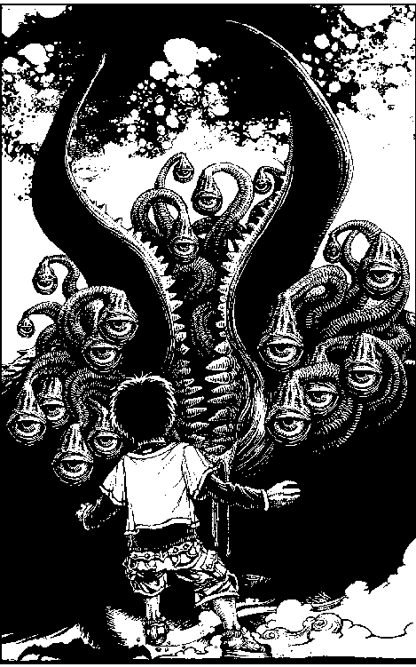

| 魔人竜生誕 (幻想迷宮ゲームブック) | |
| 松友 健 | |
| GENSOUMEIKYUU SHOTEN (2016) | |
幻想迷宮ゲームブック
魔人竜生誕
松友 健
ゲームを始める前に
もし、あなたが"ゲームブック"なるものをご存知ない場合は、ここから先を読む前に幻想迷宮書店のサイトにいってゲームブックとは何かということだけ読んでおいてください。なに、難しいことはありません。日本語が分かれば大丈夫です。
このゲームを楽しむためには、さまざまなことを記録しておくための用紙、鉛筆（又はシャープペンシル）、消しゴム、サイコロが二個、そして多少の時間が必要です。他に有れば望ましいものとして、勇気・友情・夢・希望・初めて知った人の愛、その優しさに目覚める事......等が有りますが、これらは揃えられるぶんだけで結構です。
また、このゲームブックでは各パラグラフの終わりに必ず"▲"のマークが登場します。この印が見えていなければ、現在読んでいるパラグラフには続きがあるということです。うっかり、次ページにある選択肢を見落としたりしないように注意してください。
記録紙への記入
本を読み進めていくと、しばしば、記録しなければいけない記号や数字などが出てきます。記憶力に頼ったプレイはおすすめできません。また、戦闘の際にサイコロを使うことを想定されていますので、紙と鉛筆とサイコロを用意するか、メモ帖機能のあるアプリ、サイコロアプリなどを同時に使うことをおすすめします。記録紙がただのメモ帖では味気ないという人のために、幻想迷宮書店のサイトではアドベンチャーシートを用意しています。これには本を遊ぶにあたって、記録していくことになるあなたの能力、経験などを記録していくためのフォーマットがあらかじめ用意されています。印刷してご利用ください。
能力初期値の決め方
このゲームで主人公に与えられる能力は攻撃力、防御力、生命力、持久力の四つです。
攻撃力は力強さ、技量、敵をとらえる勘などを示しています。この数値が高いほど、自分の攻撃を上手く敵に命中させる事ができます。
防御力は機敏さ、頑健さ、敵の攻撃をさばく技術などを示しています。この数値が高いほど、敵からの攻撃を避ける可能性が高まります。
生命力は耐久力、しぶとさ、生きる事への執念を表しています。この値はダメージを受けるたびに減少してゆき、０以下になる事で戦闘不能に陥り、ゲームオーバーとなります。生命力を回復させる時に上限値を上回る事はできません（初期値として決めるのは上限値です）。
持久力はスタミナ、精神力、根性などを表しています。戦闘中、敵を攻撃するたびにこの持久力を消耗します。この数値が０以下になれば主人公は行動不能に陥り、まだ敵が生きていればそこで敗北を迎えます。持久力を回復させる時に、上限値を上回る事はできません（初期値として決めるのは上限値です）。
これら四つの数値を次の組み合わせの中から、あなたの任意で決める事ができます。
攻撃力と防御力の合計を４、生命力と持久力の合計を10にする。
攻撃力と防御力の合計を３、生命力と持久力の合計を15にする。
攻撃力と防御力の合計を２、生命力と持久力の合計を20にする。
攻撃力と防御力の合計を１、生命力と持久力の合計を25にする。
攻撃力と防御力の合計を０、生命力と持久力の合計を30にする。
この五つのパターンから一つを選び、攻撃力と防御力、生命力と持久力にふり分けます。ただし、各能力は次の範囲内で決めてください。
攻撃力と防御力は最大で２点までです。攻撃力を４、防御力を０といった配分にはできません。
生命力と持久力は最大で15点、最小で５点です。
これらの数値はいったんゲームを始めれば刻々と変化していきます。そのつど記録用紙に記入してください。
戦闘の方法
このゲームでは、一旦戦いが始まれば逃げる事は許されません。あるのは生か死かです。戦いの手順は次の通りです。
- 【ステップ１ 技を選ぶ】まずは主人公が敵を攻撃します。パラグラフ末にある表の技記号を確認し、修得している技の中から、使うものを選び、タップしてください。
- 【ステップ２ 命中判定】指示に従い、持久力を減らしてください。次にサイコロを二個振ります。出た目が一のゾロ目ならば攻撃は失敗、六のゾロ目ならば攻撃は成功です。そうでなければ出た目の合計に主人公の攻撃力を加え、表記された敵の防御力と比べてください。結果、こちらの合計値が敵の防御力と同じか上回っていれば攻撃は成功、下回っていれば攻撃は失敗です。それぞれのステップ３へ進んでください。
- 【ステップ３（攻撃が成功した場合）】敵にダメージを与えました。さらに主人公は連続して攻撃をすることができます。同じ技を使うなら、ステップ２に戻り、持久力を減らし、サイコロを振ります。別の技を使ってみる場合はステップ１に戻って、別の技記号をタップしてください。攻撃が命中する限り、主人公のターンが続きます。
- 【ステップ３（攻撃が失敗した場合）】指示されたパラグラフへジャンプしてください。敵から反撃されます。サイコロを二個振って、出た目が一のゾロ目ならば攻撃は失敗、六のゾロ目ならば攻撃は成功です。そうでなければ合計に主人公の防御力を加え、表記された敵の攻撃力と比べてください。合計の値が敵の攻撃力を下回ったならば、敵の攻撃が命中しました。指示された点数だけ生命力を減らしてください。合計の値が敵の攻撃力と同じか、上回っていれば、主人公は敵の攻撃を防ぎきりました。生命力に変化はありません。どちらにしても、敵の反撃が一回済んだら、再び主人公の攻撃となります。ステップ１に戻り、攻撃を再開してください。
ここまでの流れを、敵のダメージが指示された値まで蓄積されるか、主人公の生命力か持久力が０になるまで繰り返します。その際、次のことに留意してください。
- 【転機】敵に与えたダメージが一定値まで蓄積されると、敵の攻撃力や防御力、こちらに与えるダメージなどが変化する事があります。これによりその後の戦闘が有利になったりします。ただし、一つの項目で出た指示が有効なのは一回限りです。「敵の防御力を１下げる」という指示が出る項目を二回通っても１しか下げることはできません。
- 【敗北】戦闘中、生命力か持久力のどちらかが０になれば主人公は死亡し、そこで敗北となります（ごく稀に例外もあります。その場の指示に従ってください）。
- 【勝つために】このゲームブックでは主人公の攻撃を失敗するまで繰り返し、失敗した時だけ敵が反撃してくるのです。一見、主人公が非常に有利に思えますが、技を放つたびに持久力を消耗する点に注意してください。効果の薄い技を繰り返してもスタミナ切れによる敗北（すなわち、死）を迎える事があり得るのです。
- 【知らない技は使えない】技に応じて消耗する持久力は戦闘中、記されていません。これらは技を習得するときに技の名前とともに記録紙に記されるものだからです。主人公が前世の戦いの記憶を受け継ぐ戦士の末裔なら別ですが、そうでなければ技を繰り出すことはできません。知らない技を選ばないようにしてください。
生神力ポイント
精神力と生命力の融合した根源、命と魂の本質......これをこの世界では『生神力』と呼びます。主人公は、この力を高める事で、その戦闘能力を高め、新しい技を覚え、因果の起源を垣間見ます。この点数は最初、０からスタートします。主人公は始めは何の力も無い普通の人間だからです。ゲーム中、主人公は敵との戦いに勝利するたびにこの生神力ポイントを増やしてゆきます。これが10点貯まるごとに主人公の力はレベルアップするのです。この時に各能力値を増やすよう指示されますが、生命力と持久力は上限値と現在値を両方増やしてください。
生神力ポイントは戦闘だけでなく、ゲーム中の行動により増える事もあります。
フラグマトリクス
記録紙にＡ―１からＤ―４まで、四つずつのアルファベットと数字で構成される四列×四段の数字を書き込むマス目を用意してください。ゲーム中に主人公の取った行動が以後の事件にどう関わるのか、それを数字で記録するのが【フラグマトリクス】です。ゲーム中に指示があれば、該当する場所の数字を指示された分だけ、増加させます。初期値はすべて０として、指示のあった箇所が未記入だった場合は「０」だったものとして指示された数字をそのまま書き込んでください。
この数字はしばしばパラグラフの飛び先の数字を決める要素となることがあり、本文中に飛び先となる数字が書かれていなかったりします。そんな時は、一度「目次」に移動して"パラグラフ直リンク"というところから、あなたが行きたい番号を指定してください。
命運指数
一から六までの数字の中から好きなものを一つ選んで、命運指数に記入してください。サイコロを振って無作為に決めても、直感で適当に書き込んでも結構です。
ゲームを始める前にしておく事はこれだけです。では、心の準備ができしだい、序文を読み進めて下さい。人ならざる者の跋扈する世界へようこそ......
序文
時は二〇〇六年、ここに『あなた』の分身となる一人の男がいる。結構クセの強い手入れされていない髪に太い眉毛。身長も体重も標準、腕っぷしもあくまで人並み。しかし普段から肉体労働に従事しているせいか、体力ならそこそこある。
日本という国のとある街に住むこの男が、この物語の主人公だ。優れた才能の持ち主でもなく、特別な技能を有してもいない、特にどうという事のない男である。少なくとも今のところは......。
俺の名は明。羅田明という。満で二十三歳になり、この街で個人経営の配管工場を営んでいる。まぁ、要するに下町の零細工場で、他の設備会社の下請けをやっているわけだ。正直、不景気のせいで食ってくのがやっとだが、どうせ天涯孤独の身、自分さえ食えれば問題ない。
両親はもういない。俺が高校を出てしばらくしたら事故であっけなく逝った。俺に板金工の基礎といくつかの取引先、そして一台のトラックと二階が家になっている小さな工場を残して。おかげでなんとか生活していく事は出来る。家には俺以外、誰もいなくなってしまったがな。独りで暮らすこと、はや五年。人付き合いのいいほうでも無く、特にこれといった趣味もない。はた目から見ればなんとも味気ないが、今の生活にすっかり馴れてしまったので何か変えようとも思わない。
こうして俺はその日その日をなんとか暮らしている。あちこち得意先をまわって営業し、ちょっとした仕事を貰っては機械の取り付けやダクト工事を行う。こうして毎日過ごしてきたし、これからもずっとそうだと思っていた。今までもこれからも、起伏の無い人生が続くものとばかり思っていた。
そう、その日までは......この大地の運命に穿たれた歪みに、俺がたまたま足を突っ込んでしまうまでは。その運命の果てがどういう結末を迎えるか、決めるのは俺であり......あなただ。一へ進む。
一
今日、俺はちょっと遠くまで仕事で出ていた。山をいくつか越えた隣の県にある工場へ、ダクトの取り付けに行っていたのだ。仕事は予定通り終わり（滅多にない事だ）、俺は夕闇が迫る山道をトラックで走っていた。さして危険な道でもなく、周囲に他の車の影も無い。何の問題もなく、無事に帰る事ができるだろう。口笛を吹きながら俺は街の陰も見えない山間部を走る。いつも通りの、本当に何気ない日常。今日も明日も明後日も代わり映えしないだろう。
ヘッドライトを点ける。視界の悪さに注意しないとな......と頭の片隅でぼんやりと考えていたその時。突如、山の上から何か大きな物がトラックの真正面に転がり落ちてきた！
「うわっ!?」
驚きの声とともに急ブレーキをかける。タイヤのあげる悲鳴のような音の中、トラックは落下物のギリギリ手前で止まった。悪態をつきながら落ちて来た物を見る。俺は少しの間、それが何なのかわからなかった。
何故なら、それは首のちぎられた獣――たぶん猪か何か――という、普段見慣れない物だったからだ。
グロテスクさに吐き気と恐怖を覚える。が、見ていてどうなるものでもない。俺はトラックを降りてそれをどかそうとドアに手をかけ――そして気づいた。なぜ......こんな物が、このタイミングで、ここに落ちてきたんだ？
周囲は山の蔭という事もあり微かな夕陽さえ届かない。冷たい汗が首筋に這うのを感じながら、息を殺して周囲を窺う。なにかがおかしい。異常だ。俺は......
トラックから出て周囲を調べる 七七へ
しばらくじっとして様子を見る 二六一へ
すぐにトラックを発進させる 三六九へ
二
前回の戦いから一週間ほど過ぎたある日の事。俺は朝飯を食いながら朝刊を手に取った。新聞の記事の中で、奇妙な事件を見つける。この町の図書館で怪死事件が起きたというのだ。死亡した男は自分の頭を壁に何度も叩きつけ、頭蓋骨陥没を起こしたらしい。動機は不明。そもそも、なぜこんな奇妙な方法で自殺したのか？
「まさか、奴らが動き出したか......？」
俺の呟きを聞きつけて、食器棚の裏から石丸が這い出てきた。昨夜はあんな所で寝ていたらしい。
「おいおい、邪魔神の眷属かよ？ こんな朝っぱらから、まったくよお。朝は十一時まで寝させろっていうんだよ。昨夜の酒が抜けてねぇじゃねぇか」
そう言ってペット用の水入れ皿に首を突っ込んで酒を呑む。俺はため息を一つついてから私服に着替えた。
幸い、今日の仕事はこしらえ物が少々あるだけで、これは夜中にやってしまってもいい。時間の都合がつけやすいのが自営業の利点だ。俺は着替えてから石丸をひっ掴み懐に入れる。
「連中の所へ行くわけかい？ 着いたら起こせよな」
それだけ呟いて石丸は静かにいびきをかく。俺は図書館へ向かった。一五六へ進め。
三
【フラグマトリクス】Ｂ―１ ＋10
石丸が懐から首を出した。俺の手にある石を覗き見る。
「おい......こりゃ歪みの鍵、ケイオス・サインじゃねえか！ この建物にゃ邪魔神の眷属と手を結んだバカがいやがるぜ！」
石丸はこれが何なのか知っているようだ。
「もう少し細かく教えて欲しいのだがな」
「こいつは邪魔神の眷属と契約し、言うことをきいて貰うために必要なモンだ。しかし拘束する力なんぞはありゃしねぇ。そこら辺を勘違いした召還魔術師きどりの阿呆は後を絶たないがな。これを捨てたって事は、邪魔神の眷属を完全に支配下においたと勘違いしてるって証拠みたいなモンだ。こりゃ近いうちにまた一つ死体が増えるぜ」
石丸の説明を聞き、俺は役立たずな石をゴミ袋の中に放り込んだ。さっさと敵を見つける必要があるようだ。俺はますます邪魔神の眷属の知識と力に深入りしている。この項目に初めて来たなら、生神力ポイントを２増やせ。二階に上がる事にする。四一四へ進め。
四
この洞窟の最後の空洞が、ついに俺の生み出す滅びの業火に埋め尽くされた。地盤を超自然の炎が崩し消滅させる。光と衝撃が吹き荒れるその中央で、俺は邪魔神ムズィベラが消滅するのを見届けた。異界の災厄そのものであった奴と、究極の破壊の権化と化した俺。なんとなく俺は奴に親近感さえ抱いていた。そう、そもそも大した違いは無かったのかもしれない。なぜなら、俺が手に入れた力も、もともとは......。
俺の体がついに消滅した。
五
【フラグマトリクス】Ｂ―１ ＋２
さらに宿星文字が【緑】なら
【フラグマトリクス】Ａ―１ ＋10
倒れている男を無視して俺は歩き出す。邪魔神の眷属を倒さない限り何も解決しない。この男とて、追い詰められなければこんな事はしなかっただろう。
北へ歩く 四七五へ進む
東へ歩く 一〇八へ進む
南へ歩く 八九へ進む
西へ歩く 七九へ進む
六
前回の戦いから約一週間。俺は袋を片手に、買い出しからの帰路にあった。石丸がにょろりと俺の懐から顔を出す。
「明よお。もっとちゃっちゃと歩こうや。酒とピーナッツをきらすと体の震えが止まらねぇ」
時間は夕方、大通りでもなく辺りに人影がないとはいえ、蛇の姿で堂々とアル中みたいな事を言う石丸。誰かに見られたらどうするのか、という心配など全くせずに周囲を見渡す。
「でかい建物が増えたな。戦時中ならかなり大物なビルデングが今は当たり前みたいに立ってやがる」
無表情な顔で声だけ感心したように言う。
注意するのも面倒くさいので俺はそのままぶらぶらと歩く......がその時、唐突にすぐ脇にあるビルの谷間から妖力を感じ取った。俺の超聴覚に、かすかに悲鳴がこだまする。石丸も感知したようで、俺と同じ方向に首を向ける。
「酒はもうちょい後まわしかい」
石丸がそう言った時、俺は既にビルの谷間へ駆け出していた。四六へ進め。
七
俺の拳が敵の顔面に命中した！ 強烈な手ごたえとともに敵の頭部がバラバラに砕け散る！ 頭の上半分を吹き飛ばされた敵は二、三歩後ろによろめき......体を傾けた不自然な体勢でピタリと静止した。どういう事だ......？ 訝しむ俺の目の前で、敵の顎がガチガチと鳴った。こいつ、笑っている!?
「見事だなジーレギオン。我が分体の一つを貴様は潰したわけだ。無数の影のうち、たった一つだけを」
俺は後ろに跳んで身構えた。生神力ポイントを３増やす。そして五五三へ進め。
八
【フラグマトリクス】Ｃ―１ ＋30
【フラグマトリクス】Ｃ―３ ＋30
俺は男へと、殺気を隠そうともせずに向かう。小さな悲鳴とともに引き金が引かれる。サイレンサーをつけた銃は小さな戟鉄音しか起こさない。その銃弾を俺は造作もなく避けた。男はかすれて声にならない悲鳴をあげながら撃って撃って撃ちまくるが、その銃弾を俺はことごとく避ける。一発もかすりもしない。弾切れになった銃の引き金を半狂乱になって引く男を、俺は見下ろし言ってやる。
「人に引き金を引いた以上、自分が殺される覚悟ができていないとは言わせん......」
言いながら、俺の体を紫の燐光が取り巻いた。
一瞬だけ聖魔甲が俺の全身に被さり、その瞬間、俺の拳が男の顔面に減り込む。そのまま聖魔甲を振り払うようにして俺は振り返った。俺の全身を包んでいた鎧と紫の燐光は霧散し消える。原子分解して消滅する男の体とほとんど同時に......。
宿星文字が【小】ならば、生神力ポイントを２増やせ。
男の体が消えゆくのを尻目に、俺はさっさと部屋を出た。八七へ。
九
「ジーレギオン！ 覚醒！ 装・着！」
俺は緑を引っ張りながら武装する。紫の輝きが俺を包み込み、その光を突き破って現われた聖魔甲が俺の全身に装着された。そのまま手近にあった崖から飛び降りる。悲鳴を上げる緑を抱え、十五、六メートル下の地面に着地した。その衝撃で緑が呻くが、ケガはさせてないはずだ。安全な距離を稼ぐためなので我慢してもらおう。上を見れば、次の攻撃のタイミングを計り黒い影が上空を舞っている。その時、いつのまにか側の林に移動していた虚無僧が声をかけてきた。
「こちらへ！ この山は我らの領域、敵をまく事ができまする！」
神々が待っている事は知らされているが......敵を目の前にして逃げるのか？
ここは退く 五二三へ進む
敵と戦う 九七へ進む
一〇
拳を全力でガヌァヴに叩き込む。それは音の速さをも超えて奴に襲いかかった。俺の拳を鉤爪がギリギリで受け止める。その衝撃で大気が震えた。
俺は本当に生まれ変わっていた。体格も大きく増し、今の身長は一九〇センチを、体重は九〇キロを超えるだろう。そしてこの体に精神力と生命力の融合した魂と命の結晶、超自然のパワーである『生神力』が脈動している！
戦闘に対する恐れはない。不安もない。傷つく事に対する心配もためらいも全くない。戦意と敵意と闘志だけが俺の心の中を占める。俺は不自然なほど戦闘に適応していた。
では、俺はどの技で攻めるか？
| 技Ａ | 技Ｂ | 技Ｃ | 技Ｄ | 技Ｅ |
| 技Ｆ | 技Ｇ | 技Ｈ | 技Ｉ |
一一
行きたくない者を無理に引っ張っていくのも良くないだろう。それに戦場となる場所に戦闘力の無い者が行くべきではない。俺は白蛇の神をそこに残し、森の中を駆け抜けた。
化け物まであと一息という所で、向こうもこっちに気づいたようだ。妖力がこっちに向かってくる。俺は構わず走り続けた。醜悪な肉塊が視界に入る。俺は飛んだ。化け物に向かって飛び込んだ。化け物は鉤爪を振り回す。俺と化け物は激突し、その余波が周囲の木々を揺さぶる。俺は拳を魔物の鉤爪と打ち合わせ、半ば力比べの体勢で睨みあう。
「貴様、殺しタはずノ小僧。霊神将と化しテこのガヌァヴに楯突くとハ」
「霊神将とは何なのか、それは知らん。だが貴様を野放しにはしておかん！」
そう怒鳴った俺の中に、未知の力が吹き荒れるのを感じる。生神力ポイントを10増やせ。この項目番号一一をメモして一三二へ進むこと。この項目に戻ってきたならば腹をくくれ。俺は奴に飛びかかった。一〇へ。
一二
電車に乗って二十分ほどで草度社についた。真面目な学術書から手に負えない馬鹿本まで出しているだけあってなかなか大きなビルだ。しかしすでに真夜中、電気はぽつぽつとついているだけになっている。酒林氏はまだいるのだろうか？ これは後日出直す事になるかもしれん......と思った時。俺は目の前のビルのどこかに妖力が潜んでいるのを感じた。これは夕方の赤い影から感じた物と同じだ！
すでに敵は酒林氏の周囲に迫っているらしい。俺はビルの正面玄関から中に入った。ドアは開いているにも関わらず、照明は半分がた消えており人影もない。......どう考えてもおかしい。敵の妖力は朧で掴み難く、はっきりした場所は近くまで行かないと特定できそうにない。俺はビルの奥まで進み、エレベーターに乗り込む。さて、どこを調べるべきか......。
二階へ向かう 六一へ進む
三階へ向かう 三二七へ進む
四階へ向かう 六一六へ進む
五階へ向かう 八四へ進む
六階へ向かう 五六へ進む
一三
灯台の二階、殺風景な部屋の中。俺とザーラスターは隙を見せずに向かい合う。俺は問いかけた。
「なぜここを教えた？ お前は邪魔神の側についたはず」
「実はな。深い理由は無いんだよ。ガキを大量に攫い、ムズィベラの餌にする。一度に数多く攫う事で、人間どもに不安と恐怖を植え付ける。そんな計画が......気に入らねぇのさ。俺は連中の味方にはなったが下僕になったわけじゃない。鬱陶しい任務を押し付けられればこっそり逆らいもするさ」
「だから邪魔神の眷属を始末し、他の眷属どもには俺の仕業だと吹き込むつもりか」
奴はヘッと笑った。
「最悪の場合はそうするさ。が、アンタが神々の味方をやめて俺の同志になるっていうんなら別のごまかし方を考えるぜ」
「貴様の言い方だと、まるで神々を憎んでいるかのようだな」
俺の言葉を聞き、奴の顔つきが変わった。余裕の色は失せ、憤りが垣間見える。
「ああ、そうだ。連中は許せねぇ。奴らは人間の味方でもなんでもない。アンタが知らないだけでね。俺が霊神将となったのは、五年前に故郷が邪魔神の眷属に襲われた時だった。当時まだ十三歳だった俺は、偶然、連中に命を狙われたのさ。今、下で寝ているガキどもみたいにな。その時にある神に霊神将としての力を与えられ、一人だけいた仲間と共に戦う事になった。その時の戦いは熾烈を極め、仲間は戦死......俺も主神も重傷を負い、ようやく当時の邪魔神を滅ぼす事ができたんだ。なのに、戦いが終わると、主神は俺を裏切った。必死で戦ってきた俺に対し、主神は霊神将の力を消し去ろうとしやがった！ 主神が重傷を負って弱ってなけりゃ、俺は抵抗しきれず力を失っていたはずだ。結局、奴ら神々にとって霊神将は道具なんだ......使い捨てのな！ 戦いが終われば用済み、それまでどんなに命をかけようともだ」
そこまで聞いて、俺はザーラスターに尋ねる。
「お前の主神は、今、どうしている？」
「死んださ」
吐き捨てるように奴は言った。
「さて、ジーレギオン......いや、羅田明さんよ。アンタはそれでも奴らの味方をするのか？ 俺と違って霊神将の力で死の縁から蘇ったアンタは、もし力を取り上げられたら生きてられないんだぜ？」
俺の脳裏に主神の姿が浮かぶ。使い捨て？ 道具？ あいつが俺を？......俺はきっぱりと答えた。
「貴様に協力はできん」
ザーラスターの周囲に殺気がみなぎる。
「その理由、聞かせてもらおうか？」
その理由とは――
正義 九三へ進む
信念 四六四へ進む
平和 三八へ進む
愛 八八へ進む
問答無用 五六四へ進む
一四
俺はトラックに乗り込んで家に帰った。何も理解できていないのだから当然だ。家に帰り着いたとたんに急いで布団に潜り込んで寝てしまった。
数日後の新聞で、俺はあの日通った山道で行方不明者と惨殺事件が頻発している事を知る。それを皮切りに、ニュースは今まででは有り得ないほど多発する凶悪犯罪を連日報道しだした。しかも、犯人が不明の事件があまりにも多いという異常事態。これはいつまで続くのだろうか......。
だが、これはもはや俺にとって関わるべきでない事なのだ。
一五
俺は眼鏡の青年の肩をたたいた。振り向く青年。
「その話、詳しく聞かせてくれないか？ 守衛さん、向こうでちょっと話をさせてもらうぞ」
俺の言葉を聞き、青年は厳しい顔つきで頷き、守衛のおっさんはホッとした顔で胸をなでおろす。青年とともに守衛室から離れ、俺は彼の主張を聞いてみた。
「私は草度社の酒林という者なんですが。今、ある件であちこち調べ回ってまして。実は世界は崩壊の危機にさらされているんですよ！ これは会社が発行している週刊誌宛ての読者からの手紙がもとで調べ始めたんですが！ 社会の裏に潜む地球外知的生命体達の超能力者養成所が、次の人間改造計画のためにサブリミナル効果を駆使して人間牧場計画を実行しようとしているのです！ ウスノロダマスの予言によると、その日は間近まで迫っています！ 私にはそうとしか思えないんです！」
興奮しながらまくしたてる彼。疲れすぎなんじゃないだろうか。
「そんな訳で私は調査に戻らねばなりません。スーパー・ミステリー・レポーターズ、通称ＳＭＲの使命ですから！ この建設現場には何かあります！現に、昼間崩れたという崖の上、建築現場の先の森を抜けた所にある場所で不審な人物を見たという情報も入手しました！ すでに三万人委員会の超風水技術は実用段階にあるんです！」
そこまで一方的に言うと、酒林は小走りで再び守衛室の方に戻っていった。すまない守衛のおっさん、俺では止めるのは無理だ。五三九へ進め。
一六
闇の中、走りながらの投石はさすがに命中しなかった。狙撃手は何処かへ走り去る。俺は足を止め携帯電話をかけた。十数秒後、小太郎が電話にでる。
『明？ どう？ 捕まえた？』
「いや、取り逃がした。俺は先へ進んで調べてみる。お前は守衛室へ戻って、忘れ物を取りに行った家族を待ってる、と言ってくれ。早く暗がりから離れるんだ」
『うん、仕方ないや。わかったよ。気をつけてね、明』
携帯電話を切って俺は先へ進む。五三九へ進め。
一七
多数の神々の聖なる力の前に、ムズィベラの周辺で唸りを上げる強大無比な妖力のオーラに僅かな亀裂が生まれていた。俺はまっしぐらにそこに飛び込む。周囲で荒れ狂う凶悪な力の奔流をかきわけ、ムズィベラの体に全力で拳を打ち込んだ。邪神の表皮に拳がめり込む。奴に俺の攻撃が届く。無敵を誇る邪神といえど、僅かなりとも死角があれば俺の牙は防げはしない。
奴にブチ当てた俺の拳から紫の燐光が噴き出した。ムズィベラの体が塵と化して吹き飛んでゆく。俺は体を押し込むように前進し、最大奥義・テュルフングドライバーを撃ち込み続けた。
サイコロを振って敵を攻撃せよ。ムズィベラの防御力は18。攻撃するたびに持久力が１点減る。命中させれば【フラグマトリクス】Ａ―１の値を一〇で割った数だけサイコロをふり、出た目の数のダメージを与える事ができる。
攻撃が命中し、奴に与えたダメージの合計が100点以上になったら四四二へ。
攻撃に失敗したらサイコロを一個ふれ。出た目が一ならば俺は反撃を受ける。それ以外の目ならば攻撃を向けられるのは周囲の神々なので再度攻撃に移って良い。
俺に対するムズィベラの攻撃力は28。防御に失敗すれば俺は生命力を12点失う。まだ生きていれば、俺は力を振り絞って反撃する。引き続きサイコロをふって攻撃せよ。
一八
【フラグマトリクス】Ｂ―３を確認せよ。値が二九〇以上ならば、一四三を加えた項目へ進め。この条件にあてはまらなければ四五二へ進め。
一九
今必要な物は灯台へ潜入するための道具だろう。正面からでは丸見えとなれば、灯台の三方を囲む崖を越えねばなるまい。廃材を漁るうち、ほとんど損傷していない二十芯の電線ケーブルを見つけた。ロープとして充分以上に頑丈だが、フックになるような物が無い。周囲の金属製品は雨風に晒され続けて錆びきっており、とても使い物にはならない。
どこかで入手して【フックを持っている】ならば、五二二へ進め。そうでなければ今は何も手に入らない。六七へ戻れ。
二〇
俺は小刻みにジャブをガヌァヴに向けて放つ。速度に特化したそのパンチは、衝撃で大地に溝を刻むほどの超高速を誇る。これが必殺技の一つ、フルンティングエッジ！
持久力を技の消費ぶん減らせ。この技に対し、敵の防御力は９。命中すれば２点のダメージを与える。
攻撃が命中し、奴に与えたダメージの合計が36以上になったら四六八、12以上になったら一二六へ。命中したものの、まだそこまでダメージを与えていなければ、このまま同じ技を続けて繰り出すか、別の技を選んで攻撃を続けよ。
攻撃に失敗したら、二二へ進め。
| 技Ａ | 技Ｂ | 技Ｃ | 技Ｄ | 技Ｅ |
| 技Ｆ | 技Ｇ | 技Ｈ | 技Ｉ |
二一
灯りのついている部屋の前で、聞き耳を立てながらじわりじわりと進む。たまに廊下に出てくる人影があれば、近くの通路に身を潜めた。しかし、なかなか有用な情報は聞けない。どこもかしこも、事件の責任処理に追われているようだ。しかし俺はこの会社の経営危機を調べに来たわけではない。邪魔神の眷属はいったいどこに？
また廊下に誰かが出てきた。俺は廊下の角を曲がって身を潜める。近くには外への窓もあり、いざという時には逃げ出せるだろう。そっと廊下を窺うと、ファイルを二、三冊抱えた青年が疲れた様子で別の部屋に向かう所だった。その時、窓の外から急に妖力が膨れ上がるのを感じる！ 待ち伏せされたか!? 俺が反応するのと、壁を突き破って細く鋭い鉤爪が襲い掛かるのはほとんど同時だった！
サイコロを二個ふり、出た目に防御力を加えろ。合計が13以上ならば間一髪で爪をかわす事に成功する。12以下ならば俺の肩口を爪が貫いた。サイコロを一個ふり、出た目の半分だけ生命力を減らす。サイコロの目が奇数だった場合、端数は切り上げろ。
敵の気配はその一撃だけで完全に消えた。奇襲の手際といい逃げ足といい、相当素早い相手のようだ。廊下の角の向こうでまた誰かが部屋を出入りする音が聞こえた。俺は二階に見切りをつけ、三階を調べる事にする。五七一へ進め。
二二
俺の攻撃が外れた隙をつき、ガヌァヴが鉤爪を叩きつけてきた。その爪がヌラヌラと光っているのが見える。直感的に、それが毒液の光沢だとわかった。俺はとっさに手甲を使ってブロックする。
俺に対する奴の攻撃力は11。防御に失敗すれば、俺は３点の生命力を失う。
結果、生命力か持久力のどちらかが０以下になっていれば俺はここで倒れる。防いだにしろ食らったにしろ、戦えるなら反撃するしかない。技を選べ。
| 技Ａ | 技Ｂ | 技Ｃ | 技Ｄ | 技Ｅ |
| 技Ｆ | 技Ｇ | 技Ｈ | 技Ｉ |
二三
俺の渾身の拳が、ついに邪魔神ムズィベラの体を撃ち砕いた！ 異界の邪神が咆哮する。洞窟の岩壁を揺るがすその咆哮の中で、その中央の白い光球の中で、邪神はザラザラと崩れ......消滅した。
白い光球がかき消すように消え、ザーラスターが地面に落ちた。俺は疲労と今までの負傷でくずおれそうになりながらも、なんとか堪えて正志に歩み寄る。死相が見えている......。息をしている事が不自然なほどの重傷だった。正志が呟く。
「へへ......やったな。ようやく、全部終わったぜ。じゃ、俺、仲間と主神のところへ、行くわ。......やっぱ、怒られちまうだろうなぁ......」
「俺なら誉めるさ」
こいつが邪魔神の眷属どもに加担していた事を忘れてはいない。過ちがあれば生きてやり直すべきだとも思う。ならば俺の言葉は間違っているかもしれない......だが、それでも構わなかった。
「そっか......なぁ、明......」
「なんだ？」
「ためらわずに戦ってくれて、ありがとよ......信念、見せて、もらったぜ......」
正志は爽やかな笑顔を見せる。最後に、一度だけ。その笑顔を俺は一生忘れないだろう。
それから一ヶ月。俺は正志の故郷、五年前にアイツと仲間と主神が守った町に来ていた。県境の小さな町だ。その町を見下ろせる山の中原にある公園の片隅に、三つの墓が並んでいる。金を出して専門店で買った立派な墓石ではなく、天然石を力任せに削った手製の稚拙な墓標。俺がここにアイツを埋葬する前、既に二つの墓があった。その横の三つ目の墓石が、俺が正志のために建てたものだ。全ての墓に花を供えると俺は町を見下ろす。柔らかな陽の光のもとで、周囲を慈しむかのように優しいそよ風が吹いていた。
二四
俺は本の山を手近な床に置き、音のする方向へ向かう。鈍い打撃音が聞こえてくる部屋の前まで行くと、そこは視聴覚室だった。敵の妖力は感じない。俺は扉を開けて勢いよく中に入った。
部屋の中を見渡せば、壁際に誰かいる。三十代半ばのその男は、部屋の奥の壁に自分の頭を猛烈な勢いで叩きつけていた！ 何度も何度も壁に打ちつけられた額はすでに割れ、男の頭部は血のコーティングで生々しい赤色に染まっている。壁にもべったりと血が塗りつけられ、それでもなお頭突きを繰り返すため周囲のモニターにまで鮮血が飛び散っていた。
俺の後ろからそっと部屋の中を覗いた緑が、不気味で凄惨な光景に息を飲む。俺たちの存在を察知し、男はこちらを振り向いた。焦点の合ってない虚ろな目が明後日の方を向いている。
「ばはぁ......」
半ば開かれた口から漏れ聞こえた声には何か意味があるとも正気が残っているとも思えない。男はこちらを向いたまま動きを止めた。
男に近づく 五二六へ進む
誰か人を呼んでくる 八三へ進む
二五
【フラグマトリクス】Ａ―１ ＋10
【フラグマトリクス】Ａ―２ ＋100
【フラグマトリクス】Ｄ―２ ＋１
ダンボール箱が散乱した部屋の中に五つの人影がある。四人の若い青年と......なんと小太郎だ。青年四人は小太郎を加えて白熱した議論を展開しているようだ。
「取材拒否されたという事は、やはり政府はこの計画を一般大衆から隠蔽しようとしているんじゃないでしょうか!?」
「そうなの三毛田さん!?......でも政府が関わってるっていうのは推測だったんじゃ？ いつのまに確定事項になったの？」
「いや、地球外知的生命体が関わっているなら、あり得ない話じゃないぜ......。すでに計画は火星基地建設まで進んじまってるなんて！ どうすりゃいいんだ！」
「火星!? もう計画は最終段階なんだね!?......でも縄田さん、この読者からのＵＦＯと戦闘機のランデブー写真、いやにタイミングよく編集部に送られてきてない？」
「しかしすでに超人兵士量産計画はアメリカでは最終段階に入ろうとしています！ インターネットを通じて送られる人造生命体プログラムは動機不明の連続殺人事件まで起こしていますよ！」
「そ、そうなんだ。......ねぇ津丸さん、そんな極秘プログラムがなんで一般家庭にネットで届けられるのか僕にはよくわかんないんだけど......」
「小太郎くん、信じられない気持ちもよくわかる。しかしこれらは全て酒林さんとともにウスノロダマスの預言書を解読して得た情報に基づいているんだ！」
「......妥中さん、ウスノロダマスって、四百年前のお医者さんだよね？ 宇宙人とか人類移住計画とかコンピューターの殺人プログラムとかをその人の占いの本をもとに調べたの......？」
......青年四人は小太郎を加えて白熱したヨタ話をブチまけているようだ。首をかしげっぱなしで困り果てる小太郎。その視線が、入り口でつっ立っている俺を見つけた。
「あ、明！ 来たんだね！」
ほっとした表情で小太郎は俺に駆け寄ってくる。部屋に踏み込むのが躊躇われるので俺は駆け寄らない。側まで来るのを待って、俺は小太郎を叱りつける。
「夜遅くに勝手に出歩いてこんな所まで来て......何をしている？」
ましてや敵が居るだろう場所に一人で乗り込むとは。
「だって、あのままだったら絶対に留守番させられてたもん。明が僕を一人で置いてくから、僕も一人で来たんじゃないか」
ぬう。思わぬ反撃がきた。拗ねた顔で駄々をこねる小太郎。紐で縛って持ち帰ろうかと考えていると、青年の一人が俺に声をかける。
「保護者の方ですか？ 小太郎君は酒林さんに会いに来たということなんですけど、酒林さんがすぐに戻ってくると思ってここで待たせてしまいました。どうもすいません」
礼儀正しく頭を下げられた。これではこれ以上怒るわけにもいかんな。
「いや、こちらこそ見苦しい所をお見せした。ところで酒林氏はどこに？」
尋ねる俺に、四人の青年は顔を見合わせ一様に首をかしげる。
「小太郎君が来る直前に電話がかかってきて、その後、すぐに戻ると言って出て行かれたんですが......。まだ戻りませんね」
すでに敵の手に落ちたか？
「すみませんが、もう少し小太郎をお願いできますか？」
駄目でもともと、頼んでみる。断られたら縛って持ち帰るしかあるまい。しかしＳＭＲの隊員たちは快く承諾してくれた。礼を言ってから俺は小太郎に向き直り、四人に聞こえないように囁く。
「ここで待っているんだ。事態は一刻を争うかもしれん。すぐにケリをつけてくる」
「大丈夫？ 気をつけてね？」
俺に囁き返す小太郎に、俺はフッと笑って見せた。
「誰に言っている？ 任せろ」
八七へ進め。
二六
俺は何かを喚きながら走り出した。現実感など、とうの昔に失われていた。奴も走り続ける。明らかに俺を追っている。奴の息が背中に触れているんじゃないか......そんな思いが俺をさらに狂わせた。俺は走り続ける。
「......マテ、ヨ......」
くぐもった鈍い声が聞こえた。奴の声だ、と判り、俺はもう悲鳴もあげられずに走った。突然、体が下に引きずり込まれた。数十メートルはある崖を、俺は恐怖の声を引きずりながら落下していく。俺は死ぬ。三三六へ。
二七
入り江の波打ち際にいる。岩場の影なので灯台からは見えないはずだ。東に二百メートルほど行けば向かい側の崖に出る。それを数十メートル登れば灯台へ辿り着けるのだが、濡れた体で道具も無しに登れるほど緩やかな崖には見えない。もしあそこを登る事ができれば、誰にも気づかれずに灯台へ入り込めそうだが......何も手がなければ五四三へ戻れ。
二八
前回の戦いから約一週間。俺は夕方の町並みを小太郎と歩いていた。小太郎の手には最近刊行された漫画の新刊が握られている。嬉しそうに俺に説明してくれる小太郎。
「......で、この『ＧＵＮ突風ＷＥＳＴ』の主人公二人が金属バットを武器に遥か遠くにある伝説の地をめざすわけだけど、ヒロインが全然出番無くて、声優のかやまみくって人はクレジットされてるだけ扱いみたいな......」
俺は飯時に小太郎が見ているのを眺めているだけなので、あまり深い話にはついていけない。とりあえず相槌を打ちながら歩いていた。その時。側のビルの谷間から妖力を感じ、俺は思わずそちらに振り向く。この気配は邪魔神の眷属！ 俺の聴覚がかすかに人の悲鳴を捉えた。小太郎も妖力を感じたようだ。俺はビルの谷間へ向けて走り出した。小太郎も遅れて後についてくる。四六へ進め。
二九
あからさまに怪しいので、主神は連れずに一人でトラックを走らせる。昼前に指定された岬の側まで来た。海に突き出た岬の灯台や、周囲の建築途中で放棄されたビルが、ここからでも見える。森沿いの道路を走り、後一つカーブを曲がれば到着する......という所まで来た時、道路の真ん中に誰かがつっ立っている事に気がついた！ いつの間に!? 慌ててブレーキを踏む！
車はギリギリで止まった。まるで動じず立っているのは、二十歳前後の青年。意志の強そうな顔立ちだが、その表情はどこかに憂いが見えるような気がする。俺が怒鳴ってやろうとした時、その青年の口が動いた。
「正志は灯台にいます。貴方は止められるのですか......？」
フロントガラス越しのはずなのに、隣りで囁かれたかのように声が聞こえた。驚く俺の目の前で、青年がフッと姿を消す。一枚の金色の羽毛が青年のいた場所を漂い、地面に落ちてシャボン玉のように飛び散って消えた。
わけがわからない。少し考えて、俺はトラックを路肩に止めて徒歩で岬に向かう。現状が把握できていない以上、小回りが利く状態で動くのが得策だろう。五五七へ。
三〇
俺は必殺技、デュランダルストライクをガヌァヴに向けて放つ。このストレートは戦車の砲弾さえ遥かに凌駕する速度と威力を持つ！
持久力を技の消費ぶん減らせ。この技に対し、敵の防御力は10。命中すれば４点のダメージを与える。
攻撃が命中し、奴に与えたダメージの合計が36以上になったら四六八、12以上になったら一二六へ。命中したものの、まだそこまでダメージを与えていなければ、このまま同じ技を続けて繰り出すか、別の技を選んで攻撃を続けよ。
攻撃に失敗したら、二二へ進め。
| 技Ａ | 技Ｂ | 技Ｃ | 技Ｄ | 技Ｅ |
| 技Ｆ | 技Ｇ | 技Ｈ | 技Ｉ |
三一
俺は今、日の出マンションの外階段にいる。このマンションが四階建てだという事は外観からわかっている。超感覚を研ぎ澄ませれば微かに不穏な気配が感じられるが、それがどこかは掴めない。このマンション、どの階を調べるべきか......？
一階 五四四へ
二階 五六二へ
三階 五八八へ
四階 三二三へ
三二
俺を誘っているのかもしれない。罠があっては面倒。俺は青年を追わず、和樹へとふり返った。しかし......そこには誰もいない。
俺が青年に気を取られている間に逃げたか......すばしっこい事だ。まぁ必要な情報は聞いたので問題なかろう。
三三
守衛に見つからないように気をつけつつ、俺は西階段を昇る。二階についたのでフロアを見てみれば、側に「備品倉庫」と書かれたドアがあった。人の気配は無いが......。廊下の突き当たりには東階段が見える。敵はまだ上の階にいるようだ。
備品倉庫に入る 五五二へ進む
東階段を昇る 六一九へ進む
西階段を昇る 六五へ進む
三四
拳に確かな手応え！ 俺の攻撃が奴の巨大な顎の根元に突き刺さったのだ。牙が片方あらぬ方向へ傾き、奴が激痛に悲鳴をあげた。敵の武器が砕けた今、力押しで叩きのめす好機！
今後、アジリールの防御力が奇数だった時に限り、その防御力を６点減らして良い。追撃をかける技を選べ。
| 技Ａ | 技Ｂ | 技Ｃ | 技Ｄ | 技Ｅ |
| 技Ｆ | 技Ｇ | 技Ｈ | 技Ｉ |
三五
車庫はすでに無人だった。当然、今残っているトラックには何も積荷が無く、からっぽだ。試しにざっと見て回ったが、何も怪しい痕跡は見当たらない。あと何かあるとすれば......まだ灯りが点いている車庫の事務所か。窓からそっと覗いてみれば、そこそこ広い部屋の中、中年のくたびれたおっさんが一人だけ、何やらパソコンに打ち込んでいるようだ。たまにあくびをしているその姿、やる気のない残業だとよくわかる。さて、どうしたものか......。【フラグマトリクス】Ｃ―２が未記入で、宿星文字が【石】なら一一四へ進め。この条件に当てはまらなければ二三〇へ。
三六
俺の渾身の拳が、ついに邪魔神ムズィベラの体を撃ち砕いた！ 異界の邪神が咆哮する。洞窟の岩壁を揺るがす咆哮の中で、その中央の白い光球の中で、邪神はザラザラと崩れ......消滅した。
白い光球がかき消すように消える。ザーラスターが地面に落ちた。俺は今までの疲労と負傷でくずおれそうになりながらも、なんとか堪えて正志の側へ寄る。奴は息をしている事が不自然な重傷だった。
「へへ......やったな。ようやく、全部終わったぜ。じゃ、俺、仲間と主神のところへ、逝ってくるわ。......やっぱ、怒られちまう、だろうなぁ......」
呟くように言う正志に俺は答えた。
「怒られるとも。弱音をはくな、とな」
そう言うや俺は正志をかついだ。ガクガク震える膝に無理矢理に活を入れ、俺は出口に向けて歩き出す。

「なんだよ......無理すんなよ......なんで、俺を助けようと、するんだよ......」
「黙れ。霊神将が死ぬほどの傷じゃないだろう」
そう言うと俺は黙々と歩を進める。正志は俺の背中で声を押し殺して泣いているようだったが、俺はそれに気がつかないフリをして出口に向かって歩き続けた。
それから一ヶ月。俺と正志は二人並んで夕方の街を歩いている。
「いや、あんがとよ。上手く行きそうだぜ」
嬉しそうに言う正志。俺は今日、正志に得意先の一つ、ある設備会社を就職先として紹介してやったのだ。
「なんせ俺、受験勉強とか就職活動とか全然してなかったからなぁ」
呑気な事を言う。しかしこんな奴が面接してもらえたうえに気に入ってもらえるとは......あそこ、本当に大丈夫だろうか？
「ま、上手く就職できたら、明にも仕事を持っていってやるよ。ありがたく思いたまえ」
おどけて調子にのった事を言いやがる。俺は正志の頭を軽く小突いた。正志がヘヘッと笑う。夕暮れの街は平和そのものだ。そしてこれからもこの平和は守られてゆくに違いない。ここに黒い竜と銀の鳳がある限りは。俺と正志は夕日の中、家路をぶらぶらと歩き続けた。
三七
俺はここでケーブルを使う事にした。まずは総重量百キロを超えるケーブルを抱えたまま海に飛び込む。海底をほとんど歩くように進み、東の崖に辿り着くと海底を蹴って浮上した。水面に出てからはケーブルの出番だ。崖に投げつけ、適当な所に引っ掛けては登る。二度ほど繰り返すと灯台の際に出た。素早く裏口に駆け寄り、鍵がかかっていたので蝶番を引きちぎって開ける。
灯りもない薄暗い建物の中に、無数の子供が寝転がっていた！ 近づいて調べてみれば、皆一様に眠っている......揺すっても叩いても目を覚まさないほど、不自然にぐっすりと。敵の妖力によって眠らされているらしい。隅に階段があったので、気配を殺してそれを登る。敵の気配があったので、二階をそっと覗くと......いた。天井に張り付いた奇怪な影。樽のような寸胴から直角ぎみに飛び出た不恰好な四肢、ドーム型の頭部の左右に飛び出た目玉、半円形の翅が一対背中から伸びている。まるで皿を貼り付けたジュースの缶のような姿だ。四方にある窓から外をじっと見張っている。
「ジーレギオン！ 覚醒・装・着！」
俺は叫びながら飛び出した。アクション途中の全身から紫のオーラが立ち込める。そのオーラを突き破るように黒い竜を象った聖魔甲が現われ、俺の体を包んでいく。聖魔甲装着・敵が俺に気がつく・俺が天井まで飛んで敵を殴り飛ばす。三つが全く同時に起こった。敵は宙を真横にすっ飛んで壁に叩きつけられ、床に落ちる。呻きながらヨロヨロと立ち上がろうとするが、俺はその頭に手刀を打ち込んで真っ二つに叩き割った。生神力ポイントを２増やすこと。
ザラザラと崩れ去る敵を尻目に周囲を見渡す。ザーラスターはここにいないのか？ その疑問に答えるかのように、三階から奴が階段を降りてきた。既に覚醒装着は終えている。
「なんとも鮮やかだな。忍者のバイトでもしてたのかい？ ま、邪魔者も消えたし、ちょっくら話に付き合ってもらおうか」
そう言うとザーラスターは槍を脇に抱え直した。一三へ進め。
三八
宿星文字が【石】なら
【フラグマトリクス】Ａ―１ ＋10
「小難しい理屈はよくわからんが......邪魔神とその眷属どもがやっている事は、明らかに世の中の平穏を乱してる。ならばすべき事は決まっていると思うが？ 俺にはその力が、多少とはいえ有るのだからな」
俺の言い分をザーラスターは鼻で笑う。
「おいおい。邪魔神を駆逐すれば世の中が平和になるとでも思ってんのかよ？」
嘲笑する奴に、俺は真正面から応じた。
「なるとも。僅かではあるだろう。しかし俺が出すには充分上等な結果のはずだ」
俺のその言葉を聞き、奴は槍を構えた。俺も身構える。戦闘開始だ！ 二六二へ。
三九
俺は川の中へ走った。水飛沫をあげ、腿まで水に浸かる。上空の影がこちらへ突撃してきた瞬間、俺は水中に身を沈めた。案の定、針先を水面にかすらせただけで、敵は再び上空に舞い戻る。水中まで届く勢いで攻撃すれば、当然敵も慣性により水へ突っ込む。俺の思惑通り、飛行する敵は水中に飛び込むのを嫌ってくれたようだ。俺は反撃せんと立ち上がる。だが水上に顔を出した時、敵の姿はどこにもいなかった。こちらの作戦を悟り、一時撤退したようだ。二六三へ進め。
四〇
ガヌァヴを間合いの内に捉え、俺は渾身のアッパーを奴に向けて叩き込んだ。低速ながらも力強いこのブローが、必殺技の一つ、ブルトガングマグナムだ！
持久力を技の消費ぶん減らせ。この技に対し、敵の防御力は11。命中すれば６点のダメージを与える。
攻撃が命中し、奴に与えたダメージの合計が36以上になったら四六八、12以上になったら一二六へ。命中したものの、まだそこまでダメージを与えていなければ、このまま同じ技を続けて繰り出すか、別の技を選んで攻撃を続けよ。
攻撃に失敗したら、二二へ進め。
| 技Ａ | 技Ｂ | 技Ｃ | 技Ｄ | 技Ｅ |
| 技Ｆ | 技Ｇ | 技Ｈ | 技Ｉ |
四一
【フラグマトリクス】Ａ―１ ＋20
俺は精霊たちを残し、緑の後を追って駆け出した。前方に大きな霊力が多数集まっている。そのすぐ手前で俺は足を止めた。眼前にあるのは林の中の大きな広場で、正面には山の斜面がある。その斜面は一枚の岩盤で、巨大な顔が浮かんでいた。あれがこの山の主、古河岩斎か。周囲には、貴族や上級武家や僧正などの、古風な装束の者が多数見える。また沢山の動物もいるが、いずれも堂々とした大柄な姿を見せている。彼らが近隣の神々なのだろう。その広場の中央に緑はいた。他の神々が緑に何か言っている。
「......あなたは霊神将の主神なのだぞ。それが奴の飯炊きや身の回りの世話なぞやるだと!?」
貴族風の神が緑に言った......いや、問い詰めた。
「はい。別に私はおかしいとは思いません。私には戦う力なんてないんです。せめてそれぐらいはしてあげたいんです」
緑は必死に訴えている。
「なんだと！ 霊神将は戦うのが使命！ その主神がなぜ卑しくも雑事などするのか！」
今度は大きな熊の姿をした神が怒鳴る。
「けれど、あの人は......明さんは巻き込まれただけなんですよ。ただ通りがかったというだけで殺されたんですよ？ それなのになぜ上から押さえつけるように『戦え』なんて命令できるんです？ そんなの......酷すぎますよ......」
周囲の、自分より格上の神々を相手に緑は譲らず訴え続ける。
「邪魔神に殺されたというならそれが奴の運命だったのだ。慈悲をかける必要などない」
将軍風の神が低い声できっぱりと言う。
「この前まで普通に暮らしてた犠牲者を捕まえて『運命』なんて、なんで押し付けられるんです？ それに、明さんは自分から戦うって言ってくれました。殺すとか殺されるとか、そんな事したことない人だったんですよ？ それが魔物相手に一生懸命戦ってくれて......私、命令なんてしたくありません！ 私はあの人の帰る場所にいて、疲れて帰って来たら一生懸命ご飯をつくってあげて、少しでも傷が癒えるようにしてあげたいんです！ だって......そうでないと......あの人はいつかボロボロに......なっちゃうじゃないですか」
緑はまだ訴え続ける。感極まったのか、ついにポロポロと涙をこぼしだした。
「そんな感傷的な事でどうしますか！ 霊神将という強大な武器を作り出した以上、責任を持って制御してくれねば困ります。せっかく作り出した霊神将を必要以上に調子に乗らせてはならないのですよ!? 前にあなたのような事を言っていた神の霊神将は、結局、今では邪魔神の仲間なのです！」
今度は牡鹿の姿をした神が糾弾する。
「明さんはそんな人じゃありません！」
泣きながら緑はなおも独りで訴える。それを今度は僧正風の神が押さえつけるように言う。
「あなたは霊神将を作るのが初めてだからわかっていないのだ。ここにいる神にはかつて......」
俺は広場に踏み込んだ。そうせずにはいられなかったし、それを自制しようとさえ思わなかった。
「......いい加減にしろ、貴様ら......！」
自分の眼が憤怒でぎらつくのがわかる。今の俺から漏れる殺気は敵の息の根を止めるときと比べても勝るとも劣るまい。俺を見た神々が、ぎょっと眼を見開いて後ずさった。緑の周囲にわだかまる神々どもの鬱陶しい弾劾の空気を俺の怒気が塗り潰す。俺は緑のそばへまっすぐ歩いていった。緑はあっけに取られ、大きな瞳に涙を溜めたまま俺を呆然と見上げている。俺は緑をかばうように立ちはだかり、神々どもと対峙した。
さっきの熊の姿の神が俺に詰め寄る。
「貴様！ 神々の集会に従者の分際で......」
その神の頭を鷲掴みにして、強引に俺の肩の高さまで引き寄せた。相手は力を振り絞って抵抗するが、俺の腕はビクともしない。神とはいっても、こと戦闘能力に限定して言えば霊神将には及ばない。俺は邪神との戦いのため特化された戦士、しかも最下級とはいえ実戦をくぐりぬけ鍛え抜かれている。山河の大精霊とはいえ力で抗う事などできはしない。止められるのは作り出した主神だけなのだ。
「ド畜生めらが......！」
怒りを隠しもせず呟き、俺は無造作に熊の神を投げ飛ばした。相手は地面を水平にすっ飛んで近くの大木にぶつかる。木には失礼な事をしたかもしれんな。周囲の神が怒りをあらわにするが、俺は睨みつけて黙らせた。
「帰るぞ」
そう言うと俺は緑の手をとり、広場の出口に向かった。周囲の神々がざわめく。その時、巨大な岩盤の――古河岩斎が口を開いた。
「待つがいい。話はまだ、終わってはおらん......」
無論、俺には話したい事など無い。足を止めずに広場の出口へ向かう。
「ジーレギオン。お主はわかっておらぬのだ。霊神将がある意味では我らに諸刃の剣だという事が」
古河岩斎が俺の背に言葉をなげかける。俺は振り向きもせず答えた。
「ならば迂闊に俺を怒らせるな。心配せずとも、邪魔神の眷属は俺が全て地獄の底に叩き込んでやる。お前らは何も言う必要はない。何もな」
俺の足はは止まらない。緑は困惑した顔をしながらも、俺に手を握られているので引っ張られてついて来る。だが、俺は急に立ち止まった。そのままじっと神経を集中させる。俺以外の誰もがわけがわからず俺の不審な挙動にたじろいだ。
「あの？......明さん？」
緑が俺におずおずと話しかけた。しかし俺は神経を研ぎ澄ませたまま答えない。超感覚が、ここに急接近する邪魔神の眷属の妖力をとらえていた。
「来る！」
俺が叫びながら緑をかばって跳び退くのと、さっきまで俺のいた場所に異形の影が降り立ったのはほぼ同時だった。二七四へ進め。
四二
ブンロガズィの肉体が崩れていく。肉片が屋上一面に広がった浅い水溜まりの中へボトボトとちぎれ落ち、濁った腐汁となって消えていく。肉球も溶けて消え去った。腐りゆく肉塊になりながら、ブンロガズィはただ一言、何かを呟いたようだった。しかしその声も水面に肉片が落ちる音にかき消され、やがて奴は消滅した。奴の死とともに、水溜まりもどこへともなく消えていく。夜の闇と静寂を取り戻した屋上を俺は後にする。
生神力ポイントを６増やせ。
俺の戦いはまだ終わらない。次の事件が起きるまでの一週間ほどの時間で、俺の体は常人を遥かに超える回復力を見せる。生命力と持久力を15点ずつ回復させろ。次の戦いが俺を待っている。次に進む項目を調べるため命運指数を確認せよ。
一か二なら、四八五へ。
三か五なら、五一一へ。
四か六なら、五一三へ。
俺の戦いはまだ終わらない。次の事件が起きるまでの一週間ほどの時間で、俺の体は常人を遥かに超える回復力を見せる。生命力と持久力を15点ずつ回復させろ。次の戦いが俺を待っている。次に進む項目を調べるため命運指数を確認せよ。
一か二なら、四八五へ。
三か五なら、五一一へ。
四か六なら、五四二へ。
そんなはずはない。元の項目に戻って、宿星文字を選びなおせ。
四三
この部屋の四列目の棚、三段目。端から順に見ていくと、一冊の古書がみつかる。棚から引きずり出せば、見たことも無い革で作られた表紙に題名が書かれていた。
トオキチヘノトビラ
パラパラとめくると、そこに書かれているのは異界の魔神の存在、その眷属たちの知識。そして......それらへと通じる窓口を開く方法。【フラグマトリクス】Ｃ―３に０以外の数字が記入されているならば二一二へ進め。そうでなければ俺はこの本を破り捨てようと両手をかける。一二三へ進め。
四四
【フラグマトリクス】Ａ―１ ＋10
【フラグマトリクス】Ｂ―１ ＋５
石丸が俺の懐から首を覗かせた。好奇心からか、ちょろちょろと周囲を見渡す。やがてその目が数枚の写真を見て止まった。東南アジアの屋台が写っているようだが......。
「ほほう、よく撮れてるじゃねーか。しかし犬がぶら下がってねーな？」
「......何か物凄い偏見が混ざっていないか？」
石丸の言葉に思わず突っ込む。いや、こんな事をしている場合ではないはずだが......。
「けどよ、明。俺の昔の知り合いに長助と泰三ってのがいたが、そいつらは犬を食うのが当然で、違うのがおかしいとか言ってたぞ。内地じゃ奇異の目で見られるから、やり辛いともな。まぁ俺は酒さえあれば文句なんぞありゃしねぇが」
......どんな場所に居たんだこいつは......。
「敗戦後、あいつらは食っていけなくなって田舎に帰っちまったが。あんな長屋にいたようなボンクラどもだ。故郷の復興の足を引っ張ったんじゃねぇかと心配だぜ」
石丸は昔の話をする時、無表情のまま本当に何気なく喋る。
「いっそ内地に居座りゃ良かったと思うんだが。悪さしない事だけが取り得みたいな、どうしようもねぇ二人だったしな......。と言ってもそうもいかねぇか。長助なんざ、釜山の下町に両親残して出稼ぎに来てたと言っていたからなぁ......」
ただ、思い出しながら言葉にするためか口調はゆっくりになるが。石丸はしばらく沈黙し、やがて思いついたように言った。
「まぁ、一つはっきりしている事は、くだらねぇ昔話よりも先にするべき事があるって事だな」
「そうだな。例えば、悪さしない事だけが取り得のどうしようもない連中の生活をも脅かすような魔物を退治する......とかな」
俺の言葉に石丸は、チッ、と一つ舌打ちして懐に引っ込んだ。石丸の歳はよく知らんが、うっかり話した思い出話を照れ臭く思う程度の精神年齢ではあるらしい。俺は部屋を出た。八七へ進め。
四五
こんな見え透いた手に乗ってやる必要はない。俺は後ろに退き、家具の円の外側を回って敵の居た方向に走り出す。目当ての場所についた時、邪魔神の眷属は円の内側に移動していた。象の牙のような巨大な顎を持ち、前傾姿勢の平べったい体は紫と緑の斑模様。ざわざわと蠢く触手が頭部から不規則に何本も伸び、その先にぎょろついた目玉がせわしなく動いている。その両手は床に引き摺るほど細長い。そして右手はさっきまで泣いていた少女の頭を鷲掴みにしている。少女はぐったりと動かない。外傷はまったく見当たらないが、失神でもしているのだろうか？ 邪魔神の眷属の体の中から虚ろな声が反響するかのように響いた。
「食えん奴だな貴様ぁぁ......。ならばこれでどうだぁぁ......？」
その言葉が終わるか終わらないかのうちに、周囲の床は渦を巻きすり鉢状の模様を描いて動き出した！ 周囲の家具も床の動きに合わせて引きずられ、いくつかは下に沈みこんでいく。家具の不自然な並び方の理由はこれだったのだ！ そして邪魔神の眷属は少女を渦の中心に投げ込み、自分はその場で床下に沈みだす。
「そのガキはまだ生きているぅぅ......。助けるためには我が領域、アジリールの渦に来るしかないぞぅぅ......。それとも見殺しにするか、霊神将ぉぉ......」
どうあっても俺をご招待したいらしい。見る間にアジリールの体は床下に消えた。少女の体もほとんど沈み、助けたければ俺も渦の中心に踏み込まざるをえない。俺は足を踏み出した。俺の体も見る間に沈んでゆく。一八五へ進む。
四五
こんな見え透いた手に乗ってやる必要はない。俺は後ろに退き、家具の円の外側を回って敵の居た方向に走り出す。目当ての場所についた時、邪魔神の眷属は円の内側に移動していた。象の牙のような巨大な顎を持ち、前傾姿勢の平べったい体は紫と緑の斑模様。ざわざわと蠢く触手が頭部から不規則に何本も伸び、その先にぎょろついた目玉がせわしなく動いている。その両手は床に引き摺るほど細長い。そして右手はさっきまで泣いていた少女の頭を鷲掴みにしている。少女はぐったりと動かない。外傷はまったく見当たらないが、失神でもしているのだろうか？ 邪魔神の眷属の体の中から虚ろな声が反響するかのように響いた。
「食えん奴だな貴様ぁぁ......。ならばこれでどうだぁぁ......？」
その言葉が終わるか終わらないかのうちに、周囲の床は渦を巻きすり鉢状の模様を描いて動き出した！ 周囲の家具も床の動きに合わせて引きずられ、いくつかは下に沈みこんでいく。家具の不自然な並び方の理由はこれだったのだ！ そして邪魔神の眷属は少女を渦の中心に投げ込み、自分はその場で床下に沈みだす。
「そのガキはまだ生きているぅぅ......。助けるためには我が領域、アジリールの渦に来るしかないぞぅぅ......。それとも見殺しにするか、霊神将ぉぉ......」
どうあっても俺をご招待したいらしい。見る間にアジリールの体は床下に消えた。少女の体もほとんど沈み、助けたければ俺も渦の中心に踏み込まざるをえない。俺は足を踏み出した。俺の体も見る間に沈んでゆく。二一〇へ進む。
四六
薄暗い路地に走りこんだ俺に見えたものは、路上に倒れているメガネの男と、その上に漂うドス黒さの混じった赤く朧な影だった！
その影から妖力を感じる。俺が攻撃しようと身構えると、途端に赤い影は男から離れてこの場を去ろうとする。逃げる気か!? 俺はとっさに追おうとするが、倒れているメガネの男が呻き声を上げた。まだ息がある？
敵を追う 五一七へ進む
先に男を介抱する 四五八へ進む
四六
薄暗い路地に走りこんだ俺に見えたものは、路上に倒れているメガネの男と、その上に漂うドス黒さの混じった赤く朧な影だった！
その影から妖力を感じる。俺が攻撃しようと身構えると、途端に赤い影は男から離れてこの場を去ろうとする。逃げる気か!? 俺はとっさに追おうとするが、倒れているメガネの男が呻き声を上げた。まだ息がある？
敵を追う 五一七へ進む
先に男を介抱する 四五八へ進む
四七
【フラグマトリクス】Ｄ―１ ＋100
正直アテになりそうにないし、万一、本当に敵が居て緑の方が襲われたら面倒だ。調査は俺一人で続けた方が良かろう。もじもじしたままの緑をこの場に残し、俺は調査に戻る。五六三へ進め。
四八
廃ビルの中はガラクタの宝庫だった。雨風にも晒されておらず、金属製品にも使用に耐えうる物が残っている。
俺はここで太い鉄パイプを見つける。俺の腕力で強引に捻じ曲げると、頑丈な金属製のフックになった。俺はこれを持っていく事にする。無論、すでに持っているなら、ここではもう何も拾えない。どちらにせよ【フックを持っている】事を覚えておくこと。そして五四三へ戻れ
四九
戦闘は終わった。少女が俺の側に来ておずおずと尋ねる。
「どうするんですか？ これから......」
ガヌァヴのいた場所から、禍々しい妖力は感じられなくなった。
俺の中の生神力は敵がいなくなって静まったものの、体の中でじっとりと熱を持ち溜め込まれている。俺は少女へ振り向いた。月明かりに照らされた俺の主神から、小さな、しかし柔らかく暖かみのある霊力を感じる。俺は......
「戦う」
はっきりと、確かに、言った。なぜこんな決意をしたのか、理屈では説明できない。霊神将として覚醒したからだろうか。少女がうなだれたまま呟く。
「助けなきゃ、と思ったけれど......巻き込んでしまったんですね」
静かに響く、沈みきった声。だが、やがてきりっと引き締めた表情で顔を上げた。
「わかりました。なら、私もあなたと一緒に行きます。私にだって、責任の一端はあると思いますから！」
「なっ......なんだって!?」
驚く俺の前で、少女は拳をぎゅっと握り、一人納得してうんうん頷く。
「霊神将は主神とあまり離れると、その力が半減してしまうんです。だから、私もあなたについて行かなきゃいけません。私にできる事なら何でもしますよ。炊事に、お洗濯に、お掃除、どんと任せてください！」
正直、言いたい事が無いではないが......主神が『決定』した事は、霊神将が覆す事はできないのだ。諦めた俺はため息をつく。
「わかった。俺は明。羅田明だ。そして霊神将、"猛竜・ジーレギオン"」
「じ......れぎおん？」
何故だろうか、俺の頭の中に浮かぶ俺のもう一つの名前。与えられた力の欠片が、俺の命と結びついて生まれた俺だけの名。
「ジーレギオン、そして明さん......ですね。私は緑で結構ですよ。あ、ところで、好き嫌いとかはありませんよね？ 私、海の食材って普段使わないんですよ。山で採れる物なら、ちょっぴり自信あるんですけどね♪」
両手を合わせて屈託無く笑う少女――緑。ちょっと前までの深刻な顔はどこへ行ったのだ......。まあ沈まれているよりは余程マシだが。
こうして、俺と緑との同居生活が始まった。緑は思ったよりは人間社会の事を知っていたが、やはり少しわかっていない所もあって、冷蔵庫の冷凍室を氷でいっぱいにしたり、まな板を洗濯板代わりに使って洗濯機に突っ込んでいたり、電子レンジの使い方がわかっていなくて火を出したり、風呂を沸かすために薪をかき集めてきたり......と、たまに首を絞めたくなる衝動にかられたりもしたが、度量の広い男である俺は歯を食いしばって我慢する。
まぁなんだかんだで一週間がたった。緑は家事全般をまめにやってくれるので、気疲れはするものの体は休まる。生命力と持久力を完全回復させていい。
では、命運指数を確認すること。書き込まれている数字が一か二なら五一四へ、三か四なら一五八へ、五か六なら三四七へ、それぞれ進むこと。
五〇
俺の生神力が周囲に漏れ出す。敵の動きを目で追いながら、意識は右拳に集中させる。俺の全生神力が右の拳に収束されていく。大気が震え木々がざわめく。生神力の高まりに大気が震撼しているかのようだ。
俺は現時点での最強奥義、テュルフングドライバーを放とうとしている。しかし、この技は要する生神力の強大さ故、制御が異常に困難だ。まともに撃てるか？
持久力を技の消費ぶん減らせ。この技に対し、敵の防御力は20。
扱い難い技のため、当てるのが困難なのだ。攻撃に失敗したら、二二へ進め。
攻撃が成功したなら、「▲」を無視してページをめくること。
紫のオーラをまとった拳はガヌァヴの体にヒットする。奴はブロックするが無駄な事。俺の生神力が原子結合を崩壊させ、奴の体は紫の燐光に包まれながら砕け四散する。この攻撃に耐えられるモノはこの地上に存在しない。奴の断末魔が響き渡り、俺は勝利する。四六八へ進め。
五一
立ち止まって様子を窺う。敵の周囲の鬼火全てが俺に向かって飛びかかってくる！ 俺は一、二歩動いて迎撃に適した位置に陣取り、向かってくる鬼火全てに拳をブチ込む。青白い炎が宙に四散し、全ての鬼火は消えうせた。
「ほほう、たいした力よの。しかし力だけでどうにかなるほど、我が妖術は甘くもなく、脆くもなく、儚くもない」
敵は両手を高々と掲げた。しかし今度の魔力は鬼火を生み出すものではなかった！ 五五三へ進め。
五二
一夜が明けた。
俺は早めに晩飯を食って、日が沈む前に二ノ宮公園に来た。
この公園は山の斜面に造られた、付近でも一番大きい公園で、この時間帯ならば、場所さえ選べば多少派手に立ち回っても誰かに目撃される心配はない。
さて、まずは奴を探さねば。だが公園に一歩踏み込むや、きらきらと輝く物――金の羽が一枚、左に右に漂いながら落ちて来た。これは......以前見たことがある。辺りを窺う俺の目が、少し離れた所にいる一人の青年を見つけた。優しげだが意志の強そうな顔立ち、何か思い悩んでいるかのような表情、そして感じる生神力と違和感。間違いなく、以前ザーラスターが俺を誘った時に現われた青年だ。
俺と視線が合った途端、スッと青年の姿が消える。例えではなく、本当に宙に溶け込むかのように消えてしまった。金の羽もいつの間にか消滅している......。四八八へ進むこと。
五三
【フラグマトリクス】Ｄ―３ ＋80
俺はしゃがみ込んで和樹に目線を合わせた。
「君の気持ちはわからんでもない。けどな、相手がどんな奴かわからん以上、子供の身では危険だ。お父さんが大事なのはわかる。が、君の身の安全だって、お父さんにとってはすごく大事なはずだろう？ だから、危ない事はさせられない」
俺は高圧的にならないよう、注意しながら話す。正直、こういうのは苦手なんだが。
「家で待っていてくれ。明日までに、俺が、必ず！」
根拠もなしに信用しろとは、我ながらムシのいい話だとは思うが......しかし、和樹はこっくりと頷くと、ポケットから何やらゴソゴソと取り出した。小さなナイフだ。刀身に刃がなく、どこかの地名が彫られていて、ホルダーが付いている。土産物のアクセサリーのようだ。
「これ......父さんと山登りに行った時に買ってもらったんだ。お守りになんないかな」
なかなかいじらしい事をしてくれる。フッと笑って俺はそれを受け取り、ポケットに入れる。俺は和樹に見送られ、裏口に手をかけた。四二二へ進め。
五四
空がキラキラと輝いた。氷の結晶が光を反射して煌いている。以前テレビで見たことがあるが、これはダイヤモンドダストではないのか。しかし......これは氷点下十度だか二十度だかで起こる現象ではなかったか!?
大通りの方で派手な激突音と悲鳴が聞こえた。道路に積もった雪で車がスリップしたらしい。見ればトラックが横転して歩道橋に突っ込み、側で一人の婆さんが腰を抜かしている。あの様子では運転手は助かるまい。そのトラックがぶつかった衝撃で歩道橋が崩れるのが見えた！ あの位置では婆さんが潰れる！ 俺はとっさに動いた！
駆けつけて婆さんを助ける 五七六へ進む
何か物をぶつけて歩道橋が崩れる位置を変える 五九八へ進む
五五
俺の攻撃でガクェルオゥがたまらず仰け反った。その隙を逃さず、俺は一気に駆け寄って奴の頭を鷲掴みにする。
「ぐぬぅ、離せ、ジーレギオン！」
奴がもがき抵抗するが離すつもりはない。俺は残った右拳で奴の胴体を打つ！ 今後、奴の防御力は半分（端数切捨て）にせよ。さらに【フラグマトリクス】Ｃ―２に０以外の数字が記入されているなら、そこに六四を加えた項目へ進め。
そうでなければ攻撃に移れ。ただし攻撃した時にサイコロの目が奇数だったなら、奴は俺を振り払い、次の攻撃から防御力は元に戻る。技を選んで決着をつけろ！
| 技Ａ | 技Ｂ | 技Ｃ | 技Ｄ | 技Ｅ |
| 技Ｆ | 技Ｇ | 技Ｈ | 技Ｉ |
五七
【フラグマトリクス】Ｂ―２ ＋50
嫌な感じはするが、この娘がこうして亡霊としてさまよっている以上、邪魔神の犠牲者に間違いは無い。俺は願いを聞いてやる事にした。その返事を聞くと、初めてこの娘が笑顔を見せた。安堵と希望を込めた瞳で俺を見上げる。
「お願いね、お兄ちゃん。これ、あげる。お祭りの時に沙希がおそろいで買ってあげたの。パパ、いつも同じの持ってるの」
目印という事か。俺が手渡されたのは、夜店で売っている安物でちゃちなおもちゃのペンダントだった。中央に赤いガラス玉が光っている。俺にペンダントを渡すと、沙希という娘の亡霊は消えてしまった。俺は他の場所を捜索する事にする。三一へ進め。
五八
林の奥まで来た。突き当たりに、子供を抱く女性の石像が置いてある。石像が乗っている台座に刻まれた文によれば、公園の設立記念に作られた『平凡な幸せを願う像』らしい。その傍らの木にもたれ、見知った青年が俺を待っていた。ザーラスターが武装せずに像を眺めている。奴から感じる生神力の中に、うっすらと妖力が漂っている......？ 奴がちらりとこちらを見た。
「感じているようだな。そう、俺は邪魔神から力の片鱗を得た。この戦いが終われば、俺は人間の殻さえ捨て去るつもりだ。主神がいない事によるハンデは無いと思った方がいいぜ」
「俺が来なければそこらの人間を攻撃していたのか？ その力で？」
当事者以外の人間に八つ当たりしようという根性は気に入らない。しかし奴は、ヘヘッ、と小さく笑った。
「攻撃ね。腹立ち紛れに、通りすがりのカップルに野次飛ばすぐらいの攻撃ならやったかもよ。無駄なエネルギーは使わないさ、どうせあんたが来る事はわかっているわけだしな。そう......どうせ来る。そうするしかないんだ、俺たちは。邪魔神と霊神将との戦いは、最大の規模と最小の人数で行われる戦争だからな。そして、今回に限って言えば、その発端は人間なんだぜ？」
「なんだと!?」
どういう事だ？ 驚く俺に、奴は面白くもなさそうな顔で、唇の端だけわざとらしく歪めて笑った。
「邪魔神ムズィベラは人里から少々離れた山奥に封印されていた。奴は待った。神話の時代からの永い時間をな。そしてある日......ついに来た。封印の地の近くに、生きる希望を失い恨みと嘆きを抱えて訪れる人間が。しかも、そいつは奴にとって都合のいい事に、生贄にふさわしい人間を連れていた。そいつは世の中に絶望し、異界に潜む邪魔神の召還の書に手を出し、奴の封印の地に来たんだ......そんな男だから引き寄せられたのかもしれないが。男の負の精神は邪魔神に嗅ぎ付けられ触れられた。そして男は矮小な人間の殻を捨てることを選んだ。邪魔神に取り込まれるために......自分の娘をその手にかけてな。その行為と娘の命によって、邪魔神の封印は解かれた......」
「......どこでそれを知った？」
「疑ってるのかい？ 本人に聞いたのさ。俺が連中の仲間入りした後だから、わざわざ嘘つく必要があるとも思えねえ。結局、火種を撒いたのは人間さ」
俺は付け加えた。
「無論、ケリをつけるのもまた人間だ」
俺の言葉に、奴から作り笑いが消えた。冷酷さを窺わせる、完璧な戦士の顔になる。
「ＯＫ。なら、万が一俺に勝ったときのために一つ教えておいてやる。ムズィベラはこの日本のどこかの山の下にいる。地脈のエネルギーを食ってすぐに移動しちまうが、植物の異常な枯れ方のある場所を調べれば居場所は掴めるはずだ」
そう言うと奴は俺に向き直った。俺も奴に向けて一歩踏み出す。
「ジーレギオン！ 覚醒！ 装・着！」
「ザーラスター！ 覚醒！ 装・着！」
紫の燐光と白銀の閃光が周囲を埋め尽くし、すぐに吹き飛んだ。竜を模した漆黒に輝く鎧に身を包んだ俺。鳥を模した白銀の鎧に身を包み、右手に槍を握るザーラスター。
【フラグマトリクス】Ａ―４が五〇以上ならば、その数字に二二六を加えた項目へ進め。そうでなければ三八九へ進め。
五九
雪は降り始めた時と同じく、唐突に止んだ。その日の夜、ニュースを見て俺は思わず目を丸くする。今日、日本各地で異常気象が起こっていた。大雪だけではなく、ある場所では台風並みの強風が、ある場所では熱帯雨林のスコールも及ばぬほどの大雨が......しかも、地理的な条件をいっさい無視している。日本最高気温を更新したのが東北の山奥など、どう考えてもあり得ん事だ。
ニュースを見ているうちに、ふと気付く。異常気象が発生した時刻は各地でずれがある。それも、ある地点で発生したら次はその隣......という移動のしかただ。
やはり邪魔神の眷属の仕業なのか。調べる必要があるだろう。しかし今の時点ではどうしようもないので、とりあえず今日はもう寝る事にする。
そんなはずはない。元の項目に戻って、宿星文字を選びなおせ。
六〇
通り道を塞いで一番高い服を引っ張り合うおばちゃんらを突き飛ばし、俺は店の奥へ向かう。試着室付近やレジの近くまで行ってみたが、どこにも緑の姿が見当たらない。やはりここではないのか......。【フラグマトリクス】Ａ―２に数字が記入してあればそれに七二を加えた項目へ進め。そうでなければ俺は服屋を飛び出し緑を探す。五五八へ進め。
六二
ここには小さな池がある。昼間ならここでザリガニや魚を釣っている子供たちがいるが、さすがに夕日も沈むこの時間には誰もいない。
西は小さな丘になっており、桜が何本も植わっている。南は西側が崖になっている道が真っ直ぐ伸びている。東には社があるようだ。
東へ行く 五九九へ進む
西へ行く 六〇八へ進む
南へ行く 六〇三へ進む
六三
洞窟に血溜まりを作りながらも、俺はその中で立ち上がる。だが力の差は歴然......俺では到底及ばない事は明白。ここに来る前、小太郎と別れた時は勝てると思ったが、それが楽観だったという現実があまりに大きな壁となってそびえ立っている。絶望的な事実を前に、なお俺は戦いをやめず、力の残滓を振り絞り立ち上がった。だが、そんな俺に向けてムズィベラの顎が噛み合わされようとしている。見えてはいても防ぐ事はできない。次の一撃は致命傷となるだろう......。
だが邪魔神の顎が俺を砕く直前、洞窟の汚れきった闇の中に無数の光が出現する。これは何だ!? 周囲を見渡す俺の目に、光を放つ幾多の人影が見えた。そこから感じる清浄な霊力......これは、神々が集団で降臨したのか？ 間違いない、しかもかなり霊格の高い者も何人かいるようだ。しかし、なぜ、この場にこうも突然に？
「明！ 明ぁ！」
半ば涙声で俺を呼ぶ声が聞こえた。この二ヶ月余り、ずっと俺と一緒に居た声。振り向いた俺へ飛び込むかのように駆け寄ったのは、間違いなく小太郎だった。なぜ、どうやってここに来た!? 呆気に取られる俺の前に何人かの神が進み出る。見覚えがある。一番前に居るのは、邪魔神の眷属・アジリールの作り出した異空間で会った神。小太郎に霊神将の存在を教えたという老人の神だった。
「久しいな、ジーレギオン。お主に助けられてからしばらくして、お主達に協力を約束したという神々に会うての。皆で相談したのじゃよ。わしらにも何かできる事はないかとな。わしらは邪魔神に比べ、戦う力ではあまりに劣る。しかし個々の力が劣ろうと、皆で協力すればなんとかなるかもしれんと思ってな。我々の友人知人、知る神全てに声をかけたのじゃ」
後ろに控える、見覚えのある神々が頷く。その時、ムズィベラが一際大きな咆哮をあげた。邪魔神の周囲に狂気の波動がうねり、神々は吹き飛ばされまいと必死になっている。明らかに劣勢か......。
「むう、このままでは敗れるか。やはり邪魔神とわしら神々では戦力が違いすぎるのか......！」
老人の神が苦々しげに呟いた。小太郎が俺の手を不安げに握る。俺はその手を握り返すと老人の神に言った。
「御老人。もう少しの間、ほんの少しの間だけ協力してくれ。奴の妖力を僅かなりとも中和してくれればそれでいい」
老人は驚いた様子で俺を見る。俺はすでに満身創痍、無傷の部位などありはしない。聖魔甲はどこもかしこもひびが入り、あちこちが欠けている。
俺は小太郎へ振り向いた。小太郎は俺と視線が合うと、ほんの少しだけぐっと詰まったが、すぐに期待通りの言葉を送ってくれた。
「明。負けるな、頑張れ！」
俺は親指を立てて了解のサインを出し、握っていた手を離してムズィベラめがけ駆け出した。俺の予感は間違っていない......今、確かな勝機が見えた。【フラグマトリクス】Ａ―１の値を一〇で割れ。その数だけサイコロを振り、出た目の数だけ生命力と持久力を回復させること。そして一七へ進め。
六四
ガヌァヴを倒し、俺は敵の死骸が塵と化すのを眺めていた。近くの茂みがガサゴソと動き、蛇の姿の神、白蛇石丸が這い出してくる。蛇の神もまた塵と化す敵を眺めて言った。
「終わったみてぇだなオイ」
俺はきっぱりと否定した。
「始まったのだ。今、ここでな」
霊神将が何なのか、そのルーツを垣間見た俺の決意はすでに固まりつつある。自分でも驚くほど、速やかに......。蛇の神はため息をつく。そのままニョロニョロと俺の体を登り、腕の部分に絡みついた。
「詳しい説明、要るかい？」
「いや、なんとなくわかった。俺は邪魔神と戦うために神々が生み出した戦士なのだろう？」
蛇の神はまたため息をつく。
「命は助けてやろうと思ったが、連中と戦わせようとは思ってなかったんだぜ？ とりあえず、そんなお前さんに三つ命令だ。まず一つ。俺も連れて行け」
「かまわないが、なぜ？」
この蛇の神も戦いにおもむくというのか？
「霊神将は主神とあまり離れすぎるとその力が半減するからだ。せめて同じ町ぐらいには居ないとな。で、二つめ。毎日、酒を呑ませてくれ」
フッと笑って俺は頷く。
「そして三つめ。俺はあんたじゃない、白蛇石丸だ。せめて石丸って呼んでくれや」
「わかった、石丸。ならば俺も明と呼んでもらおう。そして霊神将 猛竜・ジーレギオンとも」
何故だろうか、俺の頭の中に浮かぶ俺のもう一つの名前。与えられた命の欠片が、俺の命と結びついて生まれた俺だけの名。
石丸はチョロチョロと舌を出した。
「それがお前さんの名前か。しかしいつ聞いても霊神将の名前ってのは変だよな。明らかに日本語じゃねぇし。まぁいい、行こうじゃねぇか、明。人間の町なんざ六十年ぶりだぜ」
この調子のいい蛇の神とともに、俺はトラックの置いてある場所に向かった。
こうして、俺は石丸とともに街に戻った。石丸は俺の家の家具の隙間を根城に寝てすごし、気が向いたら這い出てきて、犬猫用の水入れ皿へ注ぎっぱなしにしてある酒に首を突っこむ。まぁなんとも威厳のある生活だ。なんだかんだで一週間がたった。俺の回復力は恐ろしく高まっており、ガヌァヴとの戦いで受けた傷は完全に癒える。生命力と持久力を完全回復させていい。
では、命運指数を確認すること。書き込まれている数字が一か二なら五一四へ、三か四なら二〇四へ、五か六なら二へ、それぞれ進むこと。
六五
三階に到着する。階段はまだ上へと続いていた。すぐ近くに「生活・人権部」と書かれた部屋がある。ドアにはわずかに隙間が開いており、かすかに異臭がただよっていた。灯りはついていないので人はいないようだが......。敵のものだと思わしき妖力はもっと上の階から感じる。さて、どうしたものか？
生活・人権部の部屋に入ってみる 五一六へ進む
階段を昇る 一三五へ進む
六六
薄暗い無人のビルの中、俺は階段を駆け上った。人の気配は皆無、だが屋上から間違いなく敵の妖力を感じる。やがて屋上の扉へ出た。足を止めず、突き飛ばすように開けて飛び込めば、錆びた鉄柵に囲まれた屋上には白い破片が小さく積まれていた。俺の見ている前で、破片の小山が微かに震える。途端に破片が上方に吹き上がり、ギチギチと耳障りな音を立てて組み合わさった。どこからともなく破片は増え続けて人型をなし、やがて邪魔神の眷属の姿となる。濁った灰色の袈裟を纏った骸骨......しかしその頭部は髑髏ではなく、骨で形作られたバッタの頭だ。細い骨片で作られた触角が宙を嗅ぐかのように蠢いた。邪魔神の眷属が口を開く。
「嗅ぎつけたか......だが、それが何か問題になろうか......？」
虚ろに反響する不気味な敵のしわがれ声を、俺は最後まで聞かなかった。俺の全身を紫の燐光が覆う。覚醒装着！ 全身を神の鎧で包み、俺は敵に突撃をかける！ それを目の当たりにした敵は両手を宙に広げた。敵の周囲に青白い鬼火がいくつも灯る。これは一体？ 俺は......
一気に突っ切って攻撃する 四七四へ進む
下の階のベランダに飛び降りる 五五〇へ進む
踏みとどまって防御の体制をとる 五一へ進む
六七
森の中の放棄された工事現場にいる。どうやら駐車場か何かを作ろうとしていたようだ。錆びた看板の施工年月日を見るに、遥か昔のバブル末期に見捨てられた事業らしい。
周囲には朽ちかけた廃材の類がゴロゴロしている。北には建築半ばで放棄されたビルが建っている。東は森の間を縫うように道路が続いている。南と西は森に囲まれており道は無い。
北のビルへ向かうなら五四三へ、東へ道路を歩くなら五五七へ、この工事現場に使えそうな物が無いか調べてみるなら一九へ進め。
六八
黒い砂の荒野をどこまでも歩き続ける。行けども行けども何も見当たらない。しかしこれはアジリールの作り出した亜空間。きっとどこかに抜け道があるはずだ。俺は次に歩く方向を決める。
北へ歩く 四七五へ進む
東へ歩く 一〇八へ進む
南へ歩く 二五四へ進む
西へ歩く 七九へ進む
六九
狙撃手がいた場所に戻って来た。男はすでに俺の手で無力化されている。崖の上から見下ろせば、北には俺が昼間襲われた場所が、北西には採石場が広がっている。俺は西に向けて崖を下っていくことにする。四三八へ進め。
七〇
ガヌァヴめがけて打ち込む拳と衝撃の流星雨。秒間百発を超える怒涛の連打を受け、奴はなす術も無く吹き飛ばされる！
持久力を技の消費ぶん減らせ。この技に対し、敵の防御力は９。命中すれば９点のダメージを与える。
攻撃が命中し、奴に与えたダメージの合計が36以上になったら四六八、12以上になったら一二六へ。命中したものの、まだそこまでダメージを与えていなければ、このまま同じ技を続けて繰り出すか、別の技を選んで攻撃を続けよ。
攻撃に失敗したら、二二へ進め。
| 技Ａ | 技Ｂ | 技Ｃ | 技Ｄ | 技Ｅ |
| 技Ｆ | 技Ｇ | 技Ｈ | 技Ｉ |
七一
電車に揺られて二時間少々。Ｎ県Ｙ市に到着し、俺達は地元の人から勾玉山の事を聞いてみた。食堂のおっちゃんや雑貨屋のおばちゃんの話を総合してみると、勾玉山は道路も通っておらず誰かが住んでるわけでもない。たまたま航空写真に写ったから異変に気付いたものの、林が枯れ出した原因はさっぱりわからないらしい。産業廃棄物か何かの不法投棄でもあったかと少しだけ地元で騒ぎになったが、市の調査でも原因不明で、住人は不安ながらも騒ぎ自体は沈静化しているとの事。
情報を集めながら街の奥まで進み、俺達は山岳にほど近い公園に着いた。ここまで近づいて、ようやく妖力を微かに感じる事ができる。地図で方向とだいたいの距離を調べれば......間違いない、山に『何か』がいる。ケリをつける時が来たようだ......。
七二
黒い砂の上を進むと、遠くに人影が倒れているのを見つけた。近寄ってみるが、地面に寝転がっている女性は上半身が食いちぎられて無くなっている。スカートをはいていなければ性別もわからなかっただろう。
アジリールはこの空間に閉じ込めた人間を餌にしているようだ。俺は歩き出した。
北へ歩く 二五四へ進む
東へ歩く 五八〇へ進む
南へ歩く 四七五へ進む
西へ歩く 一〇八へ進む
七三
【フラグマトリクス】Ａ―１ ＋10
俺が都市政策室を探索していると、石丸が懐からにょろりと顔を出した。俺と一緒に周囲を見渡す。やがて石丸は壁に貼られている都市地図に目を留めた。
「へぇ、これが今の地図かい。どれどれ......おやまぁ、細かい事はわからねぇが、随分と様変わりしちまってるなぁ」
まぁ当然だ。石丸が以前人間社会にいた頃からもう六十年近い時間がたつらしいからな。石丸はさらに地図を覗き込む。
「なんだこりゃ？ 俺が昔、出入りしてた場所に市営団地って書いてあるぞ？ あんなクソ貧乏長屋しか無かったゴミ溜めみたいな場所を開発したってかい。話にゃ聞いてたが日本は本当に裕福になったんだな。......鬼婆の奴、いつくたばっちまったのかねぇ......」
ゴミ溜め同然とか鬼婆とか、およそ神が出入りする場所とは思えん単語が出てきているのだが。石丸はさらに呟く。
「クソ長屋の大家の鬼婆、結構いい歳だったからな。長屋に住んでる駄目野郎どものケツをしょっちゅう蹴っ飛ばすほどには元気だったが。ビルマに行った息子さんは帰ってきたんかな？ 永一が居なくなって俺は人間界を離れちまったが、顔ぐらいは出しとくべきだったかねぇ......」
表情をまるで変えずに石丸は地図をしばらく眺めた。ふう、とため息を一つついて俺の懐に潜り込む。
「行こうや明。ちっとばかり長居しちまった」
俺と石丸は部屋を出て階段に向かう。東階段を昇るなら六一九へ、西階段を昇るなら六五へ進め。
七四
ガヌァヴは塵と化し、川の流れに消えた。俺は中州に向かう。そこで小太郎が待っていた。
「この後も、戦ってくれる......よね？」
すがるような目つきで俺を見上げる。ため息をついて、俺は小太郎の頭を撫でた。
「霊神将、か。正直、どこまでやれるかはわからんが。俺は明。羅田明だ。そして霊神将、猛竜・ジーレギオン」
何故だろうか、俺の頭の中に浮かぶ俺のもう一つの名前。与えられた命の欠片が、俺の命と結びついて生まれた俺だけの名。
俺の言葉に小太郎の顔がぱっと輝いた。そのまま拳を握りしめてガッツポーズをとり、元気よく頷く。こうして見ると本当に十歳の少年にしか見えん。
「僕は小太郎でいいよ、明。じゃ一緒に明の家に帰ろう！」
「ついて来るのか!?」
さすがにこれには驚かされる。
「そうだよ。霊神将は主神とあまり離れると、その力は半減しちゃうんだ。これからよろしくね！」
嬉しそうに言う小太郎を見て、俺は思う。なんとも賑やかな同居人ができてしまったものだな。
こうして、俺は小太郎とともに街に戻った。小太郎は以前から人間社会に興味があったらしく、暇さえあればどこかに連れて行けとせがむ。しかも多少の面倒ごと――誰かが喧嘩しているだとか、迷子がいるだとか――があれば、俺が正義の味方をやるものだと決めているのでますますややこしくなる。なんだかんだで一週間がたった。殴り飛ばしたチンピラ二人、交番に届けた迷子三人、席を譲ったお年寄り五人。この程度ならば今の俺には事件のうちに入らない。生命力と持久力を完全回復させていい。
では、命運指数を確認すること。書き込まれている数字が一か二なら五一四へ、三か四なら一九四へ、五か六なら二一三へ、それぞれ進むこと。
七五
林の中へ走る。ある程度林の中へ入った所で、俺は足を止めた。思ったとおり、敵は上空から枝葉をかき分けて俺に突撃してくる。これなら木立が障害となり、全速力は出せまい。俺がそう思って迎え撃とうとした時、敵の影はいくつにも分裂した！ 何本もの針が俺めがけて四方から突き出される。半ば不意を打たれながらも、俺は周囲の木立を利用してその攻撃を凌ぎ、反撃しようと試みた。
サイコロを二個ふって出た目に攻撃力を加えろ。合計が13以下ならばサイコロを一個ふり、出た目の半分（端数切り上げ）だけ生命力を減らす。14以上ならばサイコロを一個ふり、出た目の半分（端数切り上げ）を敵に与えたダメージとして記録しておくこと。
周囲で飛び回るいくつもの敵影を目で追いながら、俺は少しでも有利な位置を確保しようと林の中を走った。しかし敵は再び上空に舞い上がり、姿を消す。障害物の多い場所での戦いを避けたか？ 二六三へ進め。
七六
市街地へ入った。叩きつけるような大雨と絶え間なく落ちる雷の中、街はパニックに陥っている。とても車に乗っていられないので適当な場所に駐車し、俺はトラックを降りた。
しかし、邪魔神の眷属の仕業だとして、敵はどこだ？ 俺の超感覚でも周囲に敵の妖力は感じられない。街の中ではないのか？
しばらく考えて、ふと俺は空に向けて感覚を研ぎ澄ませた。天候を操るというのであれば、もしや空に居るのでは......？ するとどうだ、空を覆う黒雲の向こうに微かに敵の妖力を感じる。
しかし、どうやってあそこへ行ったものか？ 雨雲の高度は地上から一千メートルほどだと聞く。敵をおびき寄せようにも、敵は俺がここにいる事さえ知るまい。まるで大空を舞う鳥と下を這う地虫だ。だが、このまま手をこまねいているわけにはいかない。俺はビルの谷間、誰も居ない路地裏に駆け込んだ。
「ジーレギオン！ 覚醒！ 装・着！」
かけ声とともに俺の全身は紫に輝く燐光に包まれ、それが弾け飛んだ時には漆黒に輝く聖魔甲で武装していた。空を睨みつけ、軽く足を開いて俺は全身の力と意識を上に向けて集中する。
サイコロを六個ふり、出た目の合計と俺の攻撃力と防御力の合計値を比べろ。
サイコロの値が、俺の攻撃力と防御力の合計値と同じかそれより小さいならば、二八五へ進め。
サイコロの値の方が大きいならば、生命力か持久力のどちらか大きいほう（同じ値ならどちらでもいい）を１点減らし、再びサイコロを六個ふること。合計値以下の値を出すか、生命力か持久力のどちらかが０になるまで何度でも繰り返せ。
七六
市街地へ入った。叩きつけるような大雨と絶え間なく落ちる雷の中、街はパニックに陥っている。とても車に乗っていられないので適当な場所に駐車し、俺はトラックを降りた。
しかし、邪魔神の眷属の仕業だとして、敵はどこだ？ 俺の超感覚でも周囲に敵の妖力は感じられない。街の中ではないのか？
しばらく考えて、ふと俺は空に向けて感覚を研ぎ澄ませた。天候を操るというのであれば、もしや空に居るのでは......？ するとどうだ、空を覆う黒雲の向こうに微かに敵の妖力を感じる。
しかし、どうやってあそこへ行ったものか？ 雨雲の高度は地上から一千メートルほどだと聞く。敵をおびき寄せようにも、敵は俺がここにいる事さえ知るまい。まるで大空を舞う鳥と下を這う地虫だ。だが、このまま手をこまねいているわけにはいかない。俺はビルの谷間、誰も居ない路地裏に駆け込んだ。
「ジーレギオン！ 覚醒！ 装・着！」
かけ声とともに俺の全身は紫に輝く燐光に包まれ、それが弾け飛んだ時には漆黒に輝く聖魔甲で武装していた。空を睨みつけ、軽く足を開いて俺は全身の力と意識を上に向けて集中する。
サイコロを六個ふり、出た目の合計と俺の攻撃力と防御力の合計値を比べろ。
サイコロの値が、俺の攻撃力と防御力の合計値と同じかそれより小さいならば、二九五へ進め。
サイコロの値の方が大きいならば、生命力か持久力のどちらか大きいほう（同じ値ならどちらでもいい）を１点減らし、再びサイコロを六個ふること。合計値以下の値を出すか、生命力か持久力のどちらかが０になるまで何度でも繰り返せ。
七七
【フラグマトリクス】Ａ―４ ＋１
俺はトラックから降りた。周囲を窺いながらゆっくりと獣の死体に近づく。心臓の鼓動が体から漏れそうになる。俺はそっと死体を覗き込んだ。
死体の首は切断面がグシャグシャになっている。噛みちぎられたらこんな感じになるのだろうか......？
じゃり、じゃり......と微かな音が俺の耳に響いた。まばたきもできず俺は音源を凝視する。崖だ。何かがゆっくりと、死体が転がり落ちてきた崖を降りてくる！
俺は何も考えられなくなり、トラックに駆け寄った。運転席のドアに手をかけようとしたその時、崖から降りてきた『それ』がトラックのすぐ脇に辿り着き、俺の視界に入った
ほんの二、三メートル向こうの闇の中で蠢く『それ』を、俺は初め人間だと思った。しかしその頭はどう見ても人間のものではなく、生肉を不器用に固めて甲虫の頭部を形作っている。体も四肢もずんぐりと太く醜く、全身の皮膚はカサカサにしなびた皮のようだ。おぞましい手足の先に、不自然なぐらい大きな鉤爪が鈍く輝いている。そして『それ』はゆっくりと鉤爪をもたげた。俺に向かって、だ！
悲鳴が出ない。声が喉の奥で引っかかっていた。
逃げようとして後ずさり、荷台に背中をぶつける。手が何かに触れた。荷台に転がっているスパナであった事も理解できず、目前の『それ』に向かって投げつけた。頭に見える部分に鈍い音とともに命中する。それを合図に、俺は......
手元にある他の工具で殴りかかる 五三二へ
死に物狂いで逃げる 二六へ
七八
「明さん、やっぱり色は落ち着いた感じがいいですよね？」
緑が俺の方に振り向き声をかけてきた。とりあえず地味な奴にしとけ、と返事をしようとした時。俺の脳髄に強烈なプレッシャーが押し寄せる。この感覚......邪魔神の眷属が近くにいる!? それも恐ろしく強大な奴が！ 緑も顔面蒼白になって周囲を見渡す。遠くでガラスの割れる音と悲鳴が重なって聞こえた。俺たち以外の客も店員も何事かと動きを止める。
「下手に動くな。ここで待っていろ」
それだけ緑に言うと、俺は店を走り出た。商店街の人間皆が不安げに戸惑っている。俺は敵の妖力を感じる方向へ全力で駆けた。裏道の角をいくつか曲がると人気の無いビルの前に出る。ここか......!? 六六へ進め。
七九
黒い荒野を歩き続ける。
近くから霊力を感じ取り、俺は立ち止まった。これは......神族のものか!?
【フラグマトリクス】Ｂ―１を確認せよ。そこに四以上の数字が記入されていれば二七一へ進め。三以下ならば、二四〇へ進め。
八〇
俺は大いなる輝きの輪を放った。繰り出す光の軌跡はいかなる術も能力も打ち消すのだ。だが、残念ながらこの攻撃は奴に通用しない。なぜなら奴は直接的な攻撃しかしないからだ。
持久力を技の消費ぶん減らせ。
ガヌァヴが俺に襲いかかってくる。二二へ進め。
八一
俺は疾風のごとく化け物に殴りかかった。とっさに鉤爪で防御する化け物。俺の手甲に包まれた鉄拳が化け物の鉤爪と激突し、パワーの激突が周囲を震撼させた。悲鳴をあげて尻餅をつく少女。
サイコロを一個ふれ。出た目が偶数ならば奴の巨大な鉤爪のうち何本かが音を立ててヘシ折れる。今後、この敵からダメージを受ける時、サイコロを一個ふって出た目が偶数ならば俺は全くダメージを受けない。
激突の衝撃で俺も化け物も弾き飛ばされた。互いに数メートル後退し、向き合い睨みあう。少女がよろよろと立ち上がって呟いた。
「戻ってきてしまったんですか......」
そう、俺はここに戻ってきた。なぜこんな危険な事をしているのか、自分でもわからない。化け物は腐臭そのものの息を吐きながら口を開く。
「小僧......このガヌァヴに挑んダ事、脳髄ヲ引きずリ出されテ後悔するゾ......」
奴の脅しを気にもせず、俺は戦闘態勢に入った。俺の中に未知の力が吹き荒れるのを感じる。生神力ポイントを10増やせ。この項目番号八一をどこかにメモして、一三二へ進むこと。この項目に戻ってきたのならば腹をくくれ。俺は奴に飛びかかった。一〇へ。
八二
「このＤｒ．キユの見る限り、ただの軽い捻挫で突き抜けてますな」
現場近くの恐ろしく怪しい病院の恐ろしく怪しい医者に診察してもらったところ、緑はたいしたケガではなかった。あの時の衝撃で、足を変な方向に捻っただけらしい。緑を病院で手当てしてもらってから、「十週ほど入院していけ」とほざく医師をシカトして二人で家に帰り、夕方、俺は工事現場に再度向かう。
俺の見たあの巨大な影は間違いなく邪魔神の眷属。許せん......緑の仇は俺が取る！ 緑が怪我をしたのは連中がいらんちょっかいを出したのが原因であって、俺のせいではないのだからこの考え方で間違ってはいない。と思う。
俺が再び現場に到着したのは、もう夕日が落ちる頃だった。五一九へ進め。
八三
「誰か図書館の人を呼ぼう。行くぞ、緑」
俺は緑の手を引いて部屋を出た。受付に走り、館員に事態を説明する。数分後、視聴覚室に戻った俺たちが見たものは、床に広がった自分の血溜まりに顔を沈めて絶命している男だった。その後、俺たちは警察まで呼ばれて事情聴取を受け、帰る事ができたのは陽も暮れてからだ。三五一へ進め。
八四
五階に着いた。この階の廊下にはまだ灯りがついており、はっきりと人の気配もする。見つかれば不審に思われるかもしれんが俺はあえて気配のある方向へ向かった。聞こえる話し声からすると、三人以上は居るらしい。やがて俺は「ＳＭＲ本部」と書かれた紙がセロハンテープで貼り付けてあるドアの前まで来た。
【フラグマトリクス】を確認せよ。Ｄ―２が奇数ならば五五四へ進む。
偶数なら、さらに宿星文字を確認せよ。【小】ならば二五へ、そうでなければ六〇四へ進め。
八五
俺の体はザーラスターの槍に貫かれた！ 俺は講堂の床に倒れる。しかし......俺は死んではいなかった。槍はすんでの所で急所を外れていたからだ。無論奴が仕損じたのではなく、わざと致命傷を外されていたのだ。生命力か持久力が０以下なら、１点にせよ。今の俺は生きているとはいえ戦える状態ではない。
ザーラスターは動けない俺に、背を向けて立ち去る。去り際にこんな言葉を残して。
「たかが勢力争いに善悪などない......いずれアンタも気がつく」
三四八に進め。
八六
俺は小太郎に向かってボールを投げ返した。小太郎が勢いよくボールに飛びつき、キャッチする。今日は天気も良かったので近所の公園でキャッチボールなんぞやる事になった。小太郎にせがまれての事だが、まぁ仕事の納期にも余裕があるので問題あるまい。何度目かの返投を受けそこね、小太郎はボールを地面に転がしてしまう。
「あっ！......もう明ぁ。ちゃんと投げてよ」
ぶつくさ言いながらボールを拾う小太郎。どうやら俺が悪いという事になったらしい。やれやれ......ともかく安物のミットを構えて小太郎からのボールを待つ、その時。急に俺の知覚力が異常なまでに強烈な妖力を感じ取る。敵か！ 妖力を感じた方を振り向けば、さほど離れていない距離にある寂れたビルが目にとまった。あそこに敵がいる！
「明！ 敵だよ！」
小太郎が俺の側に走ってきた。頷いて俺も一緒に駆け出す。一直線にビルに向かい、裏路地を走り抜けた。小太郎を入り口に残し、俺は中に駆け込む。六六へ進め。
八七
ひとまずエレベーターまで戻ってきた。
一刻も早く敵を見つけ出さねば。次はどの階に行くか？
二階へ向かう 六一へ進む
三階へ向かう 三二七へ進む
四階へ向かう 六一六へ進む
五階へ向かう 八四へ進む
六階へ向かう 五六へ進む
八八
宿星文字が【緑】なら
【フラグマトリクス】Ａ―１ ＋10
「本当は、俺にとって邪魔神の悪行も人間を守る使命もどうでもいいのかもしれん」
「なんだと？」
俺の言葉にザーラスターが驚くが、かまわずに続ける。
「この前まで、俺は独りだった。今は違う。一人だけ家族がいる。それで充分だろう。それ以外に戦う理由はないし、必要ない」
俺の言い分に、ザーラスターは怒りを隠そうともしない。
「考えうる限り、最も下らねぇ回答だな。もはやアンタを葬る事に何のためらいもねぇ！」
奴は槍を構えた。俺も身構える。二六二へ。
九〇
左右の掌の間に生神力の力場を生み出し、爆発させた。生神力の爆風が周囲を吹き飛ばす。ガヌァヴはその爆発に巻き込まれ大地に叩きつけられた。
持久力を技の消費ぶん減らせ。この技に対し、敵の防御力は10。命中すれば12点のダメージを与える。
攻撃が命中し、奴に与えたダメージの合計が36以上になったら四六八、12以上になったら一二六へ。命中したものの、まだそこまでダメージを与えていなければ、このまま同じ技を続けて繰り出すか、別の技を選んで攻撃を続けよ。
攻撃に失敗したら、二二へ進め。
| 技Ａ | 技Ｂ | 技Ｃ | 技Ｄ | 技Ｅ |
| 技Ｆ | 技Ｇ | 技Ｈ | 技Ｉ |
九一
他の神々もいるなら、ここは慎重に期さねばなるまい。俺は近くの精霊に尋ねた。
「集会とやらでどんな話をしているんだ？」
小さなリスの姿をした精霊が、機嫌よく答えてくれる。
「うん、邪魔神と霊神将の戦いについて、その主神と話をするって言ってたよ」
そうか......ならば俺の今までの戦いぶりが批判されているのかもしれんな。石丸の事だ、我慢せずに口論でもしているに違いない。安全な場所で高みの見物を決め込んでいる連中の文句など、放って置けばいいものを......。
その時、俺の超感覚が強烈な殺意をとらえた。これは邪魔神の妖力!? それは林の奥に向かっている！ 俺は周囲の精霊をその場に置いて駆け出した。わけがわからず呆気にとられる精霊たちを尻目に、全力で飛ぶかのように走る。しばらく林の中を駆けると、急に俺の眼前に広場が広がった。正面には山の斜面がある。その斜面は一枚の岩盤で、巨大な顔が浮かんでいた。あれがこの山の主、古河岩斎か。周囲には、貴族や上級武家や僧正などの、古風な装束の者が多数見える。また沢山の動物もいるが、いずれも堂々とした姿を見せている。彼らが近隣の神々なのだろう。その広場の中央に石丸はいた。
「明か？ 待ってろって言ったろ？」
石丸がそう言った直後、一つの異形の影が上空からこの広場へ急降下した。二七四へ進め。
九二
俺の攻撃はザーレードを捕らえきれない！ 奴の宙を舞う鳥のような動きに翻弄されてしまう。そんな俺を奴の鉾が貫こうと迫る！
俺に対するザーレードの攻撃力は15。防御に失敗すれば俺は生命力を６点失う。
結果、生命力か持久力が０以下になっていればもはやここまでだ。まだ生きていれば、俺は力を振り絞って反撃する。技を選んで反撃せよ。
| 技Ａ | 技Ｂ | 技Ｃ | 技Ｄ | 技Ｅ |
| 技Ｆ | 技Ｇ | 技Ｈ | 技Ｉ |
九三
宿星文字が【小】なら
【フラグマトリクス】Ａ―１ ＋10
「神々が本当に正義なのかは俺にもわからんが、それが邪魔神に味方する理由にはならん。しかし邪魔神の眷属どもが無力な人間を食い物にしているのは、この目でしかと見た事だ。邪悪なのがどちらなのか、迷うほど俺は耄碌していない」
俺は断言した。
「愚かな。異なる種族が相手の戦いに善悪を持ち込むなんてよ」
ザーラスターは槍を構えた。俺も身構える。戦闘開始だ！ 二六二へ進め。
九四
【フラグマトリクス】Ｃ―２をリセットし、０にすること
逃れようともがくガクェルオゥ。俺はますます腕に力を込めて押さえ込む。同時に俺の生神力が急激に高まり、それに突き動かされるように残った右腕を奴の頭の前に振りかざした。掌から放たれる念波が奴の神経を締め上げる。響き渡るガクェルオゥの絶叫！ 俺は新たな必殺技に覚醒した！
技Ｈ：ダモクレスハルシネーション ：消費１
必殺技表に新しい技の記号、名前、持久力消費を記録せよ。
今後、奴が俺に与えるダメージは無条件に０点に、防御力は半分（端数切捨て）になる。使う技を選んでとどめを刺せ！
| 技Ａ | 技Ｂ | 技Ｃ | 技Ｄ | 技Ｅ |
| 技Ｆ | 技Ｇ | 技Ｈ | 技Ｉ |
九五
目の前にあちこち返り血を浴びた男が転がっている。またここに戻ってきてしまったらしい。折れた鉄パイプを蹴飛ばして俺は歩き出す。
北へ歩く 四七五へ進む
東へ歩く 一〇八へ進む
南へ歩く 八九へ進む
西へ歩く 七九へ進む
九六
敵に命中する直前、宙に波紋が広がる。俺の拳はそこで静止し、次の瞬間、俺は自分の繰り出した攻撃と全く同じ威力をまともに受けて弾き飛ばされた！ なんとか体制を立て直して再び身構える。敵がしわがれた声で笑った。
「貴様がどれだけ必死になった所で無駄な事。わからぬならわからせてやろう。見るがよい感じるがよい、我が妖術と貴様との埋まる事なき差！」
敵は両手を宙高く掲げた。しかし今度の魔力は鬼火を生み出すものではなかった！ 五五三へ進め。
九七
「こちらへ！
我らが結界の中ならば邪魔神の眷属は入ってこれませぬ！」
それを聞いた上で、俺はあえて敵に向かって身構えた。
「ならば結界とやらの中で待っていてくれ。さほど時間はとらせん」
そう言って俺は走り出した。上空の黒い影が俺を追跡してくる。周囲を見渡せば、右手には川が流れ、左手には林がある。今走っているのはその間にある草地だ。どこで敵を迎え撃つか？
川の中 三九へ進む
林の中 七五へ進む
開けた草地 三七〇へ進む
九八
俺は目の前の女の子に向かって走った。まずはこの子を安全な所へ逃がさねば。案の定、女の子に近寄ると敵の影がこちらに飛びかかってくる。俺は敵が突き出してきた牙を手刀で叩き落とそうとした。
サイコロを二個ふり、出た目に防御力を足すこと。合計が12以下ならばもう一度サイコロを一個ふり、出た目の数だけ生命力を減らすこと。13以上ならば俺は敵の攻撃を払いのける。
俺は敵の攻撃をかいくぐって女の子を抱え上げる。女の子はびっくりした様子で泣くのをやめた。俺は邪魔神の眷属と対峙しながらじりじりと後ずさり、敵を観察する。象の牙のような巨大な顎を持ち、前傾姿勢の平べったい体は紫と緑の斑模様。ざわざわと蠢く触手が頭部から不規則に何本も伸び、その先にぎょろついた目玉がせわしなく動いている。その両手は床に引き摺るほど細長い。そいつの体の中から虚ろな声が反響するかのように響く。
「仕損じたかぁぁ......。なかなかやりおるわぁぁ......。ならばアジリールの奈落の渦にお越しいただこうぅぅ......。断ることはできんぞぅぅ......」
その言葉が終わるか終わらないかのうちに、周囲の床は渦を巻き、すり鉢状の模様を描いて俺の体を飲み込みだした！ 周囲の家具も床の動きに合わせて引きずられ、いくつかは俺同様に下に沈みこんでいく。家具の不自然な並び方の理由はこれだったのだ！ 敵の罠は二段構えだったらしい。生神力ポイントを２増やせ。俺は床下に飲み込まれてゆく。一八五へ進め。
九八
俺は目の前の女の子に向かって走った。まずはこの子を安全な所へ逃がさねば。案の定、女の子に近寄ると敵の影がこちらに飛びかかってくる。俺は敵が突き出してきた牙を手刀で叩き落とそうとした。
サイコロを二個ふり、出た目に防御力を足すこと。合計が12以下ならばもう一度サイコロを一個ふり、出た目の数だけ生命力を減らすこと。13以上ならば俺は敵の攻撃を払いのける。
俺は敵の攻撃をかいくぐって女の子を抱え上げる。女の子はびっくりした様子で泣くのをやめた。俺は邪魔神の眷属と対峙しながらじりじりと後ずさり、敵を観察する。象の牙のような巨大な顎を持ち、前傾姿勢の平べったい体は紫と緑の斑模様。ざわざわと蠢く触手が頭部から不規則に何本も伸び、その先にぎょろついた目玉がせわしなく動いている。その両手は床に引き摺るほど細長い。そいつの体の中から虚ろな声が反響するかのように響く。
「仕損じたかぁぁ......。なかなかやりおるわぁぁ......。ならばアジリールの奈落の渦にお越しいただこうぅぅ......。断ることはできんぞぅぅ......」
その言葉が終わるか終わらないかのうちに、周囲の床は渦を巻き、すり鉢状の模様を描いて俺の体を飲み込みだした！ 周囲の家具も床の動きに合わせて引きずられ、いくつかは俺同様に下に沈みこんでいく。家具の不自然な並び方の理由はこれだったのだ！ 敵の罠は二段構えだったらしい。俺は床下に飲み込まれてゆく。二一〇へ進め。
九九
俺はよろめきつつも立ち上がろうとする。最後まで戦いをやめはしない。死を恐れず、絶望に屈せず、無力感にうちひしがれもしない。二ヶ月前までただの人間だったこの俺は、強大な邪神を相手に妄執ともいえる悪あがきを続けている。
「やっぱりよ。雑魚が無理してもどっかで歪みがでるもんだよなぁ」
淡々と語られる言葉に俺は顔を上げた。石丸が洞窟の天井まで這い登っている。俺の懐から出ていたのか。いつの間に？ 石丸は相変わらずの無表情で、この場におよそ相応しくない平然とした口調で俺に......あるいは自分にだろうか、話しかけた。
「身の程は知るべきだと思うぜ、実際。でもよ。大きな流れに巻き込まれちまったらそうも言ってられねぇ事だってあるし、それに、三下は三下なりに無理したい時だってあらぁな」
石丸はムズィベラの真上にいた。
「ましてや、あいつのためならって思えるなら。馬鹿なんだから賢くなんざなれねぇ、一発かましてやりたくもなるさ」
そこまで言うと石丸は飛び降りた。ムズィベラへ一直線に落下する。
「俺の最初で最後の一発だ。とっても強い邪神サマ、迷惑だろうから釣りは要らねぇ」
石丸の小さな体がムズィベラにぶつかり、沈み込んで消えた。ムズィベラも俺も動きを止める。数秒、世界は完全に沈黙した。
ムズィベラが細かく震えた。気の狂いそうな甲高い声を上げて邪魔神が咆哮する。下級とはいえ、石丸は大地の神にして聖なる存在。邪神の体内に入り込んだ異物がその体に拒絶反応を引き起こしている。ムズィベラの全身に細かい亀裂が走った。
俺は両目をぎらつかせて立ち上がった。残った力の燃えカスを全て己の命の灯火に変え、ムズィベラへ向かって走る。生命力と持久力の残りを合計せよ。そしてそれを現在の生命力とする。持久力は０にしておけ。そして一八六へ進め。
一〇〇
受付の女性は昨日と同じ、緑と友達になった瑞希さんという方だった。向こうもこちらを覚えていたようで、俺を見てあちらから声をかけてきてくれる。
「おはようございます。今日は緑ちゃんと一緒じゃないんですか？」
「まぁな」
「あら、じゃあ以前借りた本の返却ですか？ 少々お待ちくださいね」
そう言って貸し出し確認の帳面をカウンターから引っ張り出した。どうも俺が来た用件を決めつけられているようだ。ため息を一つつき、本題に入る。
「ところで、新聞にも載った昨日の男の事なんだが。彼はここへ何をしに来ていたんだ？」
瑞希さんは眉をひそめた。
「あの人、民俗学とか宗教学に興味のある人でしてね。ま、アマチュアで趣味の範囲らしいんですけど。一週間ほど前から妙に熱心にここに来て、『遠き地への扉』という本を探していました。けれど、ウチにはそんな本は無いんですよ。そうお伝えしたんですが、その後も宗教関係の本のコーナーに居座ってましたね。時々、あちこちに移動されていたみたいですが。やっぱ、そういう方面にハマるとちょっと変な方向に行くんですかね？」
時々あちこちに、か。ヘタをすれば図書館をうろつきまわって調査せねばならんかもしれんな。
「少々、調べ物があってな。また来る」
「そうですか。羅田さんもヘンな方面に走って緑ちゃんを悲しませちゃダメですよ」
悲しませるかどうかはともかく、異常な方面はもう手遅れなんだがな。ともかく、瑞希さんに礼を言ってカウンターを後にする。五六三へ進め。
一〇一
ヴァーエーは地面に落ちた。もはやもがく力さえ無い。
「こんな......霊神将とはいえ、たかが下級一匹に......」
そこまで言って、奴は息絶えた。骸が蒸発するかのように、消滅してゆく。生神力ポイントを４増やせ。静寂の戻った工場を後に、俺は上村食品を去った。
邪魔神の眷属が葬られた以上、あとは俺の仕事ではない。ヴァーエーが倒された今、真相が明らかになるかどうかはともかく、司法が始末をつけるだろう。まだしばらく騒ぎは続くだろうが、この件がこれ以上悪化する事はあるまい。倒さねばならない敵はまだ多い。
そんなはずはない。元の項目に戻って、宿星文字を選びなおせ。
次の事件が起きるまでに、俺の体は常人を遥かに超える回復力を見せる。
生命力と持久力を９点ずつ回復させろ。次の戦いが俺を待っている。その後、次に進む項目を調べるため命運指数を確認せよ。
命運指数が一か四なら二へ。
三か六なら五一四へ。
二か五なら三五九へ。
次の事件が起きるまでに、俺の体は常人を遥かに超える回復力を見せる。
生命力と持久力を９点ずつ回復させろ。次の戦いが俺を待っている。その後、次に進む項目を調べるため命運指数を確認せよ。
命運指数が二か六なら一九四へ。
四か五なら五一四へ。
一か三なら三五九へ進め。
一〇二
俺の攻撃がゲーラーを吹き飛ばした。奴は起き上がろうとするが、その時、右足から盛大に体液が噴き出す。巨体の突撃を支える足が、あまりの激しい戦闘に耐え切れなくなったようだ。
今後、奴の防御力を10減らせ。奴はまともに動けなくなっている。さあ、続けて攻撃せよ。
| 技Ａ | 技Ｂ | 技Ｃ | 技Ｄ | 技Ｅ |
| 技Ｆ | 技Ｇ | 技Ｈ | 技Ｉ |
一〇三
ときおり通り過ぎる守衛を暗がりに潜んでやりすごし、東階段を二階へ上る。階段から周囲を覗き込んでみたが、敵の妖力は感じない。ただ、目の前には「都市政策室」と書かれた部屋があった。灯りはついておらず、誰もいないようだ。廊下の突き当たりには西階段がある。
敵はもっと上の階にいるようだが、さて、どうしたものか？
都市政策室に入ってみる 三九二へ進む
東階段を昇る 六一九へ進む
西階段を昇る 六五へ進む
一〇四
「父親が心配なのはわからんでもない。が、もし本当にお父さんが犯罪に巻き込まれていたら......君が首を突っ込んで無事にすむわけはないだろう！」
俺は厳しい口調で言った。和樹はうなだれている。俺はしゃがみ込んで和樹に目線を合わせた。
「今、君ができる事は、家に帰って事件が解決するまで無事でいることだ。君が大ケガなんぞしたら、お父さんが戻って来た時にいらん悲しみを味あわせる事になる。だから、今は待つんだ。せめて明日までな」
和樹は辛そうに頷いた。和樹が路地から出て行くのを見送り、俺は裏口に手をかける。四二二へ進め。
一〇五
俺と緑は連れ立ってデパートに来た。開店前の入り口にはすでに何人ものおばちゃんが来ている。緑が小さくガッツポーズを見せた。
「さあ、頑張りましょう！ いきますよ、やりますよ、準備はいいですか明さん？」
「まぁかまわんが......」
今朝、新聞にこのデパートの時間限定大安売りのチラシが入っていた事、そして今日は俺が休日だった事の二つが重なり、屈強な荷物持ちとしてここに連れて来られている。そんな俺が一ヶ月前に大地揺るがす邪神と死闘を繰り広げた男だなどと、お釈迦様でも見抜けまい。
開店時間。入り口が開いた。途端に遠慮なく雪崩れ込むおばちゃん連中。俺を含めた荷物持ちの男連中は一瞬怯んでしまい、戦場と化したデパートに遅れて駆け込む。緑は当然、他のおばちゃん連中とともに商品棚の前に駆け込み、高速でめぼしい物を漁っている。俺は叱られないうちにカゴを確保して緑の元に駆け寄った。逞しくなったな、緑......。
やはり結婚して女房になったからだろうか。最強の男であるはずの俺が、喧嘩したら負けるだろうと本気で思う。
カゴに入りきらないほどの荷物を詰め込み、俺はデパート内のベンチに座って一休みを決め込んだ。緑も隣に座り、買う物を順次取り出し値札を眺める。代金を計算しているのだろう。そんな俺達の前を一組の親子連れが通り過ぎた。中年の父親と小学生ぐらいの少女だ。女の子が元気に父親の手を引っ張っている。父親は困った顔をしながらもどこか嬉しそうだ。しばらくぼうっとその親子の後ろ姿を見つめる。
「ああいうのって、なんかイイですよねえ」
緑の声に我に返った。緑も親子連れの方を見て微笑んでいる。ふと、俺の脳裏に一人の少女の事が思い出された。
「もし、俺たちに女の子ができたら......名前は『沙希』でいいか？」
緑が俺の方に振り向いて首をかしげる。
「いい名前だと思いますけど......どうしてですか？」
「もうちょっと、幸せになっても良かったんじゃないかと......思える子がいたんでな」
呟く俺に、ちょっとの間考え込んでから緑はそっと囁いてくれた。
「二人で、幸せにしてあげましょうね」
家の俺の机の引き出しには、あの夜渡された玩具のペンダントがまだ入っている。もし女の子ができたらあれをあげよう。
「さて。買い物が終わったなら帰ろうか」
俺はベンチから立ち上がる。元気良く頷いて緑も俺の後に続く。荷物をかかえて俺はレジの方に歩き出した。
一〇六
他の神々もいるならば、ここは慎重を期さねばなるまい。
俺は近くの精霊に尋ねた。
「集会とやらでどんな話をしているのか、教えてもらえるか？」
小さなリスの姿をした精霊が機嫌よく答えてくれる。
「うん、邪魔神と霊神将の戦いについて、その主神と話をするって言ってたよ」
そうか......ならば俺の今までの戦いぶりが批判されているのかもしれんな。緑の事だからそれを気に病んでいるのだろう。戦ってきたのは俺達なのだ、外野の文句など捨て置けばいいものを......。
その時、俺の超感覚が強烈な殺意をとらえた。妖力!? それは確実に緑のいる地点に向かっている！
周囲の精霊をその場に置いて、俺は駆け出した。わけがかわからず呆気にとられる精霊たちを尻目に、全力で飛ぶように走る。しばらく林の中を駆けると、急に俺の眼前に広場が広がった。正面には山の斜面がある。その斜面は一枚の岩盤で、巨大な顔が浮かんでいた。あれがこの山の主、古河岩斎か。周囲には、貴族や上級武家や僧正などの、古風な装束の者が多数見える。また沢山の動物もいるが、いずれも堂々とした姿を見せている。彼らが近隣の神々なのだろう。その広場の中央に緑はいた。俺を驚きの表情で見ている。
「明さん!? なぜここに？」
緑がそう言った直後、一つの異形の影が上空からこの広場へ急降下した。二七四へ進め。
一〇七
生神力ポイントを２増やす。
「ジーレギオン！ 覚醒！ 装・着！」
俺は戦闘態勢を意味するその言葉を唱えながら敵に向かって短くダッシュし、敵の狙うポイントをずらそうと試みる。紫の輝きが俺を包み込み、その光を突き破って現われた聖魔甲が俺の全身に装着された。直後、敵と文字通り激突！
サイコロを二個ふって出た目に防御力を加えろ。合計が12以下ならばサイコロを一個ふり、出た目の半分（端数切り上げ）だけ生命力を減らす。13以上ならば俺はダメージを受けていない。
ぶつかった衝撃で俺と敵は互いに弾き飛ばされた。俺は強引に踏ん張って体勢を持ち直し、敵に攻撃を放つ。無論そんな半端な攻撃が敵に通じるわけもないが、敵も体制を崩しているのを見越しての牽制だ。目論見どおり、敵は俺の拳を上空に飛行してかわした。黒い影が上空を目まぐるしく動く。身構える俺。そんな最中、いつのまにか道の脇の林に退避していた虚無僧が声をかけてきた。
「こちらへ！ この山は我らの領域、敵をまく事ができまする！」
神々が待っている事は知らされているが......敵を目の前にして逃げるのか？
ここは退く 五二三へ進む
敵と戦う 九七へ進む
一〇七
「ジーレギオン！ 覚醒！ 装・着！」
俺は戦闘態勢を意味するその言葉を唱えながら敵に向かって短くダッシュし、敵の狙うポイントをずらそうと試みる。紫の輝きが俺を包み込み、その光を突き破って現われた聖魔甲が俺の全身に装着された。直後、敵と文字通り激突！
サイコロを二個ふって出た目に防御力を加えろ。合計が12以下ならばサイコロを一個ふり、出た目の半分（端数切り上げ）だけ生命力を減らす。13以上ならば俺はダメージを受けていない。
ぶつかった衝撃で俺と敵は互いに弾き飛ばされた。俺は強引に踏ん張って体勢を持ち直し、敵に攻撃を放つ。無論そんな半端な攻撃が敵に通じるわけもないが、敵も体制を崩しているのを見越しての牽制だ。目論見どおり、敵は俺の拳を上空に飛行してかわした。黒い影が上空を目まぐるしく動く。身構える俺。そんな最中、いつのまにか道の脇の林に退避していた虚無僧が声をかけてきた。
「こちらへ！ この山は我らの領域、敵をまく事ができまする！」
神々が待っている事は知らされているが......敵を目の前にして逃げるのか？
ここは退く 五二三へ進む
敵と戦う 九七へ進む
一〇八
何もない荒野を歩き続ける。突然、周囲が黒と紫の絵の具をぶちまけたかのような色彩に染まった。一瞬の後、俺は見覚えのある場所に立たされる。どうも空間の歪みに巻き込まれたようだ。四七五へ進め。
一〇九
【フラグマトリクス】Ｄ―３をリセットし、０にすること
強烈に突き出されたザーラスターの槍が俺を捕らえた。もはや勝負あった......はずだが、奴は手応えのおかしさに顔をしかめる。刹那、俺は跳ね上がって奴に拳を叩き込んでいた！
和樹の渡してくれたお守りが、確かに俺を守ってくれた。穂先をずらしたお守りは服の下で砕けているが、おかげで俺の身にはかすり傷しかついていない。
ザーラスターは俺の反撃で体勢を崩している。次の攻撃はサイコロを振る必要はない。必ず12が出たものとして扱う。ただし、この効果は次の攻撃にしか適用されない。使う技を決め攻撃せよ。
| 技Ａ | 技Ｂ | 技Ｃ | 技Ｄ | 技Ｅ |
| 技Ｆ | 技Ｇ | 技Ｈ | 技Ｉ |
一一〇
突っ込んでくるガヌァヴを避けながら、すれ違いざまに左の掌を広げて生神力の波動を放ち敵の脳を狙う。幻惑へ陥れる魔の一撃......この魔拳は奴の精神を撃ち砕きまともな戦闘を不可能にするのだ。
持久力を技の消費ぶん減らせ。この技に対し、敵の防御力は９。
攻撃に失敗したら、二二へ進め。
攻撃が成功したなら、「▲」を無視してページをめくること。
俺の掌から放たれた念波がガヌァヴの脳を捉えた。そのまま掌を握り潰すように閉じる。ガヌァヴは絶叫し、次の瞬間、その身を小さく震わせて知覚能力を完全に失った。もはや俺がどこにいるのかもわからないようだ。今後、ガヌァヴの攻撃力と防御力を０にせよ。さあ、あとは好きに叩きのめせ。
| 技Ａ | 技Ｂ | 技Ｃ | 技Ｄ | 技Ｅ |
| 技Ｆ | 技Ｇ | 技Ｈ | 技Ｉ |
一一一
鉄をも砕く俺の拳が宙を裂いて飛ぶ。が、ザーラスターは槍で真正面から受け止めた。二人の生神力が周囲の大気を吹き飛ばし、本会議室が震える。そうして激突しながらも俺は奴の力量を計っていた。
半端ではない。ザーラスターの生神力は、明らかに俺より格上の霊神将のものだ。今まで俺が倒した邪魔神の眷属とはレベルが違う。この強敵に俺は勝てるのか？
【青年に手傷を負わせた】ことがあるなら、最初から２ポイントのダメージをすでに負わせているものとしていい。
では、どの技で攻撃するか決めたら戦闘を開始せよ。
| 技Ａ | 技Ｂ | 技Ｃ | 技Ｄ | 技Ｅ |
| 技Ｆ | 技Ｇ | 技Ｈ | 技Ｉ |
一一二
俺の執拗な攻撃が奴の頭部を打った。高速で後退し、間合いを取るヴォーデッド。しかし奴の動きが微妙に鈍っている。見れば、その捻くれた触覚が半ばからちぎれとんでいた。今ならもう少し重い攻撃を叩き込めるだろう。ただし、速度で劣りすぎるわけにもいかない......。
今後、奴に３点以下のダメージを与える技で攻撃する時は防御力を５減らして良い。では、攻撃を続けよ。
| 技Ａ | 技Ｂ | 技Ｃ | 技Ｄ | 技Ｅ |
| 技Ｆ | 技Ｇ | 技Ｈ | 技Ｉ |
一一三
俺の攻撃が敵の胸板をまともに捉えた！ 叫び声を上げながらどうと倒れるアグリディエ。呻きながら立ち上がった奴は、俺を見失い愕然とする。奴が倒れた瞬間、俺は瞬時に奴の背後に回りこんでいたのだ。今の俺にはもはや空気抵抗も慣性の法則も無に等しい。生神力の高まりが物理法則へ大きく干渉し、瞬間的にならば光速レベルの動きを可能にしている！
アグリディエが俺の気配を察知し、こちらを振り向こうとした瞬間、俺は必殺の一撃を放っていた。次の攻撃では命中したかどうかのサイコロを振らなくていい。自動的に12が出たものとして扱え。では必中となる技を選び、攻撃せよ。
| 技Ａ | 技Ｂ | 技Ｃ | 技Ｄ | 技Ｅ |
| 技Ｆ | 技Ｇ | 技Ｈ | 技Ｉ |
一一四
【フラグマトリクス】Ｃ―２ ＋30
「おい明。たまには俺に任せな」
石丸が俺に囁いた。何をする気だ？ とりあえず石丸が指示するので、俺は窓を開けた。突然の物音に、残業のおっさんは驚いて振り向く。
「な、なんだ？ 泥棒？」
石丸は俺の懐から顔を出し、驚くおっさんをじっとみつめた。静かに、ゆっくりと、しかしやけに力のこもった声で、視線をまったく逸らさずにおっさんに語りかける。
「ここの責任者は、今、どこにいるか」
石丸から妙な霊力が感じられる。なにやら術を使っているらしい。おっさんは虚ろな目で石丸に答えた。
「......社長も副社長も今おりません。技術部長なら、今、本社三階におられます......」
「そうか。じゃ、寝ろ」
石丸がそう言うと、おっさんはデスクに突っ伏していびきをかきはじめた。ふう、と一息つき、石丸はゴソゴソと俺の懐に潜り込む。
「たいしたものだな......俺も使いたいものだ」
なんとはなしに呟く。石丸は懐の中で丸くなったまま答えた。
「やりよう次第でどうにかなるんじゃねえか？ 明にも俺の力があるわけだからな。今は生神力の使い方に慣れていないから無理かもしれねぇが、まあそのうちに」
そんなものなのか。
今は技術部長とやらを調べてみるか。いる場所はあのビルか？ 二二〇へ。
一一五
受付の女性に尋ねる事にする。
「この図書館であったという変死事件について、少々聞きたい事があるんだが......」
そこまで言うと、女性職員は厳しい顔つきになった。
「その件に関してはお答えできません。新聞に書いてある以上の事は私も知らされておりませんので」
口調もどこか刺々しい。さて、どうしたものか？
怪しまれないうちに質問をやめる 四三二へ
男の友人だとハッタリをかます 五四六へ
無理にでも頼み込む 四九八へ
一一六
俺の最後の一撃が、ついにムズィベラの体を粉砕した！ 咆哮のような轟音が周囲を揺るがし、邪魔神の体が砕け散る......が、何かがおかしい。奴の細胞が次々と消滅していくが、散りゆく体に周囲の翠色の輝きがそっと流れ込んでゆく。これはいったい......？
やがて洞窟の揺れは収まった。俺の生神力とともに煌いていた翠色の輝きも薄れ、俺とあいつとの繋がりも消える。完全に静まり返った洞窟の中、そこに残された物を目の当たりにし俺は絶句した。
時刻はすでに夜に入ろうとしている。疲弊した体を押し出すようにして歩き、緑が待っている公園、あいつがいるはずのベンチに向かって進む。
いた。暗くなった公園で、独りポツンと座っている、俺のたった一人の家族。緑がうつむいていた顔を上げる。二人の視線が合った。帰ってこれたのが嬉しくて、俺はフッと笑ってしまう。
「待たせたな」
俺のその声を合図に、緑は立ち上がって駆け寄り俺の胸に飛び込んできた。ボロボロになった体でしっかりと抱きとめる。すすり泣く緑の頭をしばらくそっと撫でた。
少しの間幸せに浸っていると、『奴』が肩口によじ登ってきた。その気配を感じて緑は怪訝な表情で顔を上げる。俺の肩口に登ってきた『奴』を見て、緑が涙に濡れる大きな瞳をまん丸にした。そりゃ驚くだろうな。
薄翠色に輝き透き通った、有機質なのか無機質なのか判別しがたい掌サイズの細工物のような体。いびつで幾何学的な直線で構成された多角形の集合。形も大きさも違う蟲の節足がデタラメな方向に何本も生え、昆虫じみた頭が滅茶苦茶な位置に中途半端に二、三個出ていた。硬直する緑に俺は率直に教えた。
「邪魔神・ムズィベラだ」
完膚なきまでに叩き潰したはずなのだが、なぜか核にあたる部分が残ってしまった。しかしそれは緑の霊力を吸収し、かなり異質な変貌を遂げている。どうしてこんな現象が起きているのか俺にはさっぱりわからんが......。しかしまだ妖力は色濃く感じさせている。
「とりあえず、捻り潰すべきだとは思うのだが......」
何故かそうする気になれなかった。そんな俺を見て、緑は......優しく微笑むと、ムズィベラを手に取り、そのまま胸元に持っていって両手で包む。緑の霊力とムズィベラの妖力が急激に薄れていく。一体何が!? 四三六へ進め。
一一七
ここにはデパートにいた人たちが集まっている。へたり込んだ人間の輪の中、緑の静かな歌声だけがゆっくり流れていた。皆その歌声に耳を傾け、焦燥感の中に、僅かな、ほんの少しの安堵を見せている。俺は集団を遠巻きに迂回した。俺までがへたり込むわけにはいかない。
北へ歩く 六八へ進む
東へ歩く 一〇八へ進む
南へ歩く 七九へ進む
西へ歩く 二七七へ進む
一一八
言葉でどうにかなる状況ではなさそうだ。俺は大股で騒ぎの中央に割り込んでいく。店長が俺に気づきモップを振り上げた。
「なんだ!? このガキらに加勢しようってか!? しばき倒されて地べたを舐めるか家に帰って母ちゃんのケツを舐めるか好きなほうを選びやがれコンコンチキが！」
言い終わるが早いか、店長の腹に俺の拳がめり込み、彼は地べたを舐めて失神する。これで周囲の連中が俺を恐れて失せてくれれば......と思ったが、俺の行動は火に油を注いだようだ。
「やっちまえ！」
誰かが叫び、辺りにいた人間が皆俺に向かって押し寄せてきた。半数は手になんらかの凶器を持っている。無数の鉄パイプと金属バットが、俺に雨あられと降り注いだ。
「明さん！」
緑の悲鳴が響き渡った。
直後、へし折れた凶器が宙を舞い、それを振り回していた連中は残らず吹っ飛んだ。俺はその中央からゆっくりと歩み出る。
さすがに避ける場所もなく手加減の必要もあったので何発かもらってしまい、服や荷物はかなりの部分が引き裂かれたが、素人が棒きれを振り回したぐらいでどうにかなる俺ではない。
十人以上が一瞬で倒されたのをみて、無傷の連中も慌てて逃げ出した。瞬く間に立っている者は俺と緑だけになる。
「明さん、どこかケガしませんでしたか？」
緑が泣きそうな顔で訊いてくるが、今はそれどころではない。四八三へ進め。
一一九
時刻は昼と夕方の境目ぐらい。空が微かに朱を帯びたか、と俺は天を見上げてぼんやりと思う。デパートの屋上にあるベンチに座りながら、だ。
『ゆくぞ！ 魔人ブロッケン！』
そもそも、なぜ俺がこんな場所にいるのかといえば、
『ファレグブレイィィド！ とうっ！』
俺の前で今やっているヒーローショーを見たいと小太郎が駄々をこねたので、今日の仕事を途中で切り上げたからだ。今時デパートの屋上でこんなショーをやっている事も驚きだが、俺が連れてこられる羽目になっている事も相当驚きだ。小太郎が俺のそでを引っ張った。
「明！ トラ役の轟狂次郎さんが来てるよ！ 本物だ！ 握手してもらいに行こう！」
いつの間にかショーは終わり、握手会になっていたようだ。小太郎に手を引かれてついて行かされる俺。なんとなく近いうちに超合金ロボを買わされそうな予感がする。
握手会の後、デパートの中を玩具屋に向かって俺は歩かされている。手を引くのは当然小太郎だ。予感が的中するのは思ったより早かったらしい。俺はため息まじりに小太郎に訊く。
「さっきの......時空戦隊ジェイドマンだったか？ よほどお気に入りのようだな？」
小太郎は全力で首を縦に振った。
「うん！ もちろん！ 二番目に、だけどね」
という事は、やはり一番お気に入りのヒーローの玩具も買わされる事になるのだろうか。なんとか安く済めばいいのだが、と考えながらデパートの廊下を歩いていると、すぐ脇にある家具の店から邪悪な妖力を感じた。こんな所で敵か!? 小太郎もそれを感じたようで、俺と顔を見合わせる。小太郎が叫んだ。
「明！ 行かなきゃ！」
俺は軽く頷くと店の中へ駆け込む。小太郎もその後を走ってついてきた。二五一へ進め。
一二〇
俺は宙を断つかのように手刀を繰り出した。その手刀は漆黒の軌跡となって大地を斬り裂く。聖剣か魔剣か、冥界の刃が光の速度でガヌァヴに襲い掛かった！
持久力を技の消費ぶん減らせ。この技に対し、敵の防御力は９。命中すれば12点のダメージを与える。
攻撃が命中し、奴に与えたダメージの合計が36以上になったら四六八、12以上になったら一二六へ。命中したものの、まだそこまでダメージを与えていなければ、このまま同じ技を続けて繰り出すか、別の技を選んで攻撃を続けよ。
攻撃に失敗したら、二二へ進め。
| 技Ａ | 技Ｂ | 技Ｃ | 技Ｄ | 技Ｅ |
| 技Ｆ | 技Ｇ | 技Ｈ | 技Ｉ |
一二一
低速の攻撃では奴に見切られる。そう判断した俺は、超高速拳フルンティングエッジでザーラスターに挑んだ。
持久力を技の消費ぶん減らせ。この技に対し、敵の防御力は15。命中すれば１点のダメージを与える。
攻撃が命中し、奴に与えたダメージが６以上になったら二三一へ。命中したものの、まだそこまでダメージを与えていないならば、このまま同じ技を続けて繰り出すか、別の技を選んで攻撃を続けよ。
攻撃に失敗したら、三一七へ進め。
| 技Ａ | 技Ｂ | 技Ｃ | 技Ｄ | 技Ｅ |
| 技Ｆ | 技Ｇ | 技Ｈ | 技Ｉ |
一二二
【フラグマトリクス】Ａ―２ ＋100
レジの近くまで来た時、カウンターの上に置いてある包装が目に止まった。これは......俺が店員に注文しておいた服じゃないか。すでに持ち帰れるようにしてあったようだ。しかし肝心の店員は店の奥で店長と派手に殴り合っている。俺は舌打ちして財布を取り出し、値段ぶんの金をキャッシャーに投げ込むと包装してある服をひっ掴んで店を出た。五五八へ進め。
一二三
その時、すぐ至近距離から突如として妖力が湧き上がった！ 禍々しさと敵意！ 俺は本を床に投げ捨てそちらに向き直った。本棚の間を這うようににじりよる異質な影がひょろひょろと長い首を宙にもたげる。赤黒い外骨格に体が覆われ、その隙間から手足とは別にはみ出る無数の蟲の爪。首の長さは二メートルほど、その先についている頭部はのっぺらぼうの赤黒い球体に長細い二本の触覚がついているだけだ。口があるようには見えないが、その邪魔神の眷属はぜえぜえと病的な呼吸音を混ぜながら声を出す。
「霊神将か......ここを嗅ぎつけてくるとは......目障りな奴......このヤムスカディが......二度と這い上がれぬ狂気の淵に......沈めてくれよう......」
敵の触覚がぶるぶると震えだした。やる気ならば望むところだ。
「ジーレギオン！ 覚醒・装・着！」
俺の全身から紫のオーラが立ち昇る。そのオーラから宙を突き破るように漆黒に輝く俺の聖魔甲が出現し、俺の体に装着される。一瞬で俺は武装を終えていた。戦闘準備完了！ 使う技を選べ。
| 技Ａ | 技Ｂ | 技Ｃ | 技Ｄ | 技Ｅ |
| 技Ｆ | 技Ｇ | 技Ｈ | 技Ｉ |
一二四
俺の拳とザーラスターの槍が何度目かの激突を果たす。一撃の後、互いに飛び退って間合いを取った。奴の槍は俺の聖魔甲の兜を割ったが、俺の拳は奴の左手を打ち抜いていた。片腕でも負傷すれば奴の槍の速度は落ちるはず。
今後、奴の防御力が四の倍数だったならば６点減らして良い。技を選び、続けて攻撃せよ。
| 技Ａ | 技Ｂ | 技Ｃ | 技Ｄ | 技Ｅ |
| 技Ｆ | 技Ｇ | 技Ｈ | 技Ｉ |
一二五
仕事先の都合で、今日は半日で帰ってきた。腕時計を見ればまだ一時をまわったばかりだ。昼飯なんて用意されてなかろう、と思いながら玄関を開ける。
「ただいま」
「えええ？ お、おかえりなさい」
すっとんきょうな声があがり、緑が家の奥から出てくる。
「困りましたね。お昼、用意してませんよ。急いで作りますからちょっと待っててくださいね」
そう言って炊事場へ入ろうとする緑に俺は待ったをかけた。
「本を書いているんだろう？ なら気にせず続けておけ。適当にラーメンでも作って食うから」
「それなら私が作りますよ。主婦なんですからね。十分ほどでできますから、明さんはテレビでも見て待っててください」
言っててきぱきとエプロンを身につける緑。まぁやってくれるというなら任せるとしよう。見たい番組もないので、テーブルに座り新聞を広げる。広告欄にはお勧めの新刊がいくつか載っていた。
「緑も、いずれこういう所に名が出るようになると面白いのだがな」
最後の戦いからすでに半年。俺と緑は結婚し、今でも一緒に暮らしている。まぁこれはなんとなく予想はできていたが、まさか緑が愛読していた恋愛小説に感化されて自分も小説を書き出すとは思わなかったし、それを出版社に応募するというのは驚きだったし、あまつさえ本当に採用されて刊行されるなどとは全く予想外だった。今は次の作品を執筆中だという。
「家計を助けるため、頑張りますよー。......はい、ラーメンお待ちどうさまです」
卵とネギと焼き豚が盛られたラーメンが出された。腹が減っていたのでさっそく食う事にする。緑は俺の隣に座って頬杖をつき、俺の方を見てにっこりと笑った。なんとなく気恥ずかしいので俺はラーメンを食う事に専念する。
「今書いてる原稿なんですけど、担当の酒林さんが褒めてくれましたよ。特に主人公の女性と恋人のやりとりが思い入れたっぷりに書けてるって。ふふふ......この前、明さんが私に言ってくれた事をそのまま書いちゃったんですけどね」
思わずラーメンをブッと噴き出しかけた。一通りむせかえってから緑の方を振り向く。顔がガチガチに強張っているのが自分でもはっきりとわかった。
「ま、またやったのか......！ それはやめろと、デビュー作を読んだ後にきつく言っておいただろう！ そんなに俺を羞恥死させたいのか!?」
新妻と二人きりの夜に言った事を堂々と本に書かれては、いくら俺とて首の一つも吊りたくなる。
「ふふーん、忘れちゃいました。何度止められても忘れちゃいますよー。原稿の上に零れちゃうぐらい私を幸せにする明さんが悪いんですからねー」
頬杖をつきながらにこにこと笑いっぱなしの緑に、俺はもうグウの根も出ない。駄目だ、到底かなわん。まぁ一緒になってからこちら、俺が緑に勝てた事など一度たりとて無いのだが。連敗記録更新中の地上最強の男である俺は、諦めてラーメンを平らげる事にする。そんな俺の隣で、緑は何が嬉しいのかずっと微笑んでいた。
一二六
幾度か繰り出した俺の拳が、ガヌァヴを吹き飛ばした。俺は続けて攻撃を加えようとするが、奴は間合いを取ろうと飛び退く。だが奴の体勢ががくりと崩れた。見ると、俺の攻撃により奴の左膝が砕けている。勝機！
今後どの技を使う時でも、ガヌァヴの防御力は半分（端数切捨て）にしろ。もはや奴はデク人形だ。すみやかに、とどめを刺せ。
| 技Ａ | 技Ｂ | 技Ｃ | 技Ｄ | 技Ｅ |
| 技Ｆ | 技Ｇ | 技Ｈ | 技Ｉ |
一二七
俺は緑を横殴りにかっさらってその場を飛び退いた。コンマ数秒後、俺達が座っていた場所は落下してきた岩で押しつぶされてしまう。
サイコロを二個ふって出た目に防御力を足せ。合計が12以下ならサイコロを一個ふり、出た目の半分（端数切り上げ）だけ生命力を減らす。13以上なら岩を完全に避けきったので何も減らさなくていい。
緑は目を白黒させている。まだ状況がわかっていないようだ。物音を聞きつけて何人もの人間が走ってきた。人気が増えたのを察し、巨大な影は崖の上に姿を消した。逃がさん！ 生神力ポイントに２点加えること。しかしその時......
「痛っ！」
緑が悲鳴をあげてうずくまった。何だ!? 八二へ進め。
一二八
外階段はビルの屋上まで続いていた。屋上から周囲を見渡せば、二百メートルほど東に灯台が見える。ここは広いうえに遮蔽物も無い。風も今のところ静かなものだ。とはいえ、手がかりらしき物も何も無いので引き返すしかない。五四三へ戻れ。
一二九
民族・宗教学の部屋に入った。俺にはこの二つがどう関係するのか知らんが、ともかく同じ部屋に置いてあるのだから仕方がない。まぁ今となっては神の存在を信じられるようにはなっているがな。しかし俺はここで何か見つける事ができるだろうか？
ここで探している本があるなら、その本がこの部屋のどの棚のどの段にあるのか知っているかもしれない。知っていれば棚を一〇の桁、段を一の桁に置き換えた項目番号へ進め。
知らないのならばここを出るしかない。五六三へ進むこと。
一三〇
俺は目を開けた。寝転んだまま、しばらく呆然と宙を見つめる。思考がまとまらない。ゆっくりと上体を起こすと、全身の感覚がはっきりしてきた。身に付けている鎧が地面に触れてカシャンと澄んだ音をたてた。......鎧？
俺はいつの間にか、全身に漆黒に輝く鎧......プロテクターのような形状の防具をまとっている事に気がついた。滑らかで軽く、硬く、それでいて弾性と剛性を兼ね備えた見たことも無い金属でできている。背中には翼を思わせる二枚一対のオブジェもあり、全体のシルエットはどことなく翼をたたんだ竜を思わせる。
鎧に覆われた自分の両手をしばし眺める。ふと、俺は自分の真横、手を伸ばせば届くくらいの至近距離に気配を感じて振り向いた。二五五へ進め。
一三〇
俺は目を開けた。寝転んだまま、しばらく呆然と宙を見つめる。思考がまとまらない。ゆっくりと上体を起こすと、全身の感覚がはっきりしてきた。身に付けている鎧が地面に触れてカシャンと澄んだ音をたてた。......鎧？
俺はいつの間にか、全身に漆黒に輝く鎧......プロテクターのような形状の防具をまとっている事に気がついた。滑らかで軽く、硬く、それでいて弾性と剛性を兼ね備えた見たことも無い金属でできている。背中には翼を思わせる二枚一対のオブジェもあり、全体のシルエットはどことなく翼をたたんだ竜を思わせる。
鎧に覆われた自分の両手をしばし眺める。ふと、俺は自分の真横、手を伸ばせば届くくらいの至近距離に気配を感じて振り向いた。二七〇へ進め。
一三〇
俺は目を開けた。寝転んだまま、しばらく呆然と宙を見つめる。思考がまとまらない。ゆっくりと上体を起こすと、全身の感覚がはっきりしてきた。身に付けている鎧が地面に触れてカシャンと澄んだ音をたてた。......鎧？
俺はいつの間にか、全身に漆黒に輝く鎧......プロテクターのような形状の防具をまとっている事に気がついた。滑らかで軽く、硬く、それでいて弾性と剛性を兼ね備えた見たことも無い金属でできている。背中には翼を思わせる二枚一対のオブジェもあり、全体のシルエットはどことなく翼をたたんだ竜を思わせる。
鎧に覆われた自分の両手をしばし眺める。ふと、俺は自分の真横、手を伸ばせば届くくらいの至近距離に気配を感じて振り向いた。二八〇へ進め。
一三一
偏った性能の技ではザーラスターには通用しないかもしれない。俺はデュランダルストライクで奴に打ちかかる！
持久力を技の消費ぶん減らせ。この技に対し、敵の防御力は16。命中すれば３点のダメージを与える。
攻撃が命中し、奴に与えたダメージが６以上になったら二三一へ。命中したものの、まだそこまでダメージを与えていないならば、このまま同じ技を続けて繰り出すか、別の技を選んで攻撃を続けよ。
攻撃に失敗したら、三一七へ進め。
| 技Ａ | 技Ｂ | 技Ｃ | 技Ｄ | 技Ｅ |
| 技Ｆ | 技Ｇ | 技Ｈ | 技Ｉ |
一三二
【フラグマトリクス】Ａ―４を確認せよ。その値が......
１なら攻撃力を４、防御力を２増やす。
２なら攻撃力を３、防御力を３増やす。
３なら攻撃力を２、防御力を４増やす。
さらに生命力と持久力を５点ずつ増やせ。
力の鼓動を感じる。脈動を感じる。鳴動を感じる。精神力と生命力、心と命が一つとなって俺の全細胞・全神経・全血液を駆け巡った。意識が有り得ないほど研ぎ澄まされ、体がイメージ通り完璧に動く。この力を『生神力』と称する事を、それを使った戦い方を、俺はいつのまにか知っていた。
技Ａ～技Ｄとして、技の名前・消費値を記録用紙に記入すること。
技Ａ：フルンティングエッジ ：消費２
技Ｂ：デュランダルストライク：消費２
技Ｃ：ブルトガングマグナム ：消費２
技Ｄ：テュルフングドライバー：消費１
各技にはそれぞれ異なる特性がある。敵に対し実際にどれほど有効かは、戦いの中で試すしかない。
さらに【一七三】という番号を記録せよ。生神力ポイントが20以上になったら、特に指示がなくてもパラグラフ直リンクを利用して、その項目（一七三）に進む事。では、もとの項目に戻ってゲームを再開せよ。
一三三
本棚へ絡みつくように這うヤムスカディめがけ、高速の拳を連発する。奴の外骨格を引き裂けるか？
持久力を技の消費ぶん減らせ。この技に対し、敵の防御力は14。命中すれば３点のダメージを与える。
攻撃が命中し、奴に与えたダメージが30以上になったら二一八、15以上になったら三六四へ。命中したものの、まだそこまでダメージを与えていなければ、このまま同じ技を続けて繰り出すか、別の技を選んで攻撃を続けよ。
攻撃に失敗したら、三八二へ進め。
| 技Ａ | 技Ｂ | 技Ｃ | 技Ｄ | 技Ｅ |
| 技Ｆ | 技Ｇ | 技Ｈ | 技Ｉ |
一三四
【フラグマトリクス】Ａ―１ ＋10
俺は祭壇に腰かけて少女に問いかけた。
「せめて自分の境遇ぐらいは知りたい。俺が生まれ変わったという『霊神将』とは何だ？ 鎧を着ている所から察して、何かと戦うようだが。敵は......さっき言ってた『邪魔神』の眷属とやらか？」
「......はい」
少女はうつむき加減にこっくりと頷いた。あまりこの話をしたくはなさそうだが、わが身の事ゆえ、俺は聞かずにおれない。
「元には戻れないのか？」
「本当ならできなくもないらしいんですけど、あなたの場合、この力で命を繋ぎとめたので......無理です」
「そうか。ならば、俺は戦わされるという事か」
俺がそう言うと、少女は弾かれたように顔を上げた。
「な......何を言うんですか!? 命がけなんですよ!? 負けたら殺されちゃうんですよ!? あなたはただ巻き込まれただけじゃないですか！ そんな、そんな理由で、偶然とか仕方ないとかいう理由で、殺し合いなんてしちゃいけません！」
「しかし、あなたが生み出せる霊神将とやらは俺だけだと言わなかったか？ 俺を殺した化け物はどうする？ 野放しか？」
少女は再び視線を落とす。
「それは......なんとか近くの神様たちに協力していただいて、対処しようと思っています」
「しかし、霊神将とやらを戦わせるのが本来のやり方なのだろう？ それを戦わせなかった事を他の神々が知っても、あなたは怒られたりしないのか？」
無言。少しの間の沈黙。やがて少女は俺の方を見て、にっこり微笑んで答えた。
「み......皆さん優しい方ばかりですから。問題、ありません」
ならば、なぜ笑顔が弱々しいのだろう。声がか細く小さいのだろう。この緑という少女、嘘やごまかしが下手すぎる。程度は知らんが責任は追及されると見た。それでも、この少女は俺に戦えとは言わないらしい。彼女が案じていたのは、もしや、俺の安全か？
ありがたい話なのだが......この、釈然としない感覚は何だ？ 彼女だけに面倒を押し付ける事に、なぜかたまらなく反発を感じる。
その時、俺は洞窟の外に近づく異様な力を感じた。見るでもなく聞くでもなく、脳の奥深くで感じるこれは......妖力、という単語が俺の頭に浮かぶ。そしてこの感覚は、間違いなくあいつだ！ その存在を少女も感じたらしい。
「え？ これは、まさか......近づいてくる。ここが感づかれたの？」
少女も不安げに力を感じる方向を見た。俺を殺したあの化け物が接近している。俺は洞窟の入り口に向かった。少女も小走りで俺の後をついてくる。
満月が夜空に輝くその下、闇に閉ざされた森がある。俺と少女が洞窟から出たのと、その闇の中から見覚えのある醜悪な塊が蠢き這い出してくるのはほぼ同時だった。俺の背後で少女が小さな悲鳴を押し殺す。化け物はまっすぐこちらに、いや、俺の背後にいる少女に向かってゆっくりと歩いてくる。俺は禍々しい化け物の進路上に進み出た。......なぜそうしたのかは自分でもよくわからない。
「待って！」
少女が俺を制止しようと呼びかける。が、俺の足は化け物に向かって進み、俺は戦闘への緊張感で拳を握りしめる。なぜそうするのか、意識が疑問に思っても本能が先走って止まらない。そんな俺を見て、肉塊の化け物は濁った沼の気泡を思わせる声で唸った。
「その鎧、聖魔甲？ 霊神将カ。小僧......大人しク死んでおけバ良かっタものヲ。このガヌァヴが、今度は首をもいデ道路に転がしテおいてやろウ」
奴の声を聞くと本能的に殺意が芽生える。俺は姿勢を整え戦闘態勢に入った。俺の中に未知の力が吹き荒れるのを感じる。生神力ポイントを10増やせ。ここの項目番号一三四をどこかにメモして、一三二へ進むこと。この項目に戻ってきたのならば腹をくくれ。俺は奴に飛びかかった。一〇へ。
一三五
俺は階段を昇り、四階についた。このフロアから強烈な妖力を感じる。そちらには「本会議室」と書かれた部屋があった。臆する事無くドアを開ける。静かに広がる薄暗がり、窓から差し込む街の灯りだけが光源の空間に、邪魔神の眷属の妖力が充満していた。机や椅子は部屋の隅に片付けられている。俺は部屋の中に踏み込んだ。暗がりに向かって身構える。それを合図にしたかのように、闇の中からゆらゆらと異形のシルエットが滲み出てきた。極彩色の蛾が二本足で歩いているような姿。だが、その全身は無数の紐を寄り合わせて作られており、まるで藁人形のようだ。
「貴様が最近誕生した霊神将か。どうやってここを嗅ぎつけた？ このガモスの巣に小汚い犬が足を踏み入れよって......」
ガモスは毒々しい色合いの翅を広げて宙に舞う。奴の翅からバッと燐粉が飛び散った。俺も戦闘態勢を整える。
「ジーレギオン！ 覚醒・装・着！」
俺の叫びとともに紫のオーラが立ち昇る。そのオーラからまばゆい黒に輝く聖魔甲が具現化し、俺の体に装着される。一瞬にして俺は体勢を整えた。戦闘準備完了！ 技を選んで戦闘開始せよ。
| 技Ａ | 技Ｂ | 技Ｃ | 技Ｄ | 技Ｅ |
| 技Ｆ | 技Ｇ | 技Ｈ | 技Ｉ |
一三六
怒涛のラッシュでザーラスターを押し切る。さすがの奴もその勢いの前にひるむが、すぐに宙に飛び上がり夜空を飛翔した。そのまま空中から俺を狙う。が、俺の連打は確実に奴の体力を奪っている。今の奴にならば速さでも負けはしないはずだ！
今後、奴に５点のダメージを与える技で攻撃する時は防御力を５点減らして良い。技を選んで攻撃せよ。
| 技Ａ | 技Ｂ | 技Ｃ | 技Ｄ | 技Ｅ |
| 技Ｆ | 技Ｇ | 技Ｈ | 技Ｉ |
一三七
採石場に辿り着いた。といっても、現在、ここは建築用車両を待機させる場所や廃材の一時的な置き場所としてしか使われていない。ふと、俺は南東の方角からこちらへの敵意を感じる。そこには高い崖があり、その上から誰かがこっちを狙っているのだ。闇夜に銃声が響き渡った！
サイコロを二個ふり、出た目に防御力を加えろ。合計が11以下ならば俺はライフル弾を食らってしまう。サイコロを一個ふって出た目の数だけ生命力を減らせ。12以上ならば俺は避けきった。
次の銃弾がすぐに飛んでくるだろう。俺はここから撤退する。北東には昼間襲われた崖下がある。そこに行くなら三三九へ。北西にはビルの建設現場があるはずだ。そちらに向かうなら一七八へ進め。
もし【スナイパーを倒した】なら、ここを調べることもできる。そうするなら、一四七へ進め。
一三八
俺はここでケーブルを使う事にした。フックのついた先をカウボーイよろしく振り回し、遠心力と腕力で灯台めがけて投げつける。俺が渾身の力を込めて投げたフックは、見事、灯台の壁に突き刺さり食い込んだ。フックとはこういう使い方をする物では無い気もするがまぁいい。ケーブルの反対側を屋上の貯水タンクにくくりつけ、俺はケーブルの上に飛び乗って走り出す。今の反射神経・平衡感覚・運動能力ならばこの程度は何の問題も無い。
が、よく考えれば灯台からは丸見えなのだ。
あと一息という所まで近づいたが、フックが食い込んだ地点の近くにある窓が開く。そこから飛び出した槍の一撃がケーブルを切り裂いた。俺は咄嗟に跳躍し、なんとか灯台の近くに着地する。相手に気づかれた以上、もはや隠れて近づく事は不可能だ。開き直って正面から入るしかない。五四八へ進め。
一三九
宙に吹き飛んだ邪魔神の頭を俺の拳が粉々に砕く。足元でのたうつ肉片を容赦なく踏みにじる。目の前で脈打つ器官を全力で叩き潰す。全身に敵の血と体液を浴びたこの俺の目の前から、ムズィベラは完全に砕け散り、消滅した。俺は......勝った。
重苦しく静まり返った洞窟に、俺の荒い息が耳障りに響く。ムズィベラの消滅と共に俺の全身から一気に力が抜けた。以前よりも遥かに力が下がるのがわかる。ただの疲労ではない、これは......俺が主神を失ったが故の能力低下だ。小太郎は、もういないのだ......。
誰かが俺の前に進み出た。見れば、小太郎に霊神将の存在を教えたという老人の神だ。彼もまた沈み込んだ表情を隠せない。
「お主はよくやった。確かに犠牲も出たが、これは仕方の無い事なのかもしれん」
仕方の無い事......？
「仕方の無い事だというなら、まず俺が犠牲になるべきだったはずだ。俺は......敵を倒してきただけだ。人間でも化け物でも関係なかった。敵か否かで行動を決めただけだ。それが故にツケがまわってくるというなら、この俺にだけ来れば良かったはずだ！ なのに俺は、ここでこうして生きている......」
生きている。二度も助けられて。助けたあいつがいなくなった。何故、こんなに理不尽な事が有り得るのか？ 老人の神は目を伏せて黙っていたが、やがて静かに口を開く。
「天地自然から生まれた精霊である我々は、死しても再び蘇る事がある。もっとも、完全に同じ者が蘇るわけではない。いわば転生じゃな。小太郎はまだ若く生命力に溢れておった。それに、この世に強い繋がりを持っておる」
そう言って老人の神は俺を指差す。俺......？
「お主の命には小太郎の霊力が強く宿っておる。お主は小太郎の霊神将なのじゃから。それがきっと、小太郎の転生を強く促すはず！......じゃと思う。多分」
......確信があるわけでもないのか。
「いかめしい顔をするでない。なにせ霊神将に関する事はわしらにも謎が多い。しかし信じてみる価値はあろう。ここにいる神々も皆協力しよう。わしらの霊力全てを結集し、小太郎の魂と存在を強く呼び続けるとしよう。果たして上手くいくかどうか、いくとして、いつになるかはわからぬが......」
四九〇へ進め。
一四〇
【フラグマトリクス】Ａ―１ ＋10
ドアの側に立ち、中の気配を窺う。感じられる生命力は......五人。声は......微かな呻き声。俺はドアを開けて中に滑り込んだ。部屋の中は白い粘着性の糸が縦横無尽に張り巡らされ、カイコの繭のような物がちょうど四つ転がっている！ それを無言で見張っている男性職員が一人、虚ろな目つきで立ち尽くしている。男は俺を見ると近くの壁にあった警報機に手を伸ばす。まずい！ 俺は一息で男の側に駆け寄り、その腹に遠慮なく一撃を叩き込む。間一髪、男の指は警報機に触れずに床にくずおれた。俺は奇妙な繭に近寄った。この中から人間の生命力を感じる。結構強靭な糸だったがなんとか引きちぎって繭を開ける。案の定、中には若い男性職員が閉じ込められていた。何度か揺さぶると男は目を覚ました。
「......あ？ 化け物は？ あれは夢だったのか？......うわ、なんだこれは!?」
状況が把握できずに男は錯乱する。
「落ち着いてくれ。一体何があった？」
強引に肩を掴んで尋ねる俺。男は半ば呆然としながらもぽつぽつ喋りだす。
「ぞっとする姿の化け物に襲われたんだ。そこで寝てる人、仲村さんていうんだけど、その人に呼ばれて本会議室に行ったら、暗がりから化け物が出てきて......。自分に従えって俺に言ったんだ。気が狂いそうになって逃げ出したら、とっ捕まって、あとは何もわからなくなって......。気がついたらこの有様だよ。ありゃ一体なんなんだ？ あんな生き物がこの世にいるなんて思えない。宇宙人かなんかか？ そう言えばあんたは一体？ ごっ！」
最後の呻き声は俺がボディブローを叩き込んだせいだ。俺の詮索など思いつかなければこうする必要もなかったのだが。とりあえず彼にはもうしばらく寝ててもらう事にする。他の繭も今はまだ開けなくていいだろう。どうやら人間を洗脳するための措置らしいし、それならば命に別状はないはず。それよりも見張りをやらされていた壮年の男だ。服を探ると財布が見つかった。案の定、仲村という姓が見える。和樹の親父さんで間違いないだろう。無事は確認できたが、邪魔神の眷属の呪縛から解放しなければなるまい。俺は立ち上がって部屋を出た。近くの階段に向かう。上の方の階、それもかなり近くに敵の妖力を感じる。一三五へ進め。
一四一
強敵相手に軽い拳は無駄だ。俺は大破壊力を誇るブルトガングマグナムをザーラスターに放った！
持久力を技の消費ぶん減らせ。この技に対し、敵の防御力は17。命中すれば５点のダメージを与える。
攻撃が命中し、奴に与えたダメージが６以上になったら二三一へ。命中したものの、まだそこまでダメージを与えていないならば、このまま同じ技を続けて繰り出すか、別の技を選んで攻撃を続けよ。
攻撃に失敗したら、三一七へ進め。
| 技Ａ | 技Ｂ | 技Ｃ | 技Ｄ | 技Ｅ |
| 技Ｆ | 技Ｇ | 技Ｈ | 技Ｉ |
一四二
職員が目を逸らした隙に、石丸の頭を指で弾いて起こす。石丸は大きなあくびをかまし、俺の懐から首を出そうとした。俺は服の上からその頭を鷲掴みにして食い止める。げぇ、と呻く石丸。
「......何か？」
職員が呻き声を聞きつけこちらを見上げた。受付を探らせるのはもう無理か。俺は汗一つかかずに平然と答える。
「いや、なにも。それより何かわかりましたか？」
職員はパラパラと貸し出しリストをめくりながら言った。
「例の男の人は何も借りておられません。ただの一冊も、です」
「何も？ ではここで何を読んでいたんだ？」
「わかりません。あの人は一週間ほど前にここに来て『遠き地への扉』というタイトルの本を探しておられました。うちにはそんな本は無いと知ると、宗教関係の本を毎日読みに来られていたようです。これでよろしいですか？」
まぁこんな所でいいだろう。俺は礼を言って受付から離れた。石丸の頭から手を離す。と同時に石丸が俺に囁いた。
「本の題名は『遠き地への扉』じゃねぇ。『遠き血への扉』だ。ついでに言えば、この図書館のどこかにあるだろうよ。受付の姉ちゃんが知らんだけでな」
なんだと!? 石丸は何を知っているのだ？ 驚く俺を見て、石丸は言葉を続ける。
「あの本は誰も知らないうちからこっそりと存在しやがるのさ。邪魔神か眷属のある所、その側へ、この世に必ずいくつかは。異界の存在を垣間見ることができる『遠き地への扉』。そう思って半端な知識であれに入れ込む奴はいずれ消え去る。異質なモノになっちまうか、それに耐えられずに発狂し絶命してな。あれは『遠き血への扉』なんだよ。遠くへ行くんじゃねぇ。遙か遠く、この世にいないはずのモノになっちまうのさ。自分の体の中に、異質な血を呼び寄せてな」
知識を得るという事は深みへ足を踏み入れる事でもある。自分が思っている以上に......。生神力ポイントを２増やす。俺は石丸に尋ねた。
「どこでそんなに詳しく知った？」
石丸は相変わらずの無表情で答える。
「六十数年前、知る機会があった。あの時は士官学校の図書室だったけどよ」
話しているうちに俺たちは図書館の奥に来た。五六三へ進め。
一四三
素早く立ち位置を変え、ヤムスカディの頭部に照準を合わせる。そこに必殺のストレートを打ち込んだ。
持久力を技の消費ぶん減らせ。この技に対し、敵の防御力は11。命中すれば５点のダメージを与える。
攻撃が命中し、奴に与えたダメージが30以上になったら二一八、15以上になったら三六四へ。命中したものの、まだそこまでダメージを与えていなければ、このまま同じ技を続けて繰り出すか、別の技を選んで攻撃を続けよ。
攻撃に失敗したら、三八二へ進め。
| 技Ａ | 技Ｂ | 技Ｃ | 技Ｄ | 技Ｅ |
| 技Ｆ | 技Ｇ | 技Ｈ | 技Ｉ |
一四四
スプーンを叩き落とすのが間に合ったのか、小太郎には特に被害はなかった。俺たちは次々と救急車に乗せられる他の客を店の外で眺める。店主は真っ青な顔で警官に何か問い詰められていた。この光景を目の当たりにし、小太郎が俺のズボンのすそをぎゅっと掴む。
「どうして、こんな事に......」
小太郎の呟きが聞こえた。俺とてやるせない憤りを感じるが、誰にその責任があるのかまではわからん。生神力ポイントに２を加えろ。散々な外食でその日は幕を閉じ、そして次の日の朝。五三五へ進め。
一四五
「走れ！ フルンティングエッジ！」
俺の超高速拳がガモスを襲い、奴は翼を広げてそれから逃れようと飛び上がる。しかし充分捉えられるはずだ。いけるか？
持久力を技の消費ぶん減らせ。この技に対し、敵の防御力は11。命中すれば４点のダメージを与える。
攻撃が命中し、奴に与えたダメージが24以上になったら四一八、12以上になったら五八九へ。命中したものの、まだそこまでダメージを与えていなければ、続けて攻撃せよ。
攻撃に失敗したら、三八八へ進め。
| 技Ａ | 技Ｂ | 技Ｃ | 技Ｄ | 技Ｅ |
| 技Ｆ | 技Ｇ | 技Ｈ | 技Ｉ |
一四六
職員はパラパラと貸し出しリストをめくりながら言った。
「例の男の人は何も借りておられません」
とりあえず対応はしてもらえているようだ。しかしこれでは情報にならない。もう少し粘る事にする。
「何も？ ではここで何を読んでいたんだ？」
「わかりません。あの人は一週間ほど前にここに来て『遠き地への扉』というタイトルの本を探しておられました。うちにはそんな本は無いと知ると、宗教関係の本を毎日読みに来られていたようです。これでよろしいですか？」
言い終えて職員は俺を厳しい目で睨む。まぁ煙たがられても仕方はないな。俺は礼を言って受付を離れる。図書館の奥でもう少しこの事件を調べようと思うが、その前に石丸の頭を指で弾いて起こしておく。
「んお？......ああ、着いたのか。ずいぶん早いなオイ」
家から徒歩十五分少々だからな。俺は図書館の奥に進む。五六三へ進め。
一四七
狙撃手が無力化されたので俺はここを調べる事にする。物影を歩いていると、ふと、奇妙な臭いがするのに気づいた。常人の臭覚では到底わからないだろうが、確かに、異様な臭いがうっすらと漂っている。俺はその臭いのする方向へ歩く。そこは崖の斜面だが、軽く叩くと音がかすかに反響する。土を少しのけるとトタンでできた扉があった。鍵がかかっていたが素手で引きちぎり開けると、中には小さな倉庫がありいくつもの木箱が隠されていた。
一つ開けると、その中には白い粉の入った袋がぎっしりと詰められている。たぶん麻薬の類だろう。
その時、俺の近くの斜面から猛烈な妖力が湧き上がった。俺はそっちに向かって身構える。と、斜面を突き破るようにして土中から敵が姿を表した！ 姿を見せたのは、体長四メートルはあろうかという巨大なオケラの化け物だった。その甲殻はヌラヌラと黄色く濁った光沢を放つ金属のようで、複眼の中では赤い肉の塊がドクンドクンと脈打っているのが見える。妙に前かがみな姿勢で、まるで小山のようだ。その巨体を象のような太い二本の足がどっしりと支えている。
「よく来てくれたな......こんな退屈な見張りには飽き飽きしていた所だ。このゲーラーの縄張りに踏み込んでくれたお礼に、叩き潰して地面のシミにしてやろう」
薬の見張りだけやっていればいいものを、俺を倒したくて昼間あんなちょっかいをかけてきたらしい。その行動が誤りである事をわからせてやるとしよう。
「ジーレギオン！ 覚醒・装・着！」
俺の全身から紫のオーラが立ち昇る。そのオーラから宙を突き破るように漆黒に輝く俺の聖魔甲が出現し、俺の体に装着される。一瞬で俺は武装を終えていた。戦闘準備完了！ 使う技を決めて、攻撃せよ。
| 技Ａ | 技Ｂ | 技Ｃ | 技Ｄ | 技Ｅ |
| 技Ｆ | 技Ｇ | 技Ｈ | 技Ｉ |
一四八
戦う力も残り僅か。俺は負傷と疲労でよろめく。その隙を逃してくれるほど甘い相手ではない。
「もらったぜジーレギオン。これで俺の勝ちだ！」
奴の槍が俺の脳天めがけて打ち込まれた。刹那、大気の切り裂かれる強烈な斬撃音が響く。ザーラスターが驚愕して後方に飛び退いた。奴の兜が縦に切り裂かれ、左右に分かれて床に落ちる。
俺がゆっくりと立ち上がった。その右手にはまばゆく輝く漆黒の煌きが宿っている。
「ジ、ジーレギオン......貴様いったい!?」
気圧されているザーラスターに向かい、俺は新しい技の構えで対峙した。
「......今、成った。いかなる物をも裂く絶対の刃！」
敵に対する断固とした俺の闘志が、この窮地で新たなる拳を編み出した。
技Ｉ：ブラッククロムレイ ：消費３
記録紙にこの技の記号、名前、消費値を書き込め。さあ、新必殺技でザーラスターに立ち向かえ。
| 技Ａ | 技Ｂ | 技Ｃ | 技Ｄ | 技Ｅ |
| 技Ｆ | 技Ｇ | 技Ｈ | 技Ｉ |
一四九
俺の攻撃を受けて奈落の砂漠に転がるアジリール。よろめきながら立ち上がろうとする奴に飛びかかり、起き上がる前にその背中を踏みつけた。奴の巨体が砂地にめり込む！ ここぞとばかりに俺は全力で攻撃を打ち込んだ！
サイコロを一個ふれ。出た目と同じ回数の攻撃を命中させるまでの間、奴の防御力は半分（端数切捨て）になる。
さらに【フラグマトリクス】Ｃ―２に０以外の数字が記入してあるなら、そこに一七六を加えた項目へ進め。
そうでなければこのまま奴にとどめを刺すのみ。
| 技Ａ | 技Ｂ | 技Ｃ | 技Ｄ | 技Ｅ |
| 技Ｆ | 技Ｇ | 技Ｈ | 技Ｉ |
一五〇
俺は倒れているメガネの男を揺さぶって起こす。男はすぐに目を覚まし、上体を起こして周囲を見渡した。俺と目が合うと、男は悔しそうにうなだれて呟く。
「俺たちは......また何もできなかった......」
まぁ邪魔神の眷属相手では仕方あるまい......と思うが、どうもそういう意味ではないようだ。男は顔を上げ、俺と目線を合わせると勢いよく話し出す。
「あ、どうも。私、草度社の編集者で、スーパー・ミステリー・レポーターズ、通称ＳＭＲに所属している酒林という者です。実はここでヒトラーの末裔たちの放った刺客に襲われまして。彼らはレムリアから手に入れた超気象技術を駆使し、人為的飢饉による人類淘汰計画を引き起こそうとしているんです！ それを阻止するためには一刻も早くウスノロダマスの詩を解明しなければなりません！ 読者からの声援ある限り、私達は事実の解明を...」
そこまで聞かされた時、彼のポケットから携帯の着信音が聞こえた。彼は慌てた様子で電話に出るとすぐにもっと驚愕した顔になって電話を切った。
「私はすぐに資料室に戻らねばなりません。何か身辺に異常がありましたら五階の資料室に来てくださればツマルが取次ぎますので」
言って男は駆け足でこの場を立ち去る。呆然と見送る俺の懐で石丸が呟いた。
「あれ、わかっててやってるんだよな？ 違うとしたら問題だと思うんだけどよ」
ひとまず家に帰ってきた俺は、石丸と晩飯を食いながら今後の行動を考える。酒林氏が狙われたのは何故だろうか。もしかするとＳＭＲとやらが邪魔神にとって迷惑な情報でも掴んでいるのかもしれない――その情報の真の意味に酒林氏が気づいているとは思えんが。となると、詳しい話をちゃんと聞きに行く必要があるだろう。
ここまで考え、俺は草度社に忍び込む事にした。皿に首を突っ込んで酒を呑んでいる石丸を懐に押し込み、さっそく草度社に向かう。一二へ。
一五一
持久力を技の消費ぶん減らせ。
俺は全生神力を右拳に集中させる。紫の燐光が渦巻き、周囲の空気がビリビリと震える。最大奥義・原子分解拳テュルフングドライバー！ この拳を受けて耐えられる者はこの世に存在しない！ 俺は荒れ狂う力の奔流を無理矢理制御し、必殺の一撃をザーラスターに向けて叩き込んだ！
しかし俺の拳が奴を打つよりも早く、奴の槍の柄が俺を直撃する。リーチ差を活かしカウンターを打ち込む事で俺の攻撃を止めたのだ。穂先を使わないのは相打ちにしないため。技の制御をギリギリでしか行えない今の俺には、このブロックを崩す事はできない。そのまま槍を振り回して俺を地面になぎ倒し、奴は今度こそ穂先で俺を狙う！
三一七へ進め。
一五二
俺は人気のない工場の敷地に歩を進める。しばらく工場と工場の間を歩いて敵の気配を探すが......。【フラグマトリクス】Ｄ―４を確認せよ。九〇以上の数字が記入されていれば、それに九を加えた項目へ進め。そうでない場合、しばらく探ってみても怪しい気配は感じない。実際に潜り込んでみようにも、この広さでは夜が明けかねない。仕方が無いので他の場所を先に調べる事にする。二二〇へ進め。
一五三
小細工をせず真正面から全力で拳を叩き込む。俺の攻撃を外骨格で弾き返そうと、ヤムスカディは体を丸めた。
持久力を技の消費ぶん減らせ。この技に対し、敵の防御力は15。命中すれば７点のダメージを与える。
攻撃が命中し、奴に与えたダメージが30以上になったら二一八、15以上になったら三六四へ。命中したものの、まだそこまでダメージを与えていなければ、このまま同じ技を続けて繰り出すか、別の技を選んで攻撃を続けよ。
攻撃に失敗したら、三八二へ進め。
| 技Ａ | 技Ｂ | 技Ｃ | 技Ｄ | 技Ｅ |
| 技Ｆ | 技Ｇ | 技Ｈ | 技Ｉ |
一五四
白銀の鳳がムズィベラの上に舞った。正志の生神力が強烈に膨れ上がる。一体何を？
「よく見とけジーレギオン！ これが......俺たちが邪魔神を滅ぼした最後の手段だ！ 前はあいつに任せちまった役目、今度は俺がやり遂げてやるぜ！」
ザーラスターの翼が広がり、白い生神力の閃光が周囲を埋め尽くす。それがザーラスターの手元に集約されたかと見えた途端、その光の弾がムズィベラに向けて叩き込まれた！ 白く輝く光の星が邪神の体を包む！ その体を覆っている無限の妖力がかき消されるように剥がれてゆく！
「明！ 今だ！ 撃て！」
ザーラスターが叫んだ。しかし、ここまでされてムズィベラが反応しないはずがない。いくつもの顎が噛み合わされ、銀の鎧を、体を容赦なく噛み砕いた。だがザーラスターは白い光球の輝きをますます強める。俺は理解した。かつて正志たちがいかにして邪魔神を倒したのか。なぜ奴の相棒が死んだのか。あまりに強大な異界の災厄の前に、捨て身になって得た勝利だったのだ。
俺はムズィベラに向けて渾身の拳を繰り出す。俺の最強の奥義、原子分解拳を容赦なく叩き込む。当たる！ 拳の威力は消える事無く邪神の体を砕く！ 相変わらずこの技の制御の難しさゆえ、俺の視界は地震の只中にいるかのごとく激震するが......この時だけは、なぜか白い光球の中にある邪神の姿がはっきりと捉えられた。
合体奥義・グラムノヴァに対するムズィベラの防御力は18。この技を使うたびに俺は持久力が１点減り、命中させるたびに奴に15点のダメージを与える。
攻撃に失敗しても反撃は受けない。ムズィベラの攻撃は全てザーラスターに向けられているからだ。ただし、攻撃に失敗した回数をメモしておくこと。その後、引き続きグラムノヴァでムズィベラに100を超えるダメージを与えるか、持久力が０になり俺が力尽きるまで攻撃せよ。
ムズィベラに与えたダメージの合計が100点を超えた時、攻撃に失敗した回数が五回以下なら三六へ、六回以上なら二三へ進め。
一五五
「食らえ！ デュランダルストライク！」
俺の放ったストレートが空を裂いてガモスを打つ。ガモスはそれを身を捻ってかわそうとするが!?
持久力を技の消費ぶん減らせ。この技に対し、敵の防御力は12。命中すれば６点のダメージを与える。
攻撃が命中し、奴に与えたダメージが24以上になったら四一八、12以上になったら五八九へ。命中したものの、まだそこまでダメージを与えていなければ、続けて攻撃せよ。
攻撃に失敗したら、三八八へ進め。
| 技Ａ | 技Ｂ | 技Ｃ | 技Ｄ | 技Ｅ |
| 技Ｆ | 技Ｇ | 技Ｈ | 技Ｉ |
一五六
図書館へ到着。入ってみれば、平日の午前中なので人影はほとんど無い。まずは問題の男がここに何をしに来たのか知りたい。俺は受付に座っている女性に近づいた。一〇〇へ進め。
一五六
図書館へ到着。入ってみれば、平日の午前中なので人影はほとんど無い。まずは問題の男がここに何をしに来たのか知りたい。俺は受付に座っている女性に近づいた。一一五へ進め。
一五七
俺はフルンティングエッジをゲーラーに向けて放つ。しかし奴はまるで意に介さずに突撃してきた！ 奴の装甲に俺の拳は通じるのか!?
持久力を技の消費ぶん減らせ。この技に対し、敵の防御力は11。命中すれば１点のダメージを与える。
攻撃が命中し、奴に与えたダメージが48以上になったら五九二、24以上になったら一〇二へ。命中したものの、まだそこまでダメージを与えていなければ、続けて攻撃せよ。
攻撃に失敗したら、三一九へ進め。
| 技Ａ | 技Ｂ | 技Ｃ | 技Ｄ | 技Ｅ |
| 技Ｆ | 技Ｇ | 技Ｈ | 技Ｉ |
一五八
前回の戦いから一週間ほどの時間が過ぎる。その日、俺は郊外の山すそにある新築ビルの工事現場に来ていた。本当は俺はここに仕事が入る予定はなかったのだが、得意先さんが頼むはずだった業者の都合が悪くなったので、ちょっとした仕事を貰えたのだ。排気ダクトをちょっと取り付けるだけだったので、今日一日で済みそうだ。
ところが午前中、中休みを取ろうと思った十時ごろ。俺の携帯電話が鳴り出した。見ると自宅からかかっている。となれば、緑が電話をかけてきているのか。とりあえず電話に出る。
「緑か？ どうした？」
『どうしたじゃありませんよ。お弁当、忘れています。せっかく作ったんですよ！』
ちょっと怒っているようだ。......朝六時に起きて作ってくれたものだから当然なのかもしれんが。しかし今までは独り暮らしだったので、弁当を持参する習慣などなかった。よって俺に情状酌量の余地はある。
『というわけで、お弁当をお届けします。近くの駅を教えてください。今から行きます』
俺が今考えた言い訳を口にする前に解決策を提案された。しかし......人間社会に来てからまだ間もない緑に、駅五つほど離れたおつかいをさせて大丈夫だろうか？ 現場の前には昼になれば弁当の露店売りも出るし、それを買う金ぐらいは持っている。
弁当を持ってきてもらう 二四三へ
要らないと緑に言う 一九六へ
一五九
しばらく敵の気配を探して歩く......感じた。さっきの邪魔神の眷属の妖力を。
第三工場と書かれた建物に入る。中は真っ暗だ。俺は悠然と入り、暗闇の中に向かって言った。
「やるつもりなんだろう？ 不意打ちは無駄だ」
その時、突然照明が点いた。暗闇に慣れた目に対してそれは目眩ましとなる。視力を失った俺に向かって何かの液体が上から吹き付けられた。奴は天井に張り付いていたのだ！
だが、俺は目を閉じたまま、数回のバク転で不意打ちを回避する。敵の攻撃が予想できていれば、目を閉じてもこのくらいは造作もない。
「その程度にはやるか、小僧......格は低くてもさすが霊神将よな。ならば今度こそこのヴァーエーが遊んでやろう」
上から甲高く耳障りな声が聞こえる。早くも視覚が回復したので上を見れば、天井に張り付いていたのはやはりビルで逃した蝿のような姿の邪魔神の眷属だ。俺は奴を睨みつけて叫ぶ。
「ジーレギオン！ 覚醒・装・着！」
俺の全身から紫のオーラが立ち込める。そのオーラを突き破るように黒い竜を象った聖魔甲が現われ、俺の体に装着される。一瞬にして、俺は戦闘準備を終えていた。ヴァーエーが濁った翅を震わせ、天井から降り立つ。さあ、戦闘開始だ。使う技を選べ。
| 技Ａ | 技Ｂ | 技Ｃ | 技Ｄ | 技Ｅ |
| 技Ｆ | 技Ｇ | 技Ｈ | 技Ｉ |
一六〇
俺は倒れているメガネの男に駆け寄った。俺に遅れて小太郎が側に来たちょうどその時、男は目を開ける。小太郎がびっくりして叫んだ。
「ああ！ 酒林のお兄ちゃん!?」
その声が聞こえたか、男は目を見開いて上体を起こした。
「う......君は!? 確かヴァーチャルリアリティのサブリミナル効果による人造独裁者計画の調査の時に工事現場で出会った少年じゃないか！」
今すぐ小太郎との会話を打ち切らせるためにこの男の頭を強打しようかと一瞬だけ本気で思った。しかしそれをぐっと堪えてしまったがために、酒林という男と小太郎は妙に会話が白熱してしまう。
「酒林さん！ 今度は一体何の調査なの？」
触れない方がいい事に素直に触れてしまう小太郎。
「ああ、今度は読者からの投稿により、人間の深層意識の共振現象による集団意識の暴走を操ろうとする権力者集団について調査しているんだ。ナチス第三帝国の流れをくむ彼らによって、すでに超能力戦争は行われているんだよ！ すでにその洗脳技術の魔の手はマスコミ関係にまで及んでいる！ 俺にはそうとしか思えないんだ！」
ヒトラーもあの世で濡れ衣を迷惑がっている事だろう。
「君も何かわかったら草度社に投稿してくれ！ 編集部は五階にあるからそこ宛てで頼む！ では俺は今から会社に戻ってウスノロダマスの詩の解明に取り組む！ ＳＭＲ出動だ！」
言って駆け出す酒林氏。手を振って見送る小太郎。そして、途方にくれて家に帰りたい俺。
目を輝かせてＳＭＲのことを語る小太郎を、半ば引き摺るように帰宅した。晩飯のコロッケをほおばりながら、今後の動き方を模索する。とりあえず酒林氏が襲われていたのは何らかの理由があるはず。あまり関わりたくない、いや全く近づきたくない男だが、草度社とやらに出向いて調べてみた方がいいかもしれない。
皿を片付けて出かける準備をし、小太郎に留守番を頼む事にする......が。小太郎の姿が見えない。狭い家の中をざっと見て回るがやはりいない。そういえば、酒林氏に草度社の住所を聞いていた時、小太郎も妙に熱心に覚えていたような......。
俺は舌打ちを一つかますと急いで草度社に向かう。一二へ。
一六一
【フラグマトリクス】Ｄ―１ ＋50
俺は石丸をひょいと持ち上げ、いつも通り懐の中に入れた。いつもの場所で石丸は呟く。
「あの世で馬鹿面つき合わせるのは御免だぜ？」
「気が合うな。俺もそう思っていた」
それだけ言い返し、俺は勾玉山へ向けて歩き出す。三九〇へ進め。
一六二
今日は仕事を早めに切り上げて緑とともに近所のデパートに来た。週に一、二度、ここの三階にある百円ショップに日用雑貨を買いに来る事になっている。無論、俺の役目は大量の荷物を持つ事である。一人で暮らしていたころは何も無くても生活できていたのだが......二人になったとたんに何故かいろいろと買わねばならなくなった。しかし緑に任せていれば生活費はさほど増えない。このからくりはおそらく俺には一生理解できないだろう。
「さぁ、早く帰って晩御飯の準備をしましょう♪」
一杯に入った紙袋を俺の両手に持たせて、緑はデパート内の店舗の間の通り道を足取りも軽く歩く。その後ろをノコノコとついて歩きながら、俺は唐突にすぐ脇にある家具の店から妖力を感じ取った。俺の超聴覚に、かすかに悲鳴がこだまする。緑が厳しい顔つきで俺の方を振り向いた。どうやら緑も妖力を感じたようだ。
「明さん！」
言われるまでもない。緑に荷物を手渡し、俺は店の中に駆け込んだ。緑も遅れてついて来る。二五一へ進め。
一六三
俺の右拳に紫の燐光が収束してゆく。強烈な生神力の波動に図書館が地震にあったかのように揺れていた。俺はケリをつけるべく、必殺拳を打ち込む。
持久力を技の消費ぶん減らせ。
攻撃に失敗したら、三八二へ進め。
攻撃が成功なら、▲を無視してページをめくれ。
ヤムスカディの外骨格を砂糖菓子のように突き破って俺の拳が奴の体をブチ抜く。その穴を中心に亀裂が縦横に走り、奴は金切り声を上げながらバラバラに砕け散った。二一八へ進め。
一六四
ムズィベラとの激闘から二週間。俺は勾玉山の麓の公園で一人ベンチに座っていた。小太郎はいない。ベンチに座ったまま、俺は何をするでもなく独り物思いにふける。
「今日はお一人ですか？」
突然声をかけられ面食らう。研ぎ澄まされた超感覚も呆けていてはまるで働かない。見上げればどこかで見たようなメガネの青年が立っている。確か......
「酒林さんだったかな？」
「覚えていてくださいましたか。実は今日も調査で動いておりまして。この近くで先日起こった小さな地震についてなんですがね。実はこれは日本を壊滅に導く大破局と関係があるかもしれないのです！」
あの地震は俺と邪魔神が戦ったからだ。確かに大破局になる手前だったかもしれないが。
「ウスノロダマスの預言書を解読したところ、『光の子』と呼ばれる何者かがそれを食い止める鍵になるらしいのです！」
光、か。そうだな。そういう風に言えなくも無い。俺にとっては、だがな......。
「私は今、その人物を探そうと現地に来てみたのですが......。なかなか手がかりは見つかりませんね」
「もう帰ったからな。残ってるのは思い出だけだ」
この地に住む人々には平穏、俺には命と思い出を。残してあいつは帰っていった。敵がいなくなった今、俺の力は過剰すぎる。その力を少しでも落とすため、そしていつかは帰らねばならない故に、一週間前、あいつは元の世界に帰って行った。
酒林氏は怪訝な顔をする。
「何か知ってらっしゃるのですか？」
「あの山に大破局の原因なんぞ存在しないという事ぐらいならな」
山を眺めながら答える俺を、酒林氏はしばし呆然と見ていた。が、やがて何か思いついたようだ。
「では、少しの間、調査に協力して下さい。協力者という事で本誌の読みきり漫画にも登場していただけますから」
なんだと？ さすがに驚かされて思考が停止する。そんな俺を酒林氏はまっすぐに見据える。
「落ち込んでいるだけでは良い結果は出ませんよ。今の貴方を、漫画を通して小太郎君に伝える事もできます。彼が見たい貴方はどんな貴方なのでしょうか？」
......俺の現状を薄々見抜かれたようだ。言う事にも一理ある。
「さあ、行きましょう！ とりあえず勾玉山の入り口でナワダ達と合流します。楽しみ続けられる"何か"を待ち続ける人たちのために、我々の活動はまだまだ終わりません！」
......やはり確信犯だったのか？ まぁかまわん。今はその元気を少しわけてもらうとしよう。それに、自分のたった一人の霊神将が不甲斐なくては小太郎とて喜びはすまい。
俺は了解の旨を告げ、勢い良く立ち上がった。
一六五
「受けろ！ ブルトガングマグナム！」
俺は奴の至近距離まで踏み込んで拳を叩き込む。必殺のアッパーはガモスを捕らえられるか!?
持久力を技の消費ぶん減らせ。この技に対し、敵の防御力は13。命中すれば８点のダメージを与える。
攻撃が命中し、奴に与えたダメージが24以上になったら四一八、12以上になったら五八九へ。命中したものの、まだそこまでダメージを与えていなければ、続けて攻撃せよ。攻撃に失敗したら、三八八へ進め。
| 技Ａ | 技Ｂ | 技Ｃ | 技Ｄ | 技Ｅ |
| 技Ｆ | 技Ｇ | 技Ｈ | 技Ｉ |
一六六
俺は男を地面に投げ捨てた。コートを剥ぎ取って引き裂き、簡易ロープにして近くの木に男を縛り付ける。ひん曲がったライフルは足元に放り投げてやった。男は脱出しようともがいていたが、俺がボディに一撃叩き込むと気を失って大人しくなった。放置しておけば、朝には誰かが見つけて警察に連絡するだろう。俺は崖を後にした。【スナイパーを倒した】事を覚えておくこと。今後、この工事現場においてライフルで狙撃される記述があっても完全に無視していい。四三八へ進め。
一六七
突撃してくるゲーラーに向けて、俺はデュランダルストライクを叩き込んだ。しかし俺の拳は奴の巨体の勢いの前に、まるで荒波に投げ込む石ころだ！
持久力を技の消費ぶん減らせ。この技に対し、敵の防御力は11。命中すれば２点のダメージを与える。
攻撃が命中し、奴に与えたダメージが48以上になったら五九二、24以上になったら一〇二へ。命中したものの、まだそこまでダメージを与えていなければ、続けて攻撃せよ。攻撃に失敗したら、三一九へ進め。
| 技Ａ | 技Ｂ | 技Ｃ | 技Ｄ | 技Ｅ |
| 技Ｆ | 技Ｇ | 技Ｈ | 技Ｉ |
一六八
【フラグマトリクス】Ｃ―３ ＋30
一人より二人の方がはかどるはずだ。俺は緑に事情を説明する。さすがに緑は真顔になった。
「"とおきちへのとびら"ですか？ わかりました、私も探してみます」
俺達は手分けしてあちこち見て回る事にする。緑は読みかけていた恋愛小説をしっかりと握りしめたまま部屋を出て行った。......まぁあまり期待はすまい。五六三へ進め。
一六九
超高速拳、フルンティングエッジをヴァーエーに向けて放つ。奴のスピードに追いつくにはこの技しかない！ 奴は翅を震わせながら目にもとまらぬ速さで回避運動に出た。音速を超えた戦いに、周囲の空気が切り裂かれる！
持久力を技の消費ぶん減らせ。この技に対し、敵の防御力は11。命中すれば３点のダメージを与える。
攻撃が命中し、奴に与えたダメージが18以上になったら一〇一、９以上になったら二〇二へ。命中したものの、まだそこまでダメージを与えていなければ、続けて攻撃せよ。攻撃に失敗したら、三九一へ進め。
| 技Ａ | 技Ｂ | 技Ｃ | 技Ｄ | 技Ｅ |
| 技Ｆ | 技Ｇ | 技Ｈ | 技Ｉ |
一七〇
次の日、朝起きてＴＶをつけると、いきなり異常気象のニュースが始まっていた。しかもこれは現地からの生放送、場所は隣の県ではないか！ 空を覆い尽くす暗雲から街にむけていくつもの稲妻が降り注いでいる。画面に映っているだけでも火災が二、三件発生しているようだ。俺は急いで着替え始める。石丸がタンスの裏から顔を出してきた。
「今度の敵は今まで以上にケタ外れだな。そのわりに朝飯を食う暇もくれないセコイ野郎だがよ」
飯も何も、どうせ酒とピーナッツだろうが。俺は石丸を掴み上げて懐に放り込むと、駆け足でトラックに乗り込んだ。四九二へ進め。
一七一
俺は連打の嵐で畳みかけ、ザーラスターへ一気にラッシュをかけた。しかし奴は臆する様子も無く槍を駆使し、秒間数千発繰り出される拳を片っ端から弾き返す！
持久力を技の消費ぶん減らせ。この技に対し、敵の防御力は15。命中すれば３点のダメージを与える。
攻撃が命中し、奴に与えたダメージが６以上になったら二三一へ。命中したものの、まだそこまでダメージを与えていないならば、このまま同じ技を続けて繰り出すか、別の技を選んで攻撃を続けよ。
攻撃に失敗したら、三一七へ進め。
| 技Ａ | 技Ｂ | 技Ｃ | 技Ｄ | 技Ｅ |
| 技Ｆ | 技Ｇ | 技Ｈ | 技Ｉ |
一七二
若者向けの文庫小説が置いてあるコーナーに来た。周囲には十代の子供の好きそうなライト層向けのノベルが多数置いてある。学校をサボっているのか休校なのか知らんが、平日の午前中なのに、二、三人の子供がいる。
宿星文字が【緑】で【フラグマトリクス】Ａ―３に記入がないならば二三八へ進め。この条件を満たしていなければ五六三へ戻れ。
一七三
俺の攻撃力と防御力を１点ずつ、生命力と持久力の最大値と現在値を３増やせ。
突然、俺の脳裏に映像が浮かぶ。何かの生き物を模した金属の鎧を身にまとう戦士が、異形の魔物と戦っている。光景は次々と切り替り、様々な時代の様々な戦いを俺に見せていた。ようやく大和朝廷ができたころ、武士が台頭し始めたころ、戦国の時代、太平洋戦争のさなか......。
無数の時代における、神秘の戦士と異形の魔物の......光と闇の果てしないバトル。これはその戦いの記憶。魔物が『邪魔神』とその眷属、そして戦士たちが『霊神将』。
戦士を生み出すのは、生まれつき特殊な適正を持っている一部の神。己の霊力・天地自然の力・そして人間の生命を融合させることによって、霊神将が生誕していた。
命と心を一つに合わせて生み出す超自然の力『生神力』により、霊神将は超人と化す。突けば岩を砕き、叩けば大地を穿ち、蹴れば海が割れた。聖魔甲と呼ばれる鎧を身に纏い、その力は戦闘に限り神々やその僕を遥かに凌駕する。
だが恐るべき力を持った戦士達も、自分を生んだ神――『主神』には逆らえない。主神に対してはいかな抵抗も無力化され、主神は望むだけで霊神将に耐える事のできない激痛を与える事ができた。
ふいにヴィジョンが消えた。実時間にして一秒も経っていないようだ。【一九〇】という番号を記録せよ。生神力ポイントが30以上になったらその項目に進め。では、もとの項目に戻ってゲームを再開せよ。
一七四
割引といえど外食、より安くあげる方法などいくらでもある。欲しがりません勝つまでは。俺は台所の棚を開けて何かないか探した。幸運な事に、ラーメンが二袋ちゃんと残っている。
「小太郎。カレーもいいがラーメンも悪くないぞ」
小太郎は頬を膨らませ、不機嫌なのを隠そうともしなかった。
次の日、朝刊の一面は、カレー粉や調味料を製造している『上村食品』製品の異物混入事件の記事で飾られていた。新聞によれば、これから責任追及が始まるようだが......。昨夜、外食しなかったのは正解だったのだろうか。とりあえず家にある調味料やレトルトを調べたが、それらには問題ないようだ。小太郎がひょいと新聞を覗く。
「食べ物に毒が入れられる事件って、邪魔神の眷属が好むやり方なんだって聞いた事あるよ」
「本当か？」
「うん。もっと年上の神様から聞いたんだけど。奴らが復活したら、必ずこういう事件が起こされるんだってさ。今度の事件が邪魔神の眷属のしわざなのかどうかはわからないけど......」
わからないなら調べるまでだ。
小太郎には家で留守番をさせ、俺は上村食品に向かった。
着いた先は工業地帯、夜中の通りに人影は無い。会社の裏にトラックを止め、塀に近づいた。感覚を研ぎ澄ませて周囲を探る。人がいない事を確認し、三メートルはある鉄条網つきの塀を一飛びで越えた。そのまま、暗がりに着地する。敷地内に潜入成功。物影にそって移動し、次の目的地を探す。
大型トラックがいくつか停まっている車庫、静まりかえっている倉庫、まだ灯りが点々と灯っている本社ビル。めぼしい場所はこの三つか......。
車庫に向かう 三五へ進む
倉庫に向かう 一五二へ進む
ビルに向かう 四八一へ進む
一七五
俺の体から立ち昇る生神力が紫に輝き、講堂の天井を明るく照らす。威力、扱い難さ、共に最高を誇る力が俺の右拳に宿る。最大奥義が今炸裂する!!
持久力を技の消費ぶん減らせ。この技に対し、敵の防御力は20。
攻撃に失敗したら、三八八へ進め。
攻撃が命中したら、そこで勝負は決まりだ。▲を無視して、ページをめくれ。
俺の正拳に宿る生神力の光が奴の体を撃ち抜き、命中箇所から爆発的に広がる紫の輝きに奴の身体は飲み込まれ、分子レベルで分解、消滅する。四一八へ。
一七六
俺に打ち砕かれ、ガクェルオゥの体が消えてゆく。まるで霧が霧散するように、周囲の幻鏡界とともに。まさに幻が消えるように。......俺は勝った。生神力ポイントを５増やせ。しだいに敵も手強くなってゆくようだ。
その時、人の呻き声が聞こえた。振り向くと酒林氏だ。どうやら気を失っているだけらしい。彼なら何事に巻き込まれてもひょうひょうと長生きしそうだな。そう思えて俺はなんとなくフッと笑った。
そんなはずはない。元の項目に戻って、宿星文字を選びなおせ。
次の事件が起きるまでの一週間ほどの時間で、俺の体は常人を遥かに超える回復力を見せる。
生命力と持久力を12点ずつ回復させろ。次の戦いが俺を待っている。
次に進む項目を調べるため命運指数を確認せよ。
命運指数が一か四なら二六四へ
三か六なら二五六へ
二か五なら三一三へ進め。
次の事件が起きるまでの一週間ほどの時間で、俺の体は常人を遥かに超える回復力を見せる。
生命力と持久力を12点ずつ回復させろ。次の戦いが俺を待っている。
次に進む項目を調べるため命運指数を確認せよ。
命運指数が一もしくは五なら一一九へ
二か三なら二六四へ
四か六なら三一三へ進め。
一七七
ゲーラーはその強靭な甲殻と圧倒的な膂力にまかせて突撃してくる。俺はそれに真っ向からむきあい、大威力を誇るアッパー、ブルトガングマグナムを打ち込む！ 超パワーの激突に地面が揺れる！
持久力を技の消費ぶん減らせ。この技に対し、敵の防御力は11。命中すれば８点のダメージを与える。
攻撃が命中し、奴に与えたダメージが48以上になったら五九二、24以上になったら一〇二へ。命中したものの、まだそこまでダメージを与えていなければ、続けて攻撃せよ。
攻撃に失敗したら、三一九へ進め。
| 技Ａ | 技Ｂ | 技Ｃ | 技Ｄ | 技Ｅ |
| 技Ｆ | 技Ｇ | 技Ｈ | 技Ｉ |
一七八
ビルの建築現場に来た。周囲は静まり返り、何の気配も感じない。ビルは外装もほぼ終わっており、作業員も皆帰ってしまっているので灯り一つ無い。大きめのビルなので調べるとしたら結構な時間がかかってしまうし、妖力を全く感じないので後回しにしてしまってもいいだろう。
東に行けば俺が昼間襲われた崖下に出る。三三九へ。南東に行けば採石場だ。一三七へ。南に進めば山の斜面を登っていく事になり、その先には森がある。そちらへ行くなら四三八へ。
一七九
必殺のストレート、デュランダルストライクでヴァーエーを狙う。しかし、奴の速度は半端ではない。果たして通用するのか!?
持久力を技の消費ぶん減らせ。この技に対し、敵の防御力は15。命中すれば５点のダメージを与える。
攻撃が命中し、奴に与えたダメージが18以上になったら一〇一、９以上になったら二〇二へ。命中したものの、まだそこまでダメージを与えていなければ、続けて攻撃せよ。
攻撃に失敗したら、三九一へ進め。
| 技Ａ | 技Ｂ | 技Ｃ | 技Ｄ | 技Ｅ |
| 技Ｆ | 技Ｇ | 技Ｈ | 技Ｉ |
一八〇
次の日、小太郎とともに朝食のテーブルにつく。飯に卵と醤油をぶっかけて混ぜ合わせて食いながらＴＶをつけた。するといきなり異常気象のニュースが始まっている。今この時間、隣の県では例をみない落雷に襲われているらしい！ 空を覆い尽くす暗雲から街にむけていくつもの稲妻が降り注いでいる。画面に映っているだけでも火災が二、三件発生しているようだ。俺は飯を一気にかきこんで立ち上がった。小太郎も慌てて続こうとして飯を咽に詰まらせる。その背中を軽く叩きながら半ばかかえるようにして俺はトラックに向かった。
「パンぐらい買ってやるから飯は車の中で食え。一刻の猶予もないのだからな」
「う、うん、ごめん......うっ」
せき込む小太郎を助手席に放り込み、俺はキーを入れてアクセルを踏んだ。四九二へ進む。
一八一
俺の生み出した光の輪がザーラスターを包んだ。だが、それは奴の槍であっさりと散らされ消える。特におかしな術は使っていないようだ。
持久力を技の消費ぶん減らせ。
ザーラスターが必殺の槍術を繰り出してくる。三一七へ進め。
一八二
すでに【スナイパーを倒した】のであれば六九へ進め。そうでない場合、俺は崖の上に何者かの存在を感じる。気配からしておそらく人間。俺は近くの木立に身を隠し、崖の上を窺った。黒いロングコートの男が崖の下を見張っている。その手にはライフル銃が握られており、銃には大きな筒がついていた。映画で見た事がある。赤外線スコープとかなんとかいう奴だろうか。
ともあれ、この距離ならば人間がどんな武装をしていようが遅れをとる俺ではない。木立から飛び出し、俺は男に向かって一直線に駆け寄った。それに気づき、男は素早く俺に照準を合わせる。引き金が引かれた。飛んで来る弾丸を、俺は正確に見切ってかわす。驚愕した男が慌てて再度引き金を引こうとしたが、その時、俺はすでに男の至近距離にいた。手刀を一発みまってライフルを地面に叩き落とす。くの字に曲がった銃身が地面を転がった。そのまま男の襟首を掴み、片手で高々と持ち上げた。必死にもがく男を、俺は意にも介さず、相手を宙吊りにしたまま質問する。
「誰に雇われて、何のためにこんな事をしている？ 明日の朝日を拝みたければ正直になった方がいいぞ」
男は呻き声ながらも何やら言うが、どうも日本語ではないようだ。アジアのどこかから密入国でもしたクチか？ 言葉が通じないとすると、この男から情報を引き出すのは無理かもしれんが......。
無理矢理でも口を割らせる 二三二へ進む
敵の息の根を止める 四七九へ進む
見逃してやる 一六六へ進む
一八三
ヤムスカディに拳を打ち込む。奴は体を丸め、その攻撃を凌ごうとした。直後、奴の外骨格は無数の連撃に襲われ、打撃音とともにボコボコとへこんでゆく！
持久力を技の消費ぶん減らせ。この技に対し、敵の防御力は12。命中すれば10点のダメージを与える。
攻撃が命中し、奴に与えたダメージが30以上になったら二一八、15以上になったら三六四へ。命中したものの、まだそこまでダメージを与えていなければ、このまま同じ技を続けて繰り出すか、別の技を選んで攻撃を続けよ。
攻撃に失敗したら、三八二へ進め。
| 技Ａ | 技Ｂ | 技Ｃ | 技Ｄ | 技Ｅ |
| 技Ｆ | 技Ｇ | 技Ｈ | 技Ｉ |
一八四
俺の攻撃はビムージンドに散らされた。奴のパワーに俺の攻撃は遠く及ばない！ 奴の角が輝き、俺の周囲は雷鳴と竜巻の地獄と化す！
俺に対するビムージンドの攻撃力は16。防御に失敗すれば俺は生命力を８点失う。
結果、生命力か持久力が０以下になっていれば俺の全身は超パワーの前に粉々に砕け散る。まだ生きていれば、俺は力を振り絞って反撃する。技を選んで攻撃せよ。
| 技Ａ | 技Ｂ | 技Ｃ | 技Ｄ | 技Ｅ |
| 技Ｆ | 技Ｇ | 技Ｈ | 技Ｉ |
一八五
俺の後ろで緑の悲鳴が聞こえた。しまった！ 巻き込まれたか！ 慌てて振り向くが、すでに緑は渦に飲み込まれ首まで沈んでしまっている。必死で腕を伸ばすがとどかない。俺は頭まで沈んでしまい、視界が一瞬だけ黒と紫の絵の具をぶちまけたかのような色彩の中に閉ざされる。次の瞬間、俺の足は大地を踏みしめていた。周囲はだだっ広い空間が見渡す限り広がっている。空は暗緑色の霧に覆われ、地面は煤のような黒く粉っぽい土、そしてこの陰鬱な荒野が四方八方にどこまでも続いている。周囲には俺と共に引きずり込まれた家具がいくつか転がってるだけで誰もいない。敵も、見知らぬ少女も、緑も......。一刻も早く探さねば。俺はあても無く歩き出した。
北へ歩く 七二へ進む
東へ歩く 二五四へ進む
南へ歩く 六八へ進む
西へ歩く 一〇八へ進む
一八六
生神力の生み出す紫の燐光に全身を包まれ、俺はムズィベラに突進し、体当たりのような形で掴みかかった。邪神の表皮が亀裂に沿って飛び散る。そのまま俺は邪神の体を掴み潰し、引きちぎり、渾身の力を込めて手刀を打ち込んで切り裂く。
ムズィベラが咆哮した。狂気の波動が洞窟を揺るがす。邪神はもがき暴れ狂いながら無数の顎を噛み合わせ、俺の全身をズタズタに引き裂こうとする。
「やかましいぃッ！」
一喝し、俺は右手を一閃させて邪神の攻撃を叩き潰した。後先もへったくれもない、俺はただこの瞬間のために全生命力を燃やし尽くすつもりだ。それでも俺の力がムズィベラに対抗できるのは、邪神の体内に入り込んだ、小さな異物があるからに他ならない。
俺はその『異物』が落ちた先、ムズィベラの体の中心に向かい邪神の体を粉砕しながら進んでゆく。
サイコロをふって敵を攻撃せよ。ムズィベラの防御力は25。ただし、【フラグマトリクス】Ａ―１の十分の一（端数切捨て）だけ、敵の防御力を減らして良い。攻撃に成功したならば敵に５点のダメージを与える。持久力を減らす必要はない。俺は技など何一つ使ってはいないし、もはやそんな物がどうこうという戦いではない。
攻撃が命中し、奴に与えたダメージの合計が50点以上になったら五三八へ。そうでなければ攻撃を繰り返せ。
攻撃に失敗したら反撃を受ける。
俺に対するムズィベラの攻撃力は25。この値もまた【フラグマトリクス】Ａ―１の十分の一だけ減らして良い。防御に失敗すれば俺は生命力を２点失う。まだ生きていれば、俺は力を振り絞って反撃する。引き続きサイコロをふって攻撃せよ。
一八七
小石を踏み砕きながら恐るべき勢いで突撃してくるゲーラーに向かい、俺は極限まで生神力を高める。俺の右拳に紫に輝く生神力が渦を巻いて集積され、辺りの大気が重苦しく蠢く。奴の体当たりが俺を吹き飛ばすのが先か、俺のテュルフングドライバーが放たれるのが先か？
持久力を技の消費ぶん減らせ。この技に対し、敵の防御力は20。
攻撃に失敗したら、三一九へ進め。
攻撃が命中したなら、それが決着だ。▲を無視して、ページをめくれ。
奴の突撃の勢いは体が原子分解されながらも止まる事はない。紫の燐光を撒き散らしながら、奴は前進を続ける。俺の拳が当った箇所から後方に向けて真っ二つに崩れながら、奴の残骸は俺のいる位置を通り過ぎてドウと地面に倒れ伏す。五九二へ。
一八八
俺の放つ波動がザーレードの脳をとらえる！ その瞬間、奴は動きを止めた。俺の拳の威力によって体が麻痺したのだ。そして俺のダモクレスハルシネーションは奴の心の奥底から真実を暴き出す。
奴の記憶が見える。平和な故郷を襲った突然の災厄。蘇った邪魔神。それによって起こされる多数の異変や事件。邪魔神の眷属に襲われながらも抗えない非力な自分。そこで起こる奇跡。故郷の土地神に与えられた力。自分と共に戦う力強い友、ザーラスター。そして最後の戦いで勝利するために散る自分......。俺は思わず問いかける。
「貴様......ザーラスターの戦友だったのか！ すでに死んでいるにも関わらず、奴を止めるための戦士を探していたのか」
ザーレードは鉾を下ろした。俺の魔拳により、すでに戦力は失っている。五二八へ進め。
一八九
渾身の力を込めた超破壊力のアッパー、ブルトガングマグナムをヴァーエーに向けて放つ。しかし、この技は威力と引き換えに低速だ。奴の速さに翻弄されながら、それでもなんとか叩き込もうとする。
持久力を技の消費ぶん減らせ。この技に対し、敵の防御力は17。命中すれば７点のダメージを与える。
攻撃が命中し、奴に与えたダメージが18以上になったら一〇一、９以上になったら二〇二へ。命中したものの、まだそこまでダメージを与えていなければ、続けて攻撃せよ。
攻撃に失敗したら、三九一へ進め。
| 技Ａ | 技Ｂ | 技Ｃ | 技Ｄ | 技Ｅ |
| 技Ｆ | 技Ｇ | 技Ｈ | 技Ｉ |
一九〇
俺の攻撃力と防御力を１点ずつ、生命力と持久力の最大値と現在値を３増やせ。
再び俺の脳裏に映像が浮かぶ。今度はやけに禍々しい空間だった。淀み、濁った暗闇の奥底で、形容し難い何かがじっと待っている。現実のものとは思えない狂気じみた姿、そこから発散される尋常ではないプレッシャー......おそらく、これが邪魔神なのだろう。様々な時代の様々な邪魔神が映し出される。これが俺の真の敵......。
どの邪魔神も、復活した直後は眷属を生み出す以外の活動はしていない。眷属は邪魔神のために様々な力を集める。それは火力や電力のようなエネルギーの場合もあれば、生物の命である事もあり、人間の強烈な感情......怒りや嘆きや悲しみや絶望や憎悪......である事もあった。そして様々な力を邪魔神は蓄積し、それが臨界点を超えるたび、恐るべき天変地異を引き起こしていた。巨大な地震でつぶれる都、途方もない大津波に飲み込まれる村々、不自然な火山の爆発で溶岩の中に消える里、終わりが無いかと思えるほどの過酷な飢饉......そしてその混乱に乗じて眷属はさらに活動を活発にする。災害に巻き込まれた人々の怨念と命をさらにかき集め、再び邪魔神へ......最悪の循環だ。
今度は【二四九】という番号を記録しておき、生神力ポイントが40以上になったらそこへ進め。記録し終えたらもとの項目に戻ってゲームを再開せよ。
一九一
掌の間に生神力の力場を造り出し、ザーラスターめがけて爆発させる。しかし周囲を吹き飛ばす爆風さえ、恐るべき速さを誇るザーラスターを捉えられるかどうかわからない！
持久力を技の消費ぶん減らせ。この技に対し、敵の防御力は14。命中すれば２点のダメージを与える。
攻撃が命中し、奴に与えたダメージが６以上になったら二三一へ。命中したものの、まだそこまでダメージを与えていないならば、このまま同じ技を続けて繰り出すか、別の技を選んで攻撃を続けよ。
攻撃に失敗したら、三一七へ進め。
| 技Ａ | 技Ｂ | 技Ｃ | 技Ｄ | 技Ｅ |
| 技Ｆ | 技Ｇ | 技Ｈ | 技Ｉ |
一九二
立ち上がれない。もはや俺はここまでか。勝つ事はできないのだな......。無論、生きて帰る事も。
ふと、緑の事が脳裏に浮かんだ。ほんの二ヶ月前に出会った俺の主神。なのにもう何年も一緒にいるような気がする俺の家族。さほど親しい者のいない俺にとって、ただ一人の......大切な相手。あいつを待たせたままなのに、俺は帰る事も、ほんの一言の言葉をかわすこともできないのか。
緑、と俺は一言呟いた......が、もう声さえ出ない。唇がかすかに動くだけだ。人間離れした『魔人』と化して、なお力の及ばぬこの窮地。俺の脳裏に浮かぶのはあいつの姿......。
勾玉山の一番近くの町にある公園。すでに時刻は夕方にさしかかろうとしている。
空の端がほんのりと橙色に染まりだしたころ、緑は公園のベンチに座っていた。周囲に誰が通ろうとも見えていない。地面も見えていない。待っていろと言って、まだ戻って来ない一人の男の事だけを思っていた。ふと、緑は自分が呼ばれたような気がした。呼ばれたというよりは、誰かが自分の名を呟いたような......
「明さん？......」
何故か緑にはそう思えてならなかった。あの人は今、どうしているのだろうか。苦しんでいるだろう。痛む体を引きずって戦っているのだろう。自分はここにいる事しかできないのだろうか。どうして自分はあの人の痛みを、ほんの少しでも肩代わりしてあげられないのだろう。あの人が傷つき戦う毎日の中、自分に見せてくれる思いやりと優しさに、自分は何も応えられないのだろうか。あの人のためにできる事があるなら、それがどんな事であってもしてあげたいのに。
その時......不思議な事が起こった。緑の胸の奥底が、確かにどこかとつながったのだ。
「え......？」
何が起こっているのか、緑にはいまいち理解できない。しかし、その向こうにあの男を感じる。自分の中から『何か』が溢れ出し、繋がった向こうに流れてゆく。妙にせつなくなりながらも、緑は不思議と安堵を覚え、自分から『何か』が流れるに任せた。
生まれ、種族、有する時間。いくつもの根本的な違いを前に、なお強く求め合う想いが、神格や空間さえ超越する......二人が知る事ではないし、知る必要もない。
霞がかった視界が急に澄んだ。体の奥底に『何か』......甘く柔らかくも熱く力強いものが、溢れ出して染み渡る。意識がはっきりする。手足が動く。
俺は立ち上がった。そのまま、俺に送られ続ける『何か』を自分と一つにして膨れ上がらせる。俺の生神力が高まってゆく。今までとは比べ物にならないところまで、強く、熱く、大きく......。口をついて自然に言葉が出た。
「すぐ帰る......待っていろ」
生命力と持久力を完全回復させろ。さらに俺の攻撃力と防御力を10増やせ。そして最後の決着をつけるため二二六へ進め。
一九三
俺が天高く掲げた左手から大いなる光が周囲を照らす。ヤムスカディがそれに呼応するように触覚を震わせ、俺を超音波の振動で攻撃する！
持久力を技の消費ぶん減らせ。この技に対し、敵の防御力は11。
攻撃に失敗したなら、三八二へ進め。
成功なら、俺の光は奴の超音波をかき消す。攻撃を緩和する事に成功したので、今後は奴の攻撃力を２点減らせ。さらに続けて攻撃することができる。技を選んで戦闘を続行せよ。
| 技Ａ | 技Ｂ | 技Ｃ | 技Ｄ | 技Ｅ |
| 技Ｆ | 技Ｇ | 技Ｈ | 技Ｉ |
一九四
前回の戦いから一週間ほどの時間が過ぎる。その日、俺は郊外の山すそにある新築ビルの工事現場に来ていた。本当は俺はここに仕事が入る予定はなかったのだが、得意先さんが頼むはずだった業者が急に都合が悪くなったとかでちょっとした仕事を貰えたのだ。排気ダクトを少し取り付けるだけだったので、今日一日で済みそうだ。
昼休みの時間になったので俺は現場の前の弁当の露店売りに向かう。途中で崖下を通った、その時。俺は自分の近くで妖力を感知する。敵!? 感じた方向をみればそこは崖の上。巨大な影が動くのがチラリと見えたかと思うと、そこに置かれている廃材が急に俺のいる崖下に転がり落ちてきた！ 俺は咄嗟に跳び退いてかわす。合計数トンの廃材が俺のいた場所を押しつぶした。面白い事をやってくれる。
俺は崖の上に駆け上ろうとしたが、さすがにこんな騒ぎは人が聞きつけ、俺の周囲に同業者がわらわらと集まってきた。今追えば目立ちすぎるな......。
俺はとりあえず仕事に戻り、とりあえず携帯電話で小太郎に連絡だけしておく。状況の説明、そして仕事が終わってもすぐには帰れない事、そして......
『僕も行くよ！』
「俺一人で充分だ」
自分も行くと主張する小太郎の意見の却下。わざわざ家まで行って帰ってくるのも大変だからな。それに敵がどこに隠れているのかわからん。
俺は夕方、仕事が終わっても家に帰らず現場に残る事にする。三一二へ進め。
一九五
これでどうだと、俺は怒涛のラッシュをしかけ、ガモスに拳の弾幕を叩き込んだ。奴はその渦になす術も無く飲まれていく！
持久力を技の消費ぶん減らせ。この技に対し、敵の防御力は12。命中すれば12点のダメージを与える。
攻撃が命中し、奴に与えたダメージが24以上になったら四一八、12以上になったら五八九へ。攻撃に失敗したら、三八八へ進め。
一九六
「悪いが今日はもういい。近くの売店で適当に買う」
はっきり言って不安だ。途中で変な所に行かれたら迎えに行くのも一苦労。しかし緑は不満なようだ。
『うう......でも電車に乗ればいいだけですよね？ 駅の名前さえわかればどこに行けばいいのかわかりますし、明さんのお弁当は大きいから私じゃ食べきれなくて捨てる事になっちゃいますし、そうなったら勿体無いですし、今からなら時間にも充分な余裕がありますし、それに......』
随分と俺に弁当を食わせたいようだが、俺は別に昼飯ごときにこだわりはない。そこらで買えるもので充分なのだ。俺は緑をとりあえず説得しようとあれこれ考えを巡らせる。その時。
俺は自分の近くで妖力を感知する。敵!? 感じた方向をみればそこは崖。俺の近くの崖の上、そこに置かれている廃材が、急に俺のいる崖下に転がり落ちてきた！ 俺は咄嗟に飛び退いてかわす。合計数トンの廃材が俺のいた場所を押しつぶした。面白い事をやってくれる。俺は崖の上に駆け上ろうとしたが、さすがにこんな騒ぎは人が聞きつけ、俺の周囲に同業者がわらわらと集まってきた。今追えば目立ちすぎるな......。俺はとりあえず仕事に戻る。
その日の夕方、仕事が終わってから俺は現場の調査をする事にした。五一九へ進め。
一九七
山の中を探検していると、川の浅瀬に出た。木陰にいると夏なのに涼しくていい気持ち。魚を捕まえたりできないかな？
「君、どうしたの？ 迷子？」
誰もいないと思ってたのに声をかけられたんで、俺はびっくりして振り向いた。近くの大きな岩の上に、俺と同じ歳ぐらいの男の子が腰掛けて両足をぶらぶらさせている。そのすぐ後ろには、この子の家族なのかな？ 釣りや昼寝をしている人が何人もいた。男の子をふくめ、みんな今どき着物を着ている。さっきはいなかったと思うけど？
「違うよ。ピクニックに来たんだ。父ちゃんも近くにいるよ。君らこそいつのまに来たのさ？」
俺がそう言うと、男の子はくすくすとおかしそうに笑った。
「そうだなあ......神様って信じる？」
いきなり何言ってるんだろ？ 俺が首をかしげていると、男の子は岩からひょいと飛び降りた。
「君の父さんが来たみたいだよ。僕は......ちょっと会いたくないんだ。平和な場所に一人だけ強すぎるのがいると良くないらしいけど、もう一度会ったら離れられなくなっちゃいそうだしね」
男の子は笑ってたけど......なんだか寂しそうにも見えた。男の子の言葉を聞いて、近くにいたお爺さんが振り向く。
「すまんのう。それについては申し訳ないわい。しかし、その......」
「わかってる。じゃ、僕らはこの辺で。ばいばい」
男の子は俺に手を振って、他の人と一緒に林の中へ歩いていった。ぽつんと取り残された俺の耳に、別の方向から父ちゃんの声が聞こえる。
「おーい、小太郎。どこ行った？」
「川だよー。こっち、こっちー」
俺は声のする方に走った。林の中を父ちゃんが歩いている。俺が駆け寄ると、父ちゃんはいつもみたいにひょいと俺を担いだ。俺は両足をぶらぶらさせながら父ちゃんに聞く。
「なあ、父ちゃん。神様っているのかな？」
「うん？......ああ、いる所にはな。この山にもゴロゴロいたはずだ。いろんなのが、な......」
へえ、そうだったんだ。父ちゃんて学は無いのに物知りだな。感心する俺の前で、父ちゃんは川の方を懐かしそうに眺めていた。
一九八
【フラグマトリクス】Ａ―１ ＋20
一瞬で側に駆け寄り、俺を見て驚きのあまり立ち尽くす少女の体を抱きよせて跳躍する。俺たちめがけて振り下ろされる化け物の巨大な鉤爪が、宙に逃げる俺の体をわずかに裂いた。一条の鮮血が散る。
サイコロを一個ふれ。出た目から２を引いた数字だけ生命力を減らすこと。サイコロの目が一か二ならばダメージになるほどの傷ではなかったという事で、生命力を減らす必要はない。
俺は数メートル離れた場所に降り立つと少女をそこに降ろし、化け物に向かい歩を進めた。
「そんな！ どうして!?」
少女の問いかけに、俺は振り向いて、微笑み、頷いた。我ながら答えになっていない。なっていないが、彼女を安心させてやるにはどうしたらいいのか他に思いつかなかった。なぜ安心させてやらねばならんのか、それは俺にもわからない。
「こちらヲ向ケ貴様。このガヌァヴの邪魔をした以上、覚悟はできテいるのだろウな」
濁った声で息巻く化け物。そちらに向き直り、俺は戦闘態勢に入った。
俺の中に未知の力が吹き荒れるのを感じる。生神力ポイントを10増やせ。この項目番号一九八をどこかにメモして、一三二へ進むこと。
この項目に戻ってきたのならば腹をくくれ。俺は奴に飛びかかった。一〇へ。
一九九
俺は奥義、テュルフングドライバーを放つため、生神力を最高点まで高める。紫のオーラが煙のように俺にまとわりつき、見る間に閃光となって周囲を震わせた。
自分自身さえ吹き飛ばされそうなパワーの奔流に地震の只中にいるかのように視界を震わされながらも、飛び回るヴァーエーを目で追う。これが当たれば俺の勝ちだ。
持久力を技の消費ぶん減らせ。この技に対し、敵の防御力は20。
攻撃に失敗したら、三九一へ進め。
攻撃が命中すれば、生神力で輝く俺の拳が奴の胴体をブチ抜く。▲を無視して、ページをめくれ。
奴の全身を俺の生神力の輝きが包み込み、命中した箇所から奴の体は急速にザラザラと崩壊する。断末魔の叫び声を残し、奴はもはや塵と化すのみだ。一〇一へ進め。
二〇〇
ひとまず緑を安全な所へ避難させねば。俺は緑を待たせておいた服屋に向かい商店街を駆け抜ける。
商店街もまた混乱の極みにあった。パチンコ屋の中でガラスの割れる音が聞こえる。負けのこんだ客が暴れているのだろう。飯屋のおかみさんが主人の上に馬乗りになって殴りつけている。ご主人、酒を呑んで暴れるクチなのでおかみさんにも溜まるものがあったようだ。魚屋の店主の爺さんが冷凍マグロを振り回して裏隣りのアパートに殴りこむのも見えた。あそこの三階に住んでいるＯＬは夜中でも大きな音で音楽を聴くらしいがな......。誰も彼もが正気を失っている。おまけにこの数ではとても止めようがない。
騒ぎをかいくぐって服屋に駆け込んだ。予想通り、ここでも客と客、店員と店員、店員と客とで殴り合いが始まっている。店の中には......緑の霊力は感じない。外に出たか!?
店の中を見てまわる 六〇へ進む
外に出て探す 五五八へ進む
二〇一
俺の攻撃により展望台の壁に叩きつけられるアグリディエ。勝負をかけようと踏み込む俺の眼前を無数の鬼火が踊り狂い、牙をむいて邪魔だてしてくる。奴の必死の抵抗か。俺は拳にさらに力を入れ、鬼火もろとも奴を蹴散らそうと拳を叩き込んだ。
今後、奴の防御力が七の倍数なら７点減らして判定できる。では、技を決めて攻撃せよ。
| 技Ａ | 技Ｂ | 技Ｃ | 技Ｄ | 技Ｅ |
| 技Ｆ | 技Ｇ | 技Ｈ | 技Ｉ |
二〇二
俺の攻撃は紙一重でヴァーエーの急所を外れた。が、そのまま上昇しようとする奴の体制がガクンと崩れる。見れば、俺の攻撃は奴の翅を片方貫いていた。奴の最大の武器である速度を殺す事に成功したわけだ。
今後、奴の防御力は半分（端数切捨て）になる。一気にケリをつけるチャンスだ！ 次に使う技を決め、続けて攻撃せよ。
| 技Ａ | 技Ｂ | 技Ｃ | 技Ｄ | 技Ｅ |
| 技Ｆ | 技Ｇ | 技Ｈ | 技Ｉ |
二〇三
胸の前で両の掌を近づけ、そこに生神力を集中する。瞬時に生まれたエネルギーの塊を、両手を広げて周囲に叩き込んだ。生神力の波動がヤムスカディを打ち倒す！
持久力を技の消費ぶん減らせ。この技に対し、敵の防御力は10。命中すれば６点のダメージを与える。
攻撃が命中し、奴に与えたダメージが30以上になったら二一八、15以上になったら三六四へ。命中したものの、まだそこまでダメージを与えていなければ、このまま同じ技を続けて繰り出すか、別の技を選んで攻撃を続けよ。
攻撃に失敗したら、三八二へ進め。
| 技Ａ | 技Ｂ | 技Ｃ | 技Ｄ | 技Ｅ |
| 技Ｆ | 技Ｇ | 技Ｈ | 技Ｉ |
二〇四
前回の戦いから一週間がたった。晩飯として、俺は台所でレトルトのカレーを温める。
「便利なモンができてるのはいいけどよ、なんか偏ってるような気がするぜ。栄養がよ」
石丸が夕食の猫まんまを頬張りながら呟き、酒を入れてあるペット用の皿に首を突っ込んだ。無性に納得のいかないその言い分を無視し、俺は飯の上にカレーを注ぐ。多少偏っていようが一パック一〇〇円で安売りしていたのだ。文句などあろうはずがない。これから二日に一回はカレーだな、と考えながら食い始める。直後、俺は食卓にスプーンを叩きつけて流し台に走り、カレーを吐き出した。
「毒だ。何か混ざっている」
今の俺には常人の数倍の味覚があるから気づいたが、かすかに、しかし確実に、このカレーには毒物が混入している。俺の呟きを聞きつけ、かま首をもたげる石丸。
「そりゃいくらなんでも偏りすぎだなオイ」
次の日、朝刊の一面は俺の予想通り、カレー粉や調味料を製造している『上村食品』製品の異物混入事件の記事で飾られていた。新聞によれば、これから責任追及が始まるようだが......。石丸は朝食の猫まんまを頬張りながら話し出す。
「邪魔神の眷属どもが動き出したら、絶対このテの事件が起こるんだよな」
「そうなのか？」
「まぁ連中の好むテだからな。食料事情の悪かった戦時中でもやりやがってよ。おかげでえらい迷惑したぜ」
ならば一応探ってみるか。
上村食品は工業地帯にあった。夜中の通りに人影はない。会社の裏にトラックを止め、塀に近づいた。感覚を研ぎ澄ませて周囲を探る。人がいない事を確認し、石丸を懐に押し込んで、三メートルはある鉄条網つきの塀を一飛びで越えた。そのまま、暗がりに着地する。敷地内に潜入成功。物影にそって移動し、次の目的地を探す。
大型トラックがいくつか停まっている車庫、静まりかえっている倉庫、まだ灯りが点々と灯っている本社ビル。めぼしい場所はこの三つか......。
車庫に向かう 三五へ進む
倉庫に向かう 一五二へ進む
ビルに向かう 四八一へ進む
二〇五
俺は周囲の毒の霧へと、大いなる光を放った。広がる光輪に呑まれ、ガモスの毒燐粉はみるみるうちに消されてゆく！
持久力を技の消費ぶん減らせ。この技に対し、敵の防御力は11。
攻撃が命中すれば、今後、ガモスが俺に与えるダメージは０になる。もはや奴には俺を傷つけるすべはない。技を選択し、続けて攻撃せよ。
攻撃に失敗したら、三八八へ進め。
| 技Ａ | 技Ｂ | 技Ｃ | 技Ｄ | 技Ｅ |
| 技Ｆ | 技Ｇ | 技Ｈ | 技Ｉ |
二〇六
【フラグマトリクス】Ｃ―２をリセットし、０にすること
白熱する戦闘、上がり続けるボルテージの中、俺は自分の生神力に突き動かされるように右の掌を這いつくばるアジリールに向けた。そこから不可視の念波が放射され、奴の脳を捕える！ 俺は掌を閉じて掴んだものを無造作に握りつぶした。何かが砕ける音、そしてアジリールの苦悶の絶叫。俺は新たな必殺技に覚醒した！
技Ｈ：ダモクレスハルシネーション ：消費１
必殺技表に新しい技の記号、名前、持久力消費を記録せよ。
今後、アジリールの攻撃力は０になる。技を選んで奴にとどめを刺せ！
| 技Ａ | 技Ｂ | 技Ｃ | 技Ｄ | 技Ｅ |
| 技Ｆ | 技Ｇ | 技Ｈ | 技Ｉ |
二〇七
ゲーラーが大地を踏み割りながら俺に突撃してきた。重戦車そのもの、いやそれ以上であろう奴に向けて、俺は嵐のごとき連打で真っ向勝負を挑む。奴の突撃が勝るか、俺の拳圧の弾幕が上か!?
持久力を技の消費ぶん減らせ。この技に対し、敵の防御力は12。命中すれば12点のダメージを与える。
攻撃が命中し、奴に与えたダメージが48以上になったら五九二、24以上になったら一〇二へ。命中したものの、まだそこまでダメージを与えていなければ、続けて攻撃せよ。
攻撃に失敗したら、三一九へ進め。
| 技Ａ | 技Ｂ | 技Ｃ | 技Ｄ | 技Ｅ |
| 技Ｆ | 技Ｇ | 技Ｈ | 技Ｉ |
二〇八
俺の拳がザーラスターの胸板にヒットした！ もんどりうって奴が倒れる。さらに追撃をかけようとする俺を、奴は起き上がり様に槍を繰り出して食い止めた。その衝撃で奴の翼に大きな亀裂が走る。目に見えて奴の動きが鈍った！ いまこそ一気に力で捻じ伏せる時！
以後、この戦闘でザーラスターの防御力が四の倍数だった場合は３点下げること。技を決め、続けて攻撃せよ。
| 技Ａ | 技Ｂ | 技Ｃ | 技Ｄ | 技Ｅ |
| 技Ｆ | 技Ｇ | 技Ｈ | 技Ｉ |
二〇九
【フラグマトリクス】Ａ―１ ＋10
俺は白蛇の神に手を伸ばし、自分の肩に乗せて走り出した。蛇の神は振り落とされそうになって慌てて俺の腕に絡みつく。
「おいおい、こりゃ一体どういうつもりだ!?」
蛇の神の抗議に、俺は走りながら答えた。
「あんたも無関係ではあるまい。それに、敵を倒した後で詳しい説明をしてもらわんとな」
夜の闇の中、俺はついに化け物を視界に捕らえた。向こうも俺に気づき、向き直って鉤爪を振りかざす。俺は間合いを計りながら立ち止まり、蛇の神を地面におろした。神はそのまま茂みに滑り込み安全な場所に退避する。化け物が俺を睨みながら口を開いた。
「霊神将？ 面白イ、このガヌァヴが相手をしてやろウ」
「頼もうか。文字通り死ぬまでな」
俺の中に未知の力が吹き荒れるのを感じる。
生神力ポイントを10増やせ。この項目番号二〇九をどこかにメモして一三二へ進むこと。この項目に戻ってきたのならば腹をくくれ。
俺は奴に飛びかかった。一〇へ。
二一〇
「うわわっ！」
背後から声が聞こえた。慌てて振り向くと、小太郎が渦に足を取られ巻き込まれている！ 急いでそっちに向かおうとするが俺は頭まで沈んでしまい、視界が一瞬だけ黒と紫の絵の具をぶちまけたかのような色彩の中に閉ざされる。
次の瞬間、俺の足は大地を踏みしめていた。周囲はだだっ広い空間が見渡す限り広がっている。空は暗緑色の霧に覆われ、地面は煤のような黒く粉っぽい土、そしてこの陰鬱な荒野が四方八方にどこまでも続いている。
周囲には俺と共に引きずり込まれた家具がいくつか転がってるだけで誰もいない。敵も、見知らぬ少女も、そして小太郎も......！ この奇妙な空間に引きずりこまれた時にはぐれてしまったか。まさかこんな形で迷子にさせてしまうとは。
俺はあても無く歩き出した。
北へ歩く 七二へ進む
東へ歩く 二五四へ進む
南へ歩く 六八へ進む
西へ歩く 一〇八へ進む
二一一
正面からの力押しでは苦戦するだろう。そう判断した俺は、ザーラスターの脳髄へと念波を放ち、奴の精神を攻撃する！ 果たして俺は奴の神経を砕けるか!?
持久力を技の消費ぶん減らせ。この技に対し、敵の防御力は13。
攻撃が命中すれば四三一へ進め。攻撃に失敗したら、三一七へ進め。
二一二
本をめくっていると部屋のドアが開いた。
「あら？ 明さん。本は見つかったんですか？」
緑か。俺の側に小走りで駆け寄り、ひょいと覗き込んでくる。しばらく熱心に読んでいたようだが、やがて小さな声で呟いた。
「この本、なんだか......どこかにもう少しで、手が届きそう......」
緑の視線は本よりもその向こう、遠い場所を眺めている。なんだか様子がおかしい。俺は慌てて本を閉じた。緑の肩を掴んで軽く揺する。
「おい！ 緑？」
呼びかけると、緑は首をかしげてこちらを見た。異常は......特に見当たらなくなった。やはりこの本はおかしい。破り捨てるべく本に両手をかける。一二三へ進め。
二一三
前回の戦いから一週間がたった。今日の仕事も終わり、一風呂浴びたので飯にしようかと思っていたその時、小太郎が新聞のチラシを持って俺の所へ駆けつけてきた。
「明！ 近くのカレー屋で割引サービスだってさ！」
渡されたチラシを見てみれば、すぐそこのカレー専門店で今週だけのサービス期間があるらしい。小太郎は俺を見上げて期待に目を輝かせている。こいつはカレーとハンバーグが大好物だからな......。俺は炊事が得意ではないので食事も出来合いのものやレトルトが多い。たまには外食するのも悪くないかもしれん。
カレー屋に行く 四一三へ進む
やめておく 一七四へ進む
二一四
俺は正面玄関から何食わぬ顔で入っていく。驚いた事に、受付を始め周囲には誰もいない。訝しみながらも建物の奥に直行する。途中で案内板の横を通りかかったので横目でちらりと見る。三階の東側に「職員課」と書かれている部屋があるのが見えた。職員である和樹の父親に異変があるのならば、そこで何かわかるだろうか？ 俺はそのまま階段へ向かった。しばらく歩くと廊下が東西に分かれた。どちらも突き当たりに階段があるのが見える。感覚を研ぎ澄ませてみれば、上の階からかすかな妖力を感じた。どちらかの階段を昇って上に向かわねばならないようだが......。
東階段を昇る 一〇三へ進む
西階段を昇る 三三へ進む
二一五
俺の両腕から生じた、生神力の爆発。それはガモスをいとも容易く吹き飛ばす。市役所が激しく振動した。
持久力を技の消費ぶん減らせ。この技に対し、敵の防御力は12。命中すれば８点のダメージを与える。
攻撃が命中し、奴に与えたダメージが24以上になったら四一八、12以上になったら五八九へ。命中したものの、まだそこまでダメージを与えていなければ、続けて攻撃せよ。
攻撃に失敗したら、三八八へ進め。
| 技Ａ | 技Ｂ | 技Ｃ | 技Ｄ | 技Ｅ |
| 技Ｆ | 技Ｇ | 技Ｈ | 技Ｉ |
二一六
俺の数々の攻撃により、さすがのビムージンドも傷つき疲弊している。......と思いきや、奴はさらなる力を込めて巨大な電撃の球を作り出し俺にぶつけてくる！ どこまで化け物なんだこいつは！ だがそれでも捻じ伏せなければ勝利はない。それには奴以上のパワーをもってせねばなるまい。
今後、奴の防御力が七の倍数だったならば６点減らせ。次の技を選んで攻撃せよ。
| 技Ａ | 技Ｂ | 技Ｃ | 技Ｄ | 技Ｅ |
| 技Ｆ | 技Ｇ | 技Ｈ | 技Ｉ |
二一七
俺は魔を打ち消す光の破邪拳を放つ。輝きの軌跡はいかなる術も能力も打ち消すのだ。
持久力を技の消費ぶん減らせ。
しかし、肉弾戦での突撃しか行わない奴にはこの技は何の効果も無い。三一九へ進め。
二一八
ヤムスカディは金属が擦れあうような断末魔をあげてビクビクと痙攣し、塵となって消滅した。生神力ポイントを４増やせ。
俺は床に落ちていた『トオキチヘノトビラ』を拾い、握り潰して生神力を集中する。本は紫の燐光の中にボロボロになって消え去った。それを見届けてから武装をとき部屋をあとにする。
邪魔神の眷属の暗躍を俺はまた一つ潰した。しかし戦いはまだまだ終わらない。
次の事件が起きるまでに、俺の体は常人を遥かに超える回復力を見せる。生命力と持久力を９点ずつ回復させろ。次の戦いが俺を待っている。
次に進む項目を調べるため命運指数を確認せよ。
一か三の場合、三五九へ進め。
二か六の場合、一五八へ。
四か五の場合、五一四へ。
邪魔神の眷属の暗躍を俺はまた一つ潰した。しかし戦いはまだまだ終わらない。
次の事件が起きるまでに、俺の体は常人を遥かに超える回復力を見せる。生命力と持久力を９点ずつ回復させろ。次の戦いが俺を待っている。
次に進む項目を調べるため命運指数を確認せよ。
一か三ならば三五九へ進め。
二か六ならば二〇四へ。
四か五ならば五一四へ。
そんなはずはない。元の項目に戻って、宿星文字を選びなおせ。
二一九
ヴァーエーが目まぐるしく飛び回る。カトンボめが......俺は超速の連打を、奴の周囲にに炸裂させた。拳の弾幕がヴァーエーを襲う！
持久力を技の消費ぶん減らせ。この技に対し、敵の防御力は12。命中すれば９点のダメージを与える。
攻撃が命中し、奴に与えたダメージが18以上になったら一〇一、９以上になったら二〇二へ。攻撃に失敗したら、三九一へ進め。
二二一
確かに奴は強力な霊神将だろう。だがこの拳ならばどうだ？
俺は宙を断つかのように手刀を繰り出しす。その手刀は漆黒に輝く軌跡を形成し、暗黒の刃と化した。空を断ち、拳......いや、剣がザーラスターを襲う！ 奴は瞬時に技の性質と威力を見抜き、回避行動に出た！
持久力を技の消費ぶん減らせ。この技に対し、敵の防御力は12。命中すれば３点のダメージを与える。
攻撃が命中し、奴に与えたダメージが６以上になったら二三一へ。命中したものの、まだそこまでダメージを与えていないならば、このまま同じ技を続けて繰り出すか、別の技を選んで攻撃を続けよ。
攻撃に失敗したら、三一七へ進め。
| 技Ａ | 技Ｂ | 技Ｃ | 技Ｄ | 技Ｅ |
| 技Ｆ | 技Ｇ | 技Ｈ | 技Ｉ |
二二二
【フラグマトリクス】Ｂ―３ ＋100
俺の最大奥義が炸裂！ 激しい生神力の渦、紫に輝く嵐の中でザーレードの体は消滅する......と思いきや、奴は最後の力を振り絞り、自分の胸部装甲中央の宝玉に手をやると、力を込めてそれを粉々に握り潰す。荒れ狂う激震の中、黄金の粉が宙を漂い俺に辿り着いた。敵意や殺気は感じないので避けるべきか判断しかねるうちに、粉に触れてしまう。これは......？ 粉から発せられる、強烈な生神力が俺の体に活力を漲らせた。生神力ポイントを５増やす。
「正志......」
それだけ呟き、金の鳳は消滅した。丘は白々しいほど静まりかえる。わからない。何もかもわからない事だらけだ。しかし霊神将ジーレギオンには戦う使命はあっても逡巡の時は与えられていない。俺はザーラスターを探して、東に歩きだす。六二へ進め。
二二三
左手の掌をヤムスカディに向け、強烈な念波の網を放つ。俺の攻撃は奴の神経を掌握できるか？
持久力を技の消費ぶん減らせ。この技に対し、敵の防御力は13。
攻撃に成功すれば俺は奴の神経を捉える。そのまま掌を閉じ、容赦なくその神経を握り潰す。悲鳴をあげてのたうち回るヤムスカディ。今後は奴に与えるダメージを二倍にしていい。次の技を選んで、一気に倒せ。
奴を掌握することに失敗したなら三八二へ進め。
| 技Ａ | 技Ｂ | 技Ｃ | 技Ｄ | 技Ｅ |
| 技Ｆ | 技Ｇ | 技Ｈ | 技Ｉ |
二二四
俺は青年と守衛の脇を通り抜けて守衛室に入った。そこで待機している別の守衛さんがいたので、彼に話してちょっとの間の滞在許可を貰う。時間が遅すぎるし昼間に事故もあったので少々渋られたが、とりあえず大目にはみてもらえるとの事だ。俺が守衛室を出た時も不幸な守衛さんはまだ眼鏡の青年に何やら大声で喚かれていた。内心、同情しながらも俺は現場の方に向かう。五三九へ進め。
二二五
ビルを出て小太郎と大通りに出る。平穏な公園近辺は乱闘の真っ只中だ。近くの酒屋で親父がスーツの青年を酒瓶で殴りつけている。母親と幼稚園ぐらいの子供のペアが二組、タッグマッチの真っ最中だ。金属を叩きつける音がしたので振り向くと、子供の集団がバットだのなんだので路上駐車してある車を殴り壊している所だった。止めるにはアグリディエを倒さねばなるまいが、奴は一体どこに？
「あ、また粉がふってきたよ」
小太郎が空を見上げて俺に言う。風の流れとともに白い粉が街に降り注いでいる。風......？ 降り注ぐ粉、そしておそらくどこかでこの騒ぎを見ている敵......キーワードが俺の頭の中で繋がる。
「小太郎。この街の中で、街が見下ろせて一番高い場所はどこだと思う？」
俺の言葉に小太郎は少しの間、考え込む。
「具緒丹駅の展望台かなぁ？ ほら、この間建築一周年記念とかやってた所だよ」
確かに、街の中心にはそんなものがあった。俺はそこへ向かおうと駆け出す......が。
「あ、明。駅まで行くならこの車を使おうよ」
小太郎が指差したのは、さっきまで子供の集団に叩かれていた車だ。ガラスは割れ、ドアも外れて無くなっている。キーは刺さったままだ。側に倒れている、黒スーツを着てサングラスをかけた片手の小指が無い男が持ち主だろうが、断りを入れようにも彼は叩き伸ばされて失神している。
せっかくなので車をお借りする 四九六へ進む
多少時間がかかっても歩いていく 五七三へ進む
二二六
俺の生神力が途方も無い高まりを見せる。それはこの空洞を埋め尽くす狂気の力と拮抗し、凌ごうとしていた。俺の体から紫色の光が立ち昇り、その中に翠色の暖かい輝きが無数に舞う。二つの光量は周囲を真昼よりもさらに明るく照らし出すほどだ。
俺の存在にムズィベラが反応した。幾つもの顎が噛み合わされ、空間を超えて俺の体を噛み砕こうとする。それを俺は左手で円を描くようにして受け流した。空中にいくつもの波紋が広がる。俺は邪神の攻撃を完璧に防いでみせた。戦える。俺たちは異界の邪神と比肩できる位に到達している。
俺は右拳に生神力を集中させた。最大奥義、テュルフングドライバーを渾身の力を込めて叩きつける。今までなら視界が地震の只中のように揺さぶられるほど制御困難だったその技が、今の俺には腰を落ち着けて撃つ事ができる。まるで誰かにぎゅっと支えてもらっているかのように......。俺の拳を受けてムズィベラの体が大きく揺れ動き、その体が砕けてゆく。俺は続けざまにテュルフングドライバーを打ち込んだ。
ムズィベラの防御力は28。この技を使うたびに俺は持久力が１点減り、命中させるたびに奴に10点のダメージを与える。
攻撃が命中し、奴に与えたダメージの合計が100点以上になったら【フラグマトリクス】を確認せよ。【フラグマトリクス】Ｃ―３が九の倍数ならば、その値に二六を加えた項目へ進め。そうでなければ二四二へ。ダメージが100未満ならば攻撃を繰り返せ。
攻撃に失敗したら反撃を受ける。俺に対するムズィベラの攻撃力は28。防御に失敗すれば俺は生命力を３点失う。それでも生きていれば、俺は力を振り絞って反撃する。引き続きテュルフングドライバーで攻撃せよ。
二二七
ラッセル車のごとく突き進んでくるゲーラーに対し、俺は生神力の力場を生み出し爆発させた。大地を揺るがすがゲーラーと真正面からぶつかる！
持久力を技の消費ぶん減らせ。この技に対し、敵の防御力はは13。命中すれば９点のダメージを与える。
攻撃が命中し、奴に与えたダメージが48以上になったら五九二、24以上になったら一〇二へ。命中したものの、まだそこまでダメージを与えていなければ、続けて攻撃せよ。
攻撃に失敗したら、三一九へ進め。
| 技Ａ | 技Ｂ | 技Ｃ | 技Ｄ | 技Ｅ |
| 技Ｆ | 技Ｇ | 技Ｈ | 技Ｉ |
二二八
郷土資料室。この土地の歴史を記した本が集められている部屋だ。ざっと見渡した所で何が怪しくて何がそうでないのか、正直さっぱりわからん。自慢じゃないが学がある方ではないからな。とりあえず本棚の間を縫うように歩き、神経を集中させて何かないか見て回る。俺の感覚器官は、野生動物も及ばぬ域まで精度を高める事ができる。知識の足りなさは力づくでどうにかするまで。
ふと、俺は棚の下から紙切れのわずかな隅が顔を覗かせているのを見つけた。それを引っ張り出すと、どうやらメモ帳のページか何かのもよう。そこには殴り書きで「遠き地への扉 四列目の棚」とだけ書かれていた。しかしこの部屋には棚は三列しかない。どうやら別の部屋のようだ。この部屋から出る事にする。五六三へ進め。
二二九
俺は破邪の拳、大いなる輝きの輪を解き放った。繰り出す光の軌跡はいかなる術も能力も打ち消す。
だが、残念ながら奴はこの技の対象になるような能力を持っていない。
持久力を技の消費ぶん減らせ。
この技はこんな低レベルな戦いで使用するものではない。三九一へ進め。
二三〇
確証もなしに不法侵入している以上、あまり迂闊な事はできない。先に別の場所を調べてもいいだろう。俺はここを立ち去る事にする。二二〇へ進め。
二三一
俺の一撃がザーラスターを吹き飛ばした！ だが致命傷にはほど遠い。奴に体勢を立て直す暇を与えまいと、俺は追い打ちをかける。だが次の攻撃が届く前に、奴は互いの間合いの外に大きく跳び退った。
「まさかここまでとはな......下級の霊神将でありながら見事。今日は俺の負けだぜ。だが、覚えておけよ。たかが勢力争いに善悪などねぇんだ......いずれアンタも気がつく」
そう言うや否や、奴は後方に跳んで部屋の外に消えた。扉まで駆け寄るが、その時には奴の生神力は消えている。どうやら逃がしたようだ。俺の生神力ポイントを４増やせ。三四八に進め。
二三二
宿星文字が【小】なら
【フラグマトリクス】Ｃ―２ ＋30
日本で活動している以上、日本語が全くできないわけでもあるまい。言葉がわからぬふりをしているだけだと判断した俺は、男の体を崖まで持って行って手を離した。男が絶叫する。男の体は重力に引かれて落下するが、かっきり一メートル落ちた所で俺は再度男の腕を掴んで落下を止めた。再び男の体を高々と吊り上げ、目線を俺に合わさせる。
「次は本当に落とす。助かりたければどうすればいいのか、わかるな？ わからなければお前は死ぬ」
男が恐怖にガチガチと歯を鳴らす。俺は震え続ける男を凝視した。殺気を隠そうともせず相手の目を睨みつける。攻撃的な意思を突き通すかのように......心の奥底まで見透かすかのように......決して逃さず、捕らえたまま......。
「......サイセキ......クスリ......ア、アウ......」
男の虚ろな声を聞き、ふと我に返る。なんだ？ 今、俺は何か奇妙な力に触れたような気がしたが......？
見れば男は両目の視線が別々の方向に向いている。よだれをたらし、全身の力が抜けきってしまっているようだ。どうしたのだろう？ 少々、脅しすぎたか？ 崖の上の地面に転がしてみれば、大の字になったまま宙を見上げて茫然自失のままになっている。理由はイマイチわからんが、どうもイカレてしまったようだ。俺はこれ以上の尋問を諦め、調査に戻る事にする。
俺は崖を後にした。【スナイパーを倒した】事を覚えておくこと。今後、この工事現場においてライフルで狙撃される記述があっても完全に無視していい。四三八へ進め。
二三三
高速で手刀を打ち込み、空間を斬る。その軌跡から迸る漆黒の輝きは、無敵の刃と化してヤムスカディの体を容易に切り裂いた！
持久力を技の消費ぶん減らせ。この技に対し、敵の防御力は10。命中すれば10点のダメージを与える。
攻撃が命中し、奴に与えたダメージが30以上になったら二一八、15以上になったら三六四へ。命中したものの、まだそこまでダメージを与えていなければ、このまま同じ技を続けて繰り出すか、別の技を選んで攻撃を続けよ。
攻撃に失敗したら、三八二へ進め。
| 技Ａ | 技Ｂ | 技Ｃ | 技Ｄ | 技Ｅ |
| 技Ｆ | 技Ｇ | 技Ｈ | 技Ｉ |
二三四
駄目だ！ 俺の攻撃はブンロガズィの再生能力を上回れない。いくら攻撃を叩き込んでも、瞬時に奴の肉体は再生してゆく。
「効かんなあぁ......ほうぅれ」
奴は粘っこい声とともに無数の足と肉球を繰り出す。片っ端から叩き落とすが、奴の足も肉球もいくらでも再生し執拗に攻撃を繰り返す。このままではいずれ押し切られる！
俺に対するブンロガズィの攻撃力は15。防御に失敗すれば俺は生命力を11点失う。
結果、生命力か持久力が０以下になっていれば俺は奴の攻撃に飲みこまれ一巻の終わりだ。まだ生きていれば、俺は体勢を立て直し反撃する。技を選んで攻撃せよ。
| 技Ａ | 技Ｂ | 技Ｃ | 技Ｄ | 技Ｅ |
| 技Ｆ | 技Ｇ | 技Ｈ | 技Ｉ |
二三五
ガモスの脳天めがけ、俺の左の掌から生神力の波動が放射される。それは無限の奈落からの顎......正気を砕き敵の力を無にする致命的な一撃なのだ！
持久力を技の消費ぶん減らせ。この技に対し、敵の防御力は13。
攻撃が命中すれば、ガモスの中枢神経を魔の波動が捉え一瞬で粉々に砕く！ 激痛にもがきながら頭を押さえて墜落し、奴はまともに動けなくなる。今後ガモスを攻撃するときに、奴の防御力は常に０にすること。もはや勝負はあったも同然。さっさと倒してしまえ。
攻撃に失敗したら、三八八へ進め。
| 技Ａ | 技Ｂ | 技Ｃ | 技Ｄ | 技Ｅ |
| 技Ｆ | 技Ｇ | 技Ｈ | 技Ｉ |
二三六
市役所の前まで来た時はすっかり真夜中になっていた。空には月が半ば雲に隠れている。しかしまだ人通りは絶えておらず、市役所内も明かりの点いている部屋がいくらかあるようだ。普通、忍び込む場合は裏からいくべきだろうが、あまりコソコソやってるとかえって誰かに見られたら怪しまれるかもしれん。さて、どうしたものか？
正面から入っていく 二一四へ進む
裏口から潜りこむ 五三六へ進む
二三七
人気を避けながら一階を歩く。たまにみかける社員は隠れてやり過ごし、不審な場所や怪しい気配を探した。ふと、頭の内側に何か触れたような感覚を捉える。見ればビルの裏口に、いくつかの黒いビニール袋が置いてある。ここ二、三日のゴミだろう。その袋の一つが妙にひっかかる。そこに近づき開けてみると、中はシュレッダーにかけられた紙の束。手を突っ込んで俺が感知したものを引っ張り出す。それは奇妙な紋様の彫られた石ころだった。薄緑色の石に、幾何学的であるようなそうでないような不気味な彫刻がなされている。石から感じる気配は、微量ながらも邪魔神の眷属の妖力と同質だ。これが何なのかは正直わからないが、奴らが今回も一枚かんでいたという事は確信できた。【フラグマトリクス】Ｂ―１が未記入で、宿星文字が【石】ならば三へ進め。この条件に当てはまらなければ、俺は小石を袋に戻し、二階へ向かう事にする。四一四へ進め。
二三八
【フラグマトリクス】Ａ―１ ＋10
【フラグマトリクス】Ａ―３ ＋10
まばらな人影の中に見覚えのある顔を見つけた。一心不乱に文庫小説を読みふけっているそいつに近づき声をかける。
「まさか来ていたとはな」
「きゃっ!?」
短くすっとんきょうな奇声を上げて、緑は驚きのあまり読んでいた本を取り落とした。大慌てで俺の方を振り向きしどろもどろで喋りはじめる。
「あっあ、明さん？ どうしてこここ、ここに？ え？ え？ お出かけじゃじゃなかったんですか？」
そう言えば緑にどこへ行くとは言ってなかったな。緑にしてみれば、時間が出来たんでここに来ただけなのだろう。
俺は緑に渡そうと落ちた小説を拾い上げた。その際、タイトルも目に入ってしまう。確かこれはそこそこ以上にヒットした若者向け恋愛小説で、ちょっと前にドラマ化されていたはずだ。新聞で読んだあらすじによれば、ちょっとした手違いから同棲する事になった若い男女が中心のラブコメだったはず。少々過激なお色気描写が自称文化人連中に叩かれていたような記憶がある。その本を緑に手渡す時、目があってしまった。緑の頬はわずかに紅潮し、視線を俺からそらして宙を泳がせる。
「......え、と......あ、あははは......あ......」
なんともわけのわからん言葉でお茶を濁そうとする緑。まぁ俺たちも偶然同棲する事になったが、だからといってこんな小説を読んだぐらいで意識せんでも良かろうに......。
さて、どうしたものか。
緑にも調査に協力してもらう 一六八へ
調査は単独で進める 四七へ
二三九
高速で飛び回るヴァーエーを目で追いながら、両の掌の間に力を溜めた。奴がこちらへ攻撃しようとした瞬間、俺は溜めた生神力を宙に向けて炸裂させる！
持久力を技の消費ぶん減らせ。この技に対し、敵の防御力は11。命中すれば６点のダメージを与える。
攻撃が命中し、奴に与えたダメージが18以上になったら一〇一、９以上になったら二〇二へ。命中したものの、まだそこまでダメージを与えていなければ、続けて攻撃せよ。
攻撃に失敗したら、三九一へ進め。
| 技Ａ | 技Ｂ | 技Ｃ | 技Ｄ | 技Ｅ |
| 技Ｆ | 技Ｇ | 技Ｈ | 技Ｉ |
そんなはずはない。元の項目に戻って、宿星文字を選びなおせ。
二四一
【フラグマトリクス】Ｄ―４ ＋150
気配を感じる方へ歩き、灯りのついた部屋を見つける。幸い扉は閉ざされていたので、へばりついて聞き耳を立てた。扉の向こうで声がする。俺の聴覚は常人の数倍、細部まで聞く事が可能。声は中年の男だ。
「どこにいる？ 我が使鬼よ。次の段取りの話がしたい」
しばらくの静寂の後、ビルの外から禍々しい妖力が飛び込んできた。甲高い不気味な声が静かに響く。
「俺を呼んだな、西村よ。何も問題はないか？」
「ああ。上手く事が運んでいる。これもあなたのおかげだ。思ったより犠牲者は多くなってしまったがな......まぁ、どうでもいい事だが」
「ククク......お前も人間なのに、同族が何人死のうともかまわんのだな」
「かまわんよ。世の中は弱肉強食だ。私は間違っていない」
どうやら、邪魔神の眷属と取引している馬鹿がいるらしい。それが確認できれば充分だ。俺はおもむろにドアを開けた。そこにいたのは地味な風貌の、どこにでもいる四十代の男。そのかたわらに佇むのは、蝿と人間のあいの子のような姿の怪人だった。その手足は針金をより合わせて造ったかのように筋張っておりひょろ長い。男は度肝を抜かれたようだが、蝿の方は表情がよくわからん。
「な、なんだ貴様は!?」
男が露骨にうろたえる。蝿が一歩前に進み出た。俺は男に言う。
「話は聞かせてもらった。なぜ、こんな化け物と取引などする？」
男は狼狽しながらも、蝿の後ろにいるせいか開き直って言った。
「私はこの会社の技術部長の一人だ。だが出世の邪魔になる奴が一人いてな。だから人間の捜査では痕跡を見つけられないように事を運べる彼らの手を借りて、製品に少々やばい物を混ぜたのさ。当然、あいつが責任を問われて首になるようにな。さて......知ったからには、覚悟はできているかな？」
話しているうちに、男は薄ら笑いさえ浮かべる。こいつ、犯罪を犯しているという自覚がないのか。警察にパクられなければ罪ではない、とでも思っているのだろうか。
その時、蝿が口から霧吹きのように白い液体を噴出した。しかし、それは奴の後ろにいた技術部長に浴びせられる！ どうやら強酸らしく、彼の体は悪臭が包まれ、体のあちこちが酷く焼けただれる。技術部長の絶叫が響いた。
「な、何故!? なぜだ！ 今後も、私とおまえとは取引を続けて、互いの利益を......」
蝿は耳障りな甲高い声で冷酷に言い放つ。
「俺が貴様にこだわる理由はない」
そう言うと、蝿は窓へ軽くフッと動いて......瞬時に窓際まで移動していた。速い。一瞬、奴が消えたのかと思ったほどだ。奴はそのまま翅を広げ、窓から外へ飛んだ。俺は窓に駆け寄るが、奴はすでに姿を消していた。
そんなはずはない。元の項目に戻って、宿星文字を選びなおせ。
俺は蝿の怪人の追いかけようとしたが、どこか遠くから何人もの人間の足音と話し声が聞こえてきた。まだ近くには来ていないが、多数の人間がこちらへ向かっている。まぁ仕方がない。俺の足元に瀕死で倒れている馬鹿の断末魔が相当響いたからな。その馬鹿者が、致命傷を負って呻いているが......どうしたものか？
放っておく 五一二へ進む
出来る限り手当てしてやる 三六〇へ進む
俺は蝿の怪人の追いかけようとしたが、どこか遠くから何人もの人間の足音と話し声が聞こえてきた。まだ近くには来ていないが、多数の人間がこちらへ向かっている。まぁ仕方がない。俺の足元に瀕死で倒れている馬鹿の断末魔が相当響いたからな。その馬鹿者が、致命傷を負って呻いているが......どうしたものか？
放っておく 五一二へ進む
出来る限り手当てしてやる 三六〇へ進む
二四二
俺の最後の一撃が、ついにムズィベラの体を粉砕した！ 咆哮のような轟音が周囲を揺るがす。強力な力の激突に、ついに地盤が耐え切れずに崩壊する！
崩れ落ちる岩と土砂の中、俺は確かに見た。空間が歪み、砕け、何か途方も無いどこかへ繋がるのを。その向こう、超次元の奈落へ邪神を構成していた何かが流れ込んでゆくのを。ふと、考えた。例え津波や台風が過ぎ去ったからといって、そういう現象そのものが無くなるわけではないな。もし、いつか別の邪神が蘇るような事があれば？
......崩壊する洞窟の中でフッと笑う。崩れゆく地下で俺は繋がっていた何かを切り離した。もう、終わったからだ。
緑は唐突に、繋がっていた何かが切れるのを感じた。直後、辺りの地面が揺れる。地震だ。しかし大した地震でもなくすぐに収まった。何が起こっているのか把握できず、しばし呆然とする。緑にはただ待つ事しかできなかった。
時刻はすでに夜に入ろうとしている。公園のベンチで緑はまだ待っている。遅い。緑はさっきからあえて何も考えまいとしていた。考えれば、嫌な仮定ばかり浮かんでくる。無理にそれらを振り払って強引に別の事――今日の晩御飯を何にするか、明が戻ってきた時に何と言うか、など――を考えるようにしていたが、どうにも不安で押し潰されそうになってしまう。
今まで百年以上の時間を山の中で過ごして来たはずなのに、今待っている数時間の方が、はるかに長く感じる。ぎゅっと手を握り、緑は待った。
ふいに足音が聞こえた。足音などただの通行人のものを何度も聞いているはずなのに、何故かその足音にはハッと顔を上げた。薄暗くなっている公園の中の、ほんの二、三メートル向こうに明がいた。あちこち傷だらけで服も所々破れている。明が微笑んで、言った。
「待たせたな」
弾かれたように緑は立ち上がった。そのまま駆け寄り、明の胸の中に飛び込む。いつの間に自分が泣いていたのか、それさえ緑にはわからなかった。
【フラグマトリクス】を確認せよ。Ａ―１の一の桁を確認し、四ならば三九五へ進め。
そうでなければＤ―１を確認し、数字が記入してあればそれに二五を加えた項目へ。
これにも当てはまらなければ、Ｂ―２が四〇以上ならば五五を加えた項目へ、そうでなければ五一八へ進むこと。
二四三
【フラグマトリクス】Ａ―１ ＋10
昼が少々過ぎたころ、緑は無事に現場に到着した。入り口の近くで待っていた俺に笑顔で手を振って、現場入り口からこっちに駆け寄ってくる。
「明さーん、お弁当ですよー」
見れば一人ぶんにしては量が多い。訊いてみれば、緑のぶんも用意したので一緒に食べていくという。まぁ、すきっ腹をかかえながら帰れとも言えない。守衛のおっさんの冷やかすような視線を避け、俺と緑は現場からちょっと離れた崖下の簡易ベンチに腰をおろす。弁当のフタを開けてみれば、そこには緑が最近覚えたらしいメニューが詰まっている。数種類のおにぎりや手作りのコロッケはまぁいいとして、この歳になってタコさんウインナーやウサギさんリンゴが入っている弁当を食う事になるとは。ふと横を見れば、緑はなにか期待するような眼差しで俺を見つめている。とりあえず一口食う事にした。
「ふむ。いけるな」
俺は正直に言った。まずくてもお世辞の一つぐらい言おうと思ったが、その必要は無い味だ。
「ふふふ、そうですか？ よかったです。まぁ本当はちょっぴり自信があったんですけどね♪」
嬉しそうにはにかんだ後、軽く胸を張る緑。それを見ているとなんとなく、居心地が悪いような良いような、変にむず痒い思いに囚われてしまう。俺は緑から目をそらして弁当に集中する事にする。
瞬間、俺の脳裏に何かが走った。妖力!? 俺は弁当を落として立ち上がった。俺の頭上、崖の上に敵の気配を感じる！ 俺が立ち上がったのと崖の上の殺気が急激に膨れ上がるのは全く同時だった。見上げれば、崖の上から巨大な影がちらりとこちらを覗いたかと思うと、その影が巨大な岩を掴むのが見えた！ 俺は......
先手を打って攻撃する 四七六へ進む
緑をこの場から退避させる 一二七へ進む
二四四
このフロアの今いるコーナーには、外国の紹介や観光案内、旅行記などが棚に並べられている。海外旅行など考えた事もないので今までこのコーナーに来た事はなかったが、さて、何か有益な情報は見つかるだろうか？
【フラグマトリクス】Ａ―３が未記入で、さらに宿星文字が【石】ならば六一七へ進むこと。そうでなければ、五六三へ戻れ。
二四五
俺が手刀をふるえば、そこから無限の切断力を誇る光線の刃が走る。それは周囲の霧ごと、ガモスを裂いた！
持久力を技の消費ぶん減らせ。この技に対し、敵の防御力は11。命中すれば12点のダメージを与える。
攻撃が命中し、奴に与えたダメージが24以上になったら四一八、12以上になったら五八九へ。
攻撃に失敗したら、三八八へ進め。
二四六
夜の森の中を俺は突っ走る。目指すはこの先で蠢く化け物の妖力。
闇の悪路をいつも運転しているトラック以上の速度で走り続け、ふと俺は化け物とは別の気配を感じて立ち止まる。俺の目の前に滑るように這い出してきたのは、蛇の神である白蛇石丸だった。
「やめときな。この先にいる魔物は邪魔神の眷属でも最下級の雑兵よ。だが、お前じゃそれにさえ負ける可能性がある。勝ててもその先は化け物どもとの泥沼の戦いだぜ？
勝っても負けてもハズレしか引けねぇ博打に手を出すのは阿呆だけだ。そもそも、なんで帰らねぇ？」
確かに、胸に湧き上がるこの攻撃衝動は何だ？ 一度殺された恨みか？ 次の犠牲者を出すまいという正義感か？
ただ一つ確実なのは......。
「帰るぐらいならここまで来たりはせん」
蛇の神はため息をついて首を左右に振った。
「行けよ。行っちまえ。でも俺は知らねぇからな」
相変わらず、少々無責任な言い分だ。いっそ連れて行こうか？ しかし、俺の勝手で化け物のもとへ向かっているのも確かだ。
このまま先に進む 一一へ
蛇の神を連れて行く 二〇九へ
二四七
ゲーラーがその超重量・超怪力を誇る肉体で突っ込んでくる。しかし冷静に狙いを定め、奴の中枢神経へと幻惑拳の波動を放射した。この魔拳の前にはいかなる装甲も無意味だ。
持久力を技の消費ぶん減らせ。この技に対し、敵の防御力は11。
攻撃が命中すれば俺の魔技が脳を直撃！ 刹那、俺は掌を閉じてゲーラーの精神を握り潰した。奴は激痛に悲鳴をあげて倒れる。よろよろと起き上がりはするものの、力強かった突進は見る影もなく非力で鈍重になっていた。今後、ゲーラーの攻撃が命中しても俺に与えるダメージは０として扱え。では、技を選択して奴を攻撃せよ。
攻撃に失敗したら三一九へ進め。
| 技Ａ | 技Ｂ | 技Ｃ | 技Ｄ | 技Ｅ |
| 技Ｆ | 技Ｇ | 技Ｈ | 技Ｉ |
二四八
屋上に出た。周囲には鉄柵と貯水タンクと冷暖房機のファン以外何も見当たらない。階段を戻って三階を調べるなら、二四一へ進め。ひとまずこのビルから出て他の場所を探す事にするなら、今の俺なら屋上から飛び降りた方が早い。二二〇へ進め。
俺の中に新たな必殺技が目覚めた。
技記号と技名、消費値を記録用紙に記入すること。
技Ｅ：ガラテインラッシャー ：消費３
例によって効果は実戦で試すしかない。
次は【二八八】を記録しておき、生神力ポイントが50以上になったらそちらへ進め。記録し終えたら、もとの項目に戻ってゲームを再開せよ。
俺の中に新たな必殺技が目覚めた。
技記号と技名、消費値を記録用紙に記入すること。
技Ｆ：アスカロンセイバー ：消費１
例によって効果は実戦で試すしかない。
次は【二九八】を記録しておき、生神力ポイントが50以上になったらそちらへ進め。記録し終えたら、もとの項目に戻ってゲームを再開せよ。
俺の中に新たな必殺技が目覚めた。
技記号と技名、消費値を記録用紙に記入すること。
技Ｇ：ダインスレフウェーブ ：消費３
例によって効果は実戦で試すしかない。
次は【三〇三】を記録しておき、生神力ポイントが50以上になったらそちらへ進め。記録し終えたら、もとの項目に戻ってゲームを再開せよ。
二五〇
ある程度走った所で俺は足を止めた。相変わらず黒い荒野と暗緑色の空しかなく、周囲には何もいないように見える。が、確かに敵はここにいる。俺は声高く叫んだ。
「ジーレギオン！ 覚醒・装・着！」
俺の全身から紫のオーラが立ち込める。そのオーラを突き破るように黒い竜を象った聖魔甲が現われ、俺の体に装着される。戦闘準備の完了とともに俺は宙に向けて拳を叩きつけた。ガラスの割れるような音が響き渡り、異形の魔物が何もなかった場所から吹き飛んで叩き出される！
「がァッッ......！ 貴様、この奈落の渦で我を見つけ出すとはぁぁ......。かくなるうえは、五体バラバラにして砂に沈めてやるぅぅ......」
アジリールは起き上がりこちらに向けて顎を開いた。俺は拳を握りしめ、再度奴に攻撃を仕掛ける。
| 技Ａ | 技Ｂ | 技Ｃ | 技Ｄ | 技Ｅ |
| 技Ｆ | 技Ｇ | 技Ｈ | 技Ｉ |
二五一
家具の店に駆け込み、周囲を見渡す。まだ夕方の前にもかかわらず、店内には人っ子一人いない。店員の姿さえない。異様な静けさの中、周囲には陰鬱な妖力が漂い......そしてか細い泣き声が聞こえる！ 俺は泣き声の方へゆっくりと歩いた。陳列されているタンスや本棚に遮られ、視界はきわめて悪い。歩を進めるうちに家具の並び方が不自然な事に気づく。時計回りに円を描くように置かれているが、こんな並べ方が販売店でなされるものだろうか？
歩くうち、家具の列に切れ目を見つけた。そっと列の内側を覗く。泣き声の主はそこにいた。まだ小学生、しかも低学年だろう女の子だ。床にへたり込み、頭を抱えるようにして声を押し殺し泣いている。さて、どうしたものか......
視界の隅で何かが動いた。円状に置かれた家具の向こう、女の子を挟んで俺の向かい側の衣装棚の影に何かがいる！ この妖力は......邪魔神の眷属！ このまま戦闘に入れば女の子を巻き込みかねない。この状況で俺はどう動くか!?
敵に攻撃を仕掛ける 二八三へ進む
先に女の子を保護する 九八へ進む
罠だ。様子を見る 四五へ進む
二五一
家具の店に駆け込み、周囲を見渡す。まだ夕方の前にもかかわらず、店内には人っ子一人いない。店員の姿さえない。異様な静けさの中、周囲には陰鬱な妖力が漂い......そしてか細い泣き声が聞こえる！ 俺は泣き声の方へゆっくりと歩いた。陳列されているタンスや本棚に遮られ、視界はきわめて悪い。歩を進めるうちに家具の並び方が不自然な事に気づく。時計回りに円を描くように置かれているが、こんな並べ方が販売店でなされるものだろうか？
歩くうち、家具の列に切れ目を見つけた。そっと列の内側を覗く。泣き声の主はそこにいた。まだ小学生、しかも低学年だろう女の子だ。床にへたり込み、頭を抱えるようにして声を押し殺し泣いている。さて、どうしたものか......
視界の隅で何かが動いた。円状に置かれた家具の向こう、女の子を挟んで俺の向かい側の衣装棚の影に何かがいる！ この妖力は......邪魔神の眷属！ このまま戦闘に入れば女の子を巻き込みかねない。この状況で俺はどう動くか!?
敵に攻撃を仕掛ける 二八三へ進む
先に女の子を保護する 九八へ進む
罠だ。様子を見る 四五へ進む
二五二
俺の生神力がアグリディエの妖力を凌ぎ、奴の結界を半ば吹き飛ばした。チャンスかと思いきや、奴は残った結界を縦横無尽に操り盾のように使いこなす。しかし奴の防御が追いつけない速度で打ちのめせば痛手を与えられるはずだ。
今後、奴の防御力が六の倍数なら４点減らして判定すること。次に使う技を決めて、攻撃せよ。
| 技Ａ | 技Ｂ | 技Ｃ | 技Ｄ | 技Ｅ |
| 技Ｆ | 技Ｇ | 技Ｈ | 技Ｉ |
二五三
穏やかな海と豊かな山の見える、小さな田舎の町。一年中いくらかの観光客が訪れ、しかし一年中混雑する事のない静かなこの町の片隅に、一組の夫婦が喫茶店を兼ねた小さなレストランを営んでいた。
大柄で屈強な、黙々とよく働く夫。まだ少女の面影を残す、ほがらかで大人しい妻。奇妙な組み合わせのこの夫婦は、日々仲睦まじく、静かに暮らしている。
今日は休業日。二人は山並みの見える小川沿いの道を、手を繋いで散歩していた。
明さんと手を繋いで、私達は小川沿いの道を散歩しています。この町に引っ越してからもう一年。私達は十年ごとに、静かな町を渡り歩くようにして暮らしています。
明さんは、あの日から私と同じ時間を共有して生きてゆくようになりました。時間の外で歳をとらず、人間だったのに人間と同じ生き方のできない明さん。あれから二回も邪魔神の復活に出会い、戦ってきた明さん。いつもちょっぴり固い顔をしています。
けれど、私と目が合うと、明さんはいつも静かに微笑んでくれます。
そんな明さんの方を見ると、今も目が合いました。いつも通り、静かで優しい笑顔になります。それを見ると、私も嬉しくなって思わず笑顔になります。
「そろそろ、子供......つくろうか」
明さんがそう言ってくれたので私は頷きました。三人目の子供が亡くなってしまってから少したちます。享年八十九歳。あの子も穏やかに天寿をまっとうしてくれたようです。なぜなのかはわかりませんが、私たちの子供はいつも人間です。私達よりも早く歳をとって、やがて一人立ちし、離れて暮らす事になって、先に......いなくなります。
三回目の別れもやはり慣れる事はできませんでした。一晩中泣いていた私を、明さんは髪を撫でながらそっと抱きしめてくれていました。その顔は......無表情に、凍っていましたけれど。
仕事も手伝えるものになって、人間社会にもすっかり馴染んだつもりですが、今でも私は守ってもらう一方な気がします。私が明さんに与えた力は今ではもう欠片ほどで、ほとんどは明さん自身が培ったものに思えてなりません。けれど、少し前にこの話をしたら、
「別に。今でもお前達から一番大きい力を貰っている。それがあれば、俺は最強で......無敵だ」
と言われました。あの時の明さんの静かで自信に満ちた顔を思い出すと、私もなんだか嬉しくて誇らしい気持ちになります。......明さんの言葉の意味はよくわかりませんけれど。
次の子は男の子かな、女の子かな。名前を考えながら、私は明さんと手を繋いで小川沿いの道を歩きます。子供と一緒に待っていると、明さんがどこに行っても、戦うために出かけても、きっと帰ってくるって信じる事ができるんです。
この町は、子供を育てるのにとても良い場所に思えました。
二五四
暗緑色の空の下、俺は足を止めた。目の前に人間の骸が転がっている。壮年のスーツ姿の男だったようだが、頭と手足が転がっているだけで胴体が見当たらない。アジリールに食い殺されたか......。早く奴を倒さねば犠牲者が増え続ける一方だろう。
北へ歩く 六八へ進む
東へ歩く 一〇八へ進む
南へ歩く 七九へ進む
西へ歩く 四七五へ進む
二五五
俺が寝ていたのは洞窟の中だ。が、人の手によって部屋として加工されている。俺は岩を彫って作られた祭壇に寝かされており、周囲にはしめ縄が張り巡らされていた。部屋の光源は壁際の蜀台に立てられた松明だ。傍らには簡素な社があり、その前に十七、八歳ぐらいの少女が不安そうな表情で立っていた。長い黒髪のおとなしそうな顔立ちで、衣装は神社の巫女を思わせる。着ているものを除けばどこにでもいそうな少女なのだが......何故か、俺には何か異質なものが感じられた。どこがどうとは上手く言えないのだが......。
「気分は......どうですか？」
心配そうにおずおずと少女が尋ねてきた。俺は上半身を起こし、しばらく呆然とその少女に見入ってしまう。この少女に感じる、この奇妙な気持ちは何なのだろう？ 初対面の、年下にしか見えない少女なのに......近しく、かけがえなく、側にいるだけで少しずつ力が湧いてくるような、なんとも不思議な気持ちになる。なぜだろう？ 何かがおかしい......。
「お目覚めですね？ 気分は、どうですか？」
呆然としている俺に、恐々と少女が尋ねてくる。
「......悪くない」
むしろ、熟睡していたのか体力の充実さえ感じる。俺の返事を聞いて、少女の顔がぱあっと明るくなった。
「本当ですか？ 上手くやれたかどうか、不安だったんです。もう大丈夫ですね？」
両手を胸の前で合わせて微笑む少女を見ていると、俺も嬉しくなって自然と笑い返してしまう。
「そうだな、もう大丈夫......!?......なぜ大丈夫なんだ!? ここはどこだ!? 君は誰だ!?」
思わず出た叫び声が洞窟に反響する。少女は俺の大声に少し驚いたが、すぐに気を取り直してくれた。
「ええと......まず、私は若山萌緑。この山の神です。ここは私の住居でもある祠ですよ」
そうか、神か。......？......なぜ俺は納得しているのだろう？
「あなたはさっき、『邪魔神』から生まれた眷族の手で殺されました」
いや、ちゃんと生きているぞ？ それに『邪魔神』とは何だ？
「手の施しようが無かったんですけど、私は『霊神将』を一人だけ生み出す力を持っていたので、その力であなたを生まれ変わらせる事で蘇生させようと思ったんです。上手くいったみたいですね。良かった......」
良かったらしい。正直、全然理解できていないのだが。
「では、お疲れ様でした。お気をつけてお帰りください」
ぺこりと一礼。お行儀良くて可愛らしい事この上ない。だが説明不足で不親切な事もこの上ない。
「すまんが、もう少し噛み砕いて説明してくれんか」
俺としては当然の要求だと思うが、彼女は少しの間、言葉に詰まる。
「でも、その......もう、何も問題ないんです。本当に、大丈夫ですから......。その......家族の方だって心配しているでしょうし、早くお家に帰るべき......だと思います」
俺の問いかけに対し、少女の答えは歯切れが悪い。上目遣いで俺を窺いながら、何かを案じているようだ。俺は......
もう少し訊きたい事がある 一三四へ
帰っていいなら帰る 五〇一へ
二五六
その日の夕方、俺は晩飯をコンビニで買って家に帰る途中だった。見慣れた道を歩いていると一人の虚無僧が路上の片隅でじっと立っている事に気がつく。普通なら変な奴だな、という程度で終わる所だが、その虚無僧から感じる気配が人間離れしているので俺は足を止める。邪魔神の眷属ではないと思うが......。俺が足を止めると虚無僧の方から俺に近づいてきた。
「失礼。お初にお目にかかる。羅田明さんですな？ 私は古河岩斎様の使いのもの。白蛇石丸殿にお会いしたいのですが......」
石丸に？ 知り合いか何かか。俺の懐から石丸がにょろりと顔を出す。
「ふうん......岩斎殿かね。どうせ来いって言うんだろ？ わかったよ、万事了解と伝えといてくれや。細かい話はあっちでやるからよ」
石丸は一人で勝手に納得し勝手に答えを出し、言いたい事を言うと勝手に俺の懐にまた潜った。
「わかりました。では二日後にお願いします」
石丸の態度に文句の一つも言わず、虚無僧は日程だけ言うと一礼してから歩き去った。一人わけがわからず、俺は懐の石丸に尋ねる。
「少しぐらい説明しろ。俺は何のためにどこに行けばいい？」
石丸は顔も出さない。
「霊神将が生まれたら、遅かれ早かれ主神は呼び出しを食らうんだよ。行き先は知ってるから二日後......次の日曜か。隣の県の古河山まで行こうや。ああ、それとな......」
石丸は吐き捨てるように言った。
「耳栓を一組買っといてくれや」
二日後、古河山。俺は昨夜バカ呑みして朝から前後不覚になっている石丸を懐に入れ、麓で先日の虚無僧に出迎えられる。彼はどうやら山の精霊の一種らしい。
「ようこそいらしてくださった。石丸殿は......」
虚無僧は疑うような眼差しを俺に向ける。そりゃ呼び出された奴が顔も見せない一言も喋らないでは怪しむだろう。
「気にしないで結構。古い知り合いに会うので緊張しているのだろう」
物凄く適当な返事で俺はごまかした。虚無僧はそれ以上何も言わずに俺の前に出ると道案内を始めた。しばらく登ったときの事。ふと、俺は邪悪な妖力を感じ足を止めた。何者かがこちらを見ている。
「敵だ。来るぞ」
俺の言葉に虚無僧は驚き、周囲を見渡した。次の瞬間、遥か上空から猛烈な殺気が降り注いだ！ 俺はその場を跳び退く。さっきまで俺の頭があった空間を突風とともに鋭い針が刺し貫いた。間合いをとって身構えようとする俺。しかし姿をよく確認する間もなく、敵は黒い矢と化して俺に突撃してきた。俺にまったく余裕を与えないつもりか。俺は......
敵の攻撃をブロックして堪える 一〇七へ
退避して体勢を整える 四五三へ
二五七
俺の手刀から繰り出される黒き閃光がゲーラーにぶつかる。それこそが、あらゆる物を切断する冥界の刃！ 鉄をも凌ごう強度であるはずの奴の甲殻がいとも容易く切り裂かれる。がむしゃらに突進してくる奴へ、俺は無限の切断力をもつ刃を続けざまに撃ち込んだ！
持久力を技の消費ぶん減らせ。この技に対し、敵の防御力は11。命中すれば12点のダメージを与える。
攻撃が命中し、奴に与えたダメージが48以上になったら五九二、24以上になったら一〇二へ。命中したものの、まだそこまでダメージを与えていなければ、続けて攻撃せよ。
攻撃に失敗したら、三一九へ進め。
| 技Ａ | 技Ｂ | 技Ｃ | 技Ｄ | 技Ｅ |
| 技Ｆ | 技Ｇ | 技Ｈ | 技Ｉ |
二五八
【フラグマトリクス】Ｄ―１ ＋10
正直不安ではあるが、俺は協力してもらう事にした。手助けは少しでもあった方がいい。穀等靖居は変に大きく不恰好な手で小太郎の両手を握る。
「戦えはしないが改めてよろしく。とりあえず、当面の敵は南西にいるけど、その前に西の突き当たりまで行ってみるでブフ。瀬雄に会えると思うでブフ」
「瀬雄？ さっき言ってた霊神将の事か？」
俺は驚いて聞き返す。今、俺以外の霊神将はザーラスター以外いないと思っていたが。
「ああ、さっき言ってた奴でブフ。彼はあそこでずっと待ってるはずブフ。じゃ、今日の所はこれで。また何かあったらできる事はするブフよ」
そう言って穀等靖居は消えた。五九九へ戻れ。
二五九
ブンブン飛び回るヴァーエー......奴の中枢神経めがけ、幻惑の念波を放射する。この魔拳が命中すれば、奴の精神は粉々だ。
持久力を技の消費ぶん減らせ。この技に対し、敵の防御力は12。
攻撃が命中すれば放射された魔の波動がヴァーエーの脳を捕える。俺は広げた掌を握りしめる。何かが砕け割れる音と共にヴァーエーは苦痛に絶叫し地に落ちた。俺の魔拳に神経を破壊され、まともに飛べないらしい。今後、奴の防御力が19以下だった場合は０として扱え。もはや勝負はあったも同然だろう。続けて攻撃し、奴にとどめをさせ。
攻撃に失敗したなら三九一へ進め。
| 技Ａ | 技Ｂ | 技Ｃ | 技Ｄ | 技Ｅ |
| 技Ｆ | 技Ｇ | 技Ｈ | 技Ｉ |
二六〇
洞窟が滅びの業火に埋め尽くされた。地盤を超自然の炎が崩し、消滅させていく。光と衝撃が吹き荒れるその真ん中で、俺は邪魔神ムズィベラが消滅するのを見届けた。
異界の災厄そのものであった奴と、究極の魔人としての力を持った俺。なんとなく俺は奴に親近感さえ抱いていた。そう、そもそも大した違いは無かったのかもしれない。なぜなら、俺が手に入れた力も、俺がヴィジョンで見たとおり、奴と同郷の力だからだ。やがて、俺の産み出す紫の業火が、静かに消えた......。
超自然の炎が消えた。地盤が消滅し、頭上からこの地底へ陽光が差し込んでいる。綺麗にくり貫かれた地の底で、俺は一人立ち尽くしていた。
生きている。俺はまだ存在している。燃え尽きたはずのこの俺の体が、何故!?
妙な違和感を感じ、俺は自分の掌を見た。ほんのりと薄紫の輝きを放ち......その光が収まった。どこにも傷はない。しばらくその場で立ち尽くし......自分の変化を、自分の超感覚で感じ、やがて理解した。
俺の人間としての肉体は燃え尽きた。あとに残るのは、主神が俺に混ぜ合わせた神の力の残滓。しかし、俺は霊神将として究極までその力を高め、俺の命と神の力と異次元の魔力は完全に昇華され一つとなった。自分自身の放つ終末の炎さえ操りきるほど、完璧に。
太古の時代、神話が現実であった頃。偉大な英雄の何人かは、人に生まれながらも限りなく神に近い存在へとその身を変えた。それは遠い遠い過去の、おとぎ話の中だけの伝説......。
俺は生まれ変わっていた。人として生まれながら人でなく、神の力を宿しながら神々の一員ではない。この体に流れる血に異界の魔力を宿しながら、俺は永遠に生きるのだ。不老の身となって、邪魔神が目覚めるたびに戦い、俺が敗れ滅ぼされる日まで死ぬ事はできないのだ。
未来永劫、いつまでも。
俺はゆっくりと歩き出す。無限の時間を背負い、歩く。帰ろう。俺の主神のもとへ。あいつのいる場所へ。
二六一
【フラグマトリクス】Ａ―４ ＋３
気温が数度低下したかのように感じる中、俺は座席から動かず辺りに目をこらした。しばらくじっとしていると......視界の隅で何かが動いた。獣の死体が転がり落ちて来た崖を、暗がりの中、何かが降りてくる。俺は背中が総毛だつのをどうにもできない。
それが視認できる距離まで来た。トラックから五メートルと離れていない。道路のガードレールを跨ごうと闇の中で蠢く『それ』を、俺は最初、人間だと思った。しかしその頭はどう見ても人間のものではなく、生肉を不器用に固めて甲虫の頭部のような形にしてある。体格も四肢もずんぐりと太く醜く、全身の皮膚はカサカサにしなびた皮のようだ。おぞましい手足の先に、不自然なぐらい大きな鉤爪が鈍く輝いている。
それが変質者なのか化け物なのか、そんな事はどうでもよかった。俺は声が出ないせいで悲鳴も上げられず、反対側のドアを開けてトラックから転がり出て、そのまま斜面を降りて走る。何も考えず走り続けて、俺は木の根につまづいて転んだ。慌てて立ち上がろうともがき、俺は気づく。
奴が後ろから追ってくる。林の木の葉を蹴散らして走る音がはっきりと聞こえる。倒れたまま後ろを振り向くと、奴の影がこちらに走り寄ってきているのが見えた。俺の理性は弾けとんだ！
死に物狂いで逃げる 二六へ
近くの茂みに飛び込んで隠れる 二八七へ
二六二
ザーラスターの周囲に強烈な生神力が壁のようにそそり立ち、その向こうで奴が一寸の隙もなく槍をかまえている。本気だ。今の奴には以前のような加減はない。しかし俺とて以前の俺とは違う。殺るか殺られるか!? 以前通用した技は何だったのか？ 使う技を決めろ。
| 技Ａ | 技Ｂ | 技Ｃ | 技Ｄ | 技Ｅ |
| 技Ｆ | 技Ｇ | 技Ｈ | 技Ｉ |
二六三
敵は姿を消したが、それが一時的なものだという事はわかっている。今ならば神々の集会に向かう事もできるが、先に敵を倒しておくべきかもしれない。神々の集会に向かうならば四六五へ進むこと。先に敵を始末しておくつもりならば宿星文字に従え。
そんなはずはない。元の項目に戻って、宿星文字を選びなおせ。
二六四
前回の戦いから一週間ほどが過ぎた。朝、仕事を始める前に朝刊を広げる。今朝の一面は......「児童の集団失踪」!? 昨日、隣の県全土から小中学生の行方不明者が多発、総数百名を超えるだと......!? 記事によれば、学校・警察・観光業者・自治体・行政が上を下への大騒ぎになっているらしい。まぁ当然だろうが。記事を読んでいると電話が鳴った。新聞を置いて受話器を手に取る。
「もしもし。羅田製作所です。どちら様でしょうか」
「ああ、本当にこの番号で良かったんだな。あんな所に仕事募集の張り紙してちゃいけないぜ、羅田明......ジーレギオンさんよ」
......この声......ザーラスター!?
「単刀直入に言うぜ。今朝のニュースは見たか？ 新聞でもいい。今話題の事件の裏には邪魔神の眷属が動いている。帆樽岬に来な。急げよ」
止める間もなく電話が切られた。帆樽岬といえば隣りの県の僻地だ。何も言わなければ、俺がそこまで足を伸ばしたかどうかは疑わしい。奴め......一体何を考えている？ 罠かもしれんが行かんわけにもいくまい......。二九へ進め。
二六五
【フラグマトリクス】Ｄ―１ ＋40
【フラグマトリクス】Ｂ―１ ＋４
さっきの霊力はこの老人から感じる。彼もまた神族なのだろう。老人は俺を探るように観察し、やがて口を開く。
「むう......お主、霊神将か？」
「そうだ。ところで小太郎という少年の神を見なかったか？ 俺の主神なんだが」
俺の返答を聞いた老人の目が驚きで丸くなる。
「小太郎！ 川浅瀬小太郎か！ まさか、あの小僧っ子が本当に霊神将を作り出してしまうとは......！」
「貴方は小太郎の知り合いなのか!?」
今度は俺が驚く番だ。老人は遠くを見るような目つきになる。
「知っとるとも。あの子に霊神将の存在を教えたのはわしなんじゃからな。神話の時代の戦士の話を、あの子はいつも目を輝かせて聞いておったよ。自分が霊神将を生み出しうる適性をもっておると知った時、あの子はわしに言うたよ。次にこの大地が危機に陥った時、自分と自分が生み出す霊神将がみんなを守ってみせるんだとな。わしみたいな適性を持たない神々のぶんまで、自分とその戦士が戦うのだと。しかし霊神将は戦いのためだけに作られた忌まわしき存在。綺麗事ではすまないのだぞと教えておいたが、聞いておらなんだのかのう......」
そこまで言って、老人は俺の険しい視線に気づき言葉に詰まった。俺は遠慮なく言わせてもらう。
「意味の無い綺麗事よりも肝心な事が、あいつにはわかっていただけの事だろう」
俺は老人に背を向け歩き出す。数歩進んだ所で老人が俺の背に声をかけた。
「渦を描くように歩き続けるがよい。いずれ必ずきゃつのいる場所へ辿り着くはずじゃ。小太郎には......いや、なんでもない。伝えることなど、何もあろうはずがないのう......」
「......ありがとう」
俺は振り返らずに礼を一言だけ言うと歩き出した。ここに引きずり込まれる時に見た、時計回りの渦。渦はこの空間にも続き、その先に奴がいるのだ。
北へ歩く 二五四へ進む
東へ歩く 六八へ進む
南へ歩く 四七五へ進む
西へ歩く 一〇八へ進む
二六五
【フラグマトリクス】Ｂ―１ ＋４
老人は俺を探るように観察し、やがて口を開く。
「むう......お主、霊神将じゃな？ その生神力でわかるぞ。邪魔神の眷属の居場所が知りたいなら教えてやるが？」
緑と同質の霊力はこの老人から感じる。彼もまた神族の一員に違いない。
「ぜひ教えてもらおう。しかし、あなたはなぜこんな所に？」
俺の問いに老人は苦々しげに口を開く。
「きゃつめがあちこちで人間をこの空間に引きずり込んでいる時に、巻き添えを食ってしもうただけじゃ。好きでこんな場所にはおらぬ。奴が『奈落の渦』と呼んでおるここは、奴が作り出したこの世のどこでもない場所。果てしなく広がっているように見えて実はさほど広くは無い。渦を描くように歩き続ければ、いずれ必ずきゃつのいる場所へ辿り着くのじゃ」
渦？......ここに引きずり込まれる時に見た、時計回りの渦の事か。居場所さえわかれば奴は倒せる。俺は老人に同行しないかと尋ねたが、彼は渋い顔で首を横にふる。
「わしでは何の役にも立たん。お主とは違うのじゃ。戦っているうちに自分の強さが当然のものだとでも思うたか？」
心なしかこの老人から敬遠されているように思うが......まあいい。妙に勘ぐっても仕方がない。
俺はこの神に礼を言うと敵を探して歩き出す。
北へ歩く 二五四へ進む
東へ歩く 六八へ進む
南へ歩く 四七五へ進む
西へ歩く 一〇八へ進む
二六六
それから一週間ほどたったある日の事。その日の夕方、晩飯の前にインターホンが鳴った。
「明さーん、すいませんけどー、今手が離せないんで出てもらえますかー？」
台所から緑が俺に頼む。茶の間で寝転んでテレビを見ていた俺は、のっそりと起き上がると玄関に出て扉を開ける。そこには、虚無僧姿の（おそらく）男が一人突っ立っていた。
「羅田明どのですな？ 失礼ですが、若山萌緑どのはおられるでしょうか？」
緑の本名を知っているだと？ 緑は俺の従姉妹として、羅田緑で役所に届けてあるはずだが？
「失礼だが、どちら様かな？」
警戒して尋ねた俺にペコリと一礼し、虚無僧は答える。
「古河岩斎様の使いのものだと言って下さればわかると思います」
怪しさ大爆発なその男の言葉を、一応台所まで行って緑に伝える。緑は首をかしげながら言った。
「確か隣の県の古い山の神様ですね。でも、いったい何の御用なんでしょう？ とりあえず上がってもらいましょう。構いませんよね？」
そう言う事なら構わんが。俺は玄関まで引き返し、虚無僧を茶の間に案内して座ってもらう。緑もエプロン姿のまま俺の隣に座った。
「手が離せないんじゃなかったのか？」
一応緑に訊く。
「大丈夫です。今、コロッケを揚げ終わりましたから」
にっこり笑って緑が答える。ふと視線を感じてそちらを見ると、虚無僧が俺たちのやり取りを窺っているようだ。
「では、話とやらを聞こうか」
俺は観察するような虚無僧の視線を無視して真正面から尋ねた。
「若山萌緑どの、羅田明どの。近隣の神々を代表し、古河岩斎様から通達です。二日後、隣県の古河山にて神々の集会が開かれます。邪魔神の眷属と戦っておられるお二方に、ぜひ会いたいと神々が望んでおられるのです」
なんと、神様連中からの呼び出しらしい。次の日曜ならば空いているな。俺は構わないと緑に言ってやる。緑は笑顔で虚無僧に告げた。
「では、喜んで行かせていただきますね。古河岩斎様にもよろしくお伝えください」
快く返事する緑を、なぜか虚無僧は相変わらず観察するような眼で見ている。その顔は隠れていても、今の俺にはそのぐらいの事はわかる。......緑本人は全然気付いていないようだが。
「わかりました。岩斎様にはお伝えしておきます。それではこれにて御免」
虚無僧はそう告げるとさっさと帰って行った。
「いったい何人くらい神様が来られるんでしょうね。あ、それじゃ晩御飯を並べないと」
緑はウキウキした調子で台所に晩飯を取りに行く。お盆に料理を並べて持って来る緑を見ながら、俺はあの虚無僧への不信感を拭えないでいた。あまり友好的な雰囲気ではなかったように思えてならない。
そして二日後。俺と緑はまるでハイキングにでも行くかのような格好で古河山に来ていた。麓で先日の虚無僧が俺たちを出迎える。彼はどうやら山の精霊の一種らしい。
「ようこそいらしてくださった。他の神々はすでにお待ちです」
虚無僧は相変わらず見かけは礼儀正しい。しかしやはりこちらを観察するかのような雰囲気を感じる。
「そうですか。それじゃお待たせするのも失礼ですし、すぐに出発しましょう。ね、明さん？」
緑は俺に笑いかけて言った。虚無僧にまるで不信感を持っていない。確かにその霊力から敵でない事はわかるが......ともかく、俺と緑は虚無僧に案内されて山を登る。しばらく登ったときの事。ふと、俺は邪悪な妖力を感じ足を止めた。どこかで何かがこちらを見ている......。
「明さん？」
緑が急に立ち止まった俺に疑問の目を向けるが、俺は構わず言う。
「敵だ。来るぞ」
俺の言葉に虚無僧は驚き、周囲を見渡した。次の瞬間、遥か上空から猛烈な殺気が降り注いだ！ 俺は緑を抱えてその場を跳び退く。緑が小さな悲鳴をあげ、さっきまで俺たちの頭があった空間を突風とともに鋭い針が刺し貫いた。間合いをとって身構えようとする俺。しかし姿をよく確認する間もなく、敵は黒い矢と化して俺に突撃してきた！ 俺は一気に飛び下がって距離を開けようとするが、耳元で短い悲鳴が聞こえる。こんなタイミングで緑は山道に足を取られてしまった！ よろける緑を抱えては反撃もままならない。容赦なく迫る敵の針先。俺は......
突撃し、敵の攻撃を緑から遠ざける 一〇七へ
緑を抱えて、この場から退避する 九へ
二六七
【フラグマトリクス】Ｂ―３ ＋20
俺は渾身の拳でザーラスターを叩き伏せた。槍はへし折れ、白銀の翼は砕け散る。ザーラスターが呻いた。まだ息がある。だが俺はあえてとどめを刺さずに背を向けた。
「ま......て......」
苦しい息を吐きながらもザーラスターは俺に呼びかける。
「俺はまだ......生きている......ぜ......」
「そうだ。貴様はまだ生きている。仲間の望みどおりな」
「何!?......」
「頼まれたのだ。金色の戦士に。お前を止めるように、と」
「野郎、まだうろついてやがったのかよ......。俺の前に出てきた時、手酷く追い返してやったのに！ く......くそっ......俺は......俺は、どうすりゃいいんだよ......」

地面に倒れ夜空を見上げたまま、ザーラスター、正志は葛藤している。憎悪と友情のはざまで......。
「どうすればいいんだろうな。少しの間、ゆっくり考えろ。ゆっくりとな」
俺はそれだけ言うとその場を後にした。生神力ポイントを６増やせ。邪神そのものとの決戦も近い。
次の事件が起きるまでの一週間ほどの時間で、俺の体は常人を遥かに超える回復力を見せる。生命力と持久力を21点ずつ回復させろ。次の戦いが俺を待っている。次に進む項目を調べるため命運指数を確認せよ。
一か三なら、五一三へ。
二か四なら、六一三へ。
五か六なら、四八五へ進め。
次の事件が起きるまでの一週間ほどの時間で、俺の体は常人を遥かに超える回復力を見せる。生命力と持久力を21点ずつ回復させろ。次の戦いが俺を待っている。次に進む項目を調べるため命運指数を確認せよ。
一か三なら、五四二へ。
二か四なら、四八七へ。
五か六なら、四八五へ。
次の事件が起きるまでの一週間ほどの時間で、俺の体は常人を遥かに超える回復力を見せる。生命力と持久力を21点ずつ回復させろ。次の戦いが俺を待っている。次に進む項目を調べるため命運指数を確認せよ。
一か三なら、八六へ。
二か四なら、五四九へ。
五か六なら、四八五へ。
二六八
アジア某国、とある一地方。地肌むき出しの道路に電柱がまばらに立ち、木と石とトタンで作られた質素な家が並ぶ村。村の周りは田と畑しかなく、その外側は山に囲まれている。たまに走るのを見かけるトラックやバイクは皆農作物を運ぶのに使われる旧式のものばかりだ。
空はやけに重苦しく曇っている。昼だというのに薄暗いこの天気は、ここ数日というもの途切れることなく続いていた。
その空の下、村の外れの空き地で、屈強な青年が村の子供の一人に何やら尋ねているようだ。話しかけられた幼い少女は、はじめて見る外国人に興奮しながら親切丁寧に聞かれた事に答えている。
その青年は日本人らしいが、金持ちの観光客にはとても見えず、仕事を探す肉体労働者といった風体で、荷物は肩にかけたズタ袋のみ。その袋から、白い小さな蛇がちょこんと顔を出した。
狭い袋の中にいつまでも篭っていられねぇ。俺は外の空気を吸うため、袋から顔を出した。明と話していた娘さんがちょっと驚いているが、まぁこのぐらいかまわねぇだろ。
この国は随分前に通りすぎただけなんで、ちゃんと言葉を覚えていやがるか不安だったが、明の奴、思ったより流暢に喋っている。どうやら目的地までの道は教えてもらったようだな。
ディアブロの胡散臭い情報だったが、信じて正解だったぜ。あいつもたまには役に立つ。今度はここの山奥に連中が復活か。これで三つ目だったか？ いくつ潰しても出てきやがる......世に戦の種は尽きないねぇ、全く。
そういえば今きたこの道も、俺が初めてこの国に来た頃に帝国だった日本が作ったものだったな。こんなド田舎に道作って採算とれたのか？ まぁこの村の連中にとっちゃ助かったろう......解放の後もしっかり使ってやがるし。人間のそんなしたたかな所が俺は好きだ。神域で内輪だけで篭っている神々連中には、戦や闘いを匂わせるものを片っ端から毛嫌いする連中も少なくねえ。そんな物は地上から消えちまえって本気で思ってるだろうさ。
笑わせるぜ。この人間のタフさを見てれば、お上品な屁理屈なんざ二束三文の安物にしか思えねえ。その気になりゃあ、なんだって生活の役には立てられるもんよ。お高くとまった俺の遠い親戚どもは、人間をナメすぎだ。
「ねぇ、おっちゃん。なんかちょうだい！」
おっと、女の子が明に駄賃請求してやがる。明はズタ袋のポケットから、袋に入った煎餅を引っ張りだした。ついでに財布を取り出し、硬貨を一枚取り出す。女の子は貰った煎餅を頬張りながら、不思議そうに硬貨を見つめた。随分古ぼけた五円玉だ。......おいおい、俺らが日本を出る前から持っている奴じゃねえか。
「ご縁がありますように、とな」
おい明......外人にわかるのか、それ？ しかし女の子は嬉しそうに硬貨を握りしめた。裏表皆無のはしゃぎようを、惜しげもなく見せてくれる。
全く、人間って奴は......タフでしぶとくて生命力が旺盛で......そして妙に愛嬌がありやがる。明は女の子と別れ、山に向かって歩き出した。そうだな、そろそろこの曇り空を終わらせてやらねぇと。
女の子が元気に手を振っているのが見える。この光景だ。俺と明が戦い続けている原点。戦いを毛嫌いする連中がいてもいいさ。明と俺が、まとめて敵の面倒見てやるだけの事よ。
「やったろうや、相棒」
明に聞こえないよう小さく呟いて、俺はまたズタ袋の中に潜り込んだ。
二六九
俺は全力で手刀を振り下ろした。その手刀は黒く光る閃光となって空を断つ。あらゆる物を切り裂く暗黒の刃が奴を襲った！
持久力を技の消費ぶん減らせ。この技に対し、敵の防御力は11。命中すれば９点のダメージを与える。
攻撃が命中し、奴に与えたダメージが18以上になったら一〇一、９以上になったら二〇二へ。攻撃に失敗したら、三九一へ進め。
二七〇
そこにいたのは小さな蛇だった。白い鱗に身を包んだ三十センチほどの蛇が、とぐろを巻いてこちらを見ている。その両目の間に半透明の黒い結晶のような物があった。俺は動物には詳しくないが、こういう種類もいるのだろうか？ 見ているとこの蛇から、なんだか貴重で大切な物を前にしているような奇妙な印象を胸の奥に受ける。白蛇というものは縁起物だと聞いた事はあるが、それにしてもこの感情は......？
状況を把握しようと周囲を見渡す。ここは夜の森の中で、俺の周囲数メートル四方は空き地になっており、俺が寝転んでいる場所を中心に白いキノコが円を描いて一列に生えている。場所、蛇、そして俺が纏っている鎧。何一つ繋がらない。俺はとりあえず立ちあがった......その時。
「よぅ、調子はどんなもんだ？」
何気ない、肩の力の抜けた声が俺に話しかける。蛇だ。俺の眼前の白蛇が、俺に人の言葉で話しかけている！ 思わず俺の動きが止まる。蛇はそんな俺を見て鎌首をもたげた。
「まぁそういう反応が普通だろうな。そして普通の反応ができるって事は、普通程度に回復したって事でもある。いや結構、それじゃあ気をつけて帰んな」
蛇はそう言うと後ろへ振り向き、いずこかへと這って行こうとした。
「ま、待て！ 一体何がどうなっているんだ!? あんたは何者だ、俺はなぜこんな鎧を着ている!?」
慌てて叫び呼び止める俺へと、白蛇が振り返った。
「全身はまっさらだぜ。ちっとばかりいらんモノを混ぜ合わせて、新品みたいに作り直しておいたからな。この俺、大地の神の一人たる白蛇石丸サマがよ。鎧は、まぁオマケみたいなモンだ。お前さんが念じれば消えちまうよ。ここで寝てたのは、お前さんが『邪魔神』の眷属にブッ殺されちまった後、俺がここまで運んできたからだ。俺は『霊神将』へと変化させる力を持ってはいたが、大地を流れる気脈の適した場所でないと、死にかけの小僧相手じゃ上手くやれる自信が無かったのさ。わかったな？」
「......知らない単語が多くてさっぱりわからん」
俺が正直に言うと、蛇――神と名乗ったか――は面倒臭そうに首をふった。
「あぁしょうがねぇな。格が最下級だと頭も最下級なのかよ――って力の格が低いのは、俺が与えた力が最下級だったからか。まぁそれしか残ってなかったからしょうがねえ。それなのに邪魔神の眷属どもと戦う事になったら、布団の代わりに棺桶を用意するハメになるぜ？」
「戦う!? 俺が？ 何と？」
驚く俺に、蛇の神は尻尾の先をビシッと向ける。
「邪魔神の眷属！ お前さんを殺した化け物どもだよ。やれる自信はあるのか？」
俺は首を横に振った。自信も何も、格闘技や戦闘の訓練などした事がない。
「無いなら良し。全部忘れて帰んな」
そう言い残し、蛇の神はするすると茂みの中へ姿を消した。
数分後、俺は道路に戻りトラックまで辿り着いた。蛇の神の言葉が、頭の中に浮かんでは消える。邪魔神の眷属という化け物、霊神将という謎の単語、俺に与えられたという最下級の力。俺は何か得体の知れない事件に巻き込まれているのか？
考え続けるうち、突如、俺の脳髄がエネルギーを知覚した。見るでもなく聞くでもなく、脳の奥深くで感じるこれは......妖力、という単語がなぜか俺の頭に浮かぶ。そしてこの感覚は、間違いなく俺を殺した化け物だ！ あいつの居場所を俺は探知している！ ここから数キロ離れた山中をうろついているようだ。もしや、次の獲物を探しているのだろうか？
ならば、俺がこの手で仕留めねば！ 拳を握って走り出......そうとして、驚いて立ち止まる。なぜ、俺はあんな恐ろしい化け物と戦おうとしているんだ？ だが奴の存在を感じていると、どうしても強烈な攻撃衝動が抑えきれないほど湧き上がる。俺は......
衝動に任せて化け物を追う 二四六へ
我慢して帰る 一四へ
二七一
老人の神はまだ白い霧の中にいた。俺を見ると東を指差す。
「渦を描くように、円をなぞるように歩くのじゃ。きゃつは必ずその先にいる」
俺は歩き出した。いつまでもこんな場所に閉じ込められているわけにはいかない。
北へ歩く 二五四へ進む
東へ歩く 六八へ進む
南へ歩く 四七五へ進む
西へ歩く 一〇八へ進む
二七二
超高速拳フルンティングエッジでザーラスターに仕掛ける。奴の槍と俺の拳が交錯し生神力の火花を散らす！
持久力を技の消費ぶん減らせ。この技に対し、敵の防御力は17。命中すれば１点のダメージを与える。
攻撃が命中し、奴に与えたダメージが14以上になったら五五一へ、６以上になったら二〇八へ。
命中したもののまだそこまでダメージを与えていなければ、続けて攻撃せよ。
攻撃に失敗したら、二八九へ進め。
| 技Ａ | 技Ｂ | 技Ｃ | 技Ｄ | 技Ｅ |
| 技Ｆ | 技Ｇ | 技Ｈ | 技Ｉ |
二七三
うららかな陽気の中、俺は涼しい木陰に座り、コンビニの袋から酒を出して一気飲みする。すぐに缶は空になった。次の缶を取り出して、俺はちょっと考え、開けると中身を地面に注ぐ。俺の見ている前で、酒は地面にだくだくと流れ染み込んでゆく。最後の死闘から、すでに一週間が過ぎていた。石丸の姿は、ない。俺は独りで酒をあける。次の缶を空にする頃に覚えのある霊力が近寄ってきた。
「昼間から一人で呑んでるなんて、景気悪いことこの上ないぜぇ」
ディアブロか。石丸の旧友、異国から来た精霊。そいつは俺の近くにどっかと腰を下ろす。ローブをごそごそとまさぐって、見慣れない外国の文字がラベルに書かれた酒を取り出した。
「呑んで食うだけの穀潰しだけど、いなくなると寂しくなるもんだぜぇ。あいつは地上からゴキブリが全滅するまでは飄々と生き残ると思ったもんだけどなあ」
そう言うとディアブロは酒瓶の蓋をあけてグッとあおった。俺は次の酒缶を開けて、これは自分で呑む。ディアブロは酒瓶から口を離すと一つ大きなゲップをかます。
「これは、もしかしたらの話でな。そうなると決まってるもんじゃなし、なるとしても何時になるかもわからない話なんだけどな。そういう事も有り得るってだけなんだけどな......」
ディアブロが地面を眺めながら呟く。
「......天地自然から生まれでた神々は、死しても消滅するとは限らねえ。またひょっこりと復活する事もたまに有るんだ。といっても完全に同じ奴が生まれるわけじゃないから、どっちかというと転生とでも言うべきなのかねえ。ひょっとしたら、いつかどこかで見た事あるような奴に会うかもしれないぜぇ。まぁ、待っても無駄かもしれないけどよ」
俺は次の酒缶を開けて地面に流した。
「ならば待つ。無駄に終わるまでは待つ。俺の人生が後何十年続くのか知らんが、待っている相手の一人ぐらいいてもよかろう」
だから、地面に流す酒はこれで最後だ。次に会う事があれば、その時には好きなだけ呑ませてやるとも。いつの日か、俺とお前が守りぬいたこの大地のこの林の中で、再会したその時に......いくらでもな。俺は次の缶をあけると一気に咽に流し込んだ。
二七四
そいつはほんの数メートル先で俺と対峙していた。迂闊に仕掛けてくるのはやめにしたらしい。全身を毒々しい黒と黄のまだらの外骨格が覆い、逞しい両腕の先に一本の針が槍の穂先のように伸び、頭部は左右が微妙に歪んで非対称......その背にある翅は美しく透き通ってはいるが赤黒い血管が脈動し、複眼一つ一つにギョロギョロと蠢く瞳がついている。体格は俺より一回り大きく、身長は二メートルは超えるはずだ。そいつは俺だけを真っ直ぐに見すえて言った。
「まだ名乗ってなかったな。俺の名はヴォーデッド。この山に集まった神どもを狩る任を預かったものだ。適当に終わらせてしまおうと思っていたが......どうやら、全力を出す必要があるようだな」
奴が四肢と翅を大きく広げて身構えた。今まで以上に強烈な殺気と妖力が発散される。俺も大地を踏みしめ攻撃態勢をとる。
「手を抜けば貴様はその時死ぬ」
俺の言葉に奴はニタリと笑う。全力で戦える相手がいる事を喜んでいるのだろう。
使う技を決めたら、攻撃に移れ。
| 技Ａ | 技Ｂ | 技Ｃ | 技Ｄ | 技Ｅ |
| 技Ｆ | 技Ｇ | 技Ｈ | 技Ｉ |
二七五
走り続ける俺の行く先に二つの影が見えた。一つは顎を振りかざす邪魔神の眷属、そしてもう一つはそれに追い詰められている小太郎の姿！ 小太郎は砂まみれであちこち擦りむいている。アジリールは顎を開く。
「小僧ぉぉ......。お前が一声、ジーレギオンに『どこか遠くへ失せろ』といえばいいだけだとまだわからんのかぁぁ......。これ以上言う事をきかんのならば、貴様も食い殺される事になるぞぉぉ......」
小太郎は尻餅をついた状態で、しかしきっぱりとアジリールに言い切った。
「嫌だ！ 僕も明も、お前たちなんかに負けない！ 絶対に！ 痛めつけられたって、ケガしたって、絶対に絶対だ！ 明だっていつも戦ってるんだ！ 僕だって、お前なんか怖くもなんともないぞ！ 絶対だ！」

......俺の二十三年の人生で、今の小太郎ほど強い意志を感じる瞳は見た事がない。
「そうかぁぁ......。ならばもういいぃぃ......。貴様を八つ裂きにし、力の半減したジーレギオンを地獄送りにしてくれるわぁぁ......」
アジリールは小太郎を始末しようと顎を振り上げた。
「ジーレギオン！ 覚醒・装・着！」
俺の叫びを聞きつけ、アジリールと小太郎がこちらに振り向いた。砂地を疾走しながら俺は紫のオーラに包まれ、そこから生み出される鎧に全身を覆われた。アジリールは慌てて小太郎に手を伸ばすが、俺は百メートル以上の距離を瞬き一つほどの間に駆け抜けて敵に拳を叩き込む。アジリールが横向きに吹っ飛ばされた。
「明！」
小太郎が俺を見て顔を輝かせた。その瞳の端に、僅かに、しかし確かに俺は涙の跡を見た。起き上がりつつあるアジリールに、俺は怒りを抑えきれずに向き直る。八つ裂きになるのが誰なのか、文字通り身をもってわからせてくれよう......！
| 技Ａ | 技Ｂ | 技Ｃ | 技Ｄ | 技Ｅ |
| 技Ｆ | 技Ｇ | 技Ｈ | 技Ｉ |
二七六
俺の渾身の攻撃がブンロガズィの足をまとめて吹き飛ばした！ 奴は激痛と怒りで絶叫するが、そのままバランスを崩して前のめりにブッ倒れてしまう。が、それでも奴は肉体を再生しながら残った足を振り回し、ちぎれた部位を再生しようとする。しかし、俺は少なくとも体勢を立て直す暇だけは与えない。一気に攻勢に出る！
今後、奴の防御力が奇数ならば０として扱え。では、使うべき技を決めて、奴を倒せ。
| 技Ａ | 技Ｂ | 技Ｃ | 技Ｄ | 技Ｅ |
| 技Ｆ | 技Ｇ | 技Ｈ | 技Ｉ |
二七七
何の変化も無い光景の中を俺は歩き続ける。確かに周囲の景色は変わらない。しかし俺の超感覚は急激に濃くなっていく敵の気配を捉えていた。俺は確実に敵に近づいている。ついに俺は敵の妖力から相手のいる方角を探り当てた。これ以上うろうろするつもりはない。黒い砂地を蹴って敵のいるはずの方向に走り出す。
そんなはずはない。元の項目に戻って、宿星文字を選びなおせ。
二七八
人里から遠く離れた山脈の中心に、一年中人が踏み込まない、一際高い山がある。しかし今この時、その山の頂の近くにある空き地にて、この山で一番大きな木――樹齢は千年程度ではきかないだろう――の周囲に多数の人影が集まっていた。人影というのは正確ではない。彼らは近隣から集まった、天地自然を司る神々なのだから。
彼らは何やら懸命に話し合っている。苦い顔をする者や渋い顔をする者はいても、楽しそうな者は一人もいない。やがて、巨木の根元に立っていた古めかしい老人がため息をついてから断言する。
「きゃつらの復活は間違いないようじゃな。ならば、またあの男に行かせるしかなかろうて」
苦い顔をする者はますます苦い顔に、渋い顔をする者はさらに渋い顔になる。そしてそんな連中をまるで気にせず、巨木の後ろからまだ幼く見える少年が勢い良く飛び出してきた。少年は周囲の神々を見渡すと、底抜けに明るい顔でにっこりと笑う。
「決まったね。じゃあ行ってきまーす。任せてよ、絶対全然大丈夫だからさ！」
ぴしっ！ と親指を立てて見せ、少年は元気に走り出した。空き地から出て山中を駆け下りてゆく。それを見送る神々には苛立ちと腹立ちを隠せない顔も少なくない。巨木の根元に立っている老人は、かぶりをふりながらため息をもう一つついた。
山道を滑るように駆け下りながら、僕は神々の会議で聞いた情報を整理してた。どこで事件がおこったとか、どんな相手が出てきたのかとか......まだわからない事も多いけどね。
でも、心配はしてないよ。今までの三回の戦いも簡単じゃなかったけど、明はどんな敵にも必ず勝った。今度の敵がどれだけ強いのかわからないけど、「一番」強い奴には誰も勝てないさ。
それなのに、他の神様達は明の事があんまり好きじゃないみたい。
明が永遠の命を手に入れた時、僕は明に、神々の世界へ一緒に来てって頼んだ。人間の世界は大好きだけど、いつでも遊びに行けるし......明は僕達と同じ時間を生きるから一緒がいいと思ったんだ。
明は一緒に来てくれたけど、喜んだ神様は少なかった。どうしてだろう？ あんなに強くて男らしくて頼りになるのに。......ちょっと誉めすぎかな？ でも、本当の事なんだから良いよね。だからって、他の神様にちょっぴり自慢しすぎたのかも。明の事を少しでもわかって欲しかったし......。他の神様には明みたいな霊神将がいないから妬まれちゃったかな？ ちょっとだけ反省。
山を降りている途中で、崖の前に立つ明を見つけた。崖から周囲の山並み、遥か遠くにある町、さらにその向こうにある海を眺めている。僕は明に駆け寄る。明は振り向きもしない。けれど、僕が近寄るとちゃんと声をかけてくれた。
「早いな。どうだった？」
「うん、やっぱり僕らに行ってくれってさ。頑張ろうね」
明は頷いたけど、やっぱり遠くの景色を見ている。......なんでかな、ちょっと......寂しいのかな、明？ 僕は明の手をそっと握る。明が静かに微笑むのが見えた。
「気にするな。無くした物もあるが手に入れた物もある。そして手に入れた物の方が、大きい」
そう言うと、明は僕をひょいと担いで肩に乗せた。そのまま崖から飛び降りる。何十メートルもある崖をステップ数回で降りるのはちょっとしたスリルで楽しい。
風になぶられながら、僕は明の頭にきゅっと手を置いた。さっきの言葉の意味はよくわかんないけど、なんとなく僕は嬉しくなって......今度の戦いもきっと勝てると思った。
二七九
【フラグマトリクス】Ｂ―２ ＋２
いまいち状況が理解できない。俺は沙希という娘の亡霊に、詳しく事情を尋ねようとした。しかし、沙希という娘の亡霊は上手く説明できないようで再び泣き出す。しまいに泣きながらぼんやりと薄くなり消えてしまった。他にどうしようもなく、俺は他の場所を捜索する事にする。三一へ進め。
二八〇
振り向いた俺の目に一人の少年が映った。神社の神主か何かを思わせる古風な宗教色の強い衣装に身を包み、耳の後ろにヒレ状の妙な装飾品を付けた、栗毛の髪の十歳前後の少年だ。俺を何かの期待に輝く瞳で見つめ、川のふちにある大きな岩に足をぶらぶらと投げ出して腰掛けている。ここは岩・石だらけの川原だ。俺は幅十メートルほどの、膝まで程度の深さしかない小川の真ん中にある中州に寝かされていた。すっかり夜になっており、月明かりだけが周囲を照らし出している。
「気がついた？ はじめまして、僕は川浅瀬小太郎。あなたの主神さ。体の調子はどう？」
体......体？ そうだ、確かに俺は致命傷を受けたはず。しかし体のどこにもまったく痛みがなく、むしろこれ以上ないほど体調がいい。わけがわからないまま、俺は立ち上がって小太郎と名乗った少年に話しかけた。
「問題ないようだ。君が助けてくれたのか？ しかし、ここはどこだ？ この鎧は何だ？ 君は一体......何者？」
少年は嬉しそうにクスクス笑った。その笑顔を見て、不思議な感覚に囚われる。俺にとってとても大事な、かけがえの無い存在。この命かけてでも彼のため戦わねばならない......。
戦う？ 俺が？ 何と？ なぜ？ そもそもこの少年の正体は？ 胸の奥から湧き出る不自然な感情が俺に混乱を引き起こす。思わず頭を押さえた俺を見て、少年は不安げな面持ちになって言った。
「ごめん、説明しなきゃね。あなたは一度、『邪魔神』の眷属に殺されたんだ」
「殺された？ 邪魔神？」
少年――小太郎の言葉はさらに謎を増やすばかりだ。彼は一転してにっこり笑う。
「けれど、もう大丈夫。僕の与えた力により生まれ変わったからね。超自然の戦士、『霊神将』としてさっ！」
また知らない単語だ。混乱する俺を他所に、彼はどんどんテンションを上げてゆく。
「戦おう！ 僕と一緒に！ 邪魔神を闇の底に追い返すんだ！ 生まれ変わったあなたならきっとできるよ！」
「ちょ、ちょっと待ってくれ。何が何やらさっぱりわからん。戦う？ 俺が？ ズブの素人だぞ？」
俺の訴えを聞き、きょとんと呆ける小太郎。どうも俺が賛同するものと決め付けていたらしい。
「でも......放っておいたら犠牲者がどんどん出るよ？ もうすでに、奴らはこの国のあちこちで活動を始めているんだ。人間じゃかなわない。どうにかできるのは霊神将だけなんだ。僕には最下級の霊神将をたった一人しか生み出す力しかなかった。だから、僕には二度と霊神将を生み出す事はできないんだ」
ほんとんど脅迫じゃないか!? 酷い話だ。なぜ俺がそんな物にされたんだ？
「でも、霊神将として新たな命を与える以外、致命傷を負ったあなたを助ける方法は無かったし......」
俺の胸中を見透かしたかのようなタイミングで小太郎が言う。
「......だから、やってくれないかな？ お願い......」
岩からおりて、俺の手をしっかと握る小太郎。なんだか......断りづらい。言い返そうとすればいくらでもできるはずなのだが、なぜか彼の力になりたいという思いが溢れ出す。なぜだ......？
迷っていると、突如、俺の脳髄がエネルギーを知覚した。見るでもなく聞くでもなく、脳の奥深くで感じるこれは......妖力、という単語がなぜか俺の頭に浮かぶ。そしてこの感覚は、間違いなくあいつだ！ 俺は川の向こうの森を睨みつけた。俺を殺した化け物がすぐそこまで来ている！
小太郎もその力を感じたようだ。俺と同じ方向を不安げに見つめる。巨大な鉤爪が闇の中に浮かび上がった。続いて醜悪な肉塊である体がぬらりと闇から出てくる。化け物は小川の対岸に歩み出た。
「見ィつけタ......このガヌァヴの近くデ何をコソコソとやっていル？......」
小太郎は息をのみ数歩後ずさる。化け物は川を横切ってこちらに向かってきた。どうする？
この場で迎え撃つ 三九四へ
小太郎を連れてひとまず撤退 五三四へ
二八一
肉球が男に噛み付く寸前、俺は男に辿り着き引き摺り寄せた。床に落ちた肉球の群れが至近距離にある俺の体に飛びかかってくる。
サイコロを二個ふり、出た目に防御力を加えろ。合計が14以下ならば俺は肉球の群れにあちこちを噛み裂かれ、サイコロを一個ふって出た目の数だけ生命力を失う。合計が15以上ならば俺は肉球を叩き落としたので無傷だ。
一息ついたのもつかの間、肉球の群れは俺の背後に転がった男にも襲いかかっていた。悲鳴を上げる初老の男。俺は振り向きざま男に飛びかかった肉球にも拳を見舞う。もう一度サイコロを二個ふり、今度は俺の攻撃力を加えろ。合計が14以上なら五九六へ、13以下ならば六〇二へ進め。
二八二
速さと重さのバランスのとれた拳、デュランダルストライクで的確なヒットを狙う。まずはザーラスターの鉄壁の防御を打ち崩さねば......。
持久力を技の消費ぶん減らせ。この技に対し、敵の防御力は13。命中すれば２点のダメージを与える。
攻撃が命中し、奴に与えたダメージが14以上になったら五五一へ、６以上になったら二〇八へ。
命中したもののまだそこまでダメージを与えていなければ、続けて攻撃せよ。
攻撃に失敗したら、二八九へ進め。
| 技Ａ | 技Ｂ | 技Ｃ | 技Ｄ | 技Ｅ |
| 技Ｆ | 技Ｇ | 技Ｈ | 技Ｉ |
二八三
要は女の子が巻き込まれなければいいのだ。俺は家具の陰から躍りだし、敵に向かって一直線に飛びかかる。女の子が俺の存在に気づいて顔を上げたとき、俺はその子の脇をすでに通りすぎて敵に肉薄していた。手近なパイプイスを掴んで棍棒代わりに敵に叩きつける！ しかしそのアクションの途中で俺の体が下に沈みこんだ。同時に敵の繰り出す巨大な牙が俺を襲う。
サイコロを二個ふり、出た目に攻撃力を足すこと。合計が13以下ならばもう一度サイコロを一個ふり、出た目の半分（端数切り上げ）だけ生命力を減らすこと。14以上ならば俺は敵の攻撃にパイプ椅子を叩きつけて相殺する事に成功する。
周囲の床は渦を巻き、すり鉢状の模様を描いて俺を下に飲み込む。周囲の家具も床の動きに合わせて引き摺られ、いくつかは俺同様に下に沈みこんでいく。家具の不自然な並び方の理由はこれだったのだ！ 俺の眼前で邪魔神の眷属が立ち上がった。象の牙のような巨大な顎を持ち、前傾姿勢の平べったい体は紫と緑の斑模様。ざわざわと蠢く触手が頭部から不規則に何本も伸び、その先にぎょろついた目玉がせわしなく動いている。その両手は床に引き摺るほど細長い。そいつの体の中から虚ろな声が反響するかのように響く。
「先にガキに手を伸ばすかと思ったがぁぁ......予想外に動かれたせいでしくじったぁぁ......。かくなる上は、アジリールの奈落の渦にお越しいただこうぅぅ......。先客は多いぃぃ......。寂しくはないぞぉぉ......」
俺は床下に飲み込まれてゆく。一八五へ進め。
二八三
【フラグマトリクス】Ａ―１ ＋10
要は女の子が巻き込まれなければいいのだ。俺は家具の陰から躍りだし、敵に向かって一直線に飛びかかる。女の子が俺の存在に気づいて顔を上げたとき、俺はその子の脇をすでに通りすぎて敵に肉薄していた。手近なパイプイスを掴んで棍棒代わりに敵に叩きつける！ しかしそのアクションの途中で俺の体が下に沈みこんだ。同時に敵の繰り出す巨大な牙が俺を襲う。
サイコロを二個ふり、出た目に攻撃力を足すこと。合計が13以下ならばもう一度サイコロを一個ふり、出た目の半分（端数切り上げ）だけ生命力を減らすこと。14以上ならば俺は敵の攻撃にパイプ椅子を叩きつけて相殺する事に成功する。
周囲の床は渦を巻き、すり鉢状の模様を描いて俺を下に飲み込む。周囲の家具も床の動きに合わせて引き摺られ、いくつかは俺同様に下に沈みこんでいく。家具の不自然な並び方の理由はこれだったのだ！ 俺の眼前で邪魔神の眷属が立ち上がった。象の牙のような巨大な顎を持ち、前傾姿勢の平べったい体は紫と緑の斑模様。ざわざわと蠢く触手が頭部から不規則に何本も伸び、その先にぎょろついた目玉がせわしなく動いている。その両手は床に引き摺るほど細長い。そいつの体の中から虚ろな声が反響するかのように響く。
「先にガキに手を伸ばすかと思ったがぁぁ......予想外に動かれたせいでしくじったぁぁ......。かくなる上は、アジリールの奈落の渦にお越しいただこうぅぅ......。先客は多いぃぃ......。寂しくはないぞぉぉ......」
俺は床下に飲み込まれてゆく。二一〇へ進め。
二八四
ヴォーデッドが動く。空中を切り裂くようにこちらに向けて飛翔してきた。俺は超高速拳、フルンティングエッジでそれを迎撃する。ここに超高速の戦いが始まった！
持久力を技の消費ぶん減らせ。この技に対し、敵の防御力は14。命中すれば２点のダメージを与える。
攻撃が命中し、奴に与えたダメージが24以上になったら五八二、６以上になったら一一二へ。命中したもののまだそこまでダメージを与えていなければ、続けて攻撃せよ。攻撃に失敗したら三〇九へ進め。
| 技Ａ | 技Ｂ | 技Ｃ | 技Ｄ | 技Ｅ |
| 技Ｆ | 技Ｇ | 技Ｈ | 技Ｉ |
二八五
じりじりと体力を消耗しつつも、俺は上空へ向けて全身の力を集中する。石丸が懐から顔を出した。
「なぁ明、人間、できる事とできねぇ事ってのはあるもんだぜ。さっきから何やってんだ？ どんなに気張っても、空が飛べるわけじゃあるめぇ」
その言葉が終わるや否や、俺の背中にある装飾が震えた。竜を模した俺の鎧の背中、翼を象っている部分が見る間に展開して伸びる。二枚の大きな黒い翼が、俺の背中で広がった。言葉を失う石丸。
俺は上に向けて跳んだ。ビルの谷間を抜けた辺りで背中の翼が力強く羽ばたく。俺はそのまま真っ直ぐに飛んだ。風を切り裂き雨に逆らい、ただひたすらに上を目指す。石丸がいつも通りの無表情で呟いた。
「永一も大概無茶苦茶だったが......お前にゃ負けるぜ。昔、バカが勢いだけでほざいてたＢ29を竹槍で落とすって話、お前なら竹槍さえ要らねぇな」
ミニチュアになった市街地を遥か下に臨みながら雲に飛び込む。あちこちで放電する冷たい霧を突き抜け、俺は青空の下に飛び出した。三六七へ進め。
二八六
【フラグマトリクス】Ｂ―３ ＋20
「あんたに感謝する事が一つだけある。俺の意を汲み、一人で決闘を受けてくれた事には礼を言う。最大の勝負を、俺を裏切った神々どもの見世物にだけはしたくなかった」
一切の隙なく槍を構えたまま、ザーラスターはそう言った。俺はじりじりと間合いを詰めながら言葉を返す。
「恨みつらみは加害者になる理由にはならん。ましてや無関係な人間の生活まで巻き込むとあってはな。しかし、不当な理由でも真正面からぶつかってくるというのであらば......俺が全力で相手をしてやる。たとえ独りでもな。それだけだ」
ザーラスターが声も無く笑顔を見せた。驚くほど爽やかな、歳相応の笑顔。
「不思議なもんだ。味方に裏切られた俺が、敵として初めてあんたみたいな奴に出会える」
言い終わった瞬間、奴の顔は一瞬にして完璧な戦士の顔に戻った。槍を握りしめて有り得ない速さで俺に突撃する。俺もほとんど同じ速度で特攻をかけた。使う技を決めよ。
| 技Ａ | 技Ｂ | 技Ｃ | 技Ｄ | 技Ｅ |
| 技Ｆ | 技Ｇ | 技Ｈ | 技Ｉ |
二八七
俺は近くの茂みに飛び込んだ。そのまま走り続け、木の根か何かに躓いて地面に体を打ち付ける。衝撃で一瞬息が止まる。俺はそのまま地に伏せ、体の震えを抑えられずに体をこれ以上ないくらい小さくした。
......静かだ......
虫の声さえ聞こえない。俺は......悪い夢でも見ていたのだろうか？ 恐る恐る体を動かし、ゆっくりと身を起こす。上半身を起こして辺りを窺うが、闇に覆われた森しか見えない。動くもの一つ無いのを確認し、俺は......唐突に目の前が真っ赤になった！ 衝撃！ 地面が足元に無い！ 液体が器官に溢れかえり、呼吸が全然できない！
自分の胸部が背中から巨大な鉤爪で貫かれている事も、人間離れした怪力でそのまま持ち上げられている事も、そしてもう絶対に助からない事も、何一つとして俺には理解できない。投げ捨てられ、俺は地面にべちゃりと張り付く。俺は死ぬ。三三六へ。
二八八
俺の攻撃力と防御力を１点ずつ、生命力と持久力の最大値と現在値を３増やせ。
再び新たな必殺技を習得する。
技記号と技名、消費値を記録用紙に記入すること。
技Ｆ：アスカロンセイバー ：消費１
例によって効果は実戦で試すしかない。
今度記録する番号は【三一五】だ。生神力ポイントが60以上になったらその項目へ進め。記録し終えたらもとの項目に戻ってゲームを再開せよ。
二八九
ザーラスターの槍が俺の頬をかすめる。ただそれだけで俺の頬が切れ、血飛沫が弾けた。まさに必殺の槍術が雪崩のように襲いかかってくる！
「受けろジーレギオン！ ゲイボルクフラッシャー！」
雄叫びとともに繰り出される無数の穂先！
俺に対するザーラスターの攻撃力は15。防御に失敗すれば俺は生命力を６点失う。
ザーラスターの攻撃を受けた後、防御の成否に関わり無く、生命力が残り12点以下になっていたら【フラグマトリクス】Ｃ―１をチェックせよ。七〇以上ならば、その合計に六八を加えた項目へ進め。
そうでなければ生命力と持久力を確認せよ。どちらかが０以下になっていればもはやここまでだ。そうでなければ反撃しかない。技を選んでで反撃せよ。
| 技Ａ | 技Ｂ | 技Ｃ | 技Ｄ | 技Ｅ |
| 技Ｆ | 技Ｇ | 技Ｈ | 技Ｉ |
二九〇
俺の体から立ち昇る紫の光と炎が、周囲のあらゆる物を塵に変えてゆく。それは邪魔神・ムズィベラといえど例外ではない。邪神が咆哮をあげる。巨大な黄泉窟の岩壁が原子の塵に分解されてゆく。その場に有る物全てが――この俺の体をも含めたなにもかもが――この世から消滅してゆく。邪神の力をもってしても、これを止める事はできない。俺の力を打ち消そうとする能力そのものが消去されているからだ。存在する事そのものへの絶対の否定、究極の滅びの力。霊神将ジーレギオン最後の奥義、レーヴァンテインフレアがついに発動した。
ムズィベラの防御力は17。この技を使うたびに俺は生命力（持久力ではない）が３点減り、命中させるたびに奴に20点のダメージを与える。
攻撃に失敗しても反撃は受けない。奴の反撃そのものをも消去し消滅させるからだ。引き続きレーヴァンテインフレアで攻撃せよ。
俺の生命力が０以下になる前にムズィベラに与えたダメージの合計が100点を超えたならば、【フラグマトリクス】Ｃ―４を確認せよ。数字が記入されていればその値に五を加えた項目へ進むこと。そうでなければ四へ進め。
二九一
俺の拳はアグリディエの結界に阻まれ、奴を傷つけられない！ 手を出しあぐねている俺を嘲笑いながら、奴は印を結び何やら形容しがたい呪文を呟いた。途端に無数の鬼火が宙に出現し、俺を噛み砕こうと襲いかかってくる。
俺に対するアグリディエの攻撃力は17。防御に失敗すれば俺は生命力を６点失う。
結果、生命力か持久力が０以下になっていれば俺は全身を噛み裂かれ息絶える。まだ生きていればあくまでも反撃するのみ。技を選んで反撃せよ。
| 技Ａ | 技Ｂ | 技Ｃ | 技Ｄ | 技Ｅ |
| 技Ｆ | 技Ｇ | 技Ｈ | 技Ｉ |
二九二
一発の破壊力を重視し、俺はブルトガングマグナムでザーラスターに挑む。奴は俺を近づけまいと槍で神速の突きを繰り出してきた！
持久力を技の消費ぶん減らせ。この技に対し、敵の防御力は16。命中すれば４点のダメージを与える。
攻撃が命中し、奴に与えたダメージが14以上になったら五五一、６以上になったら二〇八へ。命中したもののまだそこまでダメージを与えていなければ、続けて攻撃せよ。
攻撃に失敗したら、二八九へ進め。
| 技Ａ | 技Ｂ | 技Ｃ | 技Ｄ | 技Ｅ |
| 技Ｆ | 技Ｇ | 技Ｈ | 技Ｉ |
二九三
【フラグマトリクス】Ａ―１ ＋12
とりあえず持っていた荷物、包装された服を緑に手渡す。緑は怪訝そうな顔で俺に尋ねた。
「これ、何ですか？」
「帰ってから開けろ。そうすればわかる」
......という俺の言葉が終わらんうちに緑はするすると包装を解いて中身を覗いてしまう。俺の買ったちょっとした贈り物が入っているのを見て、緑は俺の顔を覗き込むように見つめた。俺はなんとなく目をそらす。
「......こんな事をしている場合ではないな」
俺の言葉にこくりと頷きながら、緑はそっと微笑んで俺からのプレゼントを胸にきゅっと抱きしめた。四八三へ進め。
二九四
ヴォーデッドが俺を攻撃しようと宙に舞う。残像を生み出しながら左右に高速で動いて俺を攪乱させてくる。デュランダルストライクで俺は対抗するが、果たして奴を捕らえられるか？
持久力を技の消費ぶん減らせ。この技に対し、敵の防御力は18。命中すれば３点のダメージを与える。
攻撃が命中し、奴に与えたダメージが24以上になったら五八二、12以上になったら四一七、６以上になったら一一二へ。命中したもののまだそこまでダメージを与えていなければ、続けて攻撃せよ。
攻撃に失敗したら三〇九へ進め。
| 技Ａ | 技Ｂ | 技Ｃ | 技Ｄ | 技Ｅ |
| 技Ｆ | 技Ｇ | 技Ｈ | 技Ｉ |
二九五
じりじりと体力を消耗しつつも、俺は上空へ向けて全身の力を集中する。小太郎は俺の側で心配そうに見ていたが、俺が何をしようとしているのか察したらしく、握り拳をつくって応援しだした。
「がんばれ、明。きっとできるよ。なんでかはわかんないけどきっとできる。だから明、がんばれ、がんばって」
俺を必死に励まそうとする小太郎。俺と小太郎の間で何かが共鳴したような気がした。途端に俺の背中にある装飾が震えた。竜を模した鎧の背中、翼を象っている部分が見る間に開きながら伸びる。二枚の大きな黒い翼が、俺の背中で広がった。
「うわぁ......」
黒く輝く俺の翼を見て、小太郎が目を輝かせて感嘆の声を上げる。俺は上に向けて跳んだ。ビルの谷間を抜けた辺りで、背中の翼が力強く羽ばたく。俺の体は俺の意思どおり、宙に静止した。視線を下に向けると、ビルの谷間でこちらを見上げて手を振る小太郎が見えた。親指を立てて意思表示を見せる。
"任せろ"
俺は上空に向き直りまっすぐに飛んだ。風を切り裂き雨に逆らい、ただひたすらに上を目指す。ミニチュアになった市街地を遥か下に臨みながら俺は雲に飛び込む。あちこちで放電する冷たい霧を突き抜け、俺は青空の下に飛び出した。三六七へ進め。
二九六
アジリールが振り回す顎をかい潜り、超高速拳フルンティングエッジを放つ！ 亜空間に隠れる暇などあるまい！
持久力を技の消費ぶん減らせ。この技に対し、敵の防御力は14。命中すれば３点のダメージを与える。
攻撃が命中し、奴に与えたダメージが60以上になったら四〇四、６以上になったら三四へ。命中したもののまだそこまでダメージを与えていなければ、続けて攻撃せよ。
攻撃に失敗したら、二九九へ進め。
| 技Ａ | 技Ｂ | 技Ｃ | 技Ｄ | 技Ｅ |
| 技Ｆ | 技Ｇ | 技Ｈ | 技Ｉ |
二九七
何かが引っ掛かり、ふとブンロガズィの首に目をやる。さっき見たとおり、そこには赤い結晶が......!? 似ている。俺はついさっき沙希の亡霊から受け取ったオモチャのペンダントを引っ張り出した。
「なに!? どうして貴様がそれを！」
ブンロガズィが目に見えてうろたえる。やはり......
「貴様が......沙希の父親か！ なぜ、邪魔神の眷属などに？」
俺の問いに、奴は急に激昂する。
「なぜ、だと!? なぜだとう！ ご大層な理由が必要なのか!? これしか無かったのだ！ 私にはこれしか無かったんだ！」
奴は怒鳴り散らす。俺に向かってか、あるいはそうではないのか。
「万年うだつのあがらないヒラだった私が！ 十五年勤めていた会社をクビになって！ 手に職もなく！ 妻も私を見限って離婚してどこかの男と一緒になって！ 家のローンを雀の涙の退職金で返したら食っていく金もなくなって！ 心身ともにボロボロで田舎に逃げ帰っても手立てがなくて！ 頼る者もなく先のなかった私が田舎の物置にあった本から見つけたこの方法を！ 選んで何が悪いかァ！」
唖然とする俺。それが邪魔神の眷属と化し、この顛末を招いた理由だと!?
「そんな......そんな理由か！ 事の起こりは、そんな理由だったのか！」
こんなバカな話があるものなのか？
「そんな理由だとぉ!? 少なくとも、私は生きていられるだろうが！ 人間社会が私を振るい落としたのだから！ 私がこの手段で！ 人間をやめて邪魔神の眷属として生きていく事が！ そんなにおかしいかァ!?」
......冷静になれ、と俺は自分に言いきかせる。奴の首に輝く結晶は奴の肉体ではなかったのだ。もしかしたら、そこだけは再生能力が低いかもしれない。ならば突破口になり得るはずだ。だから......
「だから、沙希。父さんを、俺が『助けて』やる」
小さくつぶやき拳を握りしめる。今後、奴の防御力が三の倍数だったなら、ダメージを３倍にして再生能力に関する記述を無視せよ。では使用する技を決めて、奴の息の根をとめろ。
| 技Ａ | 技Ｂ | 技Ｃ | 技Ｄ | 技Ｅ |
| 技Ｆ | 技Ｇ | 技Ｈ | 技Ｉ |
二九八
俺の攻撃力と防御力を１点ずつ、生命力と持久力の最大値と現在値を３増やせ。
再び新たな必殺技を習得する。
技記号と技名、消費値を記録用紙に記入すること。
技Ｇ：ダインスレフウェーブ ：消費３
例によって効果は実戦で試すしかない。
今度記録する番号は【三二四】だ。生神力ポイントが60以上になったらその項目へ進め。記録し終えたらもとの項目に戻ってゲームを再開せよ。
二九九
俺の渾身の攻撃は空をきった。奴の姿が見えない。亜空間に逃げ込まれた!? そう思った瞬間、真後ろから奴の顎が俺めがけて噛み合わされる！
俺に対するアジリールの攻撃力は13。防御に失敗すれば俺は生命力を９点失う。
生命力か持久力が０以下になれば俺は力尽き倒れ伏す。まだ生きていれば、俺は力を振り絞って反撃する。反撃の技を選べ。
| 技Ａ | 技Ｂ | 技Ｃ | 技Ｄ | 技Ｅ |
| 技Ｆ | 技Ｇ | 技Ｈ | 技Ｉ |
三〇〇
小太郎が青い顔でその場にうずくまる。スプーンを叩き落とすのが遅かったのか、いくらか食ってしまったのだろう。駆けつけた救急車に他の客とともに運んでもらう。
病院で診てもらった所、危険な量を飲み込んではいないと診断されたが、それで素直に安心はできない。俺は病院の廊下で一人歯軋りする。あと一瞬だけ早く止めることができていれば......。
次の日の朝、小太郎は病院のベッドの上でいつも通りの元気な姿を見せてくれた。
「おはよう！......っと、大きな声出しちゃいけないんだっけ。ええと......心配した？」
小首をかしげて訊いてくる小太郎の頭を俺はそっと撫でた。五三五へ進め。
三〇一
この街の中心地、具緒丹駅。去年改築されたとき、駅の一部として展望台も一緒に建てられた。駅内部に入り、商店街のフロアを抜け、さらに上へ登る。中には人の気配が全くない。その最上階から、今まで以上に強烈な妖力を感じる。
停止したエスカレーターを昇って最上階に着いた。周囲の窓から街が隅々まで見わたせる。いくつかの窓に穴が開けられており、そこから強い風が吹き込んでいる。そして俺の正面に、白い骨片の山が積まれていた。
ひくひくと震えたかと思うと破片が上方に吹き上がり、耳障りな音を立てて組み合わさる。破片は増え続けて人型となり、邪魔神の眷属・アグリディエがその姿を現した。
「もう少し、隠れる場所を工夫すべきだったな」
言って俺は奴にじりじりと接近する。奴はカタカタと顎を鳴らして笑った。
「工夫？ 何ゆえだ。我を見つけられぬならばそれで良し、見つけたというならば始末すればそれで良し。ここにいたのは我の方から出向く理由がなかったというだけの事。それがわからぬというなら、わからせてやろう」
奴の周囲に青白い鬼火がいくつも生まれた。ここ展望台の最上階を埋め尽くさんとばかりに数を増やす。
「ジーレギオン！ 覚醒！ 装・着！」
雄叫びとともに紫の輝きが俺を包み、その光を突き破って現われた聖魔甲が俺の身に装着された。ファイティングポーズをとり敵に向かって身構える。戦闘準備完了！ 使う技を選んで、奴と戦え。
| 技Ａ | 技Ｂ | 技Ｃ | 技Ｄ | 技Ｅ |
| 技Ｆ | 技Ｇ | 技Ｈ | 技Ｉ |
三〇二
今こそ決着の時！ 俺は最大奥義、原子分解拳テュルフングドライバーで一気に勝負を挑む！
持久力を技の消費ぶん減らせ。
しかし、そう易々と倒せる相手ではない。奴の槍が的確に俺の右肩を打つ。体勢を崩され、いかなる物をも消滅させる拳は奴の数センチ横を通過した。その機を逃さず奴の槍が俺を襲う！ 二八九へ進め。
三〇三
俺の攻撃力と防御力を１点ずつ、生命力と持久力の最大値と現在値を３増やせ。
再び新たな必殺技を習得する。
技記号と技名、消費値を記録用紙に記入すること。
技Ｅ：ガラテインラッシャー ：消費３
例によって効果は実戦で試すしかない。
今度記録する番号は【三四〇】だ。生神力ポイントが60以上になったらその項目へ進め。記録し終えたらもとの項目に戻ってゲームを再開せよ。
三〇四
渾身のアッパー、ブルトガングマグナムを突撃してくるヴォーデッドに打ち込もうと身構える。しかし奴には恐ろしいスピードに加え分身能力まである。撃ち落とせるか？
持久力を技の消費ぶん減らせ。この技に対し、敵の防御力は19。この技を使うたびに持久力が２点減り、命中すれば４点のダメージを与える。
攻撃が命中し、奴に与えたダメージが24以上になったら五八二、６以上になったら一一二へ。命中したもののまだそこまでダメージを与えていなければ、続けて攻撃せよ。
攻撃に失敗したら三〇九へ進め。
| 技Ａ | 技Ｂ | 技Ｃ | 技Ｄ | 技Ｅ |
| 技Ｆ | 技Ｇ | 技Ｈ | 技Ｉ |
三〇五
俺はひとまず家に戻った。エプロン姿の緑が笑顔で出迎えてくれる。
「おかえりなさーい。ご飯できてますよ。それともお風呂が先ですか？」
「飯だ。出かける必要ができてな。食ったらすぐに行かねばならん。今夜中には帰る」
それだけ手短に言って俺はちゃぶ台に座る。そんな俺の後姿を見つめながら、緑はぽつりと呟いた。
「敵......ですか？」
バレたか。まぁ俺が夜中に出かける用事などそれぐらいだからな。俺は飯を手っ取り早く食い終わらせて立ち上がり玄関に向かう。
「明さん、大丈夫ですか？ 無茶はしないでくださいね。なんだったら今日は休んで大安の日を選んでから吉と出た方位を通って......」
「問題ない」
心配そうに言う緑に俺はため息をついてから言い切った。言葉につまり、それでも何か言いたそうにする緑。俺はその頭にぽんと手を置いて二、三度撫でる。
「すぐに戻る」
それだけ言って俺は家を出た。二三六へ進め。
三〇六
デュランダルストライクで真っ向勝負を仕掛ける。が、アジリールは外骨格と亜空間移動を繰り返し俺の攻撃を凌ごうとする。押し切るにはやや決め手にかけるか......!?
持久力を技の消費ぶん減らせ。この技に対し、敵の防御力は18。命中させるたびに奴に４点のダメージを与える。
攻撃が命中し、奴に与えたダメージが60以上になったら四〇四、６以上になったら三四へ。命中したもののまだそこまでダメージを与えていなければ、続けて攻撃せよ。
攻撃に失敗したら、二九九へ進め。
| 技Ａ | 技Ｂ | 技Ｃ | 技Ｄ | 技Ｅ |
| 技Ｆ | 技Ｇ | 技Ｈ | 技Ｉ |
三〇七
ブンロガズィを吹き飛ばし、その体を大きく削り取る事に成功した。それでも奴は失われた部位を再生して戦おうとする。長引かせてはこちらの力が尽きてしまう。今なら破壊力で一気に押しきれるはずだ。今後、６点以上のダメージを与える技を使う時は奴の防御力を５点下げろ。技を決めて奴を倒せ。
| 技Ａ | 技Ｂ | 技Ｃ | 技Ｄ | 技Ｅ |
| 技Ｆ | 技Ｇ | 技Ｈ | 技Ｉ |
三〇八
超高速拳フルンティングエッジでガクェルオゥを攻撃。奴の妖術より速くヒットさせられるか？
持久力を技の消費ぶん減らせ。この技に対し、敵の防御力は17。命中すれば３点のダメージを与える。
攻撃が命中し、奴に与えたダメージが36以上になったら一七六、18以上になったら五五、12以上になったら三五二へ。命中したもののまだそこまでダメージを与えていなければ、続けて攻撃せよ。
攻撃に失敗したら五六九へ進め。
| 技Ａ | 技Ｂ | 技Ｃ | 技Ｄ | 技Ｅ |
| 技Ｆ | 技Ｇ | 技Ｈ | 技Ｉ |
三〇九
俺の攻撃はヴォーデッドを捉えた。しかし何の手応えもなく奴を通り抜けてしまう！ 俺が捉えたのは奴の残像だったのだ。スピードに攪乱され、本体を見失ったと気付いたとき、奴は俺の頭上から一本一本がナタの切れ味を誇る爪を振り下ろした。
俺に対するヴォーデッドの攻撃力は14。防御に失敗すれば俺は生命力を７点失う。
結果、生命力か持久力が０以下になっていれば俺は地面に崩れ落ち、二度と動かない。まだ生きていれば力を振り絞って反撃するのみ。技を選んで戦え。
| 技Ａ | 技Ｂ | 技Ｃ | 技Ｄ | 技Ｅ |
| 技Ｆ | 技Ｇ | 技Ｈ | 技Ｉ |
三一〇
俺が小精霊たちに囲まれていると、虚無僧が緑に話しかけた。
「では、他の神々がお待ちなので、あなたはこちらへ」
そう言って緑を案内しようとする。
「え？ 私だけ、ですか？......明さんは......」
緑の問いに、かなり強い口調で虚無僧は答えた。
「いえ、あなただけです。他の神々の従者達はこうしてここに残っているのですから。霊神将といえど、例外にはしたくありません」
「そうですか......じゃ、明さん。ここで待っていてくださいね」
やや不満げながらも緑は俺にそう言うと虚無僧に案内されて林の奥に歩いていった。俺はそこに取り残される。そんな俺に精霊たちは喜んで寄ってきて聖魔甲を触ったり肩に乗ってきたりする。......まぁ神々たちの集会場とあらば、問題も起こるまいが......。
そう考えて精霊たちにじゃれつかれていること数十分、急に俺の胸に不快感が走った。緑の霊力を感じる。これは......何か嫌な胸騒ぎがする。危機感こそ感じないが、この嫌悪感はなんだ？ 霊神将と主神の繋がりが俺に何かを知らせているのか？
緑の後を追う 四一へ進む
しばらく様子を見る 一〇六へ進む
三一一
俺は超高速の拳、フルンティングエッジをアグリディエに向けて撃ち込む。その速度はすでに亜光速！ しかし拳圧が奴に届く直前、まるで水面に当たったかのように波紋が広がる。奴の結界か！
持久力を技の消費ぶん減らせ。この技に対し、敵の防御力は18。命中すれば３点のダメージを与える。
攻撃が命中し、奴に与えたダメージが52以上なら三七六、14以上なら二〇一、８点以上なら二五二へ。命中したもののまだそこまでダメージを与えていなければ、続けて攻撃せよ。
攻撃に失敗したら、俺の拳の威力は俺に返って来る！ サイコロの目が偶数だった場合は俺の生命力を３減らせ。その上、奴はさらに追い討ちをかけてくる！ 二九一へ進め。
| 技Ａ | 技Ｂ | 技Ｃ | 技Ｄ | 技Ｅ |
| 技Ｆ | 技Ｇ | 技Ｈ | 技Ｉ |
三一二
陽が落ちて夕闇で空が覆われるころ、俺は守衛待機室のプレハブ小屋に向かった。こんな時間に現場へ留まり続けるには当然それなりの理由が要るので、俺は道具を無くしたという事にする。それを探すためと言えば、守衛も多少は大目に見てくれるだろう。そう考えながら現場入り口の守衛小屋に向かうと、そこから何やら騒がしい声が聞こえた。三人ぐらいで何やら言い争っているらしい。一つは聞き覚えのある声だが......？ 覗いて見れば、困り果てている守衛のおっさん、眼鏡をかけた生真面目そうな青年、そしてなんと小太郎がいる！ 守衛が眼鏡の青年と小太郎のコンビに責められているようだ。
「だから、きたるべき大破局の調査のために、ここを取材させて欲しいんです！ ウスノロダマスの大予言を俺たちが独自に解析した所、地球外知的生命体の人類隷属化計画の要であるプルトニウム実験がすでに行われているかもしれないのです！」
「そんな！ 守衛のおじさん、聞いた!? 大変だよ、早くなんとかしないと！」
「そう言われてもねぇ！ 私も仕事なんだよ！」
俺は無言で近づき、青年と小太郎の襟首を掴んで近くの物陰まで強引に引っ張っていった。突然の事にもがいて抵抗する青年と小太郎。だが野獣も及ばぬ俺の腕力に抗えるわけがない。守衛室から見えない駐車場の隅で、二人を無造作に離す。
「わ、わ、なんだよ、いきなり！......あれ？ 明？」
俺を見てきょとんとする小太郎。俺は叱り付けるような口調で問い詰める。
「家で待っておけと言ったろう。だいたい、どうやってここまで来た？」
「ん、明の机の上にあったメモから現場の名前を見て、町の地図を見て同じ地名の場所に電車で来たんだ。あ、それより明、大変だよ！ このお兄ちゃんがなんか凄い情報をもっているみたいなんだ！」
眼鏡の青年を指差す小太郎。そう言われて青年は名刺を取り出した。
「私は草度社の酒林というもので、社内の調査機関スーパー・ミステリー・レポーターズ、通称ＳＭＲの隊長を勤めています。今、実は社会の裏に潜む地球外知的生命体達の超能力者養成所が、次の人間改造計画のためにサブリミナル効果を駆使して人間牧場計画を実行しようとしているのです！ ウスノロダマスの予言によると、その日は間近まで迫っています！」
確かに凄い情報だ......これを信じられるという方がもっと凄くはあるが。その時、俺は近くでこちらに向けられる殺気を感じた！ とっさに小太郎を抱え、側の車の陰に身を隠す。俺がさっきまで立っていた場所に銃弾があたる鋭い音が聞こえた！ 悲鳴を上げて尻餅をつく酒林。仕留めそこなったのを知ってか、狙撃手の足音が駐車場から走り去るのが聞こえた。小太郎が俺の腕の中で叫ぶ。
「明！ 追うんだ！」
狙撃手を追う 四〇六へ進む
この場で様子を見る 四二六へ進む
三一三
前回の戦いから数日。俺は仕事の前に朝飯を食いながら朝刊を読む。この戦いに巻き込まれてからこちら、ＴＶ番組欄とスポーツ記事程度しか読まなかった以前とは違い、事故・事件・社会情勢などにも目を通すようになった。しかし世の中には騒ぎの種は尽きないようで、新聞を読んでも邪魔神の眷属どもの動きがあるのかどうかよくわからなかったりする。
まぁ仕方あるまい。ムズィベラ復活前には世はすべて平和だった、というわけでもないのだからな。俺は俺が戦うべき時のためにできるだけ体調を整えておかねば。生命力と持久力を完全に回復させろ。そして命運指数を確認せよ。そこに記入されている数字が......
一なら、生命力を１、持久力を２増やす。
二なら、生命力を２、持久力を１増やす。
三なら、持久力を３増やす。
四なら、生命力を３増やす。
五なら、防御力を１増やす。
六なら、攻撃力を１増やす。
能力を上昇させたら、ここで再び命運指数を変更する事ができる。無論、変えなくてもいい。変更してもしなくても、再び命運指数に従って指示された項目へ進め。
一か四なら五一一へ。
二か五なら五一三へ。
三か六なら六一三へ。
三一三
前回の戦いから数日。俺は仕事の前に朝飯を食いながら朝刊を読む。この戦いに巻き込まれてからこちら、ＴＶ番組欄とスポーツ記事程度しか読まなかった以前とは違い、事故・事件・社会情勢などにも目を通すようになった。しかし世の中には騒ぎの種は尽きないようで、新聞を読んでも邪魔神の眷属どもの動きがあるのかどうかよくわからなかったりする。
まぁ仕方あるまい。ムズィベラ復活前には世はすべて平和だった、というわけでもないのだからな。俺は俺が戦うべき時のためにできるだけ体調を整えておかねば。生命力と持久力を完全に回復させろ。そして命運指数を確認せよ。そこに記入されている数字が......
一なら、生命力を１、持久力を２増やす。
二なら、生命力を２、持久力を１増やす。
三なら、持久力を３増やす。
四なら、生命力を３増やす。
五なら、防御力を１増やす。
六なら、攻撃力を１増やす。
能力を上昇させたら、ここで再び命運指数を変更する事ができる。無論、変えなくてもいい。変更してもしなくても、再び命運指数に従って指示された項目へ進め。
一か四ならば五一一へ。
二か五ならば五四二へ。
三か六ならば四八七へ。
三一三
前回の戦いから数日。俺は仕事の前に朝飯を食いながら朝刊を読む。この戦いに巻き込まれてからこちら、ＴＶ番組欄とスポーツ記事程度しか読まなかった以前とは違い、事故・事件・社会情勢などにも目を通すようになった。しかし世の中には騒ぎの種は尽きないようで、新聞を読んでも邪魔神の眷属どもの動きがあるのかどうかよくわからなかったりする。
まぁ仕方あるまい。ムズィベラ復活前には世はすべて平和だった、というわけでもないのだからな。俺は俺が戦うべき時のためにできるだけ体調を整えておかねば。生命力と持久力を完全に回復させろ。そして命運指数を確認せよ。そこに記入されている数字が......
一なら、生命力を１、持久力を２増やす。
二なら、生命力を２、持久力を１増やす。
三なら、持久力を３増やす。
四なら、生命力を３増やす。
五なら、防御力を１増やす。
六なら、攻撃力を１増やす。
能力を上昇させたら、ここで再び命運指数を変更する事ができる。無論、変えなくてもいい。変更してもしなくても、再び命運指数に従って指示された項目へ進め。
一か四なら、五一一へ。
二か五なら、八六へ。
三か六なら、五四九へ。
三一四
俺は最大の奥義、テュルフングドライバーを右拳に集中した。ヴォーデッドが空中で俺を冷静に見据える。俺は周囲に輝く生神力の渦を撒き散らしながら奴に狙いを定める。ヴォーデッドは俺が攻撃準備を整えていることを知りながらも、残像を繰り出しながら恐れることなく急降下してきた
持久力を技の消費ぶん減らせ。この技に対し、敵の防御力は20。
攻撃に失敗したら、三〇九へ進め。
攻撃が命中すれば俺の勝ちだ。▲を無視してページをめくれ。
俺の繰り出した拳が残像をかいくぐり、真正面から奴本体の胸部を捉える。その拳は奴の肉体を原子の塵に分解しながら貫通し、奴の肉体は大いなる紫の輝きに飲み込まれ、消滅してゆく。断末魔が周囲に響き渡った。五八二へ。
三一五
俺の攻撃力と防御力を１点ずつ、生命力と持久力の最大値と現在値を３増やせ。さらなる強化を果たした俺は次の敵を求めて動く。......敵を求めて？
いや、俺が霊神将である以上、敵を探すのもその息の根を止めるのも当たり前の事だ。今一瞬、俺は何を逡巡したのだろう？
戦いに対する不安や恐怖はとうの昔に消え去っている。敵の命を奪う時も、今の俺には一切の躊躇や嫌悪感は無い。興奮もなければ高揚もない。俺は戦士として、その精神の根の部分も完成されつつあるのだ。それが人間として異常であるかもしれないという考えが頭を掠めたが......俺にとってどうでもいい事なのですぐに忘れた。
今度記録する番号は【四四八】だ。生神力ポイントが70点貯まったら、この項目へ進め。記録し終えたらもとの項目に戻ってゲームを再開せよ。
三一六
アジリールは空間跳躍を繰り返しながら俺に攻撃する隙を窺っている。俺はそれを逆手に取り、奴が攻撃する直前にカウンターで重い一撃を打ち込むべく身構えた。
持久力を技の消費ぶん減らせ。この技に対し、敵の防御力は19。命中すれば８点のダメージを与える。
攻撃が命中し、奴に与えたダメージが60以上になったら四〇四、30以上になったら一四九、６以上になったら三四へ。命中したもののまだそこまでダメージを与えていなければ、続けて攻撃せよ。
攻撃に失敗したら、二九九へ進め。
| 技Ａ | 技Ｂ | 技Ｃ | 技Ｄ | 技Ｅ |
| 技Ｆ | 技Ｇ | 技Ｈ | 技Ｉ |
三一七
ザーラスターの槍が俺を襲う！ 俺の目は奴の攻撃の影を捉えるのがやっとだ。半ば直感に頼り、身を捻ってかわそうとするが!?
俺に対する奴の攻撃力は15。防御に失敗すれば、俺は４点の生命力を失う。
この一撃で生命力が０以下になった場合、【フラグマトリクス】Ｄ―３に０以外の数字が記入されているならば二九を加えた項目へ、そうでなければ八五へ進め。
まだ生命力が１点以上残っていても、持久力が０になっていれば同じ事だ。俺にはもう戦う力など残っていない。八五へ進むこと。生命力、持久力がどちらも１点以上残っていれば反撃可能だ。技を選び、再度攻撃せよ。
| 技Ａ | 技Ｂ | 技Ｃ | 技Ｄ | 技Ｅ |
| 技Ｆ | 技Ｇ | 技Ｈ | 技Ｉ |
三一八
魔の結界を切り裂かんと、俺は渾身のストレート、デュランダルストライクをガクェルオゥに撃つ！
持久力を技の消費ぶん減らせ。この技に対し、敵の防御力は14。命中させるたびに奴に４点のダメージを与える。
攻撃が命中し、奴に与えたダメージが36以上になったら一七六、12以上になったら三五二へ。
命中したもののまだそこまでダメージを与えていなければ、続けて攻撃せよ。
攻撃に失敗したら五六九へ進め。
| 技Ａ | 技Ｂ | 技Ｃ | 技Ｄ | 技Ｅ |
| 技Ｆ | 技Ｇ | 技Ｈ | 技Ｉ |
三一九
ゲーラーの突撃は、俺の攻撃を弾き返しながらもまるで勢いを衰えさせない！ 奴がフンと鼻で笑うのが聞こえた。俺は宙に跳んで奴の体当たりを回避する。
俺に対する奴の攻撃力は12。防御に失敗すれば、俺は８点の生命力を失う。
結果、生命力か持久力が０以下になっていれば俺は力尽きる。そうでなければ戦闘続行だ。奴の体当たりの衝撃は何トンになるのか？ ボヤボヤしていては殺られる。繰り出す技を決め、再度攻撃せよ。
| 技Ａ | 技Ｂ | 技Ｃ | 技Ｄ | 技Ｅ |
| 技Ｆ | 技Ｇ | 技Ｈ | 技Ｉ |
三二〇
とりあえず家に戻らねば。悠長に晩飯を作っている暇など無いのでコンビニに立ち寄り握り飯をいくつか購入。帰って部屋の灯りをつけると石丸が押入れの隙間から這い出してきた。
「おう、コンビニって店の袋じゃねーか。ピーナッツはどうした。あれが酒にあうんだよ。さっさと出しやがれこの甲斐性無しが」
俺は握り飯と一緒に買ってあったピーナッツ袋を出して石丸に投げつけた。見事、顔面にストライク。茶を煎れて握り飯を食いながら俺は石丸に今日の事を話す。
「なるほどな。今度は役所ってわけかい。お上に入り込もうとは相変わらずふてえ野郎どもだ。ところで明、この袋、なかなか開かねーぞ」
返事をしながら袋と取っ組み合う石丸。俺は袋を無造作に開けると石丸をつかみ上げ、口の中にザラザラとピーナッツを流し込んだ。袋半分まで入れた所で石丸を懐に入れて家を出る。頬を頭の倍くらい膨らませボリボリとピーナッツを咀嚼している石丸を懐に潜ませ、十分ほど歩けば市役所の前へ着いた。二三六へ進め。
三二一
必殺のストレート、デュランダルストライクをアグリディエに撃ち込む。奴はかわす素振りさえ見せない。拳圧が命中する直前、奴の周囲に張られた結界により俺の攻撃が阻まれた！
持久力を技の消費ぶん減らせ。この技に対し、敵の防御力は19。命中するたびに奴に５点のダメージを与える。
攻撃が命中し、奴に与えたダメージが52以上なら三七六、14以上なら二〇一、８点以上なら二五二へ。命中したもののまだそこまでダメージを与えていなければ、続けて攻撃せよ。
攻撃に失敗したら、俺の拳の威力は俺に返って来る！ サイコロの目が偶数だった場合は俺の生命力を５減らせ。その上、奴はさらに追い討ちをかけてくる！ 二九一へ進め。
| 技Ａ | 技Ｂ | 技Ｃ | 技Ｄ | 技Ｅ |
| 技Ｆ | 技Ｇ | 技Ｈ | 技Ｉ |
三二二
俺の拳がザーラスターに向かって打ち込まれる。奴はそれを造作もなく受け流した。直後反撃に移ろうとした奴の目が大きく見開かれる。その目に映るのは、閃光のごとく繰り出された無数の拳が視界を埋め尽くす光景。一瞬で放たれる数万発の打撃の前に、奴は必死で防戦に移らざるをえない！
持久力を技の消費ぶん減らせ。この技に対し、敵の防御力は12。命中すれば５点のダメージを与える。
攻撃が命中し、奴に与えたダメージが14以上になったら五五一、６以上になったら二〇八へ。
命中したもののまだそこまでダメージを与えていなければ、続けて攻撃せよ。
攻撃に失敗したら、二八九へ進め。
| 技Ａ | 技Ｂ | 技Ｃ | 技Ｄ | 技Ｅ |
| 技Ｆ | 技Ｇ | 技Ｈ | 技Ｉ |
三二三
このマンションの最上階まで来た。敵の手がかりはないものか、そう考えながら廊下を歩く。廊下の真ん中で俺は足を止めた。覚えのある妖力に天井を見上げれば、外壁をモゾモゾと這い下りて肉球がマンションに侵入しようとしている！ 廊下にはいってくる肉球を俺は残らず叩き潰した。辺りに肉片と粘液が飛び散る。敵は行動を開始したようだ。この階より上となれば屋上しかない。廊下の手すりに足をかけ、ほぼ垂直に跳ぶ。屋上の鉄柵を掴んで降り立てば、屋上は一面がくるぶしまでの生臭く濁った水溜まりになっていた。水溜まりの中央から妖力を感じ取る。
「ジーレギオン！ 覚醒！ 装・着！」
雄叫びとともに紫の輝きが俺を包み、その光を突き破って現われた聖魔甲が俺の身に装着された。戦闘準備完了！ 感じた殺気に接近し、無言で拳を打ち込む。確かな手応えがあり、派手な水しぶきとともに巨大な肉塊が吹き飛んで水面に叩きつけられ......のっそりと起き上がった。
直系三メートルほどのぶよぶよとした肉団子で、頂点部分にひしゃげた芋虫の頭が乗っかっている。首と思われる部分に真紅の結晶が目玉のように輝く。肉塊のあちこちからデタラメに節だらけの足が生えていて、それが体を支えている。肉塊の一部に俺の拳でできた大きな傷跡が穿たれている。
「ヒェヒェヒェ......手荒いの。このブンロガズィの体に穴があいてしまったわ」
耳障りな笑い声をあげやがる。俺が第二撃を撃ち込もうとしたその時、奴の体の異変に気付いた。奴の体に穿たれた傷跡からボロボロと肉球がこぼれ出た。いくつもの肉球を生み出すと、傷は瞬時に塞がってしまう。奴の節足が蠢き、自分の体に引っかき傷を作った。そこからもボトボトと肉球が生まれ落ち、そして傷は塞がる。
「ヒェヒェヒェ。無限の再生能力、無限の増殖能力。いずれこのブンロガズィ一人でこの大地を食い尽くしてくれるわ」
肉球が俺に向かって牙をむき出した。もし【フラグマトリクス】Ｂ―２が四〇以上ならそれに二四七を加えた項目へ進め。そうでなければ技を選択し、容赦なく叩きのめせ。
| 技Ａ | 技Ｂ | 技Ｃ | 技Ｄ | 技Ｅ |
| 技Ｆ | 技Ｇ | 技Ｈ | 技Ｉ |
三二四
俺の攻撃力と防御力を１点ずつ、生命力と持久力の最大値と現在値を３増やせ。さらなる強化を果たした俺は次の敵を求めて動く。......敵を求めて？
いや、俺が霊神将である以上、敵を探すのもその息の根を止めるのも当たり前の事だ。今一瞬、俺は何を逡巡したのだろう？
戦いに対する不安や恐怖はとうの昔に消え去っている。敵の命を奪う時も、今の俺には一切の躊躇や嫌悪感は無い。興奮もなければ高揚もない。俺は戦士として、その精神の根の部分も完成されつつあるのだ。それが人間として異常であるかもしれないという考えが頭を掠めたが......俺にとってどうでもいい事なのですぐに忘れた。
今度記録する番号は【四六三】だ。生神力ポイントが70点貯まったら、この項目へ進め。記録し終えたらもとの項目に戻ってゲームを再開せよ。
三二五
俺が小精霊たちに囲まれていると、虚無僧が石丸に話しかけた。
「では、そろそろ集会に行きましょう。よろしいですかな？」
石丸は俺の懐から這い出して頷き、俺に向き直った。
「明。おめぇはここで待ってろ。間違ってもついて来るんじゃねぇぞ」
俺は集会に出なくてもいいらしい。むしろ、出てはいけないかのような言い方だ。石丸と虚無僧は林の奥に去り、俺はそこに取り残される。そんな俺に精霊たちは喜んで寄ってきて聖魔甲を触ったり肩に乗ってきたりする。......まぁ神々たちの集会場とあらば、問題も起こるまいが......。
そう考えて精霊たちにじゃれつかれていること数十分、林の奥から石丸の奇妙な霊力を感じた。これは......不快感？ いや、そんな生易しいものではない。憎しみすら篭っている？ 一体何が......。
石丸の後を追う 五四七へ進む
しばらく様子を見る 九一へ進む
三二六
ケリをつけてやる！ 俺は右拳に全生神力を集中させる。奈落の渦が俺の力に揺さぶられ激震した。空間を跳んで逃げようとするアジリールに、俺は全力でとどめの一撃を叩き込む！
持久力を技の消費ぶん減らせ。この技に対し、敵の防御力は20。
攻撃に失敗したら、二九九へ進め。
攻撃が命中すれば俺の勝ちだ。▲を無視して、ページをめくれ。
アジリールは亜空間に逃げ込むが、俺の生神力は時空の壁さえ叩き砕いて奴の頭をまともに捉える。紫のオーラに飲み込まれ、奴は原子の塵へと崩れゆく。四〇四へ。
三二七
エレベーターが三階に着いた。暗い廊下を歩いて敵の影を探すが、どうもここら辺にはいないようだ。しかし灯りの漏れているドアを見つけたので一応覗いてみる。......誰もおらず、気配もまるで感じない。単なる消し忘れのようだな。部屋に入って周囲を見渡し、ため息を一つつく。周りには何かの資料、日本と外国がどうこうと書かれている物が多々置かれているようだが......邪魔神の眷属に関するものがありそうには見えない。
【フラグマトリクス】Ｂ―１が未記入か偶数で、なおかつ宿星文字が【石】ならば、四四へ進め。
この条件に当てはまらない場合はエレベーターまで戻るしかない。八七へ進め。
三二八
超重拳、ブルトガングマグナムをガクェルオゥに撃ち込んだ。奴は妖力の光を俺に浴びせ拳を阻もうとする。
持久力を技の消費ぶん減らせ。この技に対し、敵の防御力は18。命中すれば５点のダメージを与える。
攻撃が命中し、奴に与えたダメージが36以上になったら一七六、12以上になったら三五二へ。命中したもののまだそこまでダメージを与えていなければ、続けて攻撃せよ。攻撃に失敗したら五六九へ進め。
| 技Ａ | 技Ｂ | 技Ｃ | 技Ｄ | 技Ｅ |
| 技Ｆ | 技Ｇ | 技Ｈ | 技Ｉ |
三二九
小石でも弾速が速ければ威力は出る。俺の投げた石は闇の中で逃げる狙撃手を撃ち抜いた。転倒する狙撃手。俺は大またで相手に歩み寄る。視認できる範囲まで近づくと、黒いコートをはおって高い襟を立てている男が足を抑えて倒れ呻いているのが目に入った。男は俺を見ると慌てて拳銃をこちらに向ける。サイレンサーつきの銃口が火を噴いた。体をひねって、無造作に難なく避ける俺。男の目が驚愕で見開かれた。この距離で真正面から撃たれても俺には当りはしない。俺は男に手を伸ばした。その時、突如響き渡る銃声。眼前で男の体が撃ち抜かれた！ライフルか!? 別の狙撃手がこちらを狙っている！ 生神力ポイントに２点加えて三三九へ進め。
三三〇
一旦家に帰る事にする。家では小太郎がテレビを見ながら晩飯を食っていた。最近はレトルトや冷凍食品も種類・数ともに多く出ているから助かる。俺は自分のぶんの晩飯を手早く平らげ、再び玄関に向かった。そんな俺に小太郎は訊いてくる。
「どしたの？ こんな時間にどこ行くのさ？ まさか......敵？」
感づかれたか。となれば、当然、次に出てくる言葉は......
「僕も行くよ！」
予想通り、小太郎は急いで出かける準備を始める。しかし、今回はあの謎の青年が前もって俺を迎え撃つ準備をしているだろうからな。小太郎を連れて行くのは危険だ。俺は少々考えを巡らせた。
「わかった。ならば先に風呂に入れ。遅くなるとそんな時間は無くなるだろうからな」
驚く小太郎を急かして風呂に入らせる。当然、俺は小太郎が風呂場に入るのを見届けてから速攻で家を出た。行き先はまだ教えてないからついて来れまいし、そもそも連れて行くとは一言も言っていない。全くもって問題は無いので俺は市役所に向かう。二三六へ進め。
三三一
絶大なパワーのアッパー、ブルトガングマグナムでアグリディエを攻撃する。拳が命中する直前、波紋が宙に広がり俺の攻撃の威力を反射しようとした！
持久力を技の消費ぶん減らせ。この技に対し、敵の防御力は20。命中すれば６点のダメージを与える。
攻撃が命中し、奴に与えたダメージが52以上なら三七六、８以上なら二五二へ。命中したもののまだそこまでダメージを与えていなければ、続けて攻撃せよ。
攻撃に失敗したら、俺の拳の威力は俺に返って来る！ サイコロの目が偶数だった場合は俺の生命力を６減らせ。その上、奴はさらに追い討ちをかけてくる！ 二九一へ進め。
| 技Ａ | 技Ｂ | 技Ｃ | 技Ｄ | 技Ｅ |
| 技Ｆ | 技Ｇ | 技Ｈ | 技Ｉ |
三三二
俺の放つ聖なる光が輪となり、周囲を照らす。
持久力を技の消費ぶん減らせ。
いかなる妖術もこの技の前には砕かれ消滅するのみ。しかし、ザーラスターはあくまでも槍での物理的な攻撃で俺に襲いかかってきた。これではこの技は無意味だ！ 俺に狙いをつけ、奴の槍が大気を貫く。マッハの領域に到達する時に生まれる衝撃波を霧か霞かのようにものともせず、音の数倍の速さで穂先が俺に襲い掛かってきた。この剣呑な攻撃を俺はかわせるのか!?
二八九へ進め。
三三三
超高速拳、フルンティングエッジを繰り出し、ブンロガズィの体を削り取る。しかし奴の再生能力の前にみるみる傷は塞がってゆく。俺の拳は通じるのか？
持久力を技の消費ぶん減らせ。この技に対し、敵の防御力は15。命中すれば１点のダメージを与える。ただし攻撃した後、奴に与えたダメージの合計はサイコロ一個をふって出た目の数だけ減少する。これが奴の再生能力なのだ。
攻撃が命中し、奴に与えたダメージが再生後も50以上あったら四二へ、15以上あったら三〇七へ。命中したもののまだそこまでダメージを与えていなければ、続けて攻撃せよ。
攻撃に失敗したら、二三四へ進め。
| 技Ａ | 技Ｂ | 技Ｃ | 技Ｄ | 技Ｅ |
| 技Ｆ | 技Ｇ | 技Ｈ | 技Ｉ |
三三四
ヴォーデッドは高速のスピードと多数の残像で俺を攪乱する。俺は怒涛の連打を撃ち込み、周辺ごと奴を叩いた。残像がいくらあろうとも、本体ごと全て撃ち抜いてくれよう。しかしそのぶん威力は拡散してしまう。果たして通じるか？
持久力を技の消費ぶん減らせ。この技に対し、敵の防御力は12。命中すれば４点のダメージを与える。
攻撃が命中し、奴に与えたダメージが24以上になったら五八二、12以上になったら四一七、６以上になったら一一二へ。命中したもののまだそこまでダメージを与えていないならば、続けて攻撃せよ。
攻撃に失敗したら三〇九へ進め。
| 技Ａ | 技Ｂ | 技Ｃ | 技Ｄ | 技Ｅ |
| 技Ｆ | 技Ｇ | 技Ｈ | 技Ｉ |
三三五
ひとまず緑と虚無僧のいる場所へ戻り、待っていた二人に敵を先に始末する旨を告げる。虚無僧は慌てて俺に意見してきた。
「この先には結界があります。今しばらくは放っておいても大丈夫のはず。神々は朝からお待ちなのですぞ。緑殿、貴女からも彼に言ってくだされ」
緑は困った顔で虚無僧に謝った。
「ごめんなさい。けれど、戦うことに関しては明さんに全てお任せしているんです。それに、もし放っておいて誰かに迷惑でもかかったら大変ですし......」
しかし虚無僧は緑の言葉を聞き入れようとはしない。
「完全に彼に一任とは！......やはり拙者が見たとおり、貴女は霊神将の管理が甘すぎる。先日からの貴女の態度、報告された岩斎様も良い顔はなされていなかったのですぞ。本当にやる気がおありなのか？」
俺は虚無僧の襟首を後ろから掴むと高々と持ち上げて投げ捨てた。地面に転がる虚無僧。そいつに向かって俺は吐き捨てるように言ってやった。
「失せろ。岩斎とやらには俺たちは欠席すると伝えておけ。言いたい事があればそちらから出向け、ともな」
虚無僧はよろよろと立ち上がると、俺を一睨みして林の奥に消えた。不安げな顔で俺を見る緑。
「明さん......ちょっとやりすぎじゃないですか？」
俺はふんと鼻をならしてから逆に聞き返す。
「腹の立つ言い分だとは思わなかったか？」
緑はうーんと少し考えてから、困ったような悪戯っぽく笑っているような複雑な表情を見せた。
「あはは、その......ちょっぴりだけ、思ったりしました」
その顔を見ていると毒気を抜かれてくだらない苛立ちが失せてゆく。その時、上空に再び邪魔神の眷属の気配が現われた。緑を近くの林に退避させ、俺は木がまばらながらいくつか立っている場所に移動する。上空の気配が俺の目の前に舞い降りてきた。二七四へ進め。
三三六
体が動かない。そもそも、今の俺に体などあるのだろうか。現実感がまるで感じられない。目の前が急に明るくなった。直感的に、これがあの世からのお迎えなんだとわかる。何も考えられなく......
......しかし最後の瞬間の直前、俺のそばに誰かが来た。恐怖は感じない。むしろ、どことなく安心感がある。その『誰か』はしばらく逡巡しているようだったが、やがて、こちらに何かを......注ぎ込むような、混ぜ合わせるような、そんな感じで与えてくれた。
記録紙に宿星文字【緑】を記せ。今後、選択肢として、数字ではなく漢字が出てきたときは必ず、この文字を選択すること。
急激に視界が暗転した。次の瞬間、また明るくなる。さっきとは異なる明かりだ。俺はその光の扉を潜る。一三〇へ。
三三六
体が動かない。そもそも、今の俺に体などあるのだろうか。現実感がまるで感じられない。目の前が急に明るくなった。直感的に、これがあの世からのお迎えなんだとわかる。何も考えられなく......
......しかし最後の瞬間の直前、俺のそばに誰かが来た。恐怖は感じない。むしろ、どことなく安心感がある。その『誰か』はしばらく逡巡しているようだったが、やがて、こちらに何かを......注ぎ込むような、混ぜ合わせるような、そんな感じで与えてくれた。
記録紙に宿星文字【石】を記せ。今後、選択肢として、数字ではなく漢字が出てきたときは必ず、この文字を選択すること。
急激に視界が暗転した。次の瞬間、また明るくなる。さっきとは異なる明かりだ。俺はその光の扉を潜る。一三〇へ。
三三六
体が動かない。そもそも、今の俺に体などあるのだろうか。現実感がまるで感じられない。目の前が急に明るくなった。直感的に、これがあの世からのお迎えなんだとわかる。何も考えられなく......
......しかし最後の瞬間の直前、俺のそばに誰かが来た。恐怖は感じない。むしろ、どことなく安心感がある。その『誰か』はしばらく逡巡しているようだったが、やがて、こちらに何かを......注ぎ込むような、混ぜ合わせるような、そんな感じで与えてくれた。
記録紙に宿星文字【小】を記せ。今後、選択肢として、数字ではなく漢字が出てきたときは必ず、この文字を選択すること。
急激に視界が暗転した。次の瞬間、また明るくなる。さっきとは異なる明かりだ。俺はその光の扉を潜る。一三〇へ。
三三七
駄目だ、力に差がありすぎる。戦闘能力を完全に失って俺はその場にくずおれた。まるで歯が立たない。周囲の狂気の力が、少しずつ、しかし確実に奴に集約されているのがわかる。俺はそれを止められないのか？ 最後の敵を目の前にしながらもはやこれまでなのか？ 果たして俺に勝機はあるのか？ 宿星文字を確認せよ。
【フラグマトリクス】Ｃ―４に数字が記入してあり、かつ【フラグマトリクス】Ａ―１が八〇以上ならば、Ｃ―４の値に三三八を加えた項目へ進め。
Ｃ―４が無記入、またはＡ―１の値が足りなければ、五七五へ進め。
【フラグマトリクス】Ｃ―４に数字が記入してあり、かつ【フラグマトリクス】Ａ―１が七〇以上、さらにＤ―１が未記入ならば、Ｃ―４の値に三三八を加えた項目へ進め。
三つの条件のうちどれかひとつでも欠けているならば、五九〇へ進め。
【フラグマトリクス】Ｃ―４に数字が記入してあり、かつ【フラグマトリクス】Ａ―１が八〇以上ならば、Ｃ―４の値に三三八を加えた項目へ進め。
Ｃ―４が無記入、またはＡ―１の値が足りなければ、六〇〇へ進め。
三三八
もはやこれしかない！ 俺の最大奥義、原子分解拳テュルフングドライバー！ 紫の燐光が俺の右拳に集中し、必殺の闘気が幻鏡界を震わせる。これで奴を打ち破れるか!?
持久力を技の消費ぶん減らせ。この技に対し、敵の防御力は20。
攻撃に失敗したら五六九へ進め。
攻撃が命中すればそこで決着だ。▲を無視してページをめくれ。
俺の拳が結界を叩き破ってガクェルオゥの胸に突き刺さり、奴は信じられないという顔で胸板を貫いた俺の拳を見る。その身体が紫の燐光に飲み込まれたかと思うと、ザラザラと塵になって消えていく。この勝負、俺の勝ちだ。一七六へ進め。
三三九
俺は今、昼間襲われた崖下にいる。南が崖だ。崖の上から落とされた落下物はすでに隅の方に片付けられていた。ここで俺は崖の上から殺気が俺に向けられている事に気づく。敵か！ 直後に轟く銃声！
サイコロを二個ふり、出た目に防御力を加えろ。合計が10以下ならば俺はライフル弾を食らってしまう。サイコロを一個ふって出た目の数だけ生命力を減らせ。11以上ならば俺は避けきった。
俺は舌打ちして身を翻した。西に走ればビルの建設現場、南西に走れば採石場に行き着くはずだ。ビル建設現場に向かうなら一七八へ、採石場に向かうなら一三七へ進め。
三四〇
俺の攻撃力と防御力を１点ずつ、生命力と持久力の最大値と現在値を３増やせ。さらなる強化を果たした俺は次の敵を求めて動く。......敵を求めて？
いや、俺が霊神将である以上、敵を探すのもその息の根を止めるのも当たり前の事だ。今一瞬、俺は何を逡巡したのだろう？
戦いに対する不安や恐怖はとうの昔に消え去っている。敵の命を奪う時も、今の俺には一切の躊躇や嫌悪感は無い。興奮もなければ高揚もない。俺は戦士として、その精神の根の部分も完成されつつあるのだ。それが人間として異常であるかもしれないという考えが頭を掠めたが......俺にとってどうでもいい事なのですぐに忘れた。
今度記録する番号は【四七三】だ。生神力ポイントが70点貯まったら、この項目へ進め。記録し終えたらもとの項目に戻ってゲームを再開せよ。
三四一
これで決まりだ！ ジーレギオン最大の拳、テュルフングドライバーを放つため、俺は極限まで生神力を高める。俺の周囲に生神力の嵐が吹き荒れ、足元の砂塵を巻き上げる。原子分解の魔力を秘めて、俺はアグリディエに最終奥義を叩き込んだ。その時、奴の周囲に反射の力を持つ結界が張り巡らされる。俺の拳が結界に炸裂した。必殺の生神力が俺とアグリディエの間で揺れ動く！
持久力を技の消費ぶん減らせ。この技に対し、敵の防御力は25。
攻撃に失敗したら、俺の拳の威力は俺に返って来る！ サイコロの目が偶数だった場合は俺はここで消滅し、奴に敗れる。そうでなくても奴の攻撃に耐えねばならない！ 二九一へ進め。
攻撃が命中したなら、▲を無視してページをめくれ。
俺の拳は結界を叩き破り、奴の頭部に直撃する。響き渡る奴の断末魔。紫の大いなる燐光に埋もれながら奴の体は原子の塵となって消えていく。三七六へ。
三四二
ザーラスターの槍に薄皮を裂かれながらも、両手の間に生神力の塊を造り出した。それが爆ぜ、奴を吹き飛ばそうと荒れ狂い周囲の空間を蹂躙する。地獄の爆発が室内に吹き荒れた！
持久力を技の消費ぶん減らせ。この技に対し、敵の防御力は15。命中すれば４点のダメージを与える。
攻撃が命中し、奴に与えたダメージが14以上になったら五五一、６以上になったら二〇八へ。命中したもののまだそこまでダメージを与えていなければ、続けて攻撃せよ。
攻撃に失敗したら、二八九へ進め。
| 技Ａ | 技Ｂ | 技Ｃ | 技Ｄ | 技Ｅ |
| 技Ｆ | 技Ｇ | 技Ｈ | 技Ｉ |
三四三
パワー・ポイント・スピードにバランス良く優れたデュランダルストライクで挑む。ブンロガズィの弱点さえわかれば倒す事は出来るはずだ。
持久力を技の消費ぶん減らせ。この技に対し、敵の防御力は15。命中すれば２点のダメージを与える。ただし攻撃した後、奴に与えたダメージの合計はサイコロ一個をふって出た目の数だけ減少する。これが奴の再生能力なのだ。
攻撃が命中し、奴に与えたダメージが再生後も50以上あったら四二へ、15以上あったら三〇七へ。 命中したもののまだそこまでダメージを与えていなければ、続けて攻撃せよ。
攻撃に失敗したら、二三四へ進め。
| 技Ａ | 技Ｂ | 技Ｃ | 技Ｄ | 技Ｅ |
| 技Ｆ | 技Ｇ | 技Ｈ | 技Ｉ |
三四四
ヴォーデッドは超スピ―ドと無数の残像で俺に迫ってくる。正面からかかれば思う壺だ。俺は破邪の光を生み出し、輪にして敵の分身へ解き放った。光の軌跡が命中すれば、それだけで奴の作り出した残像が消える。俺がやられる前に奴の幻像を全て消せるか？
持久力を技の消費ぶん減らせ。この技に対し、敵の防御力は12。
成功すればヴォーデッドの顔が驚愕に歪む。奴の周囲の残像は全て消えていた。今後、奴の防御力を２点減らせ。次の技を選んで、奴を攻撃せよ。
攻撃に失敗したら、三〇九へ進め。
| 技Ａ | 技Ｂ | 技Ｃ | 技Ｄ | 技Ｅ |
| 技Ｆ | 技Ｇ | 技Ｈ | 技Ｉ |
三四五
どこからともなく、金の羽がゆっくりと舞い落ち、俺の眼前を音もなく漂う。ふいに俺は強烈な生神力を感じ、そちらへ振り向いた。
丘の斜面の一角、用の無い者は気にも留めないであろう外れ、街が一望できる所に楕円形の石が二つ並べて立ててある。その手前に、全身を黄金色に輝く鎧で包んだ青年が立っていた。鎧は鳥を模してデザインされており、胸部中央には宝玉が煌き、右手には輝く鉾が握られている。顔には見覚えがある。この公園の入り口で姿を見せた青年に間違いない。青年は俺が気付いたのを確認すると、鉾を構えた。......できる。
「俺の敵という事で間違いはなさそうだな」
俺がそう声をかけると、相手は構えたまま微動だにせず答える。
「私は正志の味方だ。今となっては私だけが。貴方には私と戦ってもらう。今の私に勝てないなら、どうせ正志にも邪魔神にも勝てない。いっそ死んだ方が貴方にとっても楽だ。だが勝てるのならば......」
青年の顔に、一瞬だけ、本当に微かに翳りが見えた。
「......この金鳳・ザーレードに貴方が勝ってからにしよう。そうなる事を願う」
訳ありか......戦わない事には、話も逃がしもしてくれまい。身構えた俺の全身を、紫の燐光が覆う。覚醒装着！ 全身を黒い鎧で包み、俺は相手との間合いを詰める。霊神将・ザーレードが金色の翼をはためかせて跳んだ......いや、飛んだ。奴の体が宙を意のままに飛ぶ。夕刻の空を舞って襲い来るザーレードに、俺は地を蹴って突撃する！ 使う技を選択し、攻撃せよ。
| 技Ａ | 技Ｂ | 技Ｃ | 技Ｄ | 技Ｅ |
| 技Ｆ | 技Ｇ | 技Ｈ | 技Ｉ |
三四六
アジリールに向けて無数の鉄拳を叩き込む。奴は咄嗟に亜空間に隠れた。俺の拳が奈落の砂漠の砂を大量に巻き上げる。果たして、手応えは!?
持久力を技の消費ぶん減らせ。この技に対し、敵の防御力は18。命中すれば５点のダメージを与える。
攻撃が命中し、奴に与えたダメージが60以上になったら四〇四、６以上になったら三四へ。命中したもののまだそこまでダメージを与えていなければ、続けて攻撃せよ。攻撃に失敗したら、二九九へ進め。
| 技Ａ | 技Ｂ | 技Ｃ | 技Ｄ | 技Ｅ |
| 技Ｆ | 技Ｇ | 技Ｈ | 技Ｉ |
三四七
前回の戦いから一週間ほど過ぎたある日の事。俺と緑は市の図書館へ来ていた。以前、現代社会の知識が心許ない緑に図書館を紹介したのだが、以来、本を借りて読むのがすっかり好きになったようだ。
「よく飽きないものだな」
「だって面白いじゃありませんか。こんなにいろんな本があって、誰でもそれを読んでいいなんて凄いです」
嬉しそうに言う緑。借りた物を見れば、図鑑やら歴史の簡単な本やら恋愛小説やら料理の献立の本やら、見事なまでに統一性がない。全てを理解できているのか怪しいものだ。俺と緑は借りた本を抱えて（無論抱えているのは俺だ）、出口へ向かった。緑が受付の女性に手を振る。何度か足を運ぶうちに友達になったらしい。やれやれ......。受付を出て図書館の階段を下りていたその時、突如としてどこかすぐ近くから壁を強打する音が聞こえた。猛烈に壁を叩き続ける鈍い音が響く。
「と、図書館って、壁とケンカする人がいるような場所でしたっけ？」
不安げな面持ちで俺に尋ねる緑。俺に訊かれてもな。一体何事だ？
音源を調べに行く 二四へ
やばそうなのでこの場を離れる 五三一へ
三四八
俺は市役所の屋上に出た。もう敵の妖力は全く感じない。ガモスが倒れた今、和樹の父親は無事に日常へ戻る事ができるだろう。だが邪魔神の眷属どもは、人間社会を蝕もうとその影をさらに広げつつあるようだ。今回は行政に食い込もうとしたという所か。銀の霊神将・ザーラスターが、なぜ魔物の側にいるのかはわからない。しかし、近いうちにまた戦う事になるのは確かだ。
空には月が半ば雲に隠れて輝いている。俺はそれを少しの間見上げてから、市役所の屋上から路地に向かって飛び降りた。二十メートルほどの高さから着地し、聖魔甲を解除する。聖魔甲は俺から剥がれ落ちると塵と化して消えた。
次の事件が起きるまでに、俺の体は常人を遥かに超える回復力を見せる。生命力と持久力を12点ずつ回復させろ。次の戦いが俺を待っている。
次に進む項目を調べるため命運指数を確認せよ。
一か五の場合、一五八へ。
二か三の場合、三四七へ。
四か六の場合、三五九へ進め。
次の事件が起きるまでに、俺の体は常人を遥かに超える回復力を見せる。生命力と持久力を12点ずつ回復させろ。次の戦いが俺を待っている。
次に進む項目を調べるため命運指数を確認せよ。
一か五の場合、二〇四へ。
二か三の場合、二へ。
四か六の場合、三五九へ進め。
次の事件が起きるまでに、俺の体は常人を遥かに超える回復力を見せる。生命力と持久力を12点ずつ回復させろ。次の戦いが俺を待っている。
次に進む項目を調べるため命運指数を確認せよ。
一か五の場合、一九四へ。
二か三の場合、二一三へ。
四か六の場合、三五九へ進め。
三四九
ビルの近くに来て見れば、なにやら大騒ぎになっている。早くも警察がビルの中に入っていくのが見えた。ビルをこれ以上探りまわるのは得策ではないな。俺はここを立ち去る事にする。二二〇へ進め。
三五〇
【フラグマトリクス】Ａ―１ ＋10
【フラグマトリクス】Ａ―２ ＋20
敵を迎え撃つため場所を変えようとしているうちに、虚無僧がやってきた。先に敵を始末する旨を告げたが、虚無僧は首を横に振る。
「近隣の神々がすでにお待ちです。まずはこちらに顔を出してくれねば困ります」
「お前さんらがソイツの主神に勝手な言い分を押し付けたいから......以外の理由があるなら聞きたいもんだぜぇ」
虚無僧の言葉が終わるや否や、聞きなれない声が近くの林から投げかけられた。一人の男が姿を現す。俺と虚無僧はそちらに振り向き、石丸は俺の懐からにょろりと顔を出した。
「お前......ディアブロ？ ディアブロじゃねぇか！ 最後に会ったのは中国のどこかだったっけ？ 日本に来てたのかよ！」
どうやら顔見知りらしい。その男は背中まで長い銀髪を伸ばし、瞳は青く、耳は先が尖り、中東風のローブを身に纏っている。感じる霊気から察するに、彼も虚無僧同様、精霊だか妖精だかの類だろう。顔立ちは整っているが、唇の端に浮かぶ妙にひねた笑い方を見るに、なんとなく石丸に通じる印象を受ける。ディアブロと呼ばれたその男は石丸に軽く手を振り、虚無僧に疑惑の視線を向けた。
「ちょっと前、お前らが中国くんだりまで来てたらしいが......何してたんだ？ 観光旅行ってわけじゃねぇだろう？」
訊かれた虚無僧は無言だ。しばしの窺いあうような沈黙の後、ディアブロが肩をすくめた。
「はいはい、もういいぜぇ。とりあえず旧交を温めたいんでどっか行ってくれるか？ 上の自称偉い連中にはよろしく伝えといてくれ」
「なんだと!?」
虚無僧はさすがに怒りの声をあげたが、ディアブロの言葉に石丸も俺も頷く。目の前の敵を無視しろと言ったり俺たちに教えられない秘密を持っていたりと、こいつはどうも信用できない。周囲の空気を察し、虚無僧は乱暴な足取りで林の奥に消えた。ディアブロがため息をつき、石丸の方に向き直る。
「よ。六十年ぶりだな。永一の時であんな目にあったのに、また同じ事やってるとは驚きだぜぇ」
永一？ 誰のことだろう。
「事態がよく見えんのだが......わかるように説明してもらえるか？」
石丸は......いつも通り、無表情なままだ。ディアブロは鼻をほじりながら話し始める。
「第二次世界大戦の最中、邪魔神の一匹が目覚めた。それに呼応し、この日本で霊神将が一人誕生し、そいつと戦う事になる。霊神将の名はジーガイム。主神は白蛇石丸といった」
石丸だと!? 以前にも霊神将を生み出した事があったのか!? 俺の驚きをよそに、ディアブロは話を続ける。
「しばらく日本で戦った後、邪魔神がアジアのどこかにいると知ったジーガイムこと過院永一は、旧日本軍の一員として大陸に渡り各地を転戦した。最下級の力しか持たなかったジーガイムだが、実戦を潜り抜けるうちに当時最強の戦士となった。そして邪魔神の居場所をつきとめ、ついには討ち果たした。そうだったよな石丸？」
「初耳だ。なぜ教えてくれなかった？」
俺の問いに、石丸は無表情のまま何気なく答える。
「教えて、マネされても困る。敵を仕留めても生き残れないってんじゃあな」
敵と刺し違えたのか......。ディアブロは近くの木にもたれかかる。
「いやぁ、凄い奴だったぜ？ 色々な意味でな。"俺は最強だから最悪の敵とも断固戦う"なんて寝言を肋骨右側全部折れてる大苦戦中に言う大馬鹿は、この百年、俺の知る限りあいつだけさ」
石丸は相変わらず無表情のまま、ぽつりぽつりと呟く。
「喧嘩っ早い大酒呑みではあったがな。まぁ上等な方の男じゃなかったさ」
ディアブロは鼻糞をぴっと指先で飛ばした。
「だからって、粗暴で凶悪で誉める点が無いとか言う神までいやがるぜぇ？ 悪くばかり言えば自分達にとって都合のいい主張ができるんだろうが、死人は喋らんからといって水増しと誇張がし放題ってのは笑えねぇ。......ま、生き残れなかった奴や勝てなかった奴が言われる事は人間世界でも似たようなモンらしいがな。結局、馬鹿正直に使命に殉じても損するだけって事かねぇ」
白けたせせら笑いを見せるディアブロに、石丸は黙ったまま何も言わない。
「永一という男を俺は知らん。だが、石丸、お前はその男の主神だった事に胸をはれるか？」
俺が尋ねると、石丸はケケケ、と、力なく笑った。
「だから、胸をはるなんて大層なモンじゃねぇんだよ。ただ、まぁ......あいつの事を悪く言う連中と仲良くはしてやれねぇな」
「ならば決まりだな。今までどおり、邪魔神やその眷属と戦うだけだ。馬鹿というならそれで結構」
俺は静かに、力強く言い切った。石丸は何も言わずに俺を見上げ、ディアブロは笑いながら空を見る。
「六十年ぶりだな、このテの光景も。......ま、悪い気分じゃないぜぇ。さて、今日はここらでおいとまするわ。またな」
そう言って手を振り、林へと消えるディアブロ。石丸は俺の懐にもぐりこむ。俺も敵を探すべく動こうとしたが、長話しているうちに相手の方が戦闘態勢を整えたらしい。敵の影が遥か上空から急降下し、俺の眼前に降り立つ。二七四へ進め。
三五一
次の日の朝、俺は警察に電話して昨日の事件について尋ねる。関係者なのだからわかっている状況を説明しろと主張する俺に対し、警察の答えは「何もわかっていない。男には狂気に陥るような原因も理由もない」だった。受話器を置いてから俺は少し考える。理由だか原因だかがあるとすれば、あの図書館しかないんじゃないか？ 幸い、今日の仕事はこしらえ物が少々あるだけで、これは夜中にやってしまってもいい。時間の都合がつけやすいのが自営業の利点だ。手早く着替えて家を出ようとすると、緑が声をかけてきた。
「行ってらっしゃい。お昼、どうします？」
「適当に作っておいてくれ」
そう言い返して図書館に向かう。一五六へ進め。
三五二
襲い来る魔光に阻まれながらも、俺の攻撃がガクェルオゥを捕らえた。呻き声がして一瞬だけ幻鏡界が崩れる。その瞬間、奴の姿を俺の目ははっきりと捕らえた！
今後、奴の防御力が奇数だったなら４点減らせ。では、技を決めて反撃せよ。
| 技Ａ | 技Ｂ | 技Ｃ | 技Ｄ | 技Ｅ |
| 技Ｆ | 技Ｇ | 技Ｈ | 技Ｉ |
三五三
大破壊力を誇る剛拳、ブルトガングマグナムでブンロガズィを攻撃する。奴の再生能力を打ち破るにはこれしかない！
持久力を技の消費ぶん減らせ。この技に対し、敵の防御力は19。この技を使うたびに持久力が２点減り、命中すれば７点のダメージを与える。ただし攻撃した後、奴に与えたダメージの合計はサイコロ一個をふって出た目の数だけ減少する。これが奴の再生能力なのだ。
攻撃が命中し、奴に与えたダメージが再生後も50以上あったら四二へ、29以上あったら二七六へ、15以上あったら三〇七へ。命中したもののまだそこまでダメージを与えていなければ、続けて攻撃せよ。
攻撃に失敗したら、二三四へ進め。
| 技Ａ | 技Ｂ | 技Ｃ | 技Ｄ | 技Ｅ |
| 技Ｆ | 技Ｇ | 技Ｈ | 技Ｉ |
三五四
無数の分身とともに襲い来るヴォーデッドめがけ、俺は生神力の爆発を炸裂させる。
残像ごと爆風で消し飛ばそうとする俺と爆風を切り裂いて飛来するヴォーデッド、生神力と妖力が山中で激突した！
持久力を技の消費ぶん減らせ。この技に対し、敵の防御力は18。命中すれば５点のダメージを与える。
攻撃が命中し、奴に与えたダメージが24以上になったら五八二、６以上になったら一一二へ。命中したもののまだそこまでダメージを与えていなければ、続けて攻撃せよ。
攻撃に失敗したら三〇九へ進め。
| 技Ａ | 技Ｂ | 技Ｃ | 技Ｄ | 技Ｅ |
| 技Ｆ | 技Ｇ | 技Ｈ | 技Ｉ |
三五五
ザーレードの鉾が風のように俺を襲う。しかし俺は超高速の拳で迎え撃ち、それに対抗。奴の鉾が風とするなら俺の拳はまさに閃光だ！
持久力を技の消費ぶん減らせ。この技に対し、敵の防御力は14。命中すれば４点のダメージを与える。
攻撃が命中し、奴に与えたダメージが16以上になったら五二八へ。命中したもののまだそこまでダメージを与えていなければ、続けて攻撃せよ。
攻撃に失敗したら九二へ進め。
| 技Ａ | 技Ｂ | 技Ｃ | 技Ｄ | 技Ｅ |
| 技Ｆ | 技Ｇ | 技Ｈ | 技Ｉ |
三五六
亜空間への跳躍を使うアジリールの能力を封ずるべく、俺は左手を高く掲げ閃光を見舞った。奈落の空間が俺の光によって照らされる！
持久力を技の消費ぶん減らせ。この技に対し、敵の防御力は12。
攻撃が命中すれば、奴は亜空間から俺の前に炙り出される。今後、奴の防御力は２点下げて良い。技を選択し、攻撃を続けよ。
攻撃に失敗したら、二九九へ進め。
| 技Ａ | 技Ｂ | 技Ｃ | 技Ｄ | 技Ｅ |
| 技Ｆ | 技Ｇ | 技Ｈ | 技Ｉ |
三五七
公園の南東の角にいる。ここはだだっ広いグラウンドになっていて、すでに日も落ちかけているという事もあり遊んでいる子供もほとんどいない。端の方で三角ベースの野球をしている子供が数人いるだけだ。
【フラグマトリクス】を確認せよ。Ａ―４が三〇以下で宿星文字が【石】ならば、Ａ―４に五〇四を加えた項目へ進め。
この条件に当てはまらないならばここでは何も起こらない。西には並木道がある。北には公園の出入り口がある。
西へ行く 四九三へ進む
北へ行く 四八八へ進む
三五八
幻鏡界の虹彩の中を無数の流星が駆け抜ける。その一つ一つが俺の必殺拳だ。俺の超連続打撃が、奴の結界内で炸裂する！
持久力を技の消費ぶん減らせ。この技に対し、敵の防御力は16。命中すれば６点のダメージを与える。
攻撃が命中し、奴に与えたダメージが36以上になったら一七六、12以上になったら三五二へ。命中したもののまだそこまでダメージを与えていなければ、続けて攻撃せよ。攻撃に失敗したら五六九へ進め。
| 技Ａ | 技Ｂ | 技Ｃ | 技Ｄ | 技Ｅ |
| 技Ｆ | 技Ｇ | 技Ｈ | 技Ｉ |
三五九
前回の戦いから数日が過ぎる。その日は休日だった。特にする事もなく、部屋でゴロゴロしながらこれまでの事などなんとなく考える。俺が霊神将としての力を手に入れてからもう一ヶ月が過ぎている。が、こんな平和な日には、なんだか自分の超常的な能力が嘘なんじゃないかとさえ思ってしまう。生命力と持久力を完全に回復させること。また、【フラグマトリクス】Ａ―３を〇にする。
しかし俺がどう思おうと、俺が激戦をくぐりぬけてきた事は事実だ。そしてその結果、俺の能力が高まり続けている事も。命運指数を確認せよ。そこに記入されている数字が......
一なら、攻撃力を１増やす。
二なら、防御力を１増やす。
三なら、生命力を３増やす。
四なら、持久力を３増やす。
五なら、生命力を２、持久力を１増やす。
六なら、生命力を１、持久力を２増やす。
能力を上昇させたら、ここで命運指数を変更する事ができる。ただし、選べる数字は一～六のどれかだ。無論、変更しなくてもよい。変更してもしなくても、再び命運指数に従って指示された項目へ進め。
一か二なら二六六へ。
三か四なら一六二へ。
五か六なら二六四へ、それぞれ進め。
三五九
前回の戦いから数日が過ぎる。その日は休日だった。特にする事もなく、部屋でゴロゴロしながらこれまでの事などなんとなく考える。俺が霊神将としての力を手に入れてからもう一ヶ月が過ぎている。が、こんな平和な日には、なんだか自分の超常的な能力が嘘なんじゃないかとさえ思ってしまう。生命力と持久力を完全に回復させること。
しかし俺がどう思おうと、俺が激戦をくぐりぬけてきた事は事実だ。そしてその結果、俺の能力が高まり続けている事も。命運指数を確認せよ。そこに記入されている数字が......
一なら、攻撃力を１増やす。
二なら、防御力を１増やす。
三なら、生命力を３増やす。
四なら、持久力を３増やす。
五なら、生命力を２、持久力を１増やす。
六なら、生命力を１、持久力を２増やす。
能力を上昇させたら、ここで命運指数を変更する事ができる。ただし、選べる数字は一～六のどれかだ。無論、変更しなくてもよい。変更してもしなくても、再び命運指数に従って指示された項目へ進め。
一か二なら二五六へ。
三か四なら六へ。
五か六ならば二六四へ、それぞれ進め。
三五九
前回の戦いから数日が過ぎる。その日は休日だった。特にする事もなく、部屋でゴロゴロしながらこれまでの事などなんとなく考える。俺が霊神将としての力を手に入れてからもう一ヶ月が過ぎている。が、こんな平和な日には、なんだか自分の超常的な能力が嘘なんじゃないかとさえ思ってしまう。生命力と持久力を完全に回復させること。
しかし俺がどう思おうと、俺が激戦をくぐりぬけてきた事は事実だ。そしてその結果、俺の能力が高まり続けている事も。命運指数を確認せよ。そこに記入されている数字が......
一なら、攻撃力を１増やす。
二なら、防御力を１増やす。
三なら、生命力を３増やす。
四なら、持久力を３増やす。
五なら、生命力を２、持久力を１増やす。
六なら、生命力を１、持久力を２増やす。
能力を上昇させたら、ここで命運指数を変更する事ができる。ただし、選べる数字は一～六のどれかだ。無論、変更しなくてもよい。変更してもしなくても、再び命運指数に従って指示された項目へ進め。
一か二なら二八へ。
三か四なら一一九へ。
五か六なら二六四へ、それぞれ進め。
三六〇
俺は上着を脱いで、技術部長の体を焼いている酸を拭ってやった。重度の火傷だ。この傷は一生残るだろう。ヘタをすれば視力にも影響するかもしれない。本格的な治療はしてやれないが、医者が来れば一命はとりとめるだろう。こいつは人間のクズだが、生きていれば改心する事もあるかもしれない。三八〇へ進め。
三六〇
俺は上着を脱いで、技術部長の体を焼いている酸を拭ってやった。重度の火傷だ。この傷は一生残るだろう。ヘタをすれば視力にも影響するかもしれない。本格的な治療はしてやれないが、医者が来れば一命はとりとめるだろう。こいつは人間のクズだが、生きていれば改心する事もあるかもしれない。
俺は邪魔神の眷属を追うべく、窓から外に飛び降りた。見事に着地すると近くの暗がりに身を隠す。二二〇へ進め。
三六一
全力の連打で一気に押し切る！ 無数の拳が激流となってアグリディエに乱れ飛んだ。しかし奴は微動だにしない。拳が命中する直前、奴の周囲に張られた結界が作動した。俺の放つ攻撃の威力が全て俺に返ってこようとしている！
持久力を技の消費ぶん減らせ。この技に対し、敵の防御力は21。命中すれば６点のダメージを与える。
攻撃が命中し、奴に与えたダメージが52以上なら三七六、26以上なら一一三、14点以上なら二〇一、８以上なら二五二へ。命中したもののまだそこまでダメージを与えていないならば、続けて攻撃せよ。
攻撃に失敗したら、俺の拳の威力は俺に返って来る！ サイコロの目が偶数だった場合は俺の生命力を６減らせ。その上、奴はさらに追い討ちをかけてくる！ 二九一へ進め。
| 技Ａ | 技Ｂ | 技Ｃ | 技Ｄ | 技Ｅ |
| 技Ｆ | 技Ｇ | 技Ｈ | 技Ｉ |
三六二
ザーラスターは俺に向かって神速の槍を繰り出す。俺はその正面から奴に向かって撃ちかかった。俺の身を貫こうとする槍と奴の脳を捉えようとする波動の交錯！ 敵の精神を打ち砕く俺の魔拳......果たして成功するか!?
持久力を技の消費ぶん減らせ。この技に対し、敵の防御力は13。
攻撃に失敗したら、二八九へ進め。
攻撃が命中したら、俺の掌から放たれた魔の光がザーラスターの脳を捉えた！ 一瞬、奴の攻撃が止まる。俺は渾身の力を込めて、何かを握りつぶすかのごとく掌を閉じた。苦悶に顔を歪め、膝をつくザーラスター。
「ジーレギオン、貴様！......味な真似を......」
吐き捨てるように言ってそのまま俺に槍を繰り出すが、もはやさっきまでの鋭さはない。今後、奴の攻撃力を３点落とせ。このまま続けて攻撃せよ。
| 技Ａ | 技Ｂ | 技Ｃ | 技Ｄ | 技Ｅ |
| 技Ｆ | 技Ｇ | 技Ｈ | 技Ｉ |
三六三
一気に決める！ 俺は最大の奥義、テュルフングドライバーの構えに入る。いかな再生能力があろうとも、この拳には耐えられるはずが無い！ しかしブンロガズィは無数の足でこちらの接近を邪魔する。激烈な生神力の奔流に俺自身が振り回されそうになりながら、果たして攻撃を当てる事はできるのか？
テュルフングドライバーに対する奴の防御力は25。
攻撃に失敗したら二三四へ進め。
攻撃が命中すれば俺の勝ちだ。▲を無視してページをめくれ。
俺の拳は奴の足をブチ折り肉塊である体にめり込む。奴の断末魔が夜空に響き、紫の燐光の中、ブンロガズィの体はザラザラと崩れ去っていく。再生さえ間に合わずに原子の塵となって、奴は消滅を免れない。四二へ。
三六四
繰り出す俺の攻撃の前に、ヤムスカディの外骨格の一部が吹き飛んだ。体液を撒き散らし苦悶するヤムスカディ。このチャンスを逃す俺ではない。ここぞとばかりに勝負をかける。
今後どの技を使う時でも、敵の防御力を半分（端数切捨て）にせよ。では技を選んで、敵の息の根を止めろ。
| 技Ａ | 技Ｂ | 技Ｃ | 技Ｄ | 技Ｅ |
| 技Ｆ | 技Ｇ | 技Ｈ | 技Ｉ |
三六五
ザーレードがしなやかな身のこなしで鉾を繰り出す。俺はその正面から正拳を見舞った。両者の激突に周囲の木がビリビリと震える。
持久力を技の消費ぶん減らせ。この技に対し、敵の防御力は15。命中させるたびに奴に６点のダメージを与える。
攻撃が命中し、奴に与えたダメージが16以上になったら五二八へ。命中したもののまだそこまでダメージを与えていなければ、続けて攻撃せよ。
攻撃に失敗したら九二へ進め。
| 技Ａ | 技Ｂ | 技Ｃ | 技Ｄ | 技Ｅ |
| 技Ｆ | 技Ｇ | 技Ｈ | 技Ｉ |
三六六
亜空間に出入りし堅固な装甲を誇るアジリール。俺は両の掌の間に生神力を集中させ、強烈なエネルギーを生み出した。両手を広げて一気にそれを爆発させる！ 生神力の爆発は亜空間の壁を砕き、隠れていたアジリールを吹き飛ばし翻弄した！
持久力を技の消費ぶん減らせ。この技に対し、敵の防御力は12。命中すれば10点のダメージを与える。
攻撃が命中し、奴に与えたダメージが60以上になったら四〇四、30以上になったら一四九、６以上になったら三四へ。
命中したもののまだそこまでダメージを与えていなければ、続けて攻撃せよ。
攻撃に失敗したら、二九九へ進め。
| 技Ａ | 技Ｂ | 技Ｃ | 技Ｄ | 技Ｅ |
| 技Ｆ | 技Ｇ | 技Ｈ | 技Ｉ |
三六七
頭上は晴天、足の下は暗雲、雲からは絶え間なく雷鳴が響き渡る。空気は薄いがそれぐらいでどうにかなる俺の体ではない。風になぶられながら敵の気配のある方を見れば、赤銅色の巨体が俺の方に向き直るところだった。
見た目は二本足で立つ甲虫......いや、甲虫のような全身鎧を纏った大男といったところか。身の丈は三メートルほど、腕も足も人間の腰より太い。外骨格で固められた逆三角形の体からは小細工抜きの強烈な威圧感を感じる。顔は完全に昆虫のものだが、額と頭部左右からは湾曲した巨大な角が天をついており、その三本の角が輝くたびに下の雲から大きな雷鳴が轟いた。背中の四枚の翼は上段が硬い甲殻、下段が透き通った翅だ。
敵は俺をしばらく眺め、やがて角の輝きをおさめた。雷鳴が止む。
「ジーレギオンで間違いはないな？ 話だけは聞いていた。ここまで来たという事は、俺と戦うという事だな？」
「無論だ。他に何がある」
俺が素っ気無い返事を返すや、敵の角がさっき以上に強く輝く。途端に周囲の気候が一変し、陽光は雲に閉ざされて隠れ、雹交じりの吹雪が荒れ狂う。風が唸りを上げる中、敵の力強い声が響き渡った。
「いいだろう。我らが眷属で最強の力を誇るこの俺、ビムージンドが相手になってやる。神話の時代から、俺に勝てた奴はおらん。天空の要塞と言われた俺とどこまで戦えるか......見せてもらおうか！」
周囲で吹き荒れる嵐に稲妻までが混ざった。俺は翼を体に引き寄せ、勢いをつけて再び広げる。俺の羽ばたきで周囲の嵐が吹き飛んだ。そのまま飛行し、ビムージンドめがけて全速力で突っ込む。使う技を選択し、攻撃せよ。
| 技Ａ | 技Ｂ | 技Ｃ | 技Ｄ | 技Ｅ |
| 技Ｆ | 技Ｇ | 技Ｈ | 技Ｉ |
三六八
俺は左腕に生神力を集中させた。意識を研ぎ澄まし、周囲の妖力を感じ取る。探るのはガクェルオゥではない。俺の周囲を取り巻く幻鏡界の流れだ。裂ぱくの気合とともに左手をまっすぐに突き出せば、そこから眩い閃光がほとばしった。俺の放つ光輪が、魔の結界を叩き割る！
持久力を技の消費ぶん減らせ。この技に対し、敵の防御力は12。
攻撃に失敗したら五六九へ進め。
成功すれば、浄化の光が魔の虹彩を撃ち砕く！ ガラスの割れるような音がして幻鏡界の歪んだ輝きがボロボロと崩れ、夜空が顔をのぞかせる。驚愕するガクェルオゥ。以後、奴の防御力を２点落としていい。次に使う技を選んで攻撃せよ。
| 技Ａ | 技Ｂ | 技Ｃ | 技Ｄ | 技Ｅ |
| 技Ｆ | 技Ｇ | 技Ｈ | 技Ｉ |
三六九
【フラグマトリクス】Ａ―４ ＋２
アクセルを踏み込み、必要以上にハンドルをきって獣の死体を大きく迂回する。ここは危険だ。何がどう、とは言えないが明らかにおかしい。この場所にいてはいけない。
しかし発車した途端、またもやトラックの前に大きなモノが落ちて来た。一瞬の後、今度のモノは転がり落ちてきたのではなく飛び降りてきたのだと理解する。『それ』は歪な人影であり、明らかに意思を持った動きで着地したからだ。トラックのヘッドライトに照らし出された『それ』を、俺は初め人間だと思った。しかしその頭はどう見ても人間のものではなく、生肉を不器用に固めて甲虫の頭部のような形にしてある。体格も四肢もずんぐりと太く醜く、全身の皮膚はカサカサにしなびた皮のようだ。おぞましい手足の先に、不自然なぐらい大きな鉤爪が鈍く輝いている。
恐怖にすくんで動けない俺の目の前で、『それ』はしばらくモゾモゾと蠢き......そして急にトラックの前面に飛びついてきた！ フロントガラスのあちこちで煙るかのように細かいヒビが走る。金属と肉塊が激突する音と衝撃の中、俺は揺さぶられながらわけのわからぬ悲鳴を上げ続けた。次の瞬間フロントガラスに綺麗な穴をあけ、巨大な鉤爪が俺の頭の横の空間を刺し貫く。俺はシートベルトを無我夢中で外し、外に転がり出た。『それ』がトラックの前面から離れ、ゆっくりと俺に歩み寄ってくる。
手近な工具で殴りかかる 五三二へ
近くの茂みに飛び込む 二八七へ
三七〇
俺はここで足を止めて敵を迎え撃とうと身構えた。上空から飛来し襲い来る邪魔神の眷属の影。俺が拳に力を集中し叩き込もうとした瞬間、敵の影がいくつにも分裂し弾けるように四方に飛び散った！ その一つ一つが宙を自在に飛行し俺めがけて攻撃してくる！ 俺が選んだ場所は、敵が能力を存分に発揮できる環境だったのだ。全方向から繰り出される敵の針先を、ある物は受け止めて防ぎ、ある物は身をひねって避わすが、さすがに全部は捌ききれない。俺のわき腹を敵の針がかすめた。聖魔甲を貫かれ皮膚が破れる。
サイコロを一個ふり、出た目から一を引いた数だけ生命力を減らすこと。出た目が一ならばダメージになるほど深い傷ではなかった。
俺は渾身の力をこめて周囲に群がる敵を振り払った。敵が体勢を崩したわずかな隙をついて反撃に出ようとするが、敵の影は再び一つになり上空に姿を消す。優位に立ったからといって調子には乗らないという事か。敵はどこにも見えなくなったが、次の攻撃の機会を窺っているだけだという事はわかっていた。二六三へ進め。
三七一
俺は生神力で煌めく輪を生み、アグリディエに向けて放つ。この光の拳はいかなる魔力をも無効化する大いなる輝きなのだ。その光はアグリディエの周囲に張られていた結界に炸裂した。俺と奴の力がぶつかり火花を散らす！
持久力を技の消費ぶん減らせ。この技に対し、敵の防御力は14。
攻撃が命中したら、何かが割れるような音が耳をつんざく。俺と奴は相変わらず対峙していたが......奴の周囲の結界は消えていた。うろたえるアグリディエ。俺は体勢を立て直す暇を与えず襲い掛かる。今後、攻撃に失敗しても技が反射される事は無いのでこちらの技がはね返ってくる記述は全て無視しろ。さらに奴の防御力が20以下の場合は５下げろ。さあ、次に使う技を決めて、叩きのめせ。
攻撃に失敗したら二九一へ進め。
| 技Ａ | 技Ｂ | 技Ｃ | 技Ｄ | 技Ｅ |
| 技Ｆ | 技Ｇ | 技Ｈ | 技Ｉ |
三七二
俺の右腕に宿った生神力が黒く輝く閃光となってザーラスターを襲う！ 奴が防御しようとしてかざした槍の柄を、黒い閃光が真っ二つに切り裂いた！ 漆黒の魔拳は魔剣と化した。もはや斬れぬ物は存在しない！
持久力を技の消費ぶん減らせ。この技に対し、敵の防御力は12。命中すれば６点のダメージを与える。
攻撃が命中し、奴に与えたダメージが14以上になったら五五一、６以上になったら二〇八へ。命中したもののまだそこまでダメージを与えていなければ、続けて攻撃せよ。
攻撃に失敗したら、二八九へ進め。
| 技Ａ | 技Ｂ | 技Ｃ | 技Ｄ | 技Ｅ |
| 技Ｆ | 技Ｇ | 技Ｈ | 技Ｉ |
三七三
これ以上ないほど全力の一撃でビムージンドを打った。俺と奴の全パワーが激突し、その余波は周囲に嵐となって吹き荒れる。俺は咆哮とともに力を込めた。雷鳴の中、ついに奴の体がぐらりと傾く！
サイコロを一個ふれ。出た目以上のダメージを与えるまでの間、奴の防御力は半分（端数切捨て）になる。次の技を選び、攻撃を続行せよ。
| 技Ａ | 技Ｂ | 技Ｃ | 技Ｄ | 技Ｅ |
| 技Ｆ | 技Ｇ | 技Ｈ | 技Ｉ |
三七四
ヴォーデッドが無数の残像を上空で作り出し、俺の周囲を取り囲み襲い掛かってくる。俺はその攻撃を跳び上がって避わしながら左の掌をまっすぐに突き出し、幻惑の魔拳を奴に向けて放射した！
持久力を技の消費ぶん減らせ。この技に対し、敵の防御力は13。
攻撃が命中すれば、俺の放つ波動が一瞬早くヴォーデッドの脳を捉える。そのまま俺は奴の精神を握り潰した。ガラスの割れるような音がどこからともなく聞こえ、ヴォーデッドは苦悶に呻き身をよじる。もはや俺を攻撃するどころではないらしい。今後、奴の攻撃が命中してもダメージは一切受けない。あとは俺の持久力がなくなる前に奴を倒すだけだ。技を決めて奴を攻撃せよ。
攻撃に失敗したら三〇九へ進め。
| 技Ａ | 技Ｂ | 技Ｃ | 技Ｄ | 技Ｅ |
| 技Ｆ | 技Ｇ | 技Ｈ | 技Ｉ |
三七五
強烈なアッパーカット、渾身の拳で俺はザーレードに挑んだ。奴は素早く飛び退いて鉾を繰り出しカウンターを狙う。先にヒットするのはどちらだ!?
持久力を技の消費ぶん減らせ。この技に対し、敵の防御力は16。命中すれば８点のダメージを与える。
攻撃が命中し、奴に与えたダメージが16以上になったら五二八へ。命中したもののまだそこまでダメージを与えていなければ、続けて攻撃せよ。
攻撃に失敗したら九二へ進め。
| 技Ａ | 技Ｂ | 技Ｃ | 技Ｄ | 技Ｅ |
| 技Ｆ | 技Ｇ | 技Ｈ | 技Ｉ |
三七六
「こんな馬鹿な事が......たった一人の霊神将にこの私が......我が神の最強の妖術使い......が......」
アグリディエはボロボロに崩れ去り、砕けた骨片になって風に吹かれて散った。俺の勝ちだ。生神力ポイントを６増やせ。展望台から見下ろせば、街の騒ぎは途端に沈静化しだしたようだ。俺は覚醒装着を解除して、ゆっくり動き始めたエスカレーターで下を目指す。
次の事件が起きるまでの一週間ほどの時間で、俺の体は常人を遥かに超える回復力を見せる。生命力と持久力を15点ずつ回復させろ。次の戦いが俺を待っている。次に進む項目を調べるため命運指数を確認せよ。
一か五ならば、六一三へ。
二か六ならば、五一一へ。
三か四ならば、四八五へ進め。
そんなはずはない。元の項目に戻って、宿星文字を選びなおせ。
次の事件が起きるまでの一週間ほどの時間で、俺の体は常人を遥かに超える回復力を見せる。生命力と持久力を15点ずつ回復させろ。次の戦いが俺を待っている。次に進む項目を調べるため命運指数を確認せよ。
一か五なら、五四九へ。
二か六なら、五一一へ。
三か四なら、四八五へ。
三七七
全速力でフルンティングエッジを打ち込む。何発もの攻撃を繰り出したが、ビムージンドは片手でそれを難なく弾き飛ばす！
持久力を技の消費ぶん減らせ。この技に対し、敵の防御力は19。命中すれば２点のダメージを与える。
攻撃が命中し、奴に与えたダメージが52以上になれば五六八、８以上になったら四〇二へ。命中したもののまだそこまでダメージを与えていなければ、続けて攻撃せよ。
攻撃に失敗したら一八四へ進め。
| 技Ａ | 技Ｂ | 技Ｃ | 技Ｄ | 技Ｅ |
| 技Ｆ | 技Ｇ | 技Ｈ | 技Ｉ |
三七八
両の掌を近づけ、その間に生神力を凝縮させる。敵の結界が俺を包み、魔の光が俺に降り注いだ。だが次の瞬間、俺が凝縮させた生神力が爆発！ それは魔光と結界をまとめて吹き飛ばし、ガクェルオゥをも飲みこもうとする！
持久力を技の消費ぶん減らせ。この技に対し、敵の防御力は14。命中すれば６点のダメージを与える。
攻撃が命中し、奴に与えたダメージが36以上になったら一七六、18以上になったら五五、12以上になったら三五二へ。命中したもののまだそこまでダメージを与えていなければ、続けて攻撃せよ。
攻撃に失敗したら五六九へ進め。
| 技Ａ | 技Ｂ | 技Ｃ | 技Ｄ | 技Ｅ |
| 技Ｆ | 技Ｇ | 技Ｈ | 技Ｉ |
三七九
俺は再び飛来した岩を叩き割った。だが化け物はさらに別の岩に鉤爪を刺し込む。俺の背後で小太郎が叫んだ。
「お願いだから戦って！ 僕の事はかまわずに！ このままじゃいつかやられちゃう！」
しかし俺はあえて足を止めて化け物の攻撃を待つ。化け物は次々と岩を投げつけ、俺はそれをことごとく砕く。いくつか砕いた時点で、岩が飛んでこなくなった。化け物の周囲にはもう大きな岩が無い。
「案外、なんとかなるものだろう？」
背後の小太郎にそれだけ言うと、俺は化け物に向かって跳躍した。俺の中に未知の力が吹き荒れるのを感じる。生神力ポイントを10増やし、この項目番号三七九をどこかにメモして一三二へ進むこと。
この項目に戻ってきたのならば腹をくくれ。俺は奴に飛びかかった。一〇へ。
三八〇
【フラグマトリクス】Ａ―１ ＋10
石丸が俺の懐から顔を覗かせ、技術部長を見た。酸は拭ったものの、顔の火傷は酷い。
「うっわ、こりゃまた男前になったな。で、明よう。このバカタレを助けてやる理由は何だ？ こいつのおかげで入院する羽目になった奴がいっぱいいるし、死んじまった奴も出たんだろ？」
石丸の疑問はもっともだ。だが......
「自力での出世を諦めて悪事に手を染めるような、全くもって出来の悪いウスノロだが......こんなクズでも、生きていれば罪を償うかもしれん。それに、殺した方が楽にさせてしまうという考え方もある。この状況をこいつがどう清算するか知らんが、それが良い方向に向かう事を祈ろう」
それを聞いて石丸は懐に頭を引っ込めて呟く。
「バカに情けをかけるのもバカだと思うがね。まあお前がお利巧さんなら、俺は今一緒にいたりはしねえけどな」
さて、邪魔神の眷属を追わねば。俺は窓から外に飛び降りた。見事に着地すると近くの暗がりに身を隠す。二二〇へ進め。
三八一
両の掌に力を集め、生神力を文字通り爆発させて、アグリディエに撃ち込んだ。奴はその周囲に結界を生み出し、それを反射させようとする。俺の生神力と奴の妖力が激突した！
持久力を技の消費ぶん減らせ。この技に対し、敵の防御力は15。命中すれば４点のダメージを与える。
攻撃が命中し、奴に与えたダメージが52以上なら三七六、８以上なら二五二へ。命中したもののまだそこまでダメージを与えていなければ、続けて攻撃せよ。
攻撃に失敗したら、俺の拳の威力は俺に返って来る！ サイコロの目が偶数だった場合は俺の生命力を４減らせ。その上、奴はさらに追い討ちをかけてくる！ 二九一へ進め。
| 技Ａ | 技Ｂ | 技Ｃ | 技Ｄ | 技Ｅ |
| 技Ｆ | 技Ｇ | 技Ｈ | 技Ｉ |
三八二
俺の攻撃は通用しなかった。次の攻撃を繰り出す前に、ヤムスカディの触覚が病的に震える。突如、不可視の衝撃が俺の脳を襲った！ 歯を食いしばって、神経を直接蝕む奴の魔力に耐えようとする。
俺に対する奴の攻撃力は13。防御に失敗すれば、俺は６点の生命力を失う。
結果、生命力か持久力のどちらかが０以下になっていれば俺はここまでだ。防いだにしろ食らったにしろ、戦えるなら反撃するしかない。奴に食らわす技を選び、再度攻撃せよ。
| 技Ａ | 技Ｂ | 技Ｃ | 技Ｄ | 技Ｅ |
| 技Ｆ | 技Ｇ | 技Ｈ | 技Ｉ |
三八三
俺は高速拳の連打を全力で叩き込んだ！ 無数の打撃がブンロガズィの足をブチブチと千切り、奴の肉体が弾け飛ぶ！ 俺の拳は奴の再生能力を上回れるか？
持久力を技の消費ぶん減らせ。この技に対し、敵の防御力は13。命中すれば５点のダメージを与える。ただし攻撃した後、奴に与えたダメージの合計はサイコロ一個をふって出た目の数だけ減少する。これが奴の再生能力なのだ。
攻撃が命中し、奴に与えたダメージが再生後も50以上あったら四二へ、15以上あったら三〇七へ。
命中したもののまだそこまでダメージを与えていなければ、続けて攻撃せよ。
攻撃に失敗したら、二三四へ進め。
| 技Ａ | 技Ｂ | 技Ｃ | 技Ｄ | 技Ｅ |
| 技Ｆ | 技Ｇ | 技Ｈ | 技Ｉ |
三八四
俺は上空で攻撃態勢をとるヴォーデッドに向けて手刀を走らせる。その軌跡は漆黒に輝く冥界の刃となり、奴を残像ごと断ち切らんと閃いた！
持久力を技の消費ぶん減らせ。この技に対し、敵の防御力は14。命中すれば６点のダメージを与える。
攻撃が命中し、奴に与えたダメージが24以上になったら五八二、12以上になったら四一七、６以上になったら一一二へ。命中したもののまだそこまでダメージを与えていないならば、続けて攻撃せよ。
攻撃に失敗したら三〇九へ進め。
| 技Ａ | 技Ｂ | 技Ｃ | 技Ｄ | 技Ｅ |
| 技Ｆ | 技Ｇ | 技Ｈ | 技Ｉ |
三八五
周囲の木々が嵐の中のように揺れ動く。俺の最大の奥義、必殺拳のために高まる生神力に揺さぶられているのだ。俺の生神力に押されまいと踏ん張るザーレードに向けて、俺は必殺の拳を繰り出した！
持久力を技の消費ぶん減らせ。この技に対し、敵の防御力は20。
攻撃に失敗したら、九二へ進め。
攻撃が命中すれば俺の勝ちだ。▲を無視してページをめくれ
ザーレードの体を捉えた俺の拳が放つ燐光が奴の体を分解してゆく。その時の感触で奴に実体がないのだとわかるが、たとえ非実体の敵とはいえ俺の最大奥義の前には無力だ。奴はもはや助かる術も無く消滅してゆく。二二二へ。
三八六
アジリールに向けて右手を広げ、強烈な念波を叩き込む。脳髄を掌握しようとする俺の力をアジリールは全身を震わせて払いのけようとする！
持久力を技の消費ぶん減らせ。この技に対し、敵の防御力は14。
攻撃が命中すれば、俺は文字通り奴の神経を握り潰す。激痛に絶叫するアジリール。今後、奴の攻撃力は０になる。技を選び、奴を叩け！
攻撃に失敗したら二九九へ進め。
| 技Ａ | 技Ｂ | 技Ｃ | 技Ｄ | 技Ｅ |
| 技Ｆ | 技Ｇ | 技Ｈ | 技Ｉ |
三八七
脆そうな場所を狙ってデュランダルストライクを連発。ビムージンドはその攻撃を真正面から受け止めた。俺の拳は奴の防御を破れるか!?
持久力を技の消費ぶん減らせ。この技に対し、敵の防御力は20。命中すれば４点のダメージを与える。
攻撃が命中し、奴に与えたダメージが52以上になれば五六八、20以上になれば二一六へ、８以上になったら四〇二へ。命中したもののまだそこまでダメージを与えていなければ、続けて攻撃せよ。
攻撃に失敗したら一八四へ進め。
| 技Ａ | 技Ｂ | 技Ｃ | 技Ｄ | 技Ｅ |
| 技Ｆ | 技Ｇ | 技Ｈ | 技Ｉ |
三八八
俺の攻撃が届く寸前、ガモスの身体は宙に舞った。ひらりと俺の頭上に舞い上がると、翅をはばたかせた。奴の燐粉が霧のように俺に降り注ぐ。肌が触れたとたんに全身に強烈な悪寒が走る。奴は燐粉で猛毒の霧を作り出せるのか！
俺に対する奴の攻撃力は12。防御に失敗すれば、俺は４点の生命力を失う。
結果、生命力か持久力が０以下になっていれば俺はここでおしまいだ。まだ戦えるなら、このまま毒燐粉を浴びていてやる理由はない。使う技を決めて反撃せよ。
| 技Ａ | 技Ｂ | 技Ｃ | 技Ｄ | 技Ｅ |
| 技Ｆ | 技Ｇ | 技Ｈ | 技Ｉ |
三八九
俺は自分の主神に合図し、少しだけ離れた物陰に避難させる。それを見てザーラスターは吐き捨てるように言った。
「仲のよろしいこった。一人じゃ夜中の便所にも行けないんじゃないだろうな？」
「お前の主神はそこまで信頼できない奴だったのか？」
そう言った俺の耳に、奴が歯軋りする音が聞こえた。
「殺す」
俺の言葉が触れてはならない部分に触れたのか、短く言い捨ててザーラスターが突っ込んできた。銀の翼を大きく広げて俺に襲い掛かってくる。俺も奴に突撃する。使う技を選んで攻撃せよ。
| 技Ａ | 技Ｂ | 技Ｃ | 技Ｄ | 技Ｅ |
| 技Ｆ | 技Ｇ | 技Ｈ | 技Ｉ |
三九〇
人気のない所まで山を登ってから、俺は軽く走り出す。勾玉山までは二つほど山を越えねばならない。が、今の俺ならばどうという事のない距離だ。三十分ほどで勾玉山に到着。ここまで来れば漏れ出す妖力を辿って進むことが出来る。
やがて、俺は山の斜面で一つの洞窟を見つけた。普通なら来ようと思わない、険しく視界の悪い斜面に黒々と口を開けている。内部はかなり広く、多少飛び跳ねても問題ないだろう。そして確かに奥からは、今までとはケタの違う濃い妖力と瘴気が漏れている。間違いない。この底には途方も無いモノが身を潜めている。俺の脳裏を霊神将になってからの約二ヶ月が駆け抜けた。......ついに決着の時が来たのだな......。
「ジーレギオン！ 覚醒・装・着！」
俺の全身から紫のオーラが立ち込める。それを突き破るように黒く輝く聖魔甲が現われ、俺の体に装着された。戦闘準備を終えてから、俺は大股で洞窟に踏み込む。陽の光が届かない暗がりまで進んだとき、前方の闇が蠢いた。
邪魔神の眷属がいる。無数に、洞窟の壁も床も天井も埋め尽くすほどに。感じる妖力の大きさからして、一匹一匹はガヌァヴと同格ぐらいか。人間なら銃火器があっても歯が立つまい。俺は無造作に前方に進む。それを合図に、邪魔神の眷属が雪崩をうって押し寄せてきた。
数秒後。生神力の生み出す紫の閃光と爆発が収まったとき、邪魔神の眷属どもは一匹残らず肉片と体液の水溜まりと成り果てていた。目の前に転がる敵の頭を踏み潰し、俺は前進を続ける。四〇〇へ進め。
三九一
ヴァーエーの速度についていけない！ 俺の拳はかわされ、奴は一瞬で俺の背後を取った。ブッ、と液体を吹き付ける音が聞こえる。奴が酸を吐き出したのだ、と感じると同時に俺は横っ飛びに跳躍していた。
俺に対する奴の攻撃力は14。防御に失敗すれば、俺は４点の生命力を失う。
結果、生命力か持久力が０以下になっていればもはやここまで。そうでなければ反撃せよ。
| 技Ａ | 技Ｂ | 技Ｃ | 技Ｄ | 技Ｅ |
| 技Ｆ | 技Ｇ | 技Ｈ | 技Ｉ |
三九二
都市政策室に入る。見渡す限りオフィスデスクとその上にあるパソコンが目に入った。天井から看板がぶら下がり、「都市計画課」「建築課」「住宅政策課」等に区分けされている。窓から入ってくる明かりを頼りに部屋を一周してみたが特に目立ったものは無い。時間の無駄だったか？ 宿星文字が【石】なら七三に進め。そうでなければここでは何も起こらない。あまり時間をかけるのもまずい。今日中にケリを付けるつもりだからな。俺は部屋を出て階段に向かう。東階段を昇るなら、六一九へ、西階段を昇るなら六五へ進め。
三九三
俺は大いなる光を輪にし、破邪の拳をブンロガズィにむけて解き放った。光の軌跡が奴を捉える。俺の技をダメージを与えるものだと思い込んでいるのだろう、ブンロガズィは避けようとさえしない。自分の再生能力に絶対の自信があるのだ。
持久力を技の消費ぶん減らせ。この技に対し、敵の防御力は14。
攻撃が命中すれば、聖なる光が奴を直撃する！ 眩く走る白い閃光。それが収まった時......ブンロガズィは平然と立っていた。
「なんだこれは？ ヒェヒェ、失敗らしいなぁ」
余裕で笑う奴に、軽く一撃拳を撃ち込む。バシッという小気味良い音とともに奴の体に傷がついた。
「ヒェヒェヒェ、一体何を......!?」
奴の笑い声が止んだ。傷が癒えない。俺のアスカロンセイバーは奴の再生能力を消し去ったのだ！
今後、いかなる技を使った時でも、奴の再生能力に関する記述は無視していい。では、次の技を決め、奴を倒せ。
攻撃に失敗したら二三四へ進め。
| 技Ａ | 技Ｂ | 技Ｃ | 技Ｄ | 技Ｅ |
| 技Ｆ | 技Ｇ | 技Ｈ | 技Ｉ |
三九四
【フラグマトリクス】Ａ―１ ＋10
俺は化け物の前に進み出た。そんな俺を見て、小太郎の表情が輝かんばかりの笑顔になる。
「戦ってくれるの？ 本当に？」
「とりあえず、今はそうするしかあるまい」
俺は憮然と言い返した。小太郎の言葉を信じるなら、俺には化け物と戦える力が有るはずだ。そんな俺を見て、化け物は近くの岩に鉤爪を刺し込み、持ち上げてこっちに投げ飛ばす！ 俺は飛んできた岩へ反射的に正拳を叩き込んだ。あまりに無謀な愚行！ だが人の上半身ほどもある岩は弾け飛ぶように砕ける。これは凄い。本当に化け物と戦えるぞ。
しかし化け物は次の岩に鉤爪を刺し込んだ。俺の後ろには小太郎がいる。下手には動けない。どうする？
「攻撃だ！ 僕の事は気にせずに戦って！」
背後から小太郎の声が飛ぶ。化け物が次の岩を投げつけたのはほぼ同じ瞬間の事だった。俺は......
敵に殴りかかる 四一六へ
この場で防戦する 三七九へ
三九五
暑くもなく寒くもなく、澄んだ青空に雲がまばらに散る、そんな日が休日と重なれば俺達の行き先は一つだった。県境にある公園。ザーラスターと死闘を繰り広げたこの地に、俺と緑は今日も来た。公園の西側にある道からは俺達が住む町並みが一望できる。俺達が一ヶ月前に守りぬいた光景をこうして眺めるのはなかなかいい気分だ。
「いい景色ですね」
俺の隣で緑も町並みを眺めている。ここに来るたびに必ず同じ言葉が出るが、俺も必ず頷く事にしている。そして緑の方を振り向けば、緑はここに来る時には必ず同じ服を着ているのだ。
全体的に淡い翠色が多く使われ、嫌味でない程度にフリルで飾られたよそいき。やや少女趣味ではあるが緑にはよく似合う。俺が結婚前に買ってやったこの服が、今でも緑の一番のお気に入りだという。
風が吹いて、緑の長い髪がなびいた。なんとなく俺はその光景に魅せられてしまう。そんな俺の視線に気付き、緑も俺の方を向いた。ちょっとの間、俺と緑は見つめあって......やがて緑は嬉しそうに微笑んだ。
ああ、これが......俺が戦い、守り抜いた物なのだな。眼下に望む町並み、俺の隣で静かに笑っている緑。俺の戦いは確かに意味と結果があった。三ヶ月前に始まり、一ヶ月前に終わったあの戦いに。
......いや、違う。まだ終わってはいない。これからもずっと続くのだ。攻める戦いと守る戦いは大きく違う。攻めるのは敵が滅びれば終わる。しかし、守るのは大切な者がある限り終わる事は無い。そして俺には戦う事のできる力がある。それを与えてくれたのは、目の前で笑顔を見せている俺の女房。
「どうしたんですか？ さっきからずっと止まっちゃってますよ。変な明さん......」
「まぁな」
気の利いた返事が思いつかずに生返事を返す俺に、緑がそっと寄り添ってきた。体温を......緑の温もりを感じる。陽の高いうちから何をやっているのやら、と少しだけ恥ずかしくなり胸の内で呟くが、さらに胸の奥の深い所で自分が幸せを感じているのもわかっている。
やはり、この俺・霊神将ジーレギオンは完全に最強で......無敵だ。俺には確かに力がある。それはいつも俺の中に有り、俺に一番近い所から無尽蔵に得る事のできるものなのだ。
邪魔神もその眷属も、他のもっと日常的な今後の人生で出会うどんな問題も、俺にとってまるで問題になるまい。その事を、俺は眼下に町並みを見渡しながら、安らげる温もりを腕に感じながら......確かに感じていた。
三九六
手刀を一閃させ、奈落の空間ごとアジリールを両断する！ 漆黒の刃は奴の外皮を易々と切り裂く！
持久力を技の消費ぶん減らせ。この技に対し、敵の防御力は12。命中すれば10点のダメージを与える。
攻撃が命中し、奴に与えたダメージが60以上になったら四〇四、30以上になったら一四九、６以上になったら三四へ。命中したもののまだそこまでダメージを与えていなければ、続けて攻撃せよ。
攻撃に失敗したら、二九九へ進め。
| 技Ａ | 技Ｂ | 技Ｃ | 技Ｄ | 技Ｅ |
| 技Ｆ | 技Ｇ | 技Ｈ | 技Ｉ |
三九七
ブルトガングマグナムを真正面から打ち込んだ。両腕でそれをブロックするビムージンド。渾身の力と力が激突し押し合う！
持久力を技の消費ぶん減らせ。この技に対し、敵の防御力は21。命中すれば６点のダメージを与える。
攻撃が命中し、奴に与えたダメージが52以上になれば五六八、26以上になれば三七三、20以上になれば二一六、８以上になったら四〇二へ。命中したもののまだそこまでダメージを与えていなければ、続けて攻撃せよ。
攻撃に失敗したら一八四へ進め。
| 技Ａ | 技Ｂ | 技Ｃ | 技Ｄ | 技Ｅ |
| 技Ｆ | 技Ｇ | 技Ｈ | 技Ｉ |
三九八
幻鏡界の不気味な輝きの中、俺はガクェルオゥに向けて精神を蝕む魔拳を放射した。
持久力を技の消費ぶん減らせ。この技に対し、敵の防御力は14。
攻撃が命中すれば、俺の放った生神力の波動は狙い違わずガクェルオゥの頭部に吸い込まれるように消える！ 俺は掌を閉じ、捕えた『何か』を握り潰した。苦痛にたじろぐガクェルオゥ。苦痛を振り払い攻撃を再開するが、奴が生み出した魔の光は力なく消滅する。今後、奴が俺に与えるダメージは無条件に０点になる。もはや奴は俺の体を捕らえる事はできないからだ。さあ、別の必殺技で奴に立ち向かえ。
攻撃に失敗したら五六九へ進め。
| 技Ａ | 技Ｂ | 技Ｃ | 技Ｄ | 技Ｅ |
| 技Ｆ | 技Ｇ | 技Ｈ | 技Ｉ |
三九九
ザーラスターの神速の槍に、俺は超高速拳、フルンティングエッジで激突した。互いの生神力が迸り、衝撃波が公園の大地を抉る。
持久力を技の消費ぶん減らせ。この技に対し、敵の防御力は14。命中すれば２点のダメージを与える。
攻撃が命中し、奴に与えたダメージが40以上になれば五九七、４以上になったら一三六へ。命中したもののまだそこまでダメージを与えていなければ、続けて攻撃せよ。
攻撃に失敗したら四二一へ進め。
| 技Ａ | 技Ｂ | 技Ｃ | 技Ｄ | 技Ｅ |
| 技Ｆ | 技Ｇ | 技Ｈ | 技Ｉ |
四〇〇
この洞窟をどこまで歩き続けたろうか。ガラスを爪で引っかくような、耳障りな音が反響している。金切り声か悲鳴なのかもしれない。淀んだ空気が熱を孕んで陽炎のように揺らめき、その中を時々極端に冷たい風が吹き抜ける。脳に直接、怖気と重圧をかけるような気配が充満している。俺が踏み込んだ洞窟は、もはや全くの異界だった。
その洞窟の中央、広大な空洞にそれはあった。赤黒い大きな塊。有機質なのか無機質なのかすらも判別しがたい巨大なモノ。いびつで幾何学的な直線で構成された多角形の集合なのに、各部がバラバラに脈動している。形も大きさも違う蟲の節足がデタラメな方向に数え切れぬほど生え、昆虫じみた頭が滅茶苦茶な位置から中途半端にいくつも出ていた。これが......邪魔神ムズィベラ。異界から出現した災厄。数多の眷属を生みつつ、破壊と汚染だけを撒き散らす邪神。そして俺の、最後の敵。俺はそれに向かい歩き出した。
まともな人間なら発狂する狂気の重圧、正常な判断のできる者なら絶対に近づかない禍々しさ。その真っ只中を、俺は奴に向かって歩き続ける。恐怖がある。緊張がある。嫌悪感がある。しかし何故かそれらは「ある」と認識できるだけで、完全に抑え込めている。これも霊神将としての特性なのか。
ムズィベラの目の前まで来た。完全に俺の間合いだ。しかし奴は何の行動も起こさない。俺に気付いているのかどうかさえ怪しいものだ。俺は体の奥底で着火寸前だった生神力を一気に爆発させた！ 使う技を決め、戦闘を開始せよ。
| 技Ａ | 技Ｂ | 技Ｃ | 技Ｄ | 技Ｅ |
| 技Ｆ | 技Ｇ | 技Ｈ | 技Ｉ |
四〇一
精神を撃ち砕く魔拳、神経を蝕む念波をアグリディエに向けて放射した。しかしこの拳は奴に命中する直前で宙に浮かんだ波紋によって反射されてくる！ 奴の結界だ。
持久力を技の消費ぶん減らせ。この技に対し、敵の防御力は20。
攻撃が命中すれば、俺の放つ念波はアグリディエの眉間に命中！ 奴は一瞬動きを止める。間髪いれず、俺は掌を閉じ奴の精神を握り潰した。苦痛に奴の顔が歪む。
「ぬう......ちょこざいな！」
アグリディエが俺に反撃しようとして印を結び呪文を唱え......何も起こらない。驚愕するアグリディエ。今後、奴が俺に与えるダメージを０にしろ。もはや奴は俺に毛ほどの傷もつける事ができない。ただし、結界に反射された攻撃は依然として俺にダメージを与える。では、次の技を選んで攻撃せよ。
攻撃に失敗したら、俺の拳の威力は俺に返って来る！ サイコロの目が偶数だった場合は、この戦闘中防御力を半分（端数は切り上げ）にせよ。その上、奴はさらに追い討ちをかけてくる。二九一へ進め。
| 技Ａ | 技Ｂ | 技Ｃ | 技Ｄ | 技Ｅ |
| 技Ｆ | 技Ｇ | 技Ｈ | 技Ｉ |
四〇二
超パワーを誇るビムージンドを力づくで吹き飛ばした。しかし奴は数十メートル後退しただけで体勢を立て直してしまう。決定打にはほど遠いか......！ だが奴の翅の一枚が衝撃で千切れていた。機動性で攻めれば優位に立てるか？
今後、奴の防御力が四の倍数だったならば５点下げろ。次の技を選んで攻撃せよ。
| 技Ａ | 技Ｂ | 技Ｃ | 技Ｄ | 技Ｅ |
| 技Ｆ | 技Ｇ | 技Ｈ | 技Ｉ |
四〇三
生神力を収束させ、爆弾のごとく炸裂させてブンロガズィに叩き付けた。肉球もろともブンロガズィの巨体が吹き飛ぶ！ 奴の再生能力と真っ向勝負するが......!?
持久力を技の消費ぶん減らせ。この技に対し、敵の防御力は13。命中すれば５点のダメージを与える。ただし攻撃した後、奴に与えたダメージの合計はサイコロ一個をふって出た目の数だけ減少する。これが奴の再生能力なのだ。
攻撃が命中し、奴に与えたダメージが再生後も50以上あったら四二へ、15以上あったら三〇七へ。命中したもののまだそこまでダメージを与えていなければ、続けて攻撃せよ。
攻撃に失敗したら、二三四へ進め。
| 技Ａ | 技Ｂ | 技Ｃ | 技Ｄ | 技Ｅ |
| 技Ｆ | 技Ｇ | 技Ｈ | 技Ｉ |
四〇四
俺の渾身の一撃を食らい、アジリールの頭部が吹き飛んだ。残された体も見る間に塵となって消えていく。奴の体が粉々になったと同時に、ガラスの砕けるような音が耳をつんざき、周囲の景色が溶けるように崩れ出した。俺は覚醒装着を解除する。数秒後、景色は家具店の中に戻っていた。周囲には奈落の渦に囚われていた店員や客が状況を把握できずに呆然としている。生神力ポイントを５増やせ。
そんなはずはない。元の項目に戻って、宿星文字を選びなおせ。
四〇五
ザーレードが俊敏さと鋭さを兼ね備えた動きで俺を襲う！ 対する俺は、打撃の嵐を撃ち放った。奴めがけて無数の拳圧が雪崩のように襲い掛かる！
持久力を技の消費ぶん減らせ。この技に対し、敵の防御力は15。命中すれば８点のダメージを与える。
攻撃が命中し、奴に与えたダメージが16以上になったら五二八へ。命中したもののまだそこまでダメージを与えていなければ、続けて攻撃せよ。
攻撃に失敗したら九二へ進め。
| 技Ａ | 技Ｂ | 技Ｃ | 技Ｄ | 技Ｅ |
| 技Ｆ | 技Ｇ | 技Ｈ | 技Ｉ |
四〇六
【フラグマトリクス】Ａ―１ ＋10
俺は隠れていた場所から飛び出し、足音めがけて既に闇の中に沈んだ工事現場を走る。走る速度で人間相手に負けはしないが、最初にかなり距離を離されている。このままでは追いつけないな。俺は走りながら足元の小石を一つ拾い、全神経を集中させて相手の居場所を探って投げつけた。
サイコロを二つふって、出た目に俺の攻撃力を加えろ。それが13以上ならば三二九へ、12以下なら一六へ進め。
四〇七
ビムージンドを睨みつけながら右拳に生神力を集める。紫のオーラの奔流に周囲の嵐がさらにうねり狂った。視界の限り、雲が俺を中心に渦を巻く。ビムージンドは俺の最大奥義を前に、全妖力をかき集め防御の姿勢をとった。真正面から弾き返すつもりか！
持久力を技の消費ぶん減らせ。この技に対し、敵の防御力は26。
攻撃に失敗したら一八四へ進め。
攻撃が命中すれば俺は奴のガードごとその巨体をブチ抜く！ ▲を無視して、ページをめくれ。
膨大なエネルギーの激突と爆発に、周囲の雲が吹き飛ばされちぎれ飛んだ。ビムージンドは体を貫かれながらも苦悶の声一つあげない。
紫のオーラに飲まれ、奴が原子の塵と化してゆく。五六八へ。
四〇八
この右腕に黒い輝きが宿った。渾身の力を込め、その輝きを刃として解き放つ。その刃は分子の結合を断ち切る、極限の切断力を持ち、結界を裂く一条の光線となった！
持久力を技の消費ぶん減らせ。この技に対し、敵の防御力は12。命中させるたびに奴に６点のダメージを与える。
攻撃が命中し、奴に与えたダメージが36以上になったら一七六、18以上になったら五五、12以上になったら三五二へ。
命中したもののまだそこまでダメージを与えていなければ、続けて攻撃せよ。
攻撃に失敗したら五六九へ進め。
| 技Ａ | 技Ｂ | 技Ｃ | 技Ｄ | 技Ｅ |
| 技Ｆ | 技Ｇ | 技Ｈ | 技Ｉ |
四〇九
ザーラスターのガードは鉄壁だ。それをかい潜って奴を叩くには、速さと重さを兼ね備えたデュランダルストライクを持ってするしかない！ 俺は奴めがけて必殺の拳を叩き込む。
持久力を技の消費ぶん減らせ。この技に対し、敵の防御力は20。命中させるたびに奴に３点のダメージを与える。
攻撃が命中し、奴に与えたダメージが40以上になれば五九七、20以上になれば四七二、14以上になれば一二四、４以上になったら一三六へ。
命中したもののまだそこまでダメージを与えていなければ、続けて攻撃せよ。
攻撃に失敗したら四二一へ進め。
| 技Ａ | 技Ｂ | 技Ｃ | 技Ｄ | 技Ｅ |
| 技Ｆ | 技Ｇ | 技Ｈ | 技Ｉ |
四一〇
もはや光速の域に到達する超高速拳、フルンティングエッジが炸裂！ しかし拳が命中した瞬間、俺は自分の力が無と化したような奇妙な感覚に襲われた。これは一体!?
持久力を技の消費ぶん減らせ。この技に対し、敵の防御力は26。命中すれば１点のダメージを与える。
攻撃が命中し、奴に与えたダメージが100以上になったら六二〇へ。
命中したものの、まだそこまでダメージを与えていなければ、続けて攻撃せよ。
ただし持久力が０以下ならば三三七へ。
攻撃に失敗したら、四四四へ進め。
| 技Ａ | 技Ｂ | 技Ｃ | 技Ｄ | 技Ｅ |
| 技Ｆ | 技Ｇ | 技Ｈ | 技Ｉ |
四一一
俺が手刀を振り下ろせば、漆黒の輝きが刃となってアグリディエに襲い掛かる。無限の切断力を持つ光線、冥界の刃をもって奴に斬りかかった。しかし、その大いなる刃は奴に命中する直前、宙に浮き出た波紋によってこちらに反射されそうになっている。奴の結界か！
持久力を技の消費ぶん減らせ。この技に対し、敵の防御力は15。命中すれば６点のダメージを与える。
攻撃が命中し、奴に与えたダメージが52以上なら三七六、26以上なら一一三、14以上なら二〇一、８以上なら、二五二へ進め。命中したもののまだそこまでダメージを与えていなければ、続けて攻撃せよ。
攻撃に失敗したら、俺の拳の威力は俺に返って来る！ サイコロの目が偶数だった場合は俺の生命力を６減らせ。その上、奴はさらに追い討ちをかけてくる！ 二九一へ進め。
| 技Ａ | 技Ｂ | 技Ｃ | 技Ｄ | 技Ｅ |
| 技Ｆ | 技Ｇ | 技Ｈ | 技Ｉ |
四一二
視聴覚室は怪死した男が壁に頭を打ちつけて死んでいた部屋だ。入り口には関係者以外立ち入り禁止の看板が立てられている。つまり関係者である可能性の高い俺は入ってかまわないという事だ。
周囲に人がいないのを見計らって部屋に入る。奥の壁と床には、未だに拭いきれない血がべったりと広がっていた。俺は血のしみの手前まで来てそっと手で触れる。周囲にはなんとも言い難い、澱んだ空気が漂っていた。
宿星文字が【緑】で、かつＣ―２が未記入なら四三九へ進め。そうでなければ五六三へ戻ること。
四一三
はしゃぐ小太郎を連れて、カレー専門チェーン店「永海屋」に来た。自動ドアをくぐれば太った店主が愛想よく出迎えてくれる。席の半数ほどはすでに他の客が座っているのでカウンターに座った。満面に笑みをうかべてトッピングを山盛りに注文する小太郎。まぁ喜んでもらえるなら来た甲斐があったというものだ。そう思いながら俺は飯を倍近く増量してもらう。どうせ割引中なのだから値段はあまり気にする必要もあるまい。そう思って運ばれてきたカレーに口をつける。次の瞬間、俺は口の中のカレーを床に吐き出し、小太郎が口に入れようとしていたスプーンを叩き落した。
「毒だ！ 食うな！」
驚いて動きの止まる店主と小太郎。一瞬の後、他の客の一人が床に突っ伏した。それに続いて何人かが倒れる。パニックに陥る店内。店主が真っ青な顔で病院に連絡する。
サイコロを二個ふり、出た目に攻撃力を加えろ。合計が12以上なら一四四へ、11以下なら三〇〇へ進め。
四一四
二階についた。階段はこのまま三階まで続いている。ふと、俺はこのフロアのどこかから微かに妖力を感じた。敵か!? しかしそっちの方向には灯りのついている部屋も多い。当然、誰かに見つかる可能性も高くなるわけだ。先に他の場所を調べてからという選択もあるが......。
二階を調べる 二一へ進む
三階に上がる 五七一へ進む
四一五
俺は大いなる輝きの輪、破邪の拳をザーレードに向けて解き放った。繰り出す光の軌跡が実体を持たない奴から力を奪う！
持久力を技の消費ぶん減らせ。この技に対し、敵の防御力は15。
攻撃が成功したら、今後は奴の防御力を４下げて良い。次の技を決め、攻撃を再開せよ。攻撃に失敗したら九二へ進め。
| 技Ａ | 技Ｂ | 技Ｃ | 技Ｄ | 技Ｅ |
| 技Ｆ | 技Ｇ | 技Ｈ | 技Ｉ |
四一六
【フラグマトリクス】Ａ―１ ＋10
こちらに飛んでくる岩をかわし俺は化け物に向けて飛んだ。奴のいる浅瀬に着水し、間髪いれず横殴りに攻撃をしかける。しかし化け物もまた俺の着水時を狙って鉤爪を叩き込んできた。
サイコロを一個ふれ。出た目が偶数ならば俺の拳が奴を叩く。もう一度サイコロを一個ふり、化け物に与えたダメージとして記録しておく事。出た目が奇数ならば攻撃を受けたのは俺だ。もう一度サイコロを一個ふり、出た目の半分だけ生命力を減らすこと。端数は切り上げろ。
振り返ると、小太郎は飛んできた岩を地に伏せてかわしていた。よろよろと起き上がる。あちこち擦りむいているのが見えるが、小太郎は俺に向かって叫んだ。
「気にしないで！ 僕は戦う事はできないけど、せめて足手まといにはならない！ だから......だから頑張って！」
ここ数年、声援など無縁だった俺をその声が突き動かす。俺の中に未知の力が吹き荒れるのを感じる。生神力ポイントを10増やせ。この項目番号四一六をメモして一三二へ進むこと。この項目に戻ってきたのならば腹をくくれ。俺は奴に飛びかかった。一〇へ。
四一七
俺の拳がついにヴォーデッドの翅を貫いた！ 毒々しい鮮血が周囲に撒き散らされる。明らかに奴の機動力は低下した。勝機だ！ 今後は奴の防御力を10減らせ。ただし、俺が一回攻撃するたびに奴の防御力は１点ずつ回復してゆく（二回目の攻撃には９点の減点、三回目には８......十一回目以降は完全に元にもどってしまうということ）。技を選んで奴を攻撃せよ。
| 技Ａ | 技Ｂ | 技Ｃ | 技Ｄ | 技Ｅ |
| 技Ｆ | 技Ｇ | 技Ｈ | 技Ｉ |
四一八
俺の拳を受けてガモスは倒れた。致命傷を負い、もはや助からない。生神力ポイントを４増やせ。
「やっぱりこうなったか。まぁそうでなきゃ、こんなコソコソした立ち回りをする意味はないけどな」
本会議室の別入り口から聞き覚えのある声。そこには、いつの間にやら夕方出会った青年がいる......強大な生神力を漲らせて。いったい何者？
「貴様、謀ったのか！ 我らの神・ムズィベラの軍門に降っておきながら！」
息も絶えだえで青年へ叫ぶガモス。青年はひょいと肩をすくめた。
「そんな大げさなもんじゃないさ。それに俺はムズィベラの味方はすると言ったが、下僕になったわけじゃない。そもそも、お前が負けたのは弱いからだろ」
ムズィベラ？......それが蘇った邪魔神の名か。青年はガモスに歩み寄る。
「ザーラスター！ 覚醒・装・着！」
青年は歩きながら叫んだ。その体から銀色のオーラが立ち昇る。それを突き破るように鎧が現われ、青年の体に装着された。鳥を連想させる銀色の聖魔甲を纏い、その手には輝く槍。こいつ......霊神将!?
その霊神将はガモスに近づくと、その頭を無造作に踏みつぶした。講堂の床に飛び散る血飛沫。
ガモスの消滅を尻目に、銀の霊神将は俺に向き直った。
「自己紹介はまだだったな、ジーレギオン。俺は銀鳳・ザーラスター。さて、何から話したものか？」
俺は......
話を聞いてやる 四七八へ進め
問答無用。戦って倒す 一一一へ進め
四一九
渾身のアッパーカット、ブルトガングマグナムでザーラスターに挑む。ここは力押しで決めるしかない！ しかし奴はその槍で俺を間合いに入れまいとする。果たして結果は!?
持久力を技の消費ぶん減らせ。この技に対し、敵の防御力は22。命中すれば４点のダメージを与える。
攻撃が命中し、奴に与えたダメージが40以上になれば五九七、４以上になったら一三六へ。命中したもののまだそこまでダメージを与えていなければ、続けて攻撃せよ。
攻撃に失敗したら四二一へ進め。
| 技Ａ | 技Ｂ | 技Ｃ | 技Ｄ | 技Ｅ |
| 技Ｆ | 技Ｇ | 技Ｈ | 技Ｉ |
四二〇
渾身のストレート、デュランダルストライクでムズィベラに挑む。が、命中した瞬間、俺は拳の威力がゼロになったような感覚に襲われた。なんだ!?
持久力を技の消費ぶん減らせ。この技に対し、敵の防御力は27。命中すれば２点のダメージを与える。
攻撃が命中し、奴に与えたダメージが100以上になったら六二〇へ。まだそこまでダメージを与えていなければ、続けて攻撃せよ。ただし持久力が０以下ならば三三七へ。攻撃に失敗したら、四四四へ進め。
| 技Ａ | 技Ｂ | 技Ｃ | 技Ｄ | 技Ｅ |
| 技Ｆ | 技Ｇ | 技Ｈ | 技Ｉ |
四二一
俺の攻撃はザーラスターの槍に阻まれた。体制を立て直す暇もなく、奴に狙われる。奴の槍が強烈な妖力を帯びた。邪神から得た力により、その矛先の威力は以前より遥かに上だ！
俺に対するザーラスターの攻撃力は16。防御に失敗すれば俺は生命力を８点失う。
結果、生命力か持久力が０以下になっていれば俺は夜の公園に倒れ二度と動かない。まだ生きていれば、俺は力を振り絞って反撃する。技を選んで攻撃せよ。
| 技Ａ | 技Ｂ | 技Ｃ | 技Ｄ | 技Ｅ |
| 技Ｆ | 技Ｇ | 技Ｈ | 技Ｉ |
四二二
裏口の向こうに神経を集中する。気配はない。俺は建物の中に身を躍らせた。すでについている明かりも少なく、薄暗い。しばらく歩くと廊下が東西に分かれた。どちらも突き当たりに階段があるのが見える。感覚を研ぎ澄ませてみれば、妖力をかすかに上の階から感じた。どちらかの階段を昇って上に向かわねばならないようだが......。
東階段を昇る 一〇三へ進む
西階段を昇る 三三へ進む
四二三
俺を待ち受けるブンロガズィに対し、生神力の波動を頭へ叩き込む。肉体に再生能力があろうとも、精神のほうはそうもいくまい？ 俺の左の掌から撃ち出された魔の波動が奴の頭部を捉えた。
持久力を技の消費ぶん減らせ。この技に対し、敵の防御力は14。
四二四
俺の一撃がムズィベラの胸板を打ち抜いた！ 衝撃とともに奴の胸が大きく抉れ、その勢いでよろよろと後退する。その体は、次第に紫の燐光とともに消滅して行く。肉体が崩れ去る中、奴はこちらを虚ろな目で見つめて......唇がゆっくりと、声もなく動き、確かにこう言った。
あばよ。
直後、ひと際強烈な閃光を残してムズィベラは消滅した。最後の瞬間、永一......俺の先輩は魂を取り戻せたのだろう。石丸は俺の方へ這って来て、無言で懐に潜り込む。そして俺は......消滅した先輩に向かい敬礼していた。そうすべきだと思えてならなかった。
戦いは終わった。俺達の、勝ちだ。五八七へ進め。
四二五
機敏に飛び回るザーレードめがけ、俺は両の掌の間に生み出したエネルギーの塊を爆発させた。金の翼を紫の爆風が打ちのめす！
持久力を技の消費ぶん減らせ。この技に対し、敵の防御力は14。
攻撃が命中し、奴に与えたダメージが16以上になったら五二八へ。命中したもののまだそこまでダメージを与えていなければ、続けて攻撃せよ。
攻撃に失敗したら九二へ進め。
| 技Ａ | 技Ｂ | 技Ｃ | 技Ｄ | 技Ｅ |
| 技Ｆ | 技Ｇ | 技Ｈ | 技Ｉ |
四二六
狙撃手は走り去った。周囲は静まり返り、殺気はどこからも感じない。どうやら伏兵その他の心配は無いようだ。俺は車の陰から立ち上がり、小太郎に言う。
「守衛室へ戻って、忘れ物を取りに行った家族を待ってる、と言ってくれ。細かい言い訳は俺が後でする。決して一人になるんじゃないぞ。俺は先に進むからな」
「うーん、仕方ないや。わかったよ。でも、このお兄ちゃんはどうするの？」
小太郎が指差した先には酒林が立ち上がって埃をはらっていた。俺は下を向いてズボンについた砂をはたいている酒林に音も無く近づき、首筋に手刀を一発入れる。無言でダウンし気を失う酒林。その酒林を担ぎ、俺は近くのトラックの荷台に置いてブルーのビニールシートを被せる。これでよし。
「さあ、小太郎。俺は行くからお前はさっき言ったとおりに待ってるんだ」
俺は小太郎を急かした。小太郎も頷いて守衛室の方に走り去る。それを見届けてから俺は工事現場に向かった。五三九へ進め。
四二七
稲光が走る中、俺はビムージンドに無数の連撃を叩きつける。奴に拳が当たるたびにその装甲が恐ろしく強固である事が感触で伝わってきた。果たして打ち砕けるか!?
持久力を技の消費ぶん減らせ。この技に対し、敵の防御力は20。命中すれば６点のダメージを与える。
攻撃が命中し、奴に与えたダメージが52以上になれば五六八、20以上になれば二一六、８以上になったら四〇二へ。命中したもののまだそこまでダメージを与えていなければ、続けて攻撃せよ。
攻撃に失敗したら一八四へ進め。
| 技Ａ | 技Ｂ | 技Ｃ | 技Ｄ | 技Ｅ |
| 技Ｆ | 技Ｇ | 技Ｈ | 技Ｉ |
四二八
今日は休日。といっても、仕事の無い日が休日になるだけの事だがな。特にする事も思い浮かばず、俺は昼前の街をふらふらと歩いていた。家で寝ていてもいいのだが......今の家は静かすぎる。以前の状態に戻っただけのことなのだが、いつも下らない事ばかり言っている馬鹿な同居人がいなくなってからこちら、一人で何もせずにいると気が滅入って仕方が無い。あれからはや二ヶ月。まだ、慣れる事はできそうにない......。
何もしなくても腹は減る。時間も適当だし、俺は手頃な飯屋にでも入る事にした。駅の近くの商店街で安そうな店でも探そう。そう思って普段立ち入らない裏手の道を歩く。ごちゃごちゃと立ち並ぶ店の中に、一軒の飯屋を見つけたのでのれんをくぐる。
「いらっしゃい！ まいど！」
やけに威勢のいい声が俺を出迎えた。見ればややつり目の気の強そうな割烹着の姉ちゃんだ......いや、俺よりは年下に見えるから嬢ちゃんか。まぁ小汚い裏道の店で嬢ちゃんも無いもんだが。そんな事を考えながら椅子に座って品書きを見て、カツ定食を一つ注文する。
「はいな！ カツ定一丁！ 入りまーす！」
無闇に勢い良く厨房に叫ぶその娘さんの元気の良さが、今の俺には少し羨ましく見える。少々待つと、店の奥から小柄な婆さんが盆の上にカツ定食を乗せて出てきた。それを見た娘さんが慌てて婆さんの方に走る。
「駄目だよ美重子婆ちゃん、私が持っていくってば。任せなっていつも言ってるじゃない」
「何言っとるかねこの子は。そんな気遣ってもらう歳じゃないよ！」
娘さんを押しのけて俺の前まで盆を持ってくる婆ちゃん。それをぼんやりと見ている俺の脳裏に何かが引っかかる。
美重子......？ 美重子......。確か、以前敵と戦ったマンションで、石丸の昔話に出てきた名前......。
婆ちゃんは俺の前に定食を並べると一礼してから厨房へ行ってしまった。俺は近くにいた娘さんにぶしつけと思いつつ声をかける。
「すまないが一つ訊かせてくれ。この店、何十年か前は三丁目のマンションの建っている場所になかったか？」
娘さんは驚き、当惑しながら首をかしげた。
「な、何十年前？ お客さん、なんでそんな事訊くの？......あー、でも、そういえば父ちゃんが生まれた頃に土地売って引越ししてきたとか何とか聞いた事があるような、無いような......うーん......」
そうか......。あいつが小さな命を投げ出して守った物は、今でもこうして息づいているのか。俺達の戦いの意味は、その結果は、ちゃんとこうして残っているのだ。俺、あいつ、あいつの前の霊神将、そしてそれ以前から故郷のために戦ってきた戦士達の痕跡は、こんな身近な場所にちゃんと存在しているのだ。
久しぶりに感じる清々しい胸の内のせいか、婆ちゃんの腕前なのか。カツ定食は飯をおかわりするほどに美味かった。
四二九
長かった因縁に終止符を打つ！ 俺は全生神力を右拳に集めた。生神力の高まりに大気が唸りをあげる。それを見たザーラスターは、俺の最大奥義に真っ向から突きかかってきた！
持久力を技の消費ぶん減らせ。この技に対し、敵の防御力は25。
攻撃に失敗したら四二一へ進め。
攻撃が命中すればこの戦いは終わりだ。▲を無視して、ページをめくれ。
ついに俺必殺の原子分解拳が奴の槍と聖魔甲を撃ち砕く。奴の槍は俺の眉間の数センチ手前で塵となって消滅した。奴の無念と怒りの入り混じった断末魔の悲鳴が夜の公園に響く。五九七へ。
四三〇
もはや山をも砕く威力を持つ剛拳、ブルトガングマグナムをムズィベラに叩き付けた。が、攻撃が命中した途端にまるで力が入っていない事に気付く。馬鹿な!?
持久力を技の消費ぶん減らせ。この技に対し、敵の防御力は28。命中すれば３点のダメージを与える。
攻撃が命中し、奴に与えたダメージが100以上になったら六二〇へ。
命中したものの、まだそこまでダメージを与えていなければ、続けて攻撃せよ。ただし持久力が０以下ならば三三七へ。攻撃に失敗したら、四四四へ進め。
| 技Ａ | 技Ｂ | 技Ｃ | 技Ｄ | 技Ｅ |
| 技Ｆ | 技Ｇ | 技Ｈ | 技Ｉ |
四三一
俺の放つ魔の波動、ダモクレスハルシネーションがザーラスターの脳を捉えた！ 一瞬、ザーラスターは動きを止める。
銀鳳の聖魔甲を身に纏った少年が戦っていた。まだ中学生になったばかりではないのか？ それぐらい幼い。必死で槍を振り回していた。相手は......とてもこの世のものとは思えない、不気味な塊だ。一応植物なのかもしれんが、気味の悪さだけを濃縮して狂った画家の逸品にしあげたようなブツだ。その塊を黄金の光が包んでいる。その光を放っているのは、金の鳳の聖魔甲を纏った青年だ。光を放ちながら狂気の塊が仕掛ける攻撃を一身に受け続け、その体が引き裂かれてゆく。そして、その二人のかたわらに厳格な容貌の山伏姿の老人がいた。その身はズタズタに傷つき、錫杖にもたれかかるようにして体を支えている。息をするのも苦しそうだ。
この光景はいったい？......
俺はザーラスターの心の中を見たのか。あれは奴の過去の記憶か？......ザーラスターが振り向いた。
「貴様......！」
怒っている。見られて困るような事だったのだろうか？ ともかく、奴の能力はすでに俺の魔拳によって弱体化させられている。この戦闘中、ザーラスターの攻撃力と防御力を３ずつ減らせ。では技を選んで攻撃を続行せよ。
| 技Ａ | 技Ｂ | 技Ｃ | 技Ｄ | 技Ｅ |
| 技Ｆ | 技Ｇ | 技Ｈ | 技Ｉ |
四三二
「わかった。興味本位で尋ねて悪かったな」
俺は受付の職員にそれだけ言うと図書館の奥へ向かう。教えてもらえないなら自分で探るまでだ。懐で寝ている石丸の頭を指で弾いて起こす。
「ああん？......もう着いたのかよ。予定より十時間は早いんじゃねぇのか？」
懐で無表情のままぶつくさ言う石丸。こいつのありえない予定時間は無視して、俺はどこから調べるのか考える事にした。五六三へ進め。
四三三
俺は叩きつけるように手刀を振り下ろした。次の瞬間、ブンロガズィの体が炸裂音とともに断ち割られる！ 閃く光を刃と化して、奴の再生能力に挑む。
持久力を技の消費ぶん減らせ。この技に対し、敵の防御力は13。命中すれば６点のダメージを与える。ただし攻撃した後、奴に与えたダメージの合計はサイコロ一個をふって出た目の数だけ減少する。これが奴の再生能力なのだ。
攻撃が命中し、奴に与えたダメージが再生後も50以上あったら四二へ、29以上あったら二七六へ、15以上あったら三〇七へ。命中したもののまだそこまでダメージを与えていなければ、続けて攻撃せよ。
攻撃に失敗したら、二三四へ進め。
| 技Ａ | 技Ｂ | 技Ｃ | 技Ｄ | 技Ｅ |
| 技Ｆ | 技Ｇ | 技Ｈ | 技Ｉ |
四三四
事務室は職員が仕事をする部屋であり一般客が閲覧する部屋ではない。当然、俺とて入る事を許されはしないが、ならば入らなければいいだけのこと。事務室の外で聞き耳を立てる。話し声から察するに、今、職員はこの部屋に二人しかいないようだ。
「自殺の原因はまだわからないんですかねえ」
「嫌ですなあ。何もここでやらなくても。そういえば、私が見た時、いつもあの部屋のあの棚の三段目の本ばかり漁ってましたよ」
「おや、私の時もそうだったような気がしますな。まったく、変な人の考える事はわかりませんよ」
ちょうど変死した男の話をしている。もっと詳しく話せ......と思ったが、すぐに話題は子供の教育の話や家庭の愚痴に変わってしまった。まったく、使えない連中だ。らちがあかないので俺はこの部屋をあとにする。五六三へ進め。
四三五
山から帰って数日。俺は仕事が遅くなり、夜中の九時に帰ってきた。腹がグゥグゥ鳴って仕方がない。玄関を勢いよくあける。
「帰ったぞ」
「おかえりなさーい。お風呂沸いてますよー」
緑が笑顔で奥から出てきた。そういえば今日は現場仕事だったので全身ドロドロだ。俺は先に風呂に入ってから茶の間に行く。見れば緑は二人分の食事をちゃぶ台に並べていた。
「......まだ食ってなかったのか？」
俺の問いに、緑はきょとんとした顔で答える。
「そうですよ。一緒に食べるんですから」
当然じゃないか、と言わんばかりだ。なんとなく居心地の悪いものを感じた俺はどっかと飯の前に腰を下ろす。しかし、なぜか悪い気分じゃない。
約一週間後に次の事件が起きるのだが、その時までに俺の体は常人を遥かに超える回復力を見せる。生命力と持久力を12点ずつ回復させろ。次の戦いが俺を待っている。
次に進む項目を調べるため命運指数を確認せよ。
一か五なら一六二へ。
二か三なら二六四へ。
四か六なら三一三へ、それぞれ進むこと。
四三六
今日は仕事もなく休みだ。窓から差し込む陽の光が心地よい。ほんの二ヶ月前にこの大地の命運を賭けた戦いがあったなど、悪い冗談に思えるほどにのどかだ。しかしすでに邪神も滅び......いや、滅びてはいなかったか。
ベランダの片隅に置いてある水槽の中、腐葉土の上に置かれたリンゴに、薄翠色のクワガタムシがのしかかっている。
最後の決戦のあの日、ムズィベラという存在はこの世界から消えた......緑の霊力と引き換えに。緑の全霊力を吸収してその妖力が中和され、後に残ったのは薄翠色のクワガタムシが一匹だけだった。緑は神通力らしいものを全て失い、もはやただの人間と変わらないらしい。......正直、何か違いがあるのかと問われても、俺には答えようがないのだが。
なぜ、とどめを刺さずにそんな事をしたのか。その後訊いた所によると「明さんの主神だから」だという。確かに、俺は悪人相手でも無力化した後は攻撃しなかったが......スケールが違うだろうに。まぁそんなあいつだからこそ、不可能であるはずの邪魔神の浄化などに成功したのだろう。
そんな事を考えていると、部屋に緑が入ってきた。洗物は終わったらしいな。
「明さん！ いい天気ですし、公園に行きましょう！」
またか......晴れた休みの日には必ず行っているように思えてならない。よっこらせ、と体を起こしながら一つため息をつく。
「あの公園がよほどお気に入りらしいな」
緑が照れ笑いを見せながら元気良く頷く。
「はい！ だって、旦那さまがプロポーズしてくれた場所ですもん」
頬を染めながらも、左手の薬指に嵌めた指輪をもじもじと弄る。......恥ずかしいからやめろ。
「......あの夜の事なら、別にプロポーズというわけではない。指輪を渡したのも後日だろうが。『いたいだけいればいい』と言っただけだ」
つっけんどんに言うと、緑の動きが止まった。次の瞬間、大きな瞳にうっすらと涙が滲む......っておいおい、こんな事で泣かれても！
「そうだったんですか......大切な思い出だったのに......勘違いしてましたね。ごめんなさい......」
本気で落ち込もうとする緑の両肩をはっしと掴み、焦り慌てて俺は言い訳をおっ始める。
「すまん。照れ隠しで嘘をついた。本当はあの日の夜から俺の気持ちは決まっていたのだ。お前のいない生活なんぞ、俺にはもう考えられん。これが俺の本当の気持ちだ」
前半は嘘八百......とも言い切れんか。ともかく、緑は見る間に笑顔を取り戻し、そのまま俺の胸に飛び込んできた。
なんともはや、我ながら他人に見られたら始末して口を封じたくなるほど恥ずかしい新婚生活を送っているものだ。
緑が俺に体を預けたままそっと呟く。
「明さん。私も、一つ、本当の事を言いますね......」
なんだと？ 何か秘密があったのか？
「本当は公園で言おうと思ってたんですけど。実は、もうすぐ『四人家族』になるんですよ。明さんと、私と、ベラちゃんと、それにあと八ヶ月ほどで、もう一人......」
......そっと、しっかり緑を抱きしめる。生まれ変わった四ヶ月前のあの日、俺が戦い生き抜いてきたのは、きっとこの時のためだったのだろう。感傷的にすぎるとは思うが、俺にはそう思えてならなかった。
四三七
俺の放つ聖なる光、生神力の輝きが周囲を照らす。俺の左手から放たれた閃光がビムージンドを包んだ。奴の天候を操る力、封じれば戦局は俺に傾くはず！
持久力を技の消費ぶん減らせ。この技に対し、敵の防御力は16。
攻撃が命中すれば、吹き荒れる嵐と走る稲妻を、光消してゆく。が、ビムージンドは鼻で笑うと俺に猛烈な体当たりを仕掛けてきた！ 寸での所で防御するが、あまりの衝撃に全身の骨が軋む。奴は肉弾戦でも恐るべき強敵だ！ 今後、奴の攻撃力を１減らす事はできるが......。
次に繰り出す技が決まったら、奴を倒せ。
攻撃に失敗したら一八四へ進め。
| 技Ａ | 技Ｂ | 技Ｃ | 技Ｄ | 技Ｅ |
| 技Ｆ | 技Ｇ | 技Ｈ | 技Ｉ |
四三八
俺は山の斜面の森の中にいる。周囲には敵の気配一つ無い。北には下り道がある。そちらへ歩けばビルの建築現場に出るだろう。下って行くなら一七八へ。東に進めば登り道だ。そちらへ向かえば昼間、敵がいたはずの崖の上に出る。そっちへ行くなら一八二へ進め。
四三九
【フラグマトリクス】Ｃ―２ ＋30
床の血溜まりの跡に触れていると、周囲の澱んだ空気がゆっくりと渦巻くのが肌で感じられる。この部屋に残された、男を死に追いやった狂気が周囲に染み渡っているようだ。何かを感じて俺はゆっくりと振り向いた。
そこに頭の割れた中年男が立ってこちらをみつめている。男の顔が歪み、ありえないぐらい口を大きく開け、腕をゆっくりと持ち上げてこちらに迫ってきた。足を引きずりながらゆっくりと。苦悶と笑いが入り混じった正気のかけらもない顔が俺の眼前に迫る。男の腕がついに俺に届き、男の濁った目が俺の目を覗き込む。俺は......
「......くだらん」
一言呟いた。恐怖はまるで感じない。蚊トンボが一匹、俺にまとわりついた程度の感情しか湧かない。右手で男の割れた頭に手を伸ばし、無造作に握りつぶした。耳障りな絶叫が部屋に響く。男の姿は霧のように消える。
亡者の見せた幻覚かなにかだったようだ。この部屋を出て五六三へ進め。
四四〇
こうなったら一か八かだ！ 最大の奥義、テュルフングドライバーを放つため、俺は極限まで生神力を高める。原子分解の力を持つ必殺の拳が奴に炸裂した！ が、どうした事か、拳が命中したとたん、そこに込められた俺の生神力が瞬時にかき消される！ これが奴の力なのか!?
持久力を技の消費ぶん減らせ。この技に対し、敵の防御力は28。命中すれば５点のダメージを与える。
攻撃が命中し、奴に与えたダメージが100以上になったら六二〇へ。
命中したものの、まだそこまでダメージを与えていなければ、続けて攻撃せよ。ただし持久力が０以下ならば三三七へ。攻撃に失敗したら、四四四へ進め。
| 技Ａ | 技Ｂ | 技Ｃ | 技Ｄ | 技Ｅ |
| 技Ｆ | 技Ｇ | 技Ｈ | 技Ｉ |
四四一
【フラグマトリクス】Ａ―４をリセットし、新たに20にすること
目の届く所にいてもらった方が安心できる。それに置いて行ったと知られたら、後で何を言われたものかわかったものではない。テレビの前に座ってアニメを見ている小太郎に声をかけ、明日の予定を話す。
「......というわけでな。明日、ザーラスターからの挑戦を受けねばならん。一緒に来て俺の目の届く所にいてくれ。ただし戦闘になったら安全な距離はとるんだぞ」
「うん、わかった。負けないでよ、明！」
両手を握りしめて発破をかけてくれる小太郎。妙に高揚しているようにも見える。決闘という響きが男の子の心を刺激しているのかもしれんな。五二へ進め。
四四二
ムズィベラの巨体に一際大きな亀裂が走った！その亀裂は縦横無尽に広がり、隙間から紫の燐光が塵とともに噴き出す！ その亀裂の根元に食い込んだ右拳を、俺は残りの力全て振り絞って届く限り奥まで食い込ませた。
洞窟を揺るがし、ムズィベラの体が分解されてゆく。紫の燐光の中に奴の肉片が溶け込み消滅してゆく。邪神は脈打ち、震え、断末魔の咆哮を上げて......最後に弾けるように消し飛んだ。がっくりと崩れて膝をつき、俺は全身から流れる血を拭いもせずに荒い息を吐いて両手を地面につく。
勝った......！
「明！」
俺の名を呼んで小太郎が駆け寄ってきた。血で汚れるのも構わず俺にしがみついてきた。......なんだ、泣いてるのか？ 仕方の無い奴だ。
「終わったようじゃのう」
老人の神が呟いた。見渡せば、幾人もの神々の中で無傷のものなど一人もいない。中には結構な深手を負っている者もいた。だが皆、一様にその顔に誇らしげな表情を浮かべている。大きな一仕事をやり遂げた者だけが見せることの出来る、自信と納得に満ち足りた表情だ。
俺は小太郎の頭をくしゃくしゃと撫でると足に力を入れて立ち上がる。思ったよりもしっかりと立つ事ができた。胸を張って神々に呼びかける。
「帰ろう。俺たちの、勝ちだ」
【フラグマトリクス】を確認せよ。
Ｄ―１が七〇ならば四五七へ。それ以外の数ならＡ―２を確認し、数字が記入されていればそれに六四を加えた項目へ。どちらも当てはまらなければ一九七へ進め。
四四三
俺では及ばないのか......力が抜けてゆく。もうどうしようもない......と、その時。
「さんざん偉そうな事を言っておいて！ その程度なのかよ！」
ふいに俺の耳に声が届いた。この洞窟の最深部で人の声だと!? 俺は無理矢理立ち上がり振り返る。白銀に輝く鳥を模した鎧、少し子供っぽさを残したナマイキそうな顔......そこにいたのは俺の予想通り、銀鳳ザーラスター・藤堂正志だった。あいつ、なぜこんな所に？
「寝るんじゃねぇ！ 立て！ 立って戦え！ 戦って勝て！ そんなに簡単に負けるなんざ許さねぇ！」
一生懸命、必死に叫んでいる。なぜか俺はフッと笑った。もう力などカケラも残っていないはずなのに、それでも俺は立ち上がる。正志の生神力を感じる。俺の生神力も燃え上がり膨れ上がる。まるで俺とアイツが共鳴しているようだ。生命力と持久力の残りを合計せよ。そしてそれを現在の持久力とする。生命力は１にしておく。銀の鳳が邪魔神ムズィベラに向かって飛んだ。一五四へ進め。
四四四
俺の攻撃はムズィベラにまるで通用しない。なぜだ!? そう思った瞬間、俺の視界が歪んだ。ムズィベラの多々ある頭の一つが顎を噛み合わせている。俺の鎧が音を立てて砕けた。奴は......距離や位置を無視して攻撃できるというのか！
俺に対するムズィベラの攻撃力は28。防御に失敗すれば俺は生命力を16点失う。
生命力か持久力が０以下になっていれば三三七へ進め。
まだ生きていれば俺は力を振り絞って反撃する。技を選んで戦闘を再開せよ。
| 技Ａ | 技Ｂ | 技Ｃ | 技Ｄ | 技Ｅ |
| 技Ｆ | 技Ｇ | 技Ｈ | 技Ｉ |
四四五
ザーレードは俺に容赦なく鉾を繰り出してくる。それをかわしながら幻惑の拳、神経を砕く魔技で奴の精神を狙う。この拳、かわせるか!?
持久力を技の消費ぶん減らせ。この技に対し、敵の防御力は14。
四四六
【フラグマトリクス】Ａ―１ ＋10
【フラグマトリクス】Ｄ―２ ＋100
飯を急いで平らげ、俺と緑は不動産屋に来た。購入を検討していると大嘘をついて日の出マンションの名前をこちらから挙げる。俺たちへの応対に出てくれた青年はこんな時間でも愛想よく話をしてくれた。
「今日中に見たいとは急ですね。しかしこのマンションはお勧めですよ。奥さんと二人でも充分な広さがあります」
「え？ え？ え？」
男の言葉に緑は大きな目を丸くする。俺は訂正してやろうかと思ったが、考えてみれば適当に調子を合わせた方が話は早く進むかもしれん。それにこれは利用できそうだ。
「実は妻が妊娠していると最近わかってな。二人ではなく三人になるのだ。新居を急いで探しているのもそういう理由があってな。見るだけでも今から頼めないか？」
「それはおめでとうございます。そういう事でしたらお任せください。向こうに連絡を入れますので、さっそく見に行きましょう」
平然と大嘘をつく俺。緑は驚きのあまり硬直し、直後耳まで真っ赤になった。しかし緑の不審な態度に気付くことなく、不動産屋は誠意ある態度を見せてくれる。俺たちは不動産屋の車に揺られてマンションに到着し、スムーズに部屋へ入り込む事に成功した。
「どうですか奥さん？ 二階のこの部屋なら外からは覗かれませんし昇り降りもまるで辛くありません。妊婦さんでも負担はありませんよ。二人目のお子さんだってできるかもしれませんしね？」
「や、やだなぁ。でもそうですね、あはは......」
部屋の中を案内しながら、青年は俺たちを落とすならこちらを狙うべきだと判断したのか緑に全力のセールストークを開始した。青年の語る「この部屋でなら約束される薔薇色の結婚生活」とやらを聞かされながら、緑は頬を染めてうつむきながらもどこか上機嫌だ。......演技で調子を合わせている、ようにはあまり見えない。ここぞとばかりにいかに良い部屋かアピールする青年に、俺は心の中で詫びておいた。すまんな青年、どんなに頑張ってくれても金は無い。代わりといってはなんだが、もしここに邪魔神の眷属が出るなら必ずや俺が息の根を止めてやろう。会話に夢中になっている二人を残し、俺はそっと部屋を出てマンションの中を探る事にする。三一へ進め。
四四七
暗雲の真っ只中で、生神力の爆発をビムージンドへ叩きつける。だが、奴は恐れる事無く爆風の中を突き進んできた！ 俺の攻撃は奴の突撃を食い止められるか!?
持久力を技の消費ぶん減らせ。この技に対し、敵の防御力は15。命中すれば４点のダメージを与える。
攻撃が命中し、奴に与えたダメージが52以上になれば五六八、８以上になったら四〇二へ。
命中したもののまだそこまでダメージを与えていなければ、続けて攻撃せよ。
攻撃に失敗したら一八四へ進め。
| 技Ａ | 技Ｂ | 技Ｃ | 技Ｄ | 技Ｅ |
| 技Ｆ | 技Ｇ | 技Ｈ | 技Ｉ |
四四八
俺の攻撃力と防御力を１ずつ、生命力と持久力の最大値と現在値を３増やせ。
また俺の脳裏に映像が浮かんだ。そこは山の中だ。今からほんの百年ほど前、山の中に小さなお堂が作られた時、精霊に毛が生えた程度の小さな力の神が生まれた。それが緑だった。
霊神将を生み出す適性をたまたま持っていた緑は、近くの大きな神社の神から半ば強制的に教えられ霊神将を生み出す源を創った。が、一つしか創れなかったうえにその力は小さなものだった。
そして現代。邪魔神ムズィベラの復活。緑は、戦いはもっと力のある神の霊神将が解決すると思っていた。しかし、たまたま山に邪魔神の眷属が入り込んだ。最下級の眷属を追い出す力さえ緑には無く、身を潜めて震えるのが精一杯だ。邪魔神の眷属が通行人を襲おうと待ち構え、そこを俺が通りがかる......邪魔神の眷属が俺の恐怖と絶望と命を手に入れて立ち去った後、緑は俺の屍に歩み寄った。屍の傍らで、ごめんね、と泣きながら繰り返す。非力な自分じゃ何もできない......。
そこで緑は気付いた。この人を助けてあげられる手段が一つだけある。しばらく躊躇ったが、緑は自分の住処まで俺を一生懸命背負って運んだ。迷いはしたが......理屈より、ただ、こんな酷い運命に踏みにじられた者に何かしてあげたいと思ったのだ。
ふいにヴィジョンが消えた。またしても一瞬で終わっていたらしい。【四九七】という番号を記録する。生神力ポイントが80以上になったらその項目に進むのだ。もとの項目に戻ってゲームを再開せよ。
四四九
ザーラスターが槍で無数の突きを繰り出し俺を襲う。俺は拳の超連撃、打撃の嵐でそれに真正面から対抗した。一瞬で繰り出される百万発を超える攻撃が交錯する！
持久力を技の消費ぶん減らせ。この技に対し、敵の防御力はは19。命中すれば５点のダメージを与える。
攻撃が命中し、奴に与えたダメージが40以上になれば五九七、14以上になれば一二四、４以上になったら一三六へ。命中したもののまだそこまでダメージを与えていなければ、続けて攻撃せよ。
攻撃に失敗したら四二一へ進め。
| 技Ａ | 技Ｂ | 技Ｃ | 技Ｄ | 技Ｅ |
| 技Ｆ | 技Ｇ | 技Ｈ | 技Ｉ |
四五〇
山から帰った夜、俺は窓を開けて月を見ながら酒を呑んでいた。電気は消してある。夜空を見るのに電灯は不要だ。石丸は俺の横で皿に首を突っ込んで酒を呑んでいる。皿についである酒を飲み干すと石丸は鎌首をもたげた。
「人間界に初めて来た日の晩も、こんな風に酒を呑んでたな」
石丸はいつも通り無表情だ。俺は奴の皿に酒を注いでやる。
「月は変わらねぇな。町が明るくなったせいで見え難くはなったけどよ」
「そうか」
石丸はまた皿に首を突っ込む。俺も手元の酒を飲み干した。その日、俺は夜更けまで石丸に付き合い呑み続ける。たまにはこんな夜もあるだろう......。約一週間後に次の事件が起きるのだが、その時までに俺の体は常人を遥かに超える回復力を見せる。生命力と持久力を12点ずつ回復させろ。次の戦いが俺を待っている。
次に進む項目を調べるため命運指数を確認せよ。
一か五なら六へ。
二か三なら二六四へ。
四か六なら三一三へ、それぞれ進むこと。
四五一
駅から程近い地点、展望台を見上げる事のできる位置に駐輪場があった。今のところ誰もいないようだ。受付の親父までどこかに行ってしまっている。ここなら隠れる場所に事欠かないし、いざとなったら手近な自転車をパク......断りなく借りる事もできるだろう。俺は小太郎をここで待たせる事にした。いくらなんでも戦闘の現場には連れていけない。小太郎は不服そうだが少しの間我慢してもらう。俺は駅の展望台に向かった。三〇一へ進め。
四五二
【フラグマトリクス】Ｂ―４に数字が記入してあれば四九三を加えた項目へ進め。この条件にも当てはまらなければもはやここまで。俺は冥府の闇に沈み込んでゆく......。
四五三
生神力ポイントを２増やすこと。
「ジーレギオン！ 覚醒！ 装・着！」
俺は戦闘態勢を意味するその言葉を唱えながら、その場から近くの林の中へ駆け込む。紫の輝きが俺を包み込み、その光を突き破って現われた聖魔甲が俺の全身に装着された。敵は木立に阻まれ、疾走する俺に狙いをつける事ができない。充分な距離を稼いだ所で俺は懐から石丸を引きずり出した。石丸はまだいびきをかき、大きな鼻ちょうちんを一つ膨らましている。両目は開いたままだ（蛇なので瞼がない）。俺は石丸を地面に投げ捨てる。ぐえ、と声を上げて目覚める石丸。とりあえず主神の安全確保と体勢の持ち直しができたので、俺は敵に向き直る。敵は上空に飛び上がり、木立の枝葉の隙間から俺を狙おうと宙を目まぐるしく動いているようだ。その時、俺について林の中に移動していた虚無僧が声をかけてきた。
「こちらへ！ この山は我らの領域、敵をまく事ができまする！」
神々が待っている事は知らされているが......敵を目の前にして逃げるのか？
ここは退く 五二三へ進む
敵と戦う 九七へ進む
四五四
【フラグマトリクス】Ａ―１ ＋12
【フラグマトリクス】Ｂ―１ ＋100
石丸が懐から顔を出した。無表情のまま周囲を窺い、外の景色をしばらくじっと見つめる。
「む！ なんで気付かなかったんだ！」
やがて石丸は小声で叫んだ。何やら感づいたらしい。
「どうした!? 敵か？」
尋ねる俺に石丸は首を左右にふる。
「いんや全然関係ねぇ。ここは六十年前、美重子ちゃんの住んでた所じゃねぇか。このマンソンが建つ前、ここには安いだけがとりえの飯屋があったはずだぜ。美重子ちゃんにしょっちゅう残飯もらってたから間違いねぇ」
「......一応確認するが、お前、神様だったはずだな？」
「神様が貧乏飯屋の一人娘に餌もらっちゃいけねぇなんざどこのハナタレが決めやがった？ あの娘はそういう子だったんだよ。負けん気強くて喧嘩になったら野郎相手でも退かない子だったが、情が深くて子供とか動物とかが大好きだったからな。永一が戻ってきてたらきっと一緒になってたはずだ。そりゃ二人とも言葉にゃ出さなかったが、はたから見てればそれぐらいわかったさ。今頃、孫も大きくなってる歳かねぇ」
石丸はマンションを見渡した。平穏な生活の音、ごく普通の住人の声がドアの向こうから小さく聞こえてくる。
「......明、邪魔神の眷属がいるなら悪さする前にさっさと見つけてやっちまおうぜ」
「無論だ」
石丸は懐に潜り込んだ。俺は一階を後にする。三一へ戻れ。
四五五
俺は宙を薙ぐように手刀を繰り出した。その手刀は漆黒に輝く軌跡となってザーレードに斬りかかる。この冥界の刃、果たして奴は凌げるか!?
持久力を技の消費ぶん減らせ。この技に対し、敵の防御力は14。命中すれば８点のダメージを与える。
攻撃が命中し、奴に与えたダメージが16以上になったら五二八へ。命中したもののまだそこまでダメージを与えていなければ、続けて攻撃せよ。
攻撃に失敗したら九二へ進め。
| 技Ａ | 技Ｂ | 技Ｃ | 技Ｄ | 技Ｅ |
| 技Ｆ | 技Ｇ | 技Ｈ | 技Ｉ |
四五六
最後の一人がボディブローで折られたアバラを押さえながら倒れる。黒服の男達を一人一発で全員沈めた。光物さえ抜かねばもう少し加減してやったのだが。改めて和樹から話を聞こうとしたその時......
「あまりお節介だとためにならないぜ」
俺の背後から声がかかる。いつの間に!? 今の俺に気配を感じさせないとは。振り向けば一人の青年がいた。活動的な雰囲気の気の強そうな顔立ちにはまだ幼さが少し残っている。高校生か大学生ぐらいだろうか......まだ大人と呼ぶには一歩相応しくない、そんな歳だろう。短い髪は今どき珍しく少しも染めていない。俺の周囲に倒れている男達は見えているだろうに、青年は俺の方に余裕たっぷりに歩いてくる......しかし全く隙がない。
そして青年からは、普通の人間とは明らかに異なる強大な力を......生神力を感じる！ 彼も足を止めた。
「へぇ、これは......生神力。あんた、もしや霊神将？」
青年も俺の生神力を感知している......という事は、やはり霊神将なのか!? 彼はくるりと振り向き、そのまま立ち去ろうとする。この状況でどこに行く気だ？ 俺は......
後を追いかける 四八四へ
深追いするのはやめておく 三二へ
四五七
ムズィベラとの激闘から一週間。傷もあらかた癒え、俺と小太郎は初めて会った山の中に来ていた。さらさらと流れる小川のほとり、あの日共闘した神々が出迎えてくれている。小太郎に霊神将の存在を教えたという老人の神。呂印神社の神、葦家ノ姫。劉圏神社の神、候劉。公園の御神体にいた穀等靖居。その他、彼らのもとに集まった無数の神々。今日、小太郎は彼らと同じ世界に帰る。
俺の力は邪魔神とその眷属と戦うためのものだ。しかし邪魔神は滅んだ。そしてそれ以外の相手に乱用するには、俺の力はあまりに大きくなりすぎている。
一週間、小太郎と話し合い、そして俺たちが出した答えが「別れる」事だった。小太郎は神々の世界に帰る。俺は半減してなお過剰に強力な力を封印し、ただの人間として生活する。
別れの時が来た。小太郎は俺の手を握り、何か言おうとし、涙ぐみ、何も言えずじっと俺を見つめる。俺は反対側の手で、そっとその頭を撫でてやった。
しばらくそうしていると、穀等靖居が無神経に切り出した。
「名残は尽きないかもしれんけど、いくら別れを惜しんでもきりが無いでブフ」
葦家ノ姫が穀等靖居を蹴り飛ばす。
「別に時間が無いわけじゃないでしょうが。アンタ、空気読めないわねー。それも邪魔神と戦ってた本人つかまえて、よく言うわ」
「助けてもらったのはお互い様だがな」
小太郎の頭を撫でながら俺は呟くが、候劉がそれに太い声で答える。
「一番苦しい所を引き受けてくれたのは間違いなくお主だろう。わしら一同、それに力を貸したにすぎん。お主と小太郎には助けられておる」
老人の神が頷く。
「我ら、力を貸そうとは思ったものの、戦いの渦中に飛び込もうとは正直思っておらなんだ。いざ邪魔神とお主の決戦がすでに始まっていると知った時、何もできる事は無いと半ば諦めた者も少なくなかった」
「しかし、貴方達は来てくれた」
俺の返事を聞き、老人の神はゆっくりと首を横に振る。
「判断に困った我ら、小太郎に会ってみてな。お主がきっと勝利し戻ってくると、必ずや邪魔神は滅び去ると、絶対に屈する事は無いと。そう言われたのじゃ。過去、わしが見たいかなる主神よりも自分の霊神将を強く信じるその姿。居合わせた皆に、賭けてみようと思わせるに充分じゃった。あの日の傷が深く、まだ療養中でここにこれなかった者もおるが、それらを含め皆あの日の行動は正しかったと思っておる。わしらは賭けに勝った。そうじゃろう？」
「そう......だな」
俺は小太郎の頭から手を離した。二度、俺の命を救ってくれた主神。こいつと別れる時が来た。
「今まで、ありがとうな」
「......うん。明も、元気でね」
最後の別れぐらい気の利いた事を言いたいものだが、生憎、俺も小太郎もそんな言葉を思いつけるほど器用ではない。小太郎が笑った。俺に見せるために、精一杯笑顔を作った。俺もそれに付き合って笑ってみせる。居並ぶ神々に一礼して背を向けた。
このまま帰ろうと思い山の中を歩き続けるが、途中で堪えきれずに一度だけ振り返ってしまう。
神々は皆手を振って別れを告げていた。小太郎も手を振っている。笑顔で手を振っている。ぼろぼろと涙を零しながら、一生懸命笑って手を振っている。
あばよ。
一度だけ手を振り返し、俺は身を翻して山道を下りた。
四五八
赤い影はみるまに宙に消える。俺はあえてそれを見逃し、倒れている男に近寄った。巻き込まれている人を放っておくわけにもいくまい。一五〇へ進め。
四五八
赤い影はみるまに宙に消える。俺はあえてそれを見逃し、倒れている男に近寄った。巻き込まれている人を放っておくわけにもいくまい。一六〇へ進め。
四五九
俺は破邪の光でできた輪を、ザーラスターへと放った。輝きの軌跡が奴をとらえる
持久力を技の消費ぶん減らせ。この技に対し、敵の防御力は15。
攻撃に成功すれば、奴が手に入れた邪神の妖力は大いなる輝きの中に霧散する。付け焼刃での強化など所詮その程度ということだ。今後、奴の攻撃力を２点減らすこと。攻撃を続行せよ。
攻撃に失敗すれば俺は反撃を受ける。四二一へ進め。
| 技Ａ | 技Ｂ | 技Ｃ | 技Ｄ | 技Ｅ |
| 技Ｆ | 技Ｇ | 技Ｈ | 技Ｉ |
四六〇
俺はガラテインラッシャーでムズィベラを攻撃した。秒間数千万発の亜光速打撃の嵐が炸裂！ しかし、奴に命中した拳圧は全て儚い雫のように散ってゆく。何が起こっているのだ!?
持久力を技の消費ぶん減らせ。この技に対し、敵の防御力は27。命中すれば２点のダメージを与える。
攻撃が命中し、奴に与えたダメージが100以上になったら六二〇へ。
命中したものの、まだそこまでダメージを与えていなければ、続けて攻撃せよ。ただし持久力が０以下ならば三三七へ。攻撃に失敗したら、四四四へ進め。
| 技Ａ | 技Ｂ | 技Ｃ | 技Ｄ | 技Ｅ |
| 技Ｆ | 技Ｇ | 技Ｈ | 技Ｉ |
四六一
この階からは人の気配を感じるのでそちらへ向かう。前方に灯りが漏れているドアが見えた。俺は扉に近づき、耳をそばだてる。誰かが携帯電話で話しているようだ。
「ああそうだ、そこで待っていてくれ、酒林。もうじきそこにお前がコンタクトを取りたがっていた人が来る」
その男はそこまで話すと携帯をきった。ふぅ、とため息をつき一言漏らす。
「あの馬鹿が......言うとおりに大人しくしておけば長生きできたものを。悪魔に地獄へ案内してもらうといい」
「ほう。どういう事なのか、お聞かせ願おうか」
びくり、と震えてその男はこちらを振り向いた。この会社の一員だろう。この【中年の恰幅のいい編集者】と会った事を覚えておくこと。聞き捨てならない言葉を耳にした俺は、すでに部屋の中へ踏み込んでいる。
「だ、誰だ!?」
男の問いに俺は答える。
「そうだな。おそらくは......お前が悪魔と呼んだ連中、そいつらと敵対している者だ」
「き、貴様が!?」
男が明らかにうろたえた。どうやら俺の事を邪魔神の眷属から聞かされているらしい。なんと、机の引き出しから慌てて拳銃を取り出し、俺に銃口を向けた。どうもカタギではないようだな。いきなり銃とは穏やかではないが......俺の事をどう聞かされていたのだろう？ ともかく、銃口を向けられながらも、俺は平然と相手を問い詰める。
「酒林を奴らに売り渡したようだな。なぜだ？」
男は呻くように言った。
「彼らが起こしている事件に首を突っ込んでばかりいるからだ。すでに前金は受け取り、協力を約束もしている。今さら裏切ったと思われれば、私が消されてしまう。契約どおりにするしかないんだ！」
金欲しさに同僚の命まで売ったのか!? 俺は......
罪を憎んで人を憎まず 五九四へ進め
否。死の制裁 八へ進め
四六二
ムズィベラが元の形に戻った。歪で幾何学的な直線で構成された多角形の体、無数の節足、出鱈目に突き出した蟲の頭と顎。聖なる力を食って耐性をつけたか、もはや神々の放つ聖なる光にまったく動じていない。神々の間から絶望の呻きが漏れる......。
突如、その巨体に紫の閃光が突き刺さった。粉々に砕けた邪魔神の表皮が宙に舞い、漆黒の翼の風圧で散らされる。ムズィベラの体を一撃で大きく抉って砕き、攻撃を繰り出す度に肉を断ち切り血飛沫を噴き出させる俺を、居並ぶ神々も強大な邪神も圧倒するほどの生神力と殺意を放つこの俺を、果たして神々はどのような目で見ていたのか......それを俺が知る事は無い。
今の俺の目に映るのは、ただこの敵の消滅のみ。俺の右拳から放たれる崩壊の力が地底を揺るがす！
ムズィベラの防御力は27。攻撃するたびに俺は持久力が１点減り、命中させるたびに奴に10点のダメージを与える。
攻撃が命中し、奴に与えたダメージの合計が100点以上になったら一三九へ。そうでなければ攻撃を繰り返せ。
攻撃に失敗したら反撃を受ける。俺に対するムズィベラの攻撃力は27。防御に失敗すれば俺は生命力を３点失う。まだ生きていれば再度攻撃に移れ。
四六三
俺の攻撃力と防御力を１ずつ、生命力と持久力の最大値と現在値を３増やせ。
また俺の脳裏に映像が浮かんだ。石丸と、旧日本軍の軍服を着た精悍な男がどこかの海岸で向かい合っている。石丸が鎌首をもたげた。
（一人で行くのかよ？ なんでだ？）
男はにやりと笑った。自信ありげな、しかし......何故か影を感じさせる笑顔。
（俺はついに最後の力に目覚めた。今の俺は無敵だ。でもお前まで守ってやれるかといえば、ちと自信が無くてな）
（最後の戦いじゃねえか。そりゃないぜ永一）
（悪いな。けど、絶対に勝てる。俺がお前に嘘ついた事なんかないだろ？）
立ち去る男の背中を見送る石丸。男は、勝てる、とは言った。しかし、帰って来る、とは言わなかった。石丸はそれが何故かを問いたださなかった。......問いただせなかった......。
ふいにヴィジョンが消えた。またしても一瞬で終わっていたらしい。【四九七】という番号を記録する。生神力ポイントが80以上になったらその項目に進むのだ。もとの項目に戻ってゲームを再開せよ。
四六四
【フラグマトリクス】Ｂ―３ ＋20
「俺もお前同様、巻き込まれたクチだ。運がないとは自分でも思う。が、流されているだけのつもりはない。俺は最後まで自分の意思で戦う。この戦いには、そうするだけの価値がきっとある。
誰も認めてくれんかもしれんが......それならそれで構わん。俺は邪魔神どもと戦う。戦って倒す。俺がそうすべきだと、俺が思っているからだ」
しばらく、奴は動かなかった。
やがてポツリと呟く。
「独りでも戦えんのかよ？ 口だけなら誰でも言えるぜ」
口だけかどうか、とくと見せてくれよう。
戦闘開始だ！ 二六二へ。
四六五
俺たち三人は山中を歩きぬけ、林の中の空き地に出た。空き地は見た目は別に変わったところは無い。しかし、空気が透き通っているかのように清々しいのを感じる。そよ風と小鳥の声が妙に心地よい。そして、周囲には微弱ではあるものの清浄な霊力を漂わせた者が多数いた。ある者は動物であり、またある者は古風な装束の人であった。彼らは神々のしもべ、山野の小精霊なのだろう。
「ねぇコータ、きっとあの黒い鎧の人だよ」
「あれが今目覚めている霊神将なんだって」
「強そー」
「大っきいねー」
「お前が小さいだけだろ」
「くすくす......こっち向いてー」
皆、思い思いに俺に声をかけてくる。どれもこれも気のいい連中だ。彼らに取り囲まれていると、戦士である自分がなんだか場違いに感じる。
そんなはずはない。元の項目に戻って、宿星文字を選びなおせ。
四六六
【フラグマトリクス】Ａ―２ ＋50
緑はまだ俺の上着を選ぼうと服の棚の前で考え込んでいる。俺は近くの店員に声をかけ、こっそり買っておく事にした。あとでたまげる緑の顔が見物だろう。店員は服を梱包するためにレジに持っていく。それを見届け、俺はまだ考え込んでいる緑の方に何気なく近づく。七八へ進め。
四六七
恐るべきパワーを誇るビムージンド相手に精神攻撃を仕掛ける。俺の右手から不可視の念波が撃ち出された。これで奴の神経を引き裂く！
持久力を技の消費ぶん減らせ。この技に対し、敵の防御力は16。
攻撃が命中すれば、俺の魔拳は狙い誤たず奴の神経を砕く！ が、ビムージンドは小さく身を震わせると苦痛の声一つ出さずに俺に攻撃を仕掛けてきた。しかし襲い来る強大なパワーにさっきまでの威力は無い。今後、ビムージンドが俺に与えるダメージは半分になる。次の技を選び、攻撃を続けよ。
攻撃に失敗したら一八四へ進め。
| 技Ａ | 技Ｂ | 技Ｃ | 技Ｄ | 技Ｅ |
| 技Ｆ | 技Ｇ | 技Ｈ | 技Ｉ |
四六八
ガヌァヴの断末魔が山間に響き渡り、奴の体がボロボロに崩れ落ちていく。俺は自分自身の仇を討ち、霊神将としての初陣を勝利で飾った。生神力ポイントを10増やせ。数時間前まで素人だった俺にとって、生死をかけた戦いでの初勝利は大きな意味を持つのだ。
四六九
槍を構え突撃してくるザーラスターを前に、両の掌の間に生神力の塊を造り出す。奴の槍が俺の咽元に伸びるのと同時に、俺は手元の塊を爆発させた！
持久力を技の消費ぶん減らせ。この技に対し、敵の防御力は18。命中すれば５点のダメージを与える。
攻撃が命中し、奴に与えたダメージが40以上になれば五九七、14以上になれば一二四、４以上になったら一三六へ。命中したもののまだそこまでダメージを与えていなければ、続けて攻撃せよ。
攻撃に失敗したら四二一へ進め。
| 技Ａ | 技Ｂ | 技Ｃ | 技Ｄ | 技Ｅ |
| 技Ｆ | 技Ｇ | 技Ｈ | 技Ｉ |
四七〇
大いなる輝き、アスカロンセイバーを解き放った。繰り出す光の軌跡はいかなる能力をも消去する。これでムズィベラの妙な力も消せるはずだ！
持久力を技の消費ぶん減らせ。この技に対し、敵の防御力は28。
攻撃が命中しても、奴の防御力を１しか減らすことができない。強大すぎる相手だ......。続けて攻撃せよ。ただし持久力が０以下ならば三三七へ。攻撃に失敗したら、四四四へ進め。
| 技Ａ | 技Ｂ | 技Ｃ | 技Ｄ | 技Ｅ |
| 技Ｆ | 技Ｇ | 技Ｈ | 技Ｉ |
四七一
石丸をベンチに置いたまま俺は歩き出した。石丸は何も言わず、再びピーナッツの袋に首を突っ込む。
「あばよ」
俺の超聴覚に、微かに石丸の声が聞こえた。が、俺は何も言わないし歩みも止めない。
明が公園を出て十数分後、石丸はまだベンチの上でピーナッツの袋に首を突っ込んだままだった。その隣に一人の男が腰を下ろす。背中までの長い銀髪、中東風のローブを身に纏い、瞳は青色、耳は先が吊り上がるように尖っていた。人間とは異なった霊力を発散しているその男は妖精の一種であり、石丸の数十年来の仲間だった。男は明が立ち去った方向を見ながら石丸に声をかける。
「また、置いて行かれたのか？」
石丸は答えない。袋に顔を突っ込んで寝そべっているだけだ。男はやるせない笑みを浮かべる。この光景、六十年前にも見たことがあり、あの時も石丸は黙ったまま何も答えてくれなかった。まぁ仕方が無い。誰だって、涙交じりの声など聞かれたくはないのだから。三九〇へ進め。
四七二
俺の力とザーラスターの速さの勝負は、俺が奴のボディに強烈な一撃を見舞う事でほぼ決着がつきかけていた。奴が吐いた血が大地に撒き散らされる。動きが死んだ瞬間を逃さず、俺はとどめの一撃を放った！ 【フラグマトリクス】を確認せよ。Ｂ―３が二〇〇以上なら、二六七へ進め。
そうでなければ、次の一撃を当てるまで奴の防御力を０にして良い。ただし一撃命中させたならば、体勢を立て直されて防御力は元に戻る。必中となる技を選んで攻撃せよ。
| 技Ａ | 技Ｂ | 技Ｃ | 技Ｄ | 技Ｅ |
| 技Ｆ | 技Ｇ | 技Ｈ | 技Ｉ |
四七三
俺の攻撃力と防御力を１ずつ、生命力と持久力の最大値と現在値を３増やせ。
小太郎が、自分の守護する小川の辺りの岩に腰掛けているのが見える。遠くに......キャンプに来た親子連れだろうか、気の良さそうな中年の男と小学生ぐらいの少年がポリタンクに水を汲んでいるのが見えた。気付かれないようにそれを眺める小太郎。好奇心が半分、あとの半分は......おそらく羨望。
小太郎は自分の掌を眺めた。小太郎には一つだけ、無限のパワーの「素」がある。それを使う時はまだ来ていないが、いつかきっとこれが必要になる時が来る。そんな予感がある。小太郎はそっと呟く。
その人はきっと、強くて、大きくて、男らしくて、頼りになるんだ。そしてきっと、皆が怖がって怯え惑う巨大な敵を、僕と一緒にやっつけてくれる。
だからちっとも寂しくないぞ、と言ってから、小太郎はひょいと岩から飛び降りた。
ふいにヴィジョンが消えた。またしても一瞬で終わっていたらしい。【四九七】という番号を記録する。生神力ポイントが80以上になったらその項目に進むのだ。もとの項目に戻ってゲームを再開せよ。
四七四
ままよ！ 俺は全力で敵に突っ込む。敵は棒立ちで俺を待ち受ける。俺は遠慮なく拳を叩き込んだ。神速と必殺の威力を兼ね備える俺の拳は、敵の目の前、ほんの数センチの距離で強力な衝撃とともに止まってしまう！ 拳の周囲の空間に波紋が広がり......俺は胴体ど真ん中に強烈な衝撃を受けて弾き飛ばされた！ この威力、俺が叩き込んだはずの攻撃と同じ!? 俺が屋上に転がるのと同時に敵の周囲の鬼火全てが俺に飛び掛かってくる！
サイコロを二個ふり、出た目に防御力を加えろ。合計が15以下ならば俺は鬼火に全身を焼かれ、サイコロを一個ふって出た目と同じだけの生命力を失う。16以上ならば俺は全ての鬼火を回避した。
俺は荒い息を吐きながら立ち上がり敵と対峙する。敵は現れてからまだ一歩も動かず、俺を悠然と見下ろしているだけだ。俺はさらに力を振り絞って敵に飛びかかり拳を繰り出した。拳が再び敵の眼前で止まるが、それを予期していた俺はそこでさらに力を込める。サイコロを二個ふって出た目に攻撃力を加えろ。その合計値が20以上ならば七へ、19以下なら九六へ進め。
四七五
周囲には家具がいくつか転がっている。どうやらここは俺が最初にこの空間に降り立った場所のようだ。つまりスタート地点に戻った事になる。果たして、どこに行けば敵を見つけられるのか。ともかく歩くしかない。
北へ歩く 七二へ進む
東へ歩く 二五四へ進む
南へ歩く 六八へ進む
西へ歩く 一〇八へ進む
四七六
俺は咄嗟に座っていた簡易ベンチを掴んで崖の上に向かって投げつける。緑が悲鳴を上げて地面に投げ出された。巨大な影が岩を落とすより先に俺の投げたベンチがヒットする！ 巨大な影は......微動だにしなかった。
「な、なんなんだ!?」
さすがに騒ぎを聞きつけて周囲から俺の同業者たちが集まってくる。人気が増えたのを察し、巨大な影は崖の上に姿を消した。このままにはしておけない！ 俺は崖の上に駆け上ろうとする。その時。
「痛っ！」
緑が悲鳴をあげてうずくまった。何だ!? 八二へ進め。
四七七
俺の右腕から放たれた黒い閃光が大気を切り裂きビムージンドへ走った。奴は腕に妖力を結集させて受け止めようと試みる。奴の体表で俺の生神力と奴の妖力が火花を散らした！
持久力を技の消費ぶん減らせ。この技に対し、敵の防御力は14。命中すれば５点のダメージを与える。
攻撃が命中し、奴に与えたダメージが52以上になれば五六八、26以上になれば三七三、20以上になれば二一六、８以上になったら四〇二へ。命中したもののまだそこまでダメージを与えていなければ、続けて攻撃せよ。攻撃に失敗したら一八四へ進め。
| 技Ａ | 技Ｂ | 技Ｃ | 技Ｄ | 技Ｅ |
| 技Ｆ | 技Ｇ | 技Ｈ | 技Ｉ |
四七八
【フラグマトリクス】Ｂ―３ ＋20
俺はザーラスターを正面に見据え話しかけた。
「貴様、霊神将だろう。なぜ邪魔神の眷属などの仲間になっている？」
ザーラスターはフッと笑った。
「バカらしいからだ。ジーレギオン、アンタは知らねえんだよ。俺たちの本当の任務が何なのか、神々が俺たちをどういう目で見ているのか、な。俺の話を聞けば、アンタも俺たちの側につく気になる」
「霊神将は主神には逆らえん」
そんな俺の言葉に、奴は大した事では無いと言わんばかりに答えた。
「その点なら問題ねぇ。俺がアンタの主神の息の根を止めてやるさ。それでアンタは自由だ」
なかなかふざけた戯言だ。俺は戦闘態勢をとる。
「俺の主神よりも邪魔神の眷属全員の息の根を止めた方が早いぞ」
奴も身構えた。槍を俺に向ける。
「やはりわかってねぇな。いいぜ、どうせアンタの力を試させてもらうつもりだ」
霊神将同士の激突が始まる！ 一一一へ進め。
四七九
【フラグマトリクス】Ｃ―３ ＋20
さらに宿星文字が【緑】なら
【フラグマトリクス】Ｃ―１ ＋50
情報が引き出せなくて、ある意味幸いだ。この男と鬱陶しい取引などせずにすむ。他人の命は奪うが自分の命だけは可愛いなどという理屈を認める気は無い。俺は男の首を絞めあげて失神させ、無造作に崖下に放り投げた。助かる高さではない。俺は崖を後にした。
【スナイパーを倒した】事を覚えておくこと。今後、この工事現場においてライフルで狙撃される記述があっても完全に無視していい。四三八へ進め。
四八〇
今までのどの戦いよりも強力な生神力を両の掌の間に集め、ダインスレフウェーブを爆発させる。しかしその爆風もムズィベラに届いた途端に散らされ無力化される！
持久力を技の消費ぶん減らせ。この技に対し、敵の防御力は27。命中すれば３点のダメージを与える。
攻撃が命中し、奴に与えたダメージが100以上になったら六二〇へ。命中したものの、まだそこまでダメージを与えていないならば、続けて攻撃せよ。ただし持久力が０以下ならば三三七へ。
攻撃に失敗したら、四四四へ進め。
| 技Ａ | 技Ｂ | 技Ｃ | 技Ｄ | 技Ｅ |
| 技Ｆ | 技Ｇ | 技Ｈ | 技Ｉ |
四八一
三階建てのビルの前まできた。【フラグマトリクス】Ｄ―４が九〇以上ならば、その数字に一九九を加えた項目へ進め。そうでないなら上村食品の調査を続けよう。▲を無視し、ページをめくること。
ここが上村食品の本社だろう。この時間でもまだ少し人が残っているようだ。
正面から入るのを避け、俺は暗がりを歩いて周囲を一回りし、人気の無い窓が開いていたのでそこから進入する。出た場所は男子便所だった。便所から出て周囲を窺えば、上への階段が近くにある。
さて、どうするか。調べに入ったのだからあちこち見て回りたいが、このビルにはまだ人がいる。
一階を調べる 二三七へ進む
二階に上がる 四一四へ進む
四八二
【フラグマトリクス】Ｂ―１ ＋１
前方から静かな歌声が聞こえ、俺は足を止めた。優しく、いたわるかのような、包み込もうとするような、暖かさと心地よさを感じさせる素朴な歌声......聞き覚えのある声。緑!?
俺は声の聞こえる方へ走り出す。
前方にある岩だらけの荒野に、何人かの人影が見えた。近寄ってみれば、家具店の店員や客がへたり込んでいる。その中央に緑はいた。正座した膝の上に囮に使われていた少女を抱きかかえ、その頭を撫でながらささやくように歌っている。少女は緑の胸に頭を預け、うとうとまどろんでいた。俺が近づいたのを察して緑は顔を上げた。途端にぱっと輝くような笑顔を見せる。
「明さん！ 無事だったんですね。この子も他の人も、デパートにいた人たちはみんなここにいるみたいです」
この陰鬱な亜空間の中で、場違いなぐらいマイペースで元気な緑を見て俺はため息をついた。心配する必要など無かったようにさえ思わせてくれる。
「まったく、呑気に歌など歌っている場合ではあるまいに......」
思わず愚痴だか説教だかわからん事を言ってしまう俺に、緑は照れ笑いを浮かべながら弁解する。
「あはは......この子が心細くて泣いてたんで、ちょっと景気づけに昔覚えた歌でもどうかなー、なんて思ってしまいまして。やっぱり人間、沈み込むと悪いことばかり続いちゃうもんですよ」
何を言っているのか......。しかし不思議な事に、緑の腕の中で半ば眠っている少女を見るとなんとなく賛同してしまいたくなる。
見れば周囲にへたり込んでいる人々も、緑を中心に輪を描くように座っている。少なくとも、さっきまで緑が――本人は意図せずに――やっていた事は俺には真似のできない事だ。
「ここを動くなよ。俺はアジリールを探し出して始末する」
俺の言葉を聞いて緑の顔がこわばり、目を伏せた。
「ごめんなさい......戦うことなんてできなくて」
そういう緑の頭をポンと撫でる。不思議そうに俺を見上げる緑を尻目に俺はここから移動する。戦う事はできなくとも、それ以上の事はできている。ならば俺も俺の役目を果たさねばなるまい。
北へ歩く 六八へ進む
東へ歩く 一〇八へ進む
南へ歩く 七九へ進む
西へ歩く 二七七へ進む
四八三
暴動の真っ只中、俺は緑を連れて家に戻った。大通りから外れているからなのか、ここは静かで騒ぎは起こっていない。しかし時間の問題だろう。緑だけ家に入れ、俺は玄関で靴も脱がずに指示する。
「電気を消してじっとしているんだ。誰が来ても居留守を使って応対するな。いいな？」
緑はこっくり頷いてから首をかしげた。
「でも、明さんはどこに行くんですか？ 風に乗って流れてくる白い粉が原因なんですよね？ 敵はひょっとしたらお家の中でじっとしてるのかもしれませんよ？」
「いや、いくらなんでも人間界を攻撃するというのに引き篭もりを決め込んではいまい。......そうか！」
俺は家を飛び出して走った。姿を現していないにしろ、アグリディエが俺を恐れて遠くの地に隠れているとは考えにくい。おそらくこの街のどこか、この騒ぎを監視できる場所にいる。そして粉をばらまいて狂気を呼び起こすこの能力とあわせて考えると......おそらく適当な高所で街を見下ろしているのではなかろうか？ 奴の妖力を感じるポイントで一番高度のある場所。俺はそこに向かう！
三〇一へ進め。
四八四
宿星文字が【小】なら
【フラグマトリクス】Ａ―１ ＋10
敵ならばみすみす逃しはしない。俺は青年の後を追って走った。彼は追いかける俺をちらりと見ると、近くにあるビルの屋上に向けて跳躍する！ 三階建ての高さを恐ろしく身軽に跳んだ。俺も後を追って、ビルの非常階段の手すりを利用し、三回ほどのステップで屋上に跳び上がる。そこで俺と青年は対峙した。
「そう急ぐ事もないだろ？ どうせ近いうちにまた会う」
「どうせまた会うなら、いっそここでケリをつけても構わんな！」
俺は殴りかかった。瞬時に青年は後ろに跳び、俺の拳にあわせて鋭い蹴りを放つ！
サイコロを二個ふり、出た目に攻撃力と防御力を足すこと。それが18以下ならば、俺は青年の蹴りをまともにもらってしまう。さらにサイコロを一個ふり、出た目の半分（端数は切り上げろ）だけ生命力を減らす。
20以上なら【青年に手傷を負わせた】ことになる。記録紙に記入する必要もない。このことを覚えておけばいい。合計が19ならば俺も青年もダメージになるほどの攻撃は受けなかった。
俺を蹴りでひるませ、青年はビルの下に跳び下りて路地の角に姿を消した。
四八五
俺はここ最近、朝刊夕刊のチェックとは別にネットカフェとやらで情報を集めるようにしていた。探す情報はザーラスターに教えられたムズィベラ潜伏の兆し。「植物」と「異常」をキーワードに、出てくるサイトにざっと目を通す。この歳までパソコンなぞろくに触らなかったが、なかなか便利なものだ。しかし目当ての情報は見つからない日々が続く。
前回の戦いから数日。仕事が早めに終わったのでその日もネットカフェに顔を出す。あまり期待はしていなかったが、これまで一度も引っかからなかったＮ県Ｙ市の公式サイトが目に入った。わずか二、三日で郊外にある勾玉山の林が急に枯れ出したらしい。原因は目下調査中との事。もしや、ここにムズィベラが？ 調べてみる必要があるな......。
生命力と持久力を完全に回復させろ。そして命運指数を確認せよ。そこに記入されている数字が......
一なら、攻撃力を１増やす。
二なら、生命力を３増やす。
三なら、生命力を２、持久力を１増やす。
四なら、防御力を１増やす。
五なら、持久力を３増やす。
六なら、生命力を１、持久力を２増やす。
そして次の休日に俺は主神とともにＮ県Ｙ市へ向かう。七一へ進め。
四八六
俺は進行方向から人影がこちらに歩いてくるのに気づいた。この空間に囚われた犠牲者か......。人影も俺に気づき、こちらに向かって歩いてくる。距離は遠いが、俺は常人の数倍の視覚をもって相手を観察する。長身で高価そうなスーツ姿の青年だが、体中所々に返り血を浴びている。顔つきは端整だと思うが、目が血走り口元は笑ってるのか引きつってるのかわからない歪み方を見せていた。その手には、どこで手に入れたのか血まみれの鉄パイプが握られている。俺は男に駆け寄った。距離は見る間に縮まる。男は何事か呟いており、駆け寄る俺の耳にそれが聞こえた。
「......化け物がまた来る。その前に、一匹でも多く仕留めないと。奴に生贄を差し出さないと、私が食われる。そんな事があってたまるか......」
こいつ、よりによって邪魔神の眷属に取り入ったか！ 俺は足を止めず駆け寄った。男は俺が接近すると鉄パイプを振りまわしたが、俺は鉄パイプごと男を殴り倒す。パイプは真ん中からへし折れ、男は地面に打ち倒されて動かなくなった。見れば昏倒しているようだ。俺は......
とどめを刺す 五〇九へ進む
命だけは助けてやる 五へ進む
四八七
今日の仕事、電気製品の工場の排気ダクト補修と取り付けも一段落したので俺は昼飯を買いに外に出た。確か近所にコンビニがあったはず。歩いていると、懐から石丸が顔を出した。
「酒だ！ お前は仕事中だから俺のぶんだけな！ ピーナッツも忘れるな、わかったか？」
ふざけた事を言う石丸を懐深く手で押し込む。トラックに置いてくれば良かった、と考えていたその時。激しい不快感とともに不気味な妖力が俺の脳髄に触れた。なんだ!? 直後、俺の聴覚が人の絶叫を捉える。ここから見える五階建てのビル。あそこからだ！ 俺は迷わずビルに走る！ 五八四へ進む。
四八八
二ノ宮公園の入り口。周囲は夕闇に包まれ始めている。遊具で遊んでいる子供たちも見当たらない。
東には公園の出入り口があり、面した大通りがここからでも見える。すでに人通りもまばらだ。北には遠くに社のような建物が見える。西は先に行った所で崖になっているようだ。南はグラウンドがあり、昼間ならそこで子供たちが野球だのサッカーだので遊んでいる場所だ。
北へ行く 五九九へ進む
西へ行く 六〇三へ進む
南へ行く 三五七へ進む
四八九
ザーラスターの槍をかわしながら、幻惑の念波で奴の頭を狙い撃つ。奴の槍と俺の拳が交錯する。はたしてその結果は!?
持久力を技の消費ぶん減らせ。この技に対し、敵の防御力は15。
攻撃が命中すれば五三七へ進め。攻撃に失敗したら四二一へ進め。
四九〇
俺が老人の神に呼ばれたのは、わずか半月の後。仕事から帰れば郵便受けに宛先さえ書いていない手紙が入っており、それに新たな神が誕生したので来いとあった。指定された場所は、俺と小太郎が初めて会った山中の小川の浅瀬。
俺は手紙を読んだその日のうちにトラックを走らせる。手紙を読んだのが夜だったので目的地に着く頃には夜明けになっていたが、俺には一瞬たりとて待つ気など無い。
日が昇ったばかりのまだ薄暗さの残る中、小鳥の声を聞きながら俺は小川の辺りに着く。周囲を見渡せば、例の老人の神が立っていた。彼は俺を見て複雑な顔を見せる。
「よく来たの。小太郎の転生、これほど早いとはわしも驚きじゃ。ただ、やはり蘇りではなく生まれ変わり。小太郎であった事は間違いないのじゃが......その......小太郎としての記憶は、無い」
「かまわん。どこにいる？」
正直、俺の事を覚えていない、いやそもそも知らないというのはショックではある。だが、だからといって会いもしないなどという事はできない。そんな俺を見て、老人の神は近くの岩に手招きした。その岩陰からひょっこりと小柄な人影が現われる。
少女だ。見た目は十歳ほど、青い着物を纏い、ショートカットの髪に流水を連想させる髪飾りをつけている。そしてその顔には確かに小太郎の面影がある。その霊力は確かに小太郎と同じものを感じる。何より、俺の霊神将としての一番奥深い感覚がその少女に反応している......。
少女はしばし俺を不思議そうに眺めていたが、やがてにっこりと笑顔を見せた。俺はかすれた声をなんとか絞り出す。
「君の......名前は？」
「みなも。川浅瀬みなも」
そう名乗ると、みなもはてくてくと俺の側に歩いてきて、俺を見上げてもう一度笑顔を見せた。その笑顔は俺のよく知っている笑顔だ。忘れるわけがない......。俺は我知らず手を伸ばし、みなもの頭をそっと撫でる。
涙が俺の頬を伝い、落ちる。霊神将になってから初めて、俺は泣いた。
四九一
男に飛びかかった肉球の群れに狙いを定める。無数の牙が初老の男の体に触れる寸前、俺は全力で拳を炸裂させていた。
サイコロを二個ふり、俺の攻撃力を加えろ。合計が16以上なら五九六へ、15以下ならば六〇二へ進め。
四九二
トラックを走らせ現地に向かう。県境を越えるまではすぐだったが、肝心の現地の手前で通行規制がしかれ一般車両は通行止めを食らっていた。まぁ当然といえば当然か。しかし、すぐ目の前の街の上空一帯だけが黒雲に覆われ絶え間なく稲妻が降り注いでいるにも関わらず、街の外側には雲一つなく爽やかな朝の空が広がっている。やはりこれは何らかの魔力が働いているのだろう。ここにじっとしてはいられない。
規制がしかれている高速道路は降りて一般道路から入る事にする。手早く道路地図を広げてみれば、ここから街に入れて、かつ規制を潜り抜けられそうな道は三本ほどしかないようだ。一つは山の中の神社の近くを通る道、二つ目はその近くの海岸沿いの道、三つ目は郊外の田園の中を突っ切る道だ。どれも細くて不便なルートだが、贅沢は言っていられない。
山の中を通る 五八三へ進む
海岸沿いを行く 六〇七へ進む
田園の間を行く 六一一へ進む
四九二
トラックを走らせ現地に向かう。県境を越えるまではすぐだったが、肝心の現地の手前で通行規制がしかれ一般車両は通行止めを食らっていた。まぁ当然といえば当然か。しかし、すぐ目の前の街の上空一帯だけが黒雲に覆われ絶え間なく稲妻が降り注いでいるにも関わらず、街の外側には雲一つなく爽やかな朝の空が広がっている。やはりこれは何らかの魔力が働いているのだろう。ここにじっとしてはいられない。
規制がしかれている高速道路は降りて一般道路から入る事にする。手早く道路地図を広げてみれば、ここから街に入れて、かつ規制を潜り抜けられそうな道は三本ほどしかないようだ。一つは山の中の神社の近くを通る道、二つ目はその近くの海岸沿いの道、三つ目は郊外の田園の中を突っ切る道だ。どれも細くて不便なルートだが、贅沢は言っていられない。
山の中を通る 五八三へ進む
海岸沿いを行く 六〇七へ進む
田園の間を行く 六一一へ進む
四九三
東西と北に道が分かれる三叉路。道に沿って背の高い樹木が綺麗に列を成す。ここは並木道なのだ。道から外れた所は人口の林になっていて、今の時刻では早くも闇に沈んでいる。
北は西側が崖になっている道が真っ直ぐ伸びている。東にはこの公園のグラウンドがある。西は林の奥に続く道で、確か公園の設立記念の彫刻だか何かが飾られていたはずだ。
北へ行く 六〇三へ進む
東へ行く 三五七へ進む
西へ行く 五八へ進む
四九四
【フラグマトリクス】Ｂ―２ ＋２
どこにいるのかわからん父親を助けてやるのは無理だ。俺がそう告げると、沙希という娘の亡霊はその場にへたり込んで泣きじゃくりだした。泣きながらぼんやりと薄くなり消えてしまう。
他にどうしようもなく、俺は他の場所を捜索する事にする。三一へ進め。
四九五
「明さん！ 大丈夫ですか？」
俺を呼ぶ声に振り向けば、緑が囮にされていた少女を抱いたまま立っていた。
「む？ まだその子を抱えているのか？」
「はい。どうやらもともと迷子だったらしくて。お母さんを探してあげないと......」
そこまで言って緑は言葉に詰まったようだ。視線は俺を見ている。死闘を終え、疲労に包まれた俺の体。俺は緑が何かいうより先に口を開いた。
「探してやるか。店員に言えば、放送ぐらいしてくれるだろう」
言って緑の手を引いて俺は歩き出す。
「あ、明さん？ 大丈夫......なんですか？」
心配して問う緑に、俺は腹の中で答えた。俺だってこういう事はできる。お前には遠く及ばんだろうがな。
次の事件が起きるまでに、俺の体は常人を遥かに超える回復力を見せる。生命力と持久力を12点ずつ回復させろ。次の戦いが俺を待っている。
次に進む項目を調べるため命運指数を確認せよ。
一か四なら二六四へ。
二か五なら三一三を加えた項目へ。
三か六なら二六六へ、それぞれ進むこと。
四九六
後で返せば許してくれる寛容な持ち主である事を期待し車を借りる事にする。あちこちで乱闘が行われている街をかっ飛ばし、駅の近くまで来た。駅のある繁華街ではさらに騒ぎが酷くなっているので今のうちに車を降りる。
「あ、明。あれは何してるんだろ？」
小太郎が俺の手を引っ張った。そちらを見ると数人の男たちが缶を持って走っている。きっちりとスーツを着込み肩から「世界平和党」と書かれたたすきをかけているのを見れば、どこかの政党団体の連中だと思えるが......最後尾を街宣車がついて来ているが、車の上に乗っている男が火炎放射器を持っているのは違和感がある。俺の常人の数倍の臭覚が連中の方から漂う灯油の臭いをかぎつけた。
彼らを止める 五九一へ進む
元を断つため先を急ぐ 五七七へ進む
四九七
【フラグマトリクス】Ｂ―４ ＋100
俺の攻撃力と防御力を１ずつ、生命力と持久力の最大値と現在値を３増やせ。
俺の中に新たな必殺技が目覚めた。技の名前を記録用紙に記入すること。
レーヴァンテインフレア。この技についてはまだここで説明する事はできない。いや、そもそも今回の戦いで使う機会があるかどうかでさえ定かではないのだ。しかし、この技の存在はいずれ俺の命運を左右するかもしれない。ただ一つ言えるのは、この技に覚醒した今こそ俺は真の霊神将として完成されたという事だ。
次に記録用紙に【五二五】と書き込む。これが生神力ポイントが90以上になった時に進むべき項目だ。全てを記録し終えたら、もとの項目に戻ってゲームを再開せよ。
四九八
俺は職員相手にもう少し食い下がる事にした。
「気を悪くされるかもしれんが、やはり公共の場で問題があった以上、安心して利用できるのかどうかは知っておきたくてな。払っている税金のぶんの権利は俺にだってあるだろう？」
職員はかなり鬱陶しい目つきで俺を見る。もう一押しすべきか、それともこじれないうちに潔く諦めて自分で調べるべきか？
さらに尋ねる 一四六へ進む
諦める 四三二へ進む
四九九
俺は空を裂いて手刀を振り下ろす。その手刀が黒く輝く刃となってザーラスターに斬りかかった。敵の槍をかいくぐりながら、物理的な切断力はほぼ無限の魔拳で相手を切り裂く！
持久力を技の消費ぶん減らせ。この技に対し、敵の防御力は14。命中すれば４点のダメージを与える。
攻撃が命中し、奴に与えたダメージが40以上になれば五九七、20以上になれば四七二、14以上になれば一二四、４以上になったら一三六へ。命中したもののまだそこまでダメージを与えていなければ、続けて攻撃せよ。
攻撃に失敗したら四二一へ進め。
| 技Ａ | 技Ｂ | 技Ｃ | 技Ｄ | 技Ｅ |
| 技Ｆ | 技Ｇ | 技Ｈ | 技Ｉ |
五〇〇
幻惑拳ダモクレスハルシネーションをムズィベラに向けて放射する。果たしてこいつに精神があるのか......しかし今はやってみるしかない！
持久力を技の消費ぶん減らせ。この技に対し、敵の防御力は６。
五〇一
俺は洞窟を出た。すっかり夜もふけ、周囲の森に闇のとばりが降りている。しばらく歩くとトラックに辿り着いた。化け物騒ぎのせいで傷んでしまったが、走行自体に問題は無いようだ。今日、何が起こったのかまるでわからないが、帰れば全ては終わるだろう......。
突如、俺の脳髄がエネルギーを知覚した。見るでもなく聞くでもなく、頭の奥深くで感じるこれは......妖力、という単語がなぜか俺の頭に浮かぶ。そしてこの感覚は、間違いなくあいつだ！ 俺を殺したあの化け物の居場所を俺は探知している！ 俺は振り向いた。俺が感じている禍々しい力の持ち主はあの少女のいた洞窟に向かって移動している！ 俺は地を蹴って走り出した。彼女が危ない。俺の一番奥深い所で、以前は持っていなかった根源的な何かが俺を突き動かしていた。暗黒の森の中を飛翔するかのように駆け抜ける。その速度が普段運転している古いトラックより遥かに速い事に気づいたのはしばらく後の事だ。
少女のいた洞窟の入り口の外で、彼女は化け物に追い詰められていた。恐怖に震えながらじりじりと後ずさる少女、そして一定の距離を保ちながらゆっくり間合いを詰める見覚えのある化け物。俺が現場に到着した時、化け物の鉤爪は少女に触れんばかりだった。俺は森から駆け抜けて飛び出し、両者のいる場所へ向かい弾丸のごとく飛び込む。
「あなたは!?」
「なニ奴？」
少女と化け物が同時に俺の方を振り向いた。俺は......
化け物を攻撃した 八一へ
彼女を守りに割って入った 一九八へ
五〇二
洞窟の地面から立ち上がろうと懸命にもがく。しかし俺の意思は手足に伝わらず、顔をあげて敵を睨みつけるのが精一杯だ。邪魔神の醜悪なシルエットを前に、もはや俺は息絶えるのを待つばかり......。それでもどうにか上体を起こそうとすると、懐から石丸が這い出た。そのまま邪魔神の方へ這って行く。何をする気だ!? 石丸は鎌首を持ち上げ、ムズィベラに向かって叫んだ。
「永一！ いるんだろ！ 俺だ、石丸だ！ 聞こえないのか！」
「何を言っているんだ？ 石丸、一体どうした!?」
叫ぶ石丸に俺は両手両膝を地につけたまま問う。石丸は俺の方を振り向き、妖力溢れる洞窟の中に似合わない静かな声で淡々と告げた。
「永一の最後の戦いが終わってから駆けつけた俺が見たのは、周囲の木々を巻き込んで石化し砕け散った邪魔神。そして石の像と化した永一だった。霊神将最後の奥義の前には助かる者などいない......放つ本人も含めてな。ディアブロから話を聞いたとき、俺にはわかっちまったんだ。邪魔神はおよそあらゆるエネルギーを食らって成長し活性化する。永一の最後の決戦の場に残った物で、かつ邪魔神が食らうに値するエネルギーをもつ物といえば......かつて霊神将だった男の亡骸しか無ぇ。なんでそんな事をしたのかは知らないが、永一の骸はムズィベラの餌にされちまったんだ」
馬鹿な!? 邪魔神をみすみす活性化させる意味など誰にも無いはずだ。しかし石丸は確信しているらしく、再びムズィベラの方に向き直って叫んだ。
「永一！ 聞け！ これは命令だ！ 俺がお前に初めてだす命令、最初で最後の命令だ......逆らえ！ お前を食っている奴、お前を利用しようとしている連中に絶対に逆らえ！ 逆らってくれぇ！」
半ば涙声になっていた。俺は初めて、石丸が感情を剥き出しにするのを見た。
洞窟内の妖力に変化が生じた。妖力がムズィベラの体内に集まっていく。その巨体が揺れ動き波うち、肉の裂けるおぞましい音をたてながら縮んでゆく。その肉塊は収縮しながら人型をとり、やがて一人の男の姿になった。割れて砕けた外骨格が外側に張り付き、それは爬虫類を模した鎧と化す。俺の聖魔甲に似ている。邪魔神ムズィベラは、その姿を一人の男そっくりに変貌させた。
「永一......」
石丸が呟く。その声が洞窟の中に消えるや否や、ムズィベラは自分の腹部に手刀を突き立てた！ 盛大に血と粘液と妖力が噴き出す。食われたはずの男が抵抗しているのか!? 周囲に満ちる妖力が変化した。これは......生神力？ 妖力が生神力に変質し俺の体に流れ込む。力が戻ってくる！
石丸が俺の方へ振り向いた。
「明。やってくれ。頼む」
やらないわけにはいかない。生と死への冒涜をこの手で断ち切る！ 持久力を最大値まで回復させろ。さらに生命力が０以下なら１点まで回復させる。俺はムズィベラめがけテュルフングドライバーを打ち込んだ。
ムズィベラの防御力は23。攻撃するたびに俺は持久力が１点減る。攻撃が命中したら四二四へ進め。
攻撃が失敗しても、ムズィベラは体内の異物に反逆されていて俺へは攻撃できない。攻撃が成功するか持久力が０になるまで戦い続けろ。
五〇三
今一歩のところで俺の行動は間に合わない！ 俺の眼前で、婆さんがコンクリートの下に消えるのが見えた。アスファルトに叩きつけられ、砕けひび割れたコンクリートの下から血が大量に流れ出る。
その上に遠慮なく雪は降り続け、凄惨な現場を覆い隠そうとする。俺は自分が歯軋りするのを止められない。この雪はなんだ？ なぜこんな事になった？ 五九へ進め。
五〇四
ともかく、誠意をもって話し合えばわかってもらえるかもしれん。俺が人だかりをかき分けて中央に割って入る。緑が顔を輝かせた。
「明さん！ 来てくれたんですか！」
殺気満々でモップを構えている店長の前に、俺は立ちはだかる。とりあえず正論から言ってみるか。
「店長、ここらにしておいた方がいい。警察沙汰になったらあんたにとっても面倒なはず。散々殴ったようだし、仕置きはこの辺で充分だろう」
俺の言葉を聞いた店長は、モップをぶんぶん振り回して怒鳴り散らす。
「聞けねえなあ！ こんなクソガキどもを血祭りにあげてお縄につくっていうなら、法律が間違ってるってもんだ！ 縄だ！ 縄を持って来い！ 街中を引きずり回してやるわ！」
「別に構わ......いや、落ち着け」
「邪魔をするならあんたも引きずり回す！」
「別に平気......まぁ落ち着け」
「緑ちゃんは縛ってあちこちお触りな！」
俺は生神力を拳に込めて足元に叩き込んだ。アスファルトが粉々に吹き飛び、大地がばっくりと口を開く。一撃で小さなクレーターができた。俺は顔をあげて店長を睨みつける。
「失せろ」
俺の言葉を引き金に、店長を含む周囲の人間が蜘蛛の子を散らすように消えうせた。お婆ちゃんだけ荒縄を持って呆然と立っていたが、俺が視線を向けると慌てて逃げ出す。地面に伸びている小僧ども以外誰もいなくなってから、緑が俺の側に駆け寄ってきて安心した笑顔を見せた。
「危ないところでした。明さん、ありがとうございます」
【フラグマトリクス】Ａ―２を確認せよ。九〇以上ならばその数字に一四三を加えた項目へ進め。そうでなければ四八三へ進め。
五〇五
部屋の奥から女の子のすすり泣く声が聞こえる。俺は静かに部屋に入ると声の聞こえる方に進んだ。予想どおり、そこには昼間ビルで見た少女の霊がうずくまって泣いている。俺はすぐそばまで行って話しかける。
「どうした？」
尋ねる俺に、その娘は泣きながら答えた。
「パパが......怖いの。沙希の首、ぎゅうってするの。苦しくて、やめてって言ってもやめてくれないの」
見ると、その娘の首にはいかにも両手で絞めあげたような手形がくっきりと残っている。
「そうか。パパをやっつけて欲しいんだな？」
さぞ無念だったろうと思い、思わず訊き返す。しかし、返って来た答えは......
「違うの。パパ、もとに戻って欲しいの。もとに戻って沙希とお家に帰るの。今のパパ、お化けみたいで......怖いの。沙希の首を絞めてから、パパ、パパじゃなくなったの。会社の社長さんを許さないって怒ってたの。今度はママの番だって言ってるの。ママはここで他の人のママになってるの。パパは怒ってるの。そんなの、嫌なの......。お願い、お兄ちゃん......パパを助けて欲しいの」
お化けみたいに変化した？ そしてこの娘は亡霊と化している。いったいどういう事なのか？ さて、俺はこの娘にどう答えようか？
助ける 五七へ進め
無理だ 四九四へ進め
よくわからん 二七九へ進め
五〇六
【フラグマトリクス】Ａ―２ ＋80
「おっす。また会えたな」
どこかで聞いたような声がするので見ると、社の後ろの陰にブルーシートで組み立てたテントがあり、そこから石丸の古い友人であるディアブロが顔を出している。どうやらこれが彼のねぐららしい。石丸が俺の懐から顔を出す。
「まだ日本にいたのかよ。ビザは大丈夫なんだろうな？ 官憲に捕まってから泣くんじゃねぇぞ？」
ディアブロはテントの入り口に腰を下ろしてヘラヘラと笑った。
「そこらの若造にパクられるほど耄碌してないぜぇ。それより石丸、ちょっと気になる事があってな。あれから中国にいる昔の知り合いと連絡とったんだが、永一が最後の決戦をやらかした場所で日本から来た精霊の姿を見たらしいぜぇ。今からだいたい二ヶ月ちょっと前ぐらいの話らしい」
話の後半、ディアブロは完全に真顔だ。石丸は相変わらず無表情だが、その呟きにはいつもとは違い重苦しさがあった。
「永一が最後に戦った場所で、だと？......何も残ってないはずだがよ？」
「ああ、なんか裏がありそうだぜぇ。ま、今は考えても仕方ないかもしれないけどな」
ディアブロは手を振るとテントの中に戻った。俺と石丸もここを後にする。五九九へ戻れ。
五〇七
俺のダモクレスハルシネーションがブンロガズィの脳にヒットした！ 直後、奴は動きを止める。俺の魔拳に精神を攻撃されているのだ。その時、俺は奴の目に光るものを見た。......泣いてる？
ブンロガズィの記憶が見える。一人の冴えない中年男がしゃがみこんでいた。泣き声混じりの呻き声が聞こえる。男は年端もいかない少女に馬乗りになっていたのだ。両手は少女の首を締めていた。男の背中の向こうにドス黒く濁った霧のようなものが見えている。その霧が囁く......男の耳元に。
（捧げろ......復活させるための贄だ......お前が生きるために必要なのだ......だから罪ではない......誰も責めはしない......これで変われるのだ......何もかも変わるのだ......お前は悪くない......やむを得ないのだから......捧げろ......捧げろ......）
囁き声とともに、男の中に、あってはならないモノが入っていく。少女の体から力が抜けた。顔を苦悶に歪めて動かなくなる。男は立ち上がった。すぐそばで何か巨大で異質なモノが、這い登ってきた。男が捧げた命を糧にし、目印にし、存在してはいけないモノが現出する。それを見ている男はすでに人ではなかった。黒い霧が囁き続ける。
（恐れるな......アレがお前の新しい世界を創るのだ......お前を切り捨てない世界をだ......喜べ......ブンロガズィ......）
奴が絶叫した。無数の足を滅茶苦茶に振り回す。すでに奴には俺が見えていない。俺の拳に精神を砕かれ、奴は発狂寸前だ......同情の余地は無いがな。
今後、ブンロガズィの防御力が20以下だった場合、それは０として扱う。では、技を選んで奴を倒せ。
| 技Ａ | 技Ｂ | 技Ｃ | 技Ｄ | 技Ｅ |
| 技Ｆ | 技Ｇ | 技Ｈ | 技Ｉ |
五〇八
【フラグマトリクス】Ａ―１ ＋12
【フラグマトリクス】Ａ―４ ＋20
【フラグマトリクス】Ｃ―３ ＋60
一緒に歩いていた緑が足を止め、眼下の町並みをじっと眺めていた。俺もつられて足を止め、景色に見入ってしまう。日が沈む直前、空の端に朱が残り、その下の町並みに明りが灯る光景は無粋な俺にでも美しさが感じられる。
「綺麗ですね......」
緑がそっと囁くように呟いた。
「山の中から眺めていた夕方の街も、やっぱり綺麗でした。いつか行ってみようかなって、ずっと思ってたんです」
「そうか」
俺の返事は短い。敵がこの公園のどこかにいる。それも最強に属する敵が、だ。急かさねばならないとは思っているのだが、町並みを見つめる緑の横顔を見るとなんとなく言葉が出なくなる。そんな俺の胸中など知るまいに、緑は俺の方をふり向いて微笑んだ。
「来れてよかった。私が思っていたよりもずっと、ここは幸せなところだから......」
「行くぞ」
俺は話を強引に打ち切ってそれだけ言うと緑に背を向けた。緑の裏表のないまっさらな笑顔が正視できない。いや、それでも構わんはずだ。俺はここに戦いに来たのだから。敵との決着が肝要。......が、緑が俺の後ろでやや沈み気味なのは二ヶ月近く一緒に暮らした今、見なくても気配でわかる。俺は最後に一言だけ付け加えた。
「いたいだけいればいい。俺の家で良ければ好きなだけいてくれ」
「え？......はい！ もちろんです♪」
緑が俺の側にとっとこと駆け寄ってきた。隣に並び、俺の方を見て嬉しそうに微笑む。俺は慌てて目をそらす。とにかく敵を探さねばならん。六〇三へ戻れ。
五〇九
【フラグマトリクス】Ｃ―３ ＋20
【フラグマトリクス】Ｂ―１ ＋２
さらに宿星文字が【緑】なら
【フラグマトリクス】Ｃ―１ ＋30
俺は倒れている男の首に渾身の蹴りを叩き込んだ。骨の砕ける感触。いくら追い詰められたからといって、こんな奴にかける慈悲はない。宿星文字が【小】ならば生神力ポイントを２増やす。
しかし、こいつの息の根を止めても事件は解決しない。元凶の邪魔神の眷属を探し、俺は歩き出す。
北へ歩く 四七五へ進む
東へ歩く 一〇八へ進む
南へ歩く 八九へ進む
西へ歩く 七九へ進む
五一〇
分子間の結合を断つ無限の切断力を持つ刃、ブラッククロム・レイでムズィベラに向けて斬りつけた。漆黒の光線が奴に命中する。が、刃は奴に当たった瞬間、水のように奴の体を通り抜けた！ 技の威力が消されているのか!?
持久力を技の消費ぶん減らせ。この技に対し、敵の防御力は26。命中すれば４点のダメージを与える。
攻撃が命中し、奴に与えたダメージが100以上になったら六二〇へ。
命中したものの、まだそこまでダメージを与えていなければ、続けて攻撃せよ。ただし持久力が０以下ならば三三七へ。
攻撃に失敗したら、四四四へ進め。
| 技Ａ | 技Ｂ | 技Ｃ | 技Ｄ | 技Ｅ |
| 技Ｆ | 技Ｇ | 技Ｈ | 技Ｉ |
五一一
その日、仕事も終わり飯でも食おうかと思っていた矢先。家の電話が鳴った。少し時間は遅いが仕事の電話だろう。そう思って受話器を取った俺の耳に聞き覚えのある声がとどく。
「いてくれたか、羅田さんよ。いや、俺とアンタの間柄だ。ジーレギオンて呼ぶ方がそれらしいよな」
この声は......。
「ザーラスター......お前か」
「覚えててくれて嬉しいぜ。そろそろケリを付けようじゃねえか。明日、晩飯を食ったらすぐ県境にある二ノ宮公園に来い。一人でだ。あまり遅いと公園の一般人がどうなるかわからないぜ？ じゃあな」
一方的にそう言うと電話は切れた。逃げるわけにはいくまい。幸い明日は急ぎの用事はない。決着の時が来たか......。
五一二
【フラグマトリクス】Ｃ―１ ＋50
こいつは邪魔神と同類だ。因果応報、他人の命をなんとも思わん奴を助けてやる理由はない。むしろ、俺が手を下す手間がはぶけたというもの。そう考えているうちに、その技術部長は息絶えた。
さて、邪魔神の眷属を追わねば。俺は窓から外に飛び降りた。見事に着地すると近くの暗がりに身を隠す。二二〇へ進め。
五一二
【フラグマトリクス】Ａ―１ ＋10
【フラグマトリクス】Ｃ―１ ＋50
【フラグマトリクス】Ｃ―３ ＋20
こいつは邪魔神と同類だ。因果応報、他人の命をなんとも思わん奴を助けてやる理由はない。むしろ、俺が手を下す手間がはぶけたというもの。そう考えているうちに、その技術部長は息絶えた。
さて、邪魔神の眷属を追わねば。俺は窓から外に飛び降りた。見事に着地すると近くの暗がりに身を隠す。二二〇へ進め。
五一三
日差しの暖かな昼間、平日ではあったが特に忙しくなかったので俺は緑と一緒に商店街を歩いていた。仕事が全く無いわけではないが、俺の作業服を買い足すため連れて来られたのだ。サイズは教えるから勝手に買ってきてくれ、という俺の言い分は却下された事も付け加えておく。
「あ、明さん！ あそこのセーターなんてどうでしょう？」
ショウウィンドウを覗き、緑が俺の手を引っ張って服屋の中に連れ込んでくれる。服など着れればそれでかまわんし普段着なんぞ本気でどうでもいいのだが、緑は俺に多少はマシな物を着せてくれようというのだろう。それなら自分の服でも買えばよかろうに......。そんな事を考えていたからだろうか、男物の上着を物色している緑を見ていた俺の視界に「広告の品」と書かれて飾られている一着の女物の洋服が入った。全体的に淡い翠色が多く使われ、嫌味でない程度にフリルで飾られたよそいきの服。やや少女趣味ではあるが緑には似合いそうな気がする。値札を見たが思ったより高くなく、パチンコで一度スッちまえば普通に飛ぶ程度の金額だ。そして博打が嫌いな俺の財布にはその程度の金なら入っている。どうせ服を買うなら、普段から作業着でうろつく俺よりも緑の物を買った方が正しいような気がするな......。
この服を買ってしまう 四六六へ進む
無駄な出費はひかえておく 七八へ進む
五一四
前回の戦いから一週間ほどが過ぎた。俺は在庫の少なくなった旋盤の歯を買いに出かけ、帰路を歩いていた。時刻はすでに夕方。市役所近くの裏道にさしかかった時、突然、近くの路地から小さな人影が飛び出す。ぶつかりかけた俺は咄嗟にそれを受け止めた。見ると、小学生くらいのラフな格好の少年だ。
「そのまま捕まえていろ」
少年の走ってきた先から俺にそう呼びかけて......というよりは命令して、黒いスーツの男が険悪な表情で出てきた。有無を言わさぬ態度で少年の胸倉を鷲掴みにする。次の瞬間、男は近くの塀に叩きつけられた――俺の鉄拳に殴り飛ばされて。
......思わずやってしまった。まぁいい。痙攣している所を見ると、死んではいないだろう。
「さて。状況の説明ぐらいはしてもらえるのだろうな？」
ぽかんと口を開けている少年に俺は尋ねる。
「......と、父さんを助けるんだ」
気を取り直して俺を睨みつけ、少年ははっきりと言う――足が少し震えていたが。聞いてみた所、少年の名は仲村和樹。彼の父はこの図書館の隣にある市役所の職員なのだが、最近、急に様子がおかしくなった。以前はなにかと和樹に構ってくる子供好きな父親だったのだが、最近は妻子とまったく喋らず職場と家を往復するだけで、まともな表情さえ見せなくなった。
きっと職場で何かあったのだ。まさか犯罪に巻き込まれているのでは？ そう考えた和樹は、今日、市役所に潜り込んであちこち覗きまわった。何か警察に持っていけるような証拠が欲しかったのだという。そうしてとある部屋を覗いた時、そこで和樹は見た。奇妙な埃がもうもうと舞う中で、職員たちが不気味な人影に命令されているのを。埃のせいではっきりと見えないが、それは人間とは思えないほど歪んでいた......。恐怖にたまりかね、悲鳴を上げて逃げ出した和樹は、黒スーツの男たちに追われ俺に出くわしたのだと言う。
邪魔神の眷属どもが、市役所で何か企んでいるのだろうか？ 俺が考えたその時、路地から黒服の男が何人も飛び出して来た。俺に殴り飛ばされた仲間を見て、躊躇う事なくナイフを引き抜く。どう考えてもカタギでは無いな。
ならば手加減無用 四五六へ
ここは逃げておく 六一八へ
五一五
夕方、仕事が終わって家に帰った俺は街の地図を広げて日の出マンションを探した。ほんの一年ほど前にできた新しいマンションらしい。ここに一体何があるというのだろう？
「明さん、何を悩んでいるんですか？ ご飯できましたよ？」
俺の後ろから緑がエプロンをつけたままひょっこりと覗きこんできた。とりあえず今日あった事を緑に説明する。邪魔神の眷属が現われた事、日の出マンションに何かの手がかりがあるらしい事。
「......というわけでな。飯を食ったらすぐにでも行くつもりだ。こんな時間にマンションに潜り込めば不審者としか言いようが無いが、次の被害がいつ出るかわからん以上やむを得ん」
「んー、それでしたら私たちが部屋を購入する予定で、その下見に行くのを装うというのはどうでしょう？」
珍しく緑がなかなか冴えた提案をしてくる。確かにそういう手もあるな。しかしすでに日も暮れかかっている。今日中に建物の中まで案内してもらえるだろうか？
購入客を装う 四四六へ進む
いつも通り潜入捜査にする 五七九へ進む
五一六
俺はそっとドアを開け、暗い部屋の中へ滑り込んだ。オフィスデスクが並ぶ部屋の中、歩を進めて周囲を見渡す。デスクの陰に誰か倒れている！
若い男性職員のようだ。起こそうとしたが、男は紫色に変色した肌を爛れさせて絶命していた。まさか和樹の父親ではあるまいな!? 俺は服をあさって財布の中の免許証を見つけ、安井という名の別人である事を知る。
その時、俺は喉の奥に痺れるような痛みを感じ、死体から離れた。周囲に小さな粉がちらちらと舞うのにようやく気がつく。俺の臭覚が警告する。これは猛毒の粉だ！
俺は部屋を出た。サイコロを二個ふって出た目に防御力を足すこと。合計が11以下ならばサイコロを一個ふり、出た目の数だけ生命力を失う。12以上ならば特に被害はない。これ以上の犠牲者を出さないためにも、一刻も早く邪魔神の眷属を倒さねば。俺は階段に向かった。一三五へ進め。
五一七
【フラグマトリクス】Ｄ―２ ＋30
敵を逃すわけにはいかない！ 男にはもうしばらく大人しくしていてもらおう。俺は一気に敵に駆け寄り、赤い影に鉄拳を叩き込んだ！
かすかに手ごたえはあったが、朧な影は霞のようにゆらめくと、そのままかき消すように消える。完全に消える直前、俺の耳にはそいつの呟きが小さく、しかしはっきりと聞こえていた。
「やっかいな奴が来た......しかし私の任務はこいつと戦う事ではない......」
一五〇へ進め。
五一七
【フラグマトリクス】Ｄ―２ ＋30
敵を逃すわけにはいかない！ 男にはもうしばらく大人しくしていてもらおう。俺は一気に敵に駆け寄り、赤い影に鉄拳を叩き込んだ！
かすかに手ごたえはあったが、朧な影は霞のようにゆらめくと、そのままかき消すように消える。完全に消える直前、俺の耳にはそいつの呟きが小さく、しかしはっきりと聞こえていた。
「やっかいな奴が来た......しかし私の任務はこいつと戦う事ではない......」
一六〇へ進め。
五一八
今日は仕事もなく休みだったので俺は居間でゴロゴロしていた。窓から差し込む陽の光がいい気持ちだ。ほんの一ヶ月前にこの大地の命運を賭けた戦いがあったなど、悪い冗談に思えるほどにいい陽気だ。無論、邪神が滅びたぐらいで人の世から災いが無くなるわけがない。しかし全ての害悪を無くす事が不可能でも、少しでも減らす事なら可能だ。俺は一つ大きな奴を片付けたのだし、もう少し日なたでウトウトしていてもバチは当らない――
「昼間からゴロ寝なんて不健康です。掃除するんですから起きてください」
――と思っていたが断固とした口調で起こされる。俺はやれやれと身を起こした。緑が掃除機を引っ張ってきて仁王立ちしている。こりゃかなわん。俺は小さくため息をつく。俺が嫌々起きているのを見て緑は俺の顔を覗き込んで言う。
「文句ありますか？ ありませんね。あっても却下します」
「なんで女房になった途端にこうなる。詐欺だ」
思わず呟いてしまう。そりゃ、確かに家計が苦しかったので新婚旅行には行っていないし、家事全般は任せっきりになっているし、帳簿付けも計算を教えてから全部やらせちまってるが。一緒になってからまだ三週間だぞ。もう少し、おしとやかでもバチは当たるまいに。
「女は母親になるんだから、強くて当然なんです。明さんも父親になるんだから、昼間からだらだらしないで下さい」
俺の独り言を耳ざとく聞きつけて、緑はフフンとばかりに妙に得意げに胸をはって言った。ああそうですか、と俺は聞き流......せないぞ今の発言は!?
「ちょ、ちょっと待て！ 母親!? 父親!? もうデキたのか!? いや、だからといって判るものなのか!? 確かか？ 男の子か？ 女の子か？ と、とにかく準備が必要なんじゃないのか!?」
我ながらうろたえきっているが、そう解っていてもどうしようもないほど取り乱す。そんな俺を緑はしばらくキョトンと眺めていたが、やがて恐る恐る口を開いた。
「あの......いずれはそうなる、というお話ですよ？」
俺の戦いは終わった。
他愛ない、平穏な日常が過ぎてゆく。しかし、全ての邪神が滅びたわけでは無い。もし、いつか別の邪神が蘇るような事があれば？......なに、また俺の出番が来るだけだ。俺たちの前には何者であろうと敵ではない。神話の時代からの最強戦士、魔人竜・ジーレギオンの前にはな。
五一九
周囲がすっかり暗くなった。こんな時間に現場に留まり続けるには当然それなりの理由が要る。俺は現場で道具を無くしたという事にする。それを探すためと言って頼み込めば守衛も多少は大目に見てくれるだろう。そう考えながら現場入り口の簡易守衛待機室のプレハブ小屋に向かったが、そこでは守衛のおっさんを捕まえてどう見ても作業員に見えない男が何やら騒いでいた。眼鏡をかけた生真面目そうな青年だが、その口調は熱をおび明らかに興奮している。
「だから、きたるべき大破局の調査のために、ここを取材させて欲しいんです！ ウスノロダマスの大予言を俺たちが独自に解析した所、地球外知的生命体の人類隷属化計画の要であるプルトニウム実験がすでに行われているかもしれないのです！」
......どこの病院から抜け出して来たんだ？ 守衛のおっさんもほとほと困り果てている。
守衛のおっさんを助けてやる 一五へ進む
係わり合いになるのはやめておく 二二四へ進む
五二〇
小太郎は俺の後ろに転送されていた。やはり砂まみれで傷だらけだ。無駄に人目を引くのでとりあえず一緒にデパートを出た。しかし歩きづらそうにしているのを見かねて、俺は小太郎をひょいと抱えておぶってやる。
「わわっ!?」
背中から聞こえる驚きの声を無視し、俺は言う。
「オモチャはまた今度でいいな？」
んー、と唸ってちょっとの間考える小太郎。やがて力を抜いて全身を預けてきた。
「別にいらないや。ジェイドマンは二番目だし、一番とはいつもいっしょだもん」
「......そうか」
夕日が次第に空を染めていく下で、俺と小太郎は家路についた。次の事件が起きるまでに、俺の体は常人を遥かに超える回復力を見せる。生命力と持久力を12点ずつ回復させろ。次の戦いが俺を待っている。
次に進む項目を調べるため命運指数を確認せよ。
一か四なら二六四へ。
二か五なら三一三へ。
三か六なら二八へ、それぞれ進むこと。
五二一
途中で襲ってくる肉球を叩き潰しながら四階にきた。ここもまた食い殺された人間の血と肉片で足の踏み場も無い。しかし静かだ。人間の生命力も肉球の妖力も感じない。......どうやら生存者は全く無く、肉球どもは獲物を求めて移動したという所か。
だが確かにこの階から奇妙な霊力を感じたのだ。敵意の全く無い小さな気配を......。周囲を窺う俺の耳に微かな泣き声が聞こえてきた。馬鹿な？ 生命力は感じないのだが？
泣き声に向かい歩き出す。廊下の角をまがった所で小さな人影をみつけた。一面の血の海の中、一人の少女が立ち尽くしてすすり泣いている。おそらく十歳前後、ショートカットでごくごく普通の服装の少女。俺の気配を察してか、少女は顔を上げた。
「パパ......置いていかないで。置いて行っちゃやだよう......」
生命力を全く感じない。泣き続けるこの少女、すでにこの世のものではない。だが危害を加えてはこないようなので会話を試みる事にする。
「なぜ君はここで泣いている？」
「パパ、置いて行っちゃやだぁ......」
会話が成り立たない。意思の疎通はどうも図りにくいようだ。パパとやらが何かの鍵か？
「君のパパはどこに？」
「......日の出マンション。ママの引っ越したところ。パパはママのこと嫌いなの？ パパぁ......」
泣きながら少女の霊は消えていく。ふと気付けば、このビル全体から邪魔神の眷属の気配が消えていた。肉球どもも失せてしまったようだ。わからない事だらけだ。ともかく、日の出マンションとやらに行くしかあるまい。ビルの表が騒がしいので覗いてみれば、警察が到着したようだ。俺は手近な窓から裏道に飛び降りた。
そんなはずはない。元の項目に戻って、宿星文字を選びなおせ。
五二二
鉄パイプで作った即席のフックをケーブルの先に結びつけた。これでフックつきロープが一丁あがりというわけだ。ケーブルは北のビルに使う予定だったとみえて、二百メートルを越える長さがあった。俺はそれを軽々と背中に担ぎ、持って行く事ができる。あとはこのケーブルをどこで使うか、だ。このケーブルを使おうと思ったら、その時にいる項目番号に一〇を加えた項目へ進むこと。進んだ先が「俺はここでケーブルを使う事にした。」で始まっていれば成功だ。
すでにここでフックつきロープを作っているなら、もう何も手に入れることはできない。今は六七へ戻れ。
五二三
やむを得まい。もともとここには呼ばれてやってきたのだ。
「さあ早く。我らが結界をもってすれば奴は入ってこれませぬ。まずは岩斎様にお会いください」
虚無僧に急かされ、俺たちは林の中を走った。しばらく進むと確かに敵の気配は感じ取れなくなっている。三人で林の中を歩き山を登り続けると、やがて前方から無数の霊力を感じた。四六五へ進む。
五二四
【フラグマトリクス】Ａ―１ ＋10
【フラグマトリクス】Ａ―４ ＋20
石丸が俺の懐から顔を出した。無表情なまま、こんな時間でも遊んでる子供たちをしばし眺める。
「今でもあんな遊びやってるのか。六十年前から変わらねぇな」
「どうした？ また昔が懐かしくなったか？」
石丸が事あるごとに六十年前を懐かしむのにもすっかり慣れた。石丸にとって、それだけその時代が思い出深いのだろう。子供たちの方からボールが転がってきた。誰かが派手なホームランをかっとばしたらしい。俺は石丸を懐に押し込んで、足元に転がってきたボールを拾って投げ返してやる。子供たちが口々に礼を叫ぶ。石丸は懐の中でケケケと笑う。
「やっぱり変わっちゃいねぇや。あるもんだな、いつまでも同じモンがよ」
だが、いつまでもここで子供たちが遊んでいるのを眺めているわけにもいかない。三五七へ戻れ。
五二五
【フラグマトリクス】Ｃ―４をリセットし、新たに255にすること
攻撃力と防御力を１ずつ、生命力と持久力の最大値と現在値を３増やせ。
俺の脳裏に新たな映像が浮かぶ。遥かな昔、まだ神と人との区別さえ曖昧だった時代。世界のどこかに穴が開いた。それが何故なのかはわからない。だが、その穴からは今まで見た事も無いモノがいくつも這い出てきた。それらは無数の眷属を生み出し、周囲を破壊と汚染の渦に巻き込みだした。何度、意思の疎通を試みようとも無駄に終わった。神々はそれらを邪魔神と名付け、戦いを挑んだ。この星のあらゆる地で戦いが起こる。しかし、山河や海原、人里の英霊から生まれた神々は、邪魔神はおろかその眷属の強力な個体にさえ歯が立たなかった。霊力の大きさでは邪魔神にはけしてひけを取らない神々だったが、神々の霊力は創造や自然の力の行使などに向けられており、攻撃・破壊に全能力を傾けている邪魔神に力押しでは到底及ばなかった。
そんな窮地のさなか、ある神が邪魔神の出てきた穴のあった所で、奇妙な『素』を見つけた。穴自体はすでに消滅していたが、その『素』は穴が消滅する前に最後に出てきたようだった。見た事も無い異界からの『素』を神々は調べ、それが恐るべき戦いの力である事を解明した。邪魔神と同じ場所から出てきた『素』を、神々は自分達が使えるように作り変えて流用する事にした。
『素』を分解しこの星の天・海・地に混ぜる。そこから神々自身の霊力を使って『源』を生み出した。しかし神々自身はその『源』を使えなかった。おそらく創造の力の大きい神々では戦闘能力に特化した『源』を受け付けないのだろう。そこで神々は人間の力を借りる事にした。人間の生命力と神の霊力、そしてこの『源』を融合させた戦士の誕生。霊神将と名付けられたそれらの力は絶大で、邪魔神やその眷属と果敢に戦った。自らの命と引き換えになろうとも......いや、むしろ刺し違える事など当然のようだった。それは霊神将を形成する『源』の持つ根本的な性質なのかもしれない。ともかく、ここにようやく神々は邪魔神との戦いに勝つ事ができるようになった。
しかし邪魔神の存在は強大で、倒しても滅びずに復活するものもあった。しかも霊神将は無限に創れるものではない。神自身の霊力の大きさで『源』をいくつ創れるか決まっており、再利用はきかない消耗品なのだ。だから神々は決めた。新たな神が生まれても、『素』が異界の得体の知れない力である事は教えないでおこうと。矢は敵に撃ち込まれさえすればそれでいい......。
俺はなんとなく理解した。なぜ霊神将の名前が意味不明の言葉なのか、なぜ俺は短期間で異常なほど戦闘に順応できたのか、そして、俺が何を為すべきなのか......。
ヴィジョンが消える。もはや記録すべき番号はない。もとの項目に戻って最終決戦に挑め。
五二六
俺は男に大股で近づいた。男は俺が近づくと肩を震わせて......再び壁に向き直り、体を弓なりにそらせ一層強力な頭突きを敢行しようとした！ 全力で壁に叩き込まれる男の頭。
しかし壁に頭が激突する瞬間、俺の腕が男を壁から引き剥がしていた。そのまま男を床に投げ捨てる。男は耳障りな奇声を上げて床の上でぐねぐねとのたうち回る。やはり正気を失っているようだ。俺は男のみぞおちに踏みつけるような蹴りを打ち込んだ。ぐう、と一声あげて男は失神する。俺は呆然としている緑に声をかけた。
「図書館の人を呼んでくるぞ」
緑は大きな瞳を二、三回ぱちくりと瞬かせてからぎこちなく頷いた。結局、男は病院に送られたが助からず、俺たちは警察に面倒な事情聴取を受ける事になる。日が暮れかかった帰り道を歩きながら俺はぼやく。
「まったく、踏んだり蹴ったりとはこの事だな」
「本当に、なんでこんな事になっちゃったんでしょう......」
緑の言葉に俺は考える。もしかすると、また俺の出番が来たかもしれん。生神力ポイントを２増やせ。そして三五一へ進め。
五二七
陰鬱な荒野を歩き続けると、前方に何人かの人影が見えた。近寄ってみれば、家具店の店員や客だと思われる人々が疲れ果てた様子でへたり込んでいる。その中に見覚えのある少女の姿を見つけた。店の中で俺への囮として使われていた少女もここで体育すわりの姿勢で動かない。ケガはないように見えるが、脱力しきっている。誰も彼もが絶望に打ちひしがれて口もきかずに座り込んでいた。まぁこの状況では無理もない。俺はここを立ち去る事にする。彼らを安心させてやる方法が一つだけあるとすれば、それはアジリールの息の根を止め彼らを帰してやる事以外にない。
北へ歩く 六八へ進む
東へ歩く 一〇八へ進む
南へ歩く 七九へ進む
西へ歩く 二七七へ進む
五二八
【フラグマトリクス】Ｂ―３ ＋220
金の鳳は地に落ちた。呻き、立ち上がろうとするが、そんな力がもう残っていない事は明らかだ。
「訳を話してもらおうか」
俺の言葉に、奴は膝をついたまま答える。
「あいつを......正志を、止められる力を持っている者を探していました。私の願いを託すために......」
「正志？......ザーラスターの事か」
「そうです。私は歪んでしまった正志を止めてくれる者を探しているのです。私では......もう正志を止められない。しかし、私は正志を放っては置けない。亡霊となってさまよってでも、正志を止めてくれる方を探さずにいられなかった。あの戦いの日々からようやく生き残った正志が、今度は人間に牙をむいている。お願いです。正志を止めてください。勝手な願いではあります。あなたに何の利益もない事もわかっています。しかし......正志の、命だけは助けてやってくれませんか。貴方なら、きっと......」
そこまで言うと、ザーレードは胸部中央の宝玉を握りしめ、力を込めた。玉はひび割れて粉々に砕けた！ 砕いたその掌を俺に向ける。金色の粉が宙を漂い、俺に流れてきた。俺の全身を強烈な生神力が包み込む。生神力ポイントを５増やすこと。
「私の、最後の力......託す......」
ザーレードは弱りきった体を無理に立ち上がらせると、足を引き摺りながら立ててある石の方に動いた。石の前で倒れ、金の鳳は輝く塵となって消滅してゆく。この石は......奴の墓石なのか。
「勝手な事ばかり言ってくれる......！」
忌々しげに俺は吐き捨てた。勝手を言うなら断れるように言ってくれればいいものを。俺は覚醒装着を解き、決着をつけるべきザーラスターを探して歩きだす。東に向かい六二へ進め。
五二九
【フラグマトリクス】Ａ―４をリセットし、新たに60にすること
確かにザーラスターは自分に都合のいいように立ち回り他者を利用してきた。しかし邪魔神の眷属が出現する場所以外で、俺や俺の敵以外の者に直接危害を加えた事はなかったはず。そもそも、奴が俺の不在中を狙うならわざわざこんな宣告をする必要がない。
おそらく、奴は俺との決闘を純粋に望んでいるのだろう。その意思は受け止めたい。俺は一人で出向く事にする。五二へ進め。
五三〇
仕事を終えて家に帰ると夜になっていた。しかし見知らぬマンションに忍び込むには好都合だ。地図を見て場所を確認していると、石丸がピーナッツを頬張りながら俺の側まで来て地図を覗き込んだ。
「ん？ なんだかこの場所、ちっとばかし気になるな。なんか引っかかるぜ」
無表情なまま首だけかしげる石丸。俺は思わず身を乗り出す。
「何か因縁でもある場所なのか？ 昔出た邪魔神と関係が？」
「いんや、俺のきわめて個人的なことでよ。昔、世話になってた馬鹿どもに関係あるような無いような」
首を左右に振る石丸を腹立ちを隠そうともせず無造作に懐に突っ込み、俺は家を出た。やがてまだ綺麗な白いマンションにつく。当然、正面からは入れない。細い横道に入り、周囲に誰もいないのを確認してから外階段めがけて跳ぶ。狙い目どおり三階の手すりに届いたのでそれを掴んでマンション内に入った。三一へ進め。
五三一
俺たちはその場を足早に離れた。俺一人ならともかく、緑が一緒の時にあまり変な事に首を突っ込むわけにはいかない。幸い、何事も無く家に帰れた。
翌日の朝刊を読んだ俺は、昨日まさに俺たちが奇怪な音を聞いた時間、あの図書館で怪死をとげた男がいた事を知る。男は壁に自らの頭を叩きつけて頭蓋骨骨折で死亡したようだ。動機は不明。不審な謎の自殺として扱われている。突然、理由もなしに気が狂ったとしか思えないらしい。
俺は新聞を畳むと図書館に行く事にした。邪魔神の眷属のしわざと決まったわけではないが、調べてみるにこした事はあるまい。幸い、今日の仕事はこしらえ物が少々あるだけで、これは夜中にやってしまってもいい。時間の都合がつけやすいのが自営業の利点だ。着替えて家を出ると、ベランダで洗濯物を干している緑が俺を見て手を振ってきた。手を振りかえして図書館に向かう。一五六へ進め。
五三二
『奴』が俺の目の前に来た。『奴』のしゅうしゅうという息づかいが聞こえ、ねっとりとした腐臭が流れてくる。触れそうなほど濃くて病的な空気が漂う中で、俺は確信していた。『奴』は人間じゃない。何かが決定的に違う。
恐怖に狂わされて、俺はトラックの荷台に手を突っ込み、最初に触れた鉄の角柱を握りしめて殴りかかった。自分が悲鳴まじりで叫んでいる事にさえ気づかず『奴』の頭を殴打する。ずっしりと重たい棒が衝撃で歪んだ。人間ならば頭蓋骨が割れてしまうはずだ。
殴られた『奴』は......コキコキと首を鳴らした。俺に向かって、一歩、歩み寄る。全然効いていない。
俺は歪んだ角柱でめちゃめちゃに殴りかかった。狂ったような、というより半ば狂って悲鳴をあげながら、俺は手に血が滲むまで殴り続けた。『奴』にとって、それは耳かきか何かで撫でられているに等しかったのだろう。うるさそうに奴は俺を横殴りに払った。目の前が瞬時に真っ赤になり、骨の砕ける不気味な音が脳内に響く。俺は吹き飛ばされて、数メートル離れた木に叩き付けられた。
『奴』が俺に向かって歩いてくる。水の中から聞こえるようなくぐもった笑い声が聞こえる。『奴』だ。『奴』が笑っている。俺は這うように走りだした。ぐちゃぐちゃの体で、俺は走って逃げ出そうとした。
急に衝撃が来て、俺は全身を打たれながら下に転がっていた。逃げようとした先に崖があった事や、そこを転がり落ちている事など理解する暇もなかった。俺は死ぬ。三三六へ。
五三三
意識があるうちは戦いを放棄するわけにはいかない。俺は戦士の、霊神将の本能で戦闘を続行しようとするが、体には意思がまるで伝わらず洞窟の地面から起き上がる事ができない。
突然、俺の全身に身が砕けるかと思うほどの激痛が走る！ 視界が急激に振り回され、周囲に血が飛び散った。俺は......ムズィベラの顎に咥えられ、宙に高々と持ち上げられている！ 胴体が齧られ、血が奴の咽の奥に流れ込んだ。俺は奴に食われようとしている！ 抵抗する力はすでに残っていない......。
だが、邪魔神の顎に噛み砕かれる直前、この洞窟の汚れきった闇の中に無数の光が出現する。これは何だ!? 周囲を見渡す俺の目に、光を放つ幾多の人影が見えた。そこから感じる清浄な霊力は......これは、神々が集団で降臨したのか？ 間違いない、しかもかなり霊格の高い者もいくつか存在するようだ。しかし、なぜ、この場にこうも突然に？
「明！ 明ぁ！」
半ば涙声で俺を呼ぶ声が聞こえた。この二ヶ月余り、ずっと俺と一緒にいた声。なんとか首を回して声の主を見れば、案の定、そこには小太郎がいる！ その横にはアジリールの奈落の渦で出会った老人の神の姿があった。その後ろにはこれまでの戦いの中、俺に協力を申し出てくれた神々の姿もある。
「ぬう、お主らと共闘を約束した神々と同士を募って来てみたが......これは危険じゃな。なんとか助け出さねば」
そう言うと老人の神は他の神々に号令をかけた。神々が聖なる霊力をありったけの力で放射する。ムズィベラは一声吼えると周囲に狂気の波動を放射し、神々は吹き飛ばされまいと必死になる。明らかに劣勢だが、その競り合いの最中に奴の顎が開かれ俺は洞窟の地面に落下した。なんとか脱出できたか......。
しかし、次に起こった事はこの場にいる誰もの予想を遥かに超えていた。
ムズィベラは俺の傷口にその首を突っ込んだ！ その巨体が押し込まれ、物理法則を完全に無視して俺の体内に入り込む！ 全身の神経が焼き潰されるかのような激痛！ 俺の体が、ムズィベラに乗っ取られ、同化され、吸収されようとしているのがわかる！
「こ、これは......!? 血か！ ジーレギオンの体に、人間の血と怨念が見える！ これが邪魔神を呼び込む足がかりとなってしもうとるのか！」
老人の神が呻いた。人の血だと？ 敵対する人間を全て抹殺してきた事が、邪魔神につけいる隙を与えているというのか？
周囲の神々が聖なる霊力を浴びせるが、それを嫌ってかムズィベラはますます俺の体に潜り込む速度を速めた。万事休す......！
「出て行け！ 明から出て行け！ 出て行け、この！」
小太郎が泣き叫ぶのが聞こえた。奇妙な事に、ムズィベラの動きが一瞬止まる......が、すぐに俺の体を侵食し始めた。今のは一体？
「むう？......ジーレギオンを侵食した故に、小太郎の影響をわずかながら受けたのか？」
老人の神が呟く。それを聞き、小太郎は泣くのをやめた。俺の側に歩み寄り、蠢くムズィベラの目の前に来る。危ない、寄るな、何を考えている!?
「そうなの？ だったら......」
小太郎は俺の右手を握った。そこはすでに侵食され、毒々しい外骨格で覆われ人間の物とは思えない物になっている。その腕を握りながら、ぞっとするほど優しい声で、小太郎は言った。
「ムズィベラ。こっちにもっと食べやすい餌がある。来い」
全てがスローモーションのようにはっきりと見えた。
俺の体から邪魔神が飛び出す。俺から細胞が剥離し、小太郎に雪崩をうって襲い掛かる。それが小太郎の体に到達し、触れる端から同化してゆき......その最中に俺と小太郎の視線が合って......小太郎は、俺に笑いかけた。次の瞬間、それが邪魔神の細胞で覆い隠され、俺の視界から永遠に消える。
俺の全身に力が爆発した。小太郎から激烈な力が送られてくる。小太郎の最後の霊力と、それと同化しつつある邪魔神の妖力。この二つが俺に供給され、かつてない強力な生神力が全身を駆け巡る。生命力と持久力を完全回復させ、攻撃力と防御力を二倍にせよ。そして四六二へ進め。
五三四
俺は小太郎を抱えて化け物に背を向けた。
「ダメだ！ 逃げちゃいけない！ あいつをやっつけないと！」
抱えられたまま叫ぶ小太郎。しかし、そうは言っても生か死かの戦闘などやる自信が無い......。
「お願い！ このままじゃ数え切れない犠牲者が出る。奴らを止められるのはあなたしかいないんだ！」
半ば泣きそうになりながら哀願する小太郎。思わず足が止まる。そんな俺たちを見て、化け物は近くの岩に鉤爪を刺し込み、持ち上げた。そのままこっちに向けて叩きつけるように投げ飛ばす！ 人の上半身ほどもあるその岩は俺たちに向かって真っ直ぐ飛んで......俺の拳を打ち込まれ空中で粉々に四散した！ 動きを止める化け物。俺は岩を叩き割った拳をおさめると小太郎を地面に下ろした。
「選ぶ余地は無さそうだ。それならばさっさと終わらせるべきかもしれん」
なぜそう感じるのかわからんが......小太郎の願いを叶えてやりたくて仕方が無い。俺は化け物に向き直る。化け物は次の岩に鉤爪を刺し込んだ。俺の後ろには小太郎がいる。下手には動けない。どうする？
「攻撃だ！ 僕の事は気にせずに戦って！」
背後から小太郎の声が飛ぶ。化け物が次の岩を投げつけたのはほぼ同じ瞬間の事だった。俺は......
敵に殴りかかる 四一六へ
この場で防戦する 三七九へ
五三五
俺は昨日の事件の事が載っていないかと朝刊を手に取る。昨夜のカレー粉を製造した食品会社・上村食品の製品の異物混入とそれによる被害は新聞の一面を占めて掲載されていた。新聞によれば、これから責任追及が始まるようだが......。小太郎がひょいと新聞を覗く。
「食べ物に毒が入れられる事件って、邪魔神の眷属が好むやり方なんだって聞いた事あるよ」
「本当か？」
「うん。もっと年上の神様から聞いたんだけど。奴らが復活したら、必ずこういう事件が起こされるんだってさ。今度の事件が邪魔神の眷属のしわざなのかどうかはわからないけど......」
わからないなら調べるまでだ。
小太郎には家で留守番をさせ、俺は工業地帯にある上村食品に向かった。会社の裏側に回れば、夜中という事もあって人の気配は全く無い。俺は近くにトラックを止め、裏の塀に近づいた。感覚を研ぎ澄ませて周囲を探る。人がいない事を確認し、俺は三メートルはある鉄条網つきの塀を一飛びで越えた。そのまま、暗がりに着地する。敷地内に潜入成功。周囲には明かりも人影もない。物影にそって移動し、次の目的地を探す。大型トラックがいくつか停まっている車庫、静まりかえっている倉庫、まだ灯りが点々と灯っている本社ビル。めぼしい場所はこの三つか......。
車庫に向かう 三五へ進む
倉庫に向かう 一五二へ進む
ビルに向かう 四八一へ進む
五三六
いくらなんでも正面からは目立つだろう。それに裏口は狭い路地の中にあり、誰かに目撃される危険も少ない。俺は市役所の裏に回る。
「ぬ!?」
「あっ！」
裏口に来た俺は、そこである人物と鉢合わせする。そこには、裏口から入ろうとする和樹の姿があったのだ。和樹も俺を見て目を丸くしている。おおかた、父が心配なあまりじっとしてられなくなったのだろうが......。ともかく、邪魔神の眷属が待ち構えている場所に子供を連れて行くわけには行かない。
叱りつけてでも帰らせる 一〇四へ進む
なだめて帰らせる 五三へ進む
五三七
俺の放った魔の波動がザーラスターの眉間を捉えた！ その瞬間、ザーラスターは動きを止める。俺の精神攻撃に完全に捉えられたのだ。奴の心の奥底が見える。これは確かな真実の記憶だ。
藤堂正志は霊神将ザーラスターとなり戦っていた。奴らに家族の命を奪われ天涯孤独の身となっていた正志は、この戦いで命を捨てる覚悟ができていた。そんな正志の心の支えは、共に戦う友と、自分の命を助け力を与え庇護してくれた主神だった。正志は主神を亡き親のかわりの、家族のようにさえ思っていた。主神も二人の霊神将にまるで我が子のように親身に接した。しかし、最後の戦いの中で友は命を落とした。主神が加勢しなければ正志も確実に死んでいた。本来、主神は戦いの場に出ないはずなのに、主神は正志の命を助けるためにあえて加勢した。正志も主神も重傷を負い、それでも戦いに勝った。この時の正志の主神への想いがどれほど深いものか、痛いほど伝わってくる。
しかし、直後にその場で主神は正志から霊神将の力を抜き取ろうとする。心身ともに疲労困憊した正志にはその意図を理解するだけの思考力が無い。仲間が命を失うまで戦った直後に、なぜ？ 抵抗する正志に対し、初めて使用される主神の強制力。激痛に膝をつく正志が力を抜き取られる寸前、すでに致命傷を負っていた主神は力尽き......死んだ。
正志にもう少し判断力が残っていれば、主神は正志を二度と死闘に送り込みたくなかった事ぐらい理解できたはずだ。網膜に映っていた主神の、正志に対する最後の表情の意味を、理解できる余力が当時の正志にはなかった......。
「......まやかしだ」
ザーラスターが膝をついて呟く。
「何が真実なのか......それは貴様自身が一番わかっているはず」
俺の言葉が終わるや否や、奴は夜空に向けて絶叫する。
「黙れぇぇぇぇ!!」
奴が槍を掴み、俺に猛烈な一撃を叩き込んだ。が、俺はそれを難なく片手で受け止める。今後、奴が俺に与えるダメージは１点まで低下する。技を選択して攻撃せよ。
| 技Ａ | 技Ｂ | 技Ｃ | 技Ｄ | 技Ｅ |
| 技Ｆ | 技Ｇ | 技Ｈ | 技Ｉ |
五三八
ムズィベラの体を両手で引き裂き、ついに俺は邪神の中枢を曝け出した。小山ほどもある邪神の肉体が引きちぎれて現われたものは、白濁した粘液が荒れ狂うかのように流れ脈動する、歪んだ心臓を思わせる肉塊。これが邪神の『核』か......！
俺はその『核』めがけて手を伸ばす。腕を覆う聖魔甲が妖力のうねりに耐えかね、砕け、弾けとんだ。俺は意にも介さず『核』を掴む。最後の力を叩き込むかのように、俺は『核』を握り潰した。破裂する邪神の心臓。次の瞬間周囲で巻き起こる狂気のエネルギーの爆発。俺の視界は毒々しい閃光で埋め尽くされる......。
【フラグマトリクス】を確認せよ。マトリクスＡ―２に値が記入されているなら二七三へ進め。Ａ―２が無記入で、Ａ―１の一の桁が二なら四二八へ進め。この二つの条件のどちらにも当てはまらなければ五八五へ進め。
五三九
現場の前で足を止める。なにせビルを建築しているので、ここら一帯が現場なのだ。なかなかに広い。とりあえずここから近いのはまず西の方のビル建設の現場。山手の方に登る事になる。それから南の採石場。ここはビルの完成の後、駐車場に作り変えられる予定だ。さらに東の崖下。ここは俺が昼間、敵に襲われた場所でもある。さて、どこに向かうか。
崖下 三三九へ進む
採石場 一三七へ進む
ビル建設現場 一七八へ進む
五四〇
受話器を置くと、緑が俺に声をかけてきた。
「明日も出仕事ですか？ お弁当いるなら作りますよ」
「いや、そうじゃなくてな......」
ザーラスターからの挑戦の事を話す。
「というわけで、明日、俺は行かねばならん。留守番を......」
ここまで言って気付いた。家の電話番号がバレているという事は住所も知られているのではないか？
奴はわざわざ「一人で来い」と念を押した。もしや、何か企んでいるのだろうか？ 明日、緑を連れて行った方がいいのだろうか......。
連れて行く事にする 六〇六へ進む
その必要はないと思う 五二九へ進む
五四一
早朝、緑は勾玉山の麓まで来た。
昨日の夕方、突如として起こった小さな地震。そして直後に消滅した邪魔神の気配。帰ってこない明......何が起こったのか、緑にはなんとなくわかった。ただ、認めたくはなかった。
勾玉山は地形が変わっていた。まるで底が抜けたかのように崩れている。目の前には土砂があるだけだ。ふらふらと緑はそこに近づいた。しばらく呆然と立ち尽くす。
視界の端で何かが朝日を浴びてキラリと光った。そちらを見る。土砂に混じって金属の破片のようなものが見えた。頼りない足取りで近づき、しゃがみこんでそれを手に取る。
その黒い金属片は、間違いなく聖魔甲の破片だった。
それを握りしめて、緑はしゃがんだまま泣き出す。ごめんなさい、ごめんなさいと繰り返し謝った。
生神力によって擬似的に物質化していたその金属片は、緑の手の中でザラザラと消滅してゆく。まるで最後の仕事を終えるのを待っていたかのように......。
緑はしゃがんだまま泣き続けていた。
五四二
その日は朝からいい天気だった。三時ごろ、フランジを造るのも一段落したので休憩をとる。咽が渇いたので一階の仕事場から出て近くの自販機に向かう。道路に出た途端、上から声をかけられた。
「よう、酒を買いに行くなら付き合うぜ」
見上げれば、隣の平屋の屋根の上から石丸が顔を出していた。陽気もいいので散歩にでも出ていたのだろう。
「アル中の蛇を動物病院に連れて行くとしたら付き合うか？」
俺の言葉に、石丸は無表情のまま、ケケケ、と笑うことで答えた。俺は自販機に行こうと振り向き、そして......空を見て思わず動きを止めた。何時の間にか、暗雲が空一面を覆い尽くしている。
ひとひらの雪が俺の目の前に降ってきた。途端に辺り一面に大きな雪がとばりを下ろしたかのごとく降り注ぐ。風が吹きつけ、見る間に雪が積もりはじめた。
「......有り得ねぇ」
石丸が言葉を搾り出すように呟く。五四へ進め。
五四三
森と崖に囲まれた廃ビルの手前にいる。北は断崖絶壁で下は海。西は道無き森。南には工事現場がある。東には二百メートルほど向こうに灯台が見えるが、間は崖で断たれ、下は波の荒れる入り江だ。が、岩の影に沿って入り江へ降りられそうな道がある。廃ビルへ目を向ければ、壁さえ無い部分が多々あり中へ入る事も外階段を昇る事も可能だ。
外階段を昇るなら一二八へ、廃ビルへ入るなら四八へ。東の入り江へ降りるなら二七へ、南の工事現場へ向かうなら六七へ進め。
五四四
一階を覗いてみる。夜中という事もあって静まり返っており、聞こえるのは各部屋の中からドアごしに聞こえる住人の生活の物音だけだ。廊下を歩き回ろうにも外からも丸見えなのであまり不審な動きはできない。
宿星文字が【石】で、かつ【フラグマトリクス】Ｂ―１が五〇以下ならば四五四へ進むこと。
この条件に合わない場合はここでは何も見つからない。三一へ戻れ。
五四五
「行くんですね......」
緑が呟くように言った。両手を握りしめ、何かを堪えているような素振りが窺える。
「まぁな」
気の利いた返事が思いつかず、俺の返事は短い。緑はしばらく視線を宙に泳がせていたが、やがて無理に笑顔をつくった。
「ば......晩御飯ですけど、何がいいでしょう？ 何かどーんとお腹がふくれるものがいいですよね？ お鍋なんかいいと思うんですけど！......けど......どうですか？」
精一杯考えて、出てくる言葉がこれらしい。この最後の戦いが最も苛烈な戦いになる事、命の保証なぞとは無縁である事はわかりきっている。その事実に触れる事を恐れながら俺を励まそうとして、行き着いたのが飯の話とはな。俺はなんとなくフッと笑ってしまう。
俺が笑うのを見て、緑は少しの間言葉に詰まる。やがてぽつりと小さな声で漏らした。
「......明さんが生まれ変わったあの日。私はあの日、明さんを助けたんでしょうか？......それとも......」
「晩飯までには戻る。ここで待っていろ」
緑の言葉が終わるのを待たず、俺は背を向けて歩き出した。悪い方に考え始めればキリがない。要は敵の総大将の首を取ればそれで済むのだ。邪魔神の息の根、今日中に止めてくれよう......。
歩き出した途端、俺の頭の中は敵を倒す事で埋められる。二ヶ月あまりの時間は、俺を霊神将として良くも悪くも相応しく変化させていた。三九〇へ進め。
五四六
「あの人とは個人的な知り合いでな。警察に聞きにいっても、逆に質問されるばかりで何も教えてもらえんのだ。せめて、奴が最後にどんな本を読んでいたのかぐらいは知りたいのだが......」
俺は深刻ぶった顔でそう言った。受付の職員は最初は俺を疑わしそうに見ていたがやがて本の貸し出しリストをめくり始めた。何を調べているのだろう？ 俺は無視されているのだろうか？ とりあえず職員の視線はリストに注がれているし、周囲には他に人はいない。石丸を起こしてこっそり受付を探らせでもしようか？
もう少し様子を見る 一四六へ
石丸を起こしておく 一四二へ
五四七
【フラグマトリクス】Ａ―１ ＋20
俺は精霊たちを置いて、石丸を追って駆け出した。前方に大きな霊力が多数集まっているのを感じる。そのすぐ手前で俺は足を止めて様子を窺う。眼前にあるのは林の中の大きな広場で、正面には山の斜面がある。その斜面は一枚の岩盤で、巨大な顔が浮かんでいた。あれがこの山の主、古河岩斎か。周囲には、貴族や上級武家や僧正などの、古風な装束の者が多数見える。また沢山の動物もいるが、いずれも堂々とした大柄な姿を見せている。彼らが近隣の神々なのだろう。その広場の中央に石丸はいた。周囲の神々が石丸に何か話しかけている。しかしその言い方はまるで糾弾するかのようだ。
「貴殿はふざけているのか！ さっきから『へぇ、そうかい』ばかりではないか！」
石丸はしばし無言で古河岩斎をじっと見た。やがて静かに口を開く。
「霊神将・ジーガイムの本名は覚えているかい？」
岩斎はしばし沈黙する。
「ジーガイムの事は覚えているが、本名までは覚えておらぬ」
石丸はさっき怒鳴っていた平安貴族風の神に質問した。
「あいつがどんな奴だったか、知ってるか覚えてるなら言って欲しいんだがな」
貴族風の神は憮然とした表情で応える。
「確かに腕の立つ戦士であったようだな。しかし粗暴で勝手な性格だったとも聞いている。勝利のためなら許されざる蛮行を働いたともな。彼に迷惑をかけられた神も多い。それもこれも貴殿がしっかり管理しなかったからだろう。貴殿は反省するべきだ！」
石丸は無表情なまま、その神にさらに尋ねる。
「それが本当なら、お前さんがどんな迷惑をどうかけられたのか、詳しく聞かせてもらえるかい？」
貴族風の神は怒りに眉を吊り上げる。
「何が言いたい？ 貴殿は私の言葉を疑うのか？ 私自身は何かされたわけではないが、そういう話は沢山聞いている」
石丸は......相変わらず無表情だ。いつも通り、いや、いつもよりも。
「ふむ......永一の身の上も都合も知らず、知ろうともしないか。霊神将であるという点のみで扱いを決め付けるか。証拠の検証はさておき伝え聞いたら事実と言い張るか。自分の言い分は頭から疑うことなく事実とせよ、か。血みどろの死闘で敵を倒す以外に生きる道を許されなかった者を、死後に罪状を増やしてまで悪くいうか」
そこまで言うと、石丸はぺっとつばを吐き捨てた。
「笑い話としちゃ最低だが、本気で言っているなら救いようがねぇ。すっこんでろ脳たりんども。明の戦いにお前らがどうこう言う権利はねぇ」
石丸が啖呵をきると、近くにいた武士風の神が刀を引き抜いた。
「言わせておけば......我らを愚弄するか！」
刀を引き抜いたその手を、黒い手甲に包まれた腕が掴んでひねり上げた。武士姿の神がぎょっと眼をむく。見上げれば、そこにいるのは当然この俺だ。俺はその神を真横に放り投げ、石丸の側へ行く。周囲の神々は俺の乱入に怯え戸惑い、石丸はため息をつく。
「来るなと言ったのによ」
俺は石丸をひょいと拾い上げ、岩斎と向き合う。俺は無言でこちらを見つめる岩斎にきっぱりと言い切った。
「俺たちの戦いに貴様らがどうこう言う必要はない」
岩斎は俺に言う言葉が見つからないのか、じっと俺と睨み合った。周囲の神々は固唾を呑んで成り行きを見守っている。ふと、俺は遥か上空から覚えのある妖力を感じた。敵がこちらに向かってくる！ 俺と岩斎の間に異形の影が舞い降りた。二七四へ進め。
五四八
恐れる事無く真正面の道を進み、灯台の入り口を蹴り開けた。灯りもついていない薄暗い建物の中に、無数の子供が寝転がっている！ 近づいて調べてみれば、皆一様に眠っていた......揺すっても大声を出しても目を覚まさないほど、不自然にぐっすりと。
階段を降りる足音が聞こえた。部屋の隅に金属の階段があり、そこを誰かが下りて来る。薄暗がりの中、姿を現したのは既に覚醒装着を終えたザーラスターだった！
「ジーレギオン！ 覚醒・装・着！」
俺は一瞬で戦闘準備を終える。だが奴は身構える俺を横目に、転がっている子供の一人にピタリと槍を当てた。
「人質だ。動くなよ」
「貴様......！」
歯軋りしながら睨みつける俺。少しの間無言で睨み合い......奴は槍を子供に向けるのをやめた。ふう、と一つため息をつく。
「軽率だぜ。それとも、捕まってる人間なんてどうなっても良かったのか？ ま、話は上でしようか。ガキも転がっていないし、邪魔な眷属は始末しておいた」
そう言うと、奴は俺の返事も待たずに階段を昇る。こんな場所で戦うわけにもいかないので、俺も奴の後に続いた。一三へ。
五四九
その日は朝からいい天気だった。窓から入る暖かい日差しが心地よい中、受注したフランジを造っていると小太郎が仕事場の入り口からひょいと顔を見せる。
「ねぇ、明。ご飯は？ お腹すいたよー」
む、もう昼飯の時間か。困ったことに昨夜の晩飯は残っていない。
「金を渡すから市場に行ってこい。何を買うかは任せる」
そう言いながら小太郎に二千円ほど渡した。小太郎は威勢良く飛び出し......最初の一歩で固まった。怪訝に思い、外を見て俺も固まった。数分前まで確かに窓から陽が差し込んでいたというのに、何時の間にか、道路に積もり埋め尽くすほど雪が降っている。
「ど、どうして？」
目を丸くしたまま俺を見上げて訊いて来る小太郎に、俺は言葉を返せず空を見上げるばかりだ。空は暗雲に覆いつくされていた。五四へ進め。
五五〇
敵が行動を起こす前にいち早く屋上から飛び降りた。間髪いれず、無数の鬼火が屋上の鉄柵にぶつかる。着地したベランダから見上げれば、鬼火はぶつかった鉄柵で燻り、消えることなく焼き溶かしている。正面からでは厄介か......。俺はガラス戸を叩き破って埃の積もった室内に飛び込んだ。上から感じる妖力から敵の位置の見当をつけ......全力で天井に向かって飛び上がった！ 材木と配線とコンクリートが一瞬でブチ破れ、屋上に飛び出す。そして俺の狙い目どおり、敵は足場ごと吹き飛ばされ宙でバランスを崩していた。体勢を立て直す暇を与えまいと俺は敵に拳を叩き込む！ サイコロを二個ふって出た目に攻撃力を加えろ。その合計値が......
14以上 七へ進む
13以下 九六へ進む
五五一
俺の猛攻を防ぎきれず、ザーラスターは壁に叩き付けられた。生神力ポイントを５増やせ。とどめを刺そうと俺は近づく。しかし奴は残った力を振り絞って立ち上がった。
「ジーレギオン......確かに貴様の勝ちだ。しかし、俺はまだ終われねぇ。ここで終わるわけには......いかねぇんだ！」
無論、俺は逃すつもりはない。奴に向けてとどめの一撃を繰り出す。奴は槍を盾にして俺の攻撃を受け止める。砕け散る槍。その槍の砕けた粉が周囲に撒き散らされ、キラキラと輝く結界となった。その向こうで奴が近くの窓から飛び出す。俺は追いかけようとするものの、結界に阻まれ追いかけられない。まさか、こんな技が使えるとは......
結局、結界を破ったときにはすでに遅く、俺は奴を取り逃がしてしまう。次に会った時こそ決着をつけねばなるまい。
下で呻き声が聞こえるので覗いてみれば、子供たちが目を覚まし始めていた。俺は携帯で警察に連絡し、こっそりとこの場から立ち去る。この事件はこれで終わりだ。しかし、ザーラスターとは決着をつけられなかった。次に立ち塞がる時、それこそが奴との最後の戦いになる、そんな予感がする。
次の事件が起きるまでの一週間ほどの時間で、俺の体は常人を遥かに超える回復力を見せる。生命力と持久力を12点ずつ回復させろ。次の戦いが俺を待っている。
次に進む項目を調べるため命運指数を確認せよ。
一か三なら、三一三へ。
二か六なら、一六二へ。
四か五なら、二六六へ。
次の事件が起きるまでの一週間ほどの時間で、俺の体は常人を遥かに超える回復力を見せる。生命力と持久力を12点ずつ回復させろ。次の戦いが俺を待っている。
次に進む項目を調べるため命運指数を確認せよ。
一か三なら、三一三へ。
二か六なら、六へ。
四か五なら、二五六へ進め。
次の事件が起きるまでの一週間ほどの時間で、俺の体は常人を遥かに超える回復力を見せる。生命力と持久力を12点ずつ回復させろ。次の戦いが俺を待っている。
次に進む項目を調べるため命運指数を確認せよ。
一か三ならば、三一三へ。
二か六ならば、一一九へ。
四か五ならば、二八へ進め。
五五二
倉庫の扉を開けて中に入る。あちこちに掃除用具やら行事に使うのぼりやら予備のデスクやらが並べてあるが、人はいないようだ。床を見れば何かの粉が散乱している事に気づいた。近寄って軽く触れ、臭いをかぐ。詳しくはわからないが、野生動物以上の臭覚の俺には、どうも劇薬の類に思える。ちょっとの間考え、俺は近くにあった薄手のタオルを手に取った。いつでも取り出せるようにポケットに入れておく事にする。こんな物でもとっさの時に防毒ガスマスクの代わりになるかもしれん。この市役所を出るまでの間、毒での攻撃による被害は半分にしていい。端数が出た場合は切り上げろ。俺は部屋を出て上に進む事にした。
東階段を昇る 六一九へ進む
西階段を昇る 六五へ進む
五五三
俺の周囲数百メートルにいくつもの妖力が生まれた。目の前の邪魔神の眷属と全く同じ妖力が！ 視界内のあちこちのビルの屋上にこいつと同じ存在がある！ それだけではない、俺の超感覚で感じられる限り、この街の至る所にこいつはいる！ その数、数十体！
無数の「分体」とやらがいる場所から白い粉が吹き上がった。それは霧か煙のごとく拡散し街に降り注ぐ。街から喧騒が聞こえてきた。次には怒号が、次に悲鳴が。何かが壊れる音と砕ける音が至る所から聞こえてくる。平穏な昼下がりの街は瞬く間に暴動の真っ只中に陥った！
「騒げ狂え怒鳴り散らせ。不平不満怒りに憎悪、血の衝動に枷などいらぬ。我が神の下僕で最大の妖術、このアグリディエの粉の前では人間ごとき毛のない猿。果たしてこの街、いつまでもつか......？」
そこまで言うと邪魔神の眷属アグリディエの分体は粉々に砕け散った。街ではいつ果てるともなく暴動が続いている。見える限り、あらゆる場所で誰かが別の誰かを、あるいは何かを襲い殴り破壊している。一刻も早く敵の本体の居場所を見つけ叩かねばならん。俺は覚醒装着を解除してビルの階段を駆け下りた。
そんなはずはない。元の項目に戻って、宿星文字を選びなおせ。
五五四
ＳＭＲの本部では、相変わらず四人の青年が激論している。......いや、正確には議論ではないだろう。人類に危機が迫っているという話を有ると言うには怪しい根拠でいかにおおげさに語るかを競っている、というのが正解だと思う。酒林氏はまだ戻っていないようだ。ならばここにいても仕方あるまい。八七へ進め。
五五五
話も終わり受話器を置く。後ろで物音がするので振り返れば、石丸がペット用の水入れ皿で酒を呑んでいた。俺の視線に気付きこちらを振り向く。
「なんだ？ 女からお誘いでもあったか？ お前に限ってそんなわきゃねぇとは思うが」
「......悪い頭でも理解できるように話してやるからよく聞け」
ザーラスターからの挑戦の事を話す。
「というわけで、明日、俺は行かねばならん。奴は一人で来いと俺に言ったが......」
本当にそうすべきか？ 電話番号を知られている以上、住所も同様だろう。石丸を残して大丈夫なのだろうか？
連れて行く事にする 五九五へ進む
その必要はないと思う 五二九へ進む
五五六
とある星の、とある小さな島国の、とある小さな町の、とある公園。
肌寒くなり始めたこの季節、しかも平日の午前中とあっては公園に誰もいなくても何も不思議な事は無い。......たった一つを除いては。
公園の芝生の中にある大きな岩。大きいといっても、子供が一人乗れるという程度の岩。その岩の上に、白い小さな蛇が一匹、とぐろを巻いてじっとしている。
冷たい風がそっと鱗を撫でる中で、蛇はじっと遠くを見ている。その視線の先には......何も無い。以前は勾玉山と呼ばれる山が有ったのだが、謎の地震により崩れて無くなってしまったのだ。
山の有った辺りを蛇はじっと見つめていたが、やがてちょろちょろと岩の下の隙間に潜り込んで姿を消した。けれど、明日もきっとまた出てくるだろう。明後日も、その次の日も、ずっとずっとその先も。雨の日も風の日も、雪の日さえ出てくるだろう。
五十年前、勾玉山が崩れ去ったその次の日から、この蛇はずっとここにいるのだから。
そんな事に気づいている者は誰もいないけれど、蛇はそれでもずっとここにいて勾玉山の有った方を毎日眺めている。
この蛇の眺めているものは、山の有った場所なんかより、もっと遠くにいったのだが......今までも、今も、これからも、蛇はずっとここで眺めている。
誰もいなくなった岩の上を吹く風は、陽の光の下でもなお冷たかった。
五五七
海沿いの道路。周囲にはまだ森があり、俺は今その木陰を移動している。南には急カーブがあり、その向こうにトラックを停めてある。東は崖、その下は海だ。西には道路が続いており、放棄された工事現場へ行ける。工事現場の北には建設半ばで放棄された廃ビルが見える。北は海に突き出た岬になっており、そこには灯台が建っている。そこから妖力を感じるのだが、灯台までの道は森を外れており身を隠さずに近づく事はできない。
北の灯台へ向かう 五四八へ進む
西の工事現場へ向かう 六七へ進む
五五八
服屋から出て商店街を走り抜ける。時間からして遠くへ行ってはいないはずだ。この通りをざっと見てから......と思っていた矢先、周囲の罵声や怒声に混じってかすかに緑の声が聞こえた。迷うことなくそちらへ向かって走る。やがて、とあるコンビニの前で一際大きな騒ぎが起こっている手前まで来た。
髪を染め遊び人風の格好をした三人の少年たちが近所のおっちゃんおばちゃん連中に囲まれている。散々殴られたらしく、三人は顔に痣をつくりグロッキーな様子で背中合わせにへたり込んでいた。サラリーマンをやめてコンビニの店長をはじめたという、いつもは虫も殺せないような気の弱いおっちゃんがモップをブンブン振り回しながらなにやら喚きたてている。
「ウチの店で強盗とはナメた小僧どもだ！ 刃物だ！ 刃物を持って来い！ 指をツメさせてやるわ！」
近くの婆ちゃんが「おう！」と一声応えて出刃包丁を取り出した。その騒ぎの中央に緑もいる。
「おじさん、どうしたんですか!? こんな事やめて、いつものおじさんに戻ってください。お婆ちゃんも、こんなのおかしいですよ。やりすぎじゃないですか。もう充分でしょう？」
周囲の殺気だった連中を必死で押しとどめようとしている。しかし誰も彼もが目をぎらぎらと血走らせ、緑の訴えなど通じる気配はない。コンビニ店長のおっさんは一際大きい声で怒鳴った。
「黙っててくれ緑ちゃん、このガキめらにはずっと我慢ならんかったんだ！ 毎晩毎晩店の前で騒いで汚して散らかしおって！ おまけにこいつらが入ってきたらしょっちゅう何かが盗られやがる！ 棒だ！ 棒を持ってこい！ 全身の骨を叩き割ってクラゲの従兄弟にしてやるわ！」
近くの婆ちゃんが「おう！」と一声応えて鉄パイプを取り出した。緑はほとんど泣きそうになり、店長のおっさんをはじめ周囲の連中の殺気は留まる事無くエスカレートしている。小僧どもはともかく、緑まで巻き込まれるのは面倒だ。なんとかして止めねばなるまいが、さてどうするか？
力づくでやめさせる 一一八へ進む
冷静に説得してみる 五〇四へ進む
五五九
【フラグマトリクス】Ｄ―１ ＋10
ふと、すぐ近くから大きな霊力を感じた。顔を上げて周囲を見渡す。神社の階段の前に人影が見えた。土砂降りの雨の中、一人の爺さんが立っている......身長が明らかに二メートルを超える爺さんが。豊かな髭を生やし、背はまるで曲がっていない。昔話に出てくる猟師だかマタギのような服を着ているが、その上からでも全身が分厚い筋肉の塊であることははっきりと見て取れる。プロレスラーでもここまでガタイのごつい奴はそうそう見かけないだろう。その凶悪な面構えは熊が死んだふりでもやりそうだ。
「ねぇ、明。あの人も神族だよ」
小太郎が爺さんを見て俺にそう言った。まぁ普通の人間でない事は疑いようがない。しかし敵意は感じないので、一応挨拶ぐらいはしておく事にする。トラックのドアを開けて、雨の中、俺は爺さんの前まで歩いて頭を下げた。爺さんも軽く俺に礼をし、口を開く。
「わしはこの劉圏神社の神、名は候劉。お主が今戦っておる霊神将だと見受けた。邪魔神の眷属を追って来たのだな？」
俺は頷く。そして彼の言葉から、やはり今回も邪魔神の眷属の仕業である事も確信する。候劉は言葉を続けた。
「わしの住居の近くでの狼藉、本来ならば放ってはおかぬ。しかし今落雷を呼んでおる敵はわしの力を超える相手。そして奴がいる場所はわしの力及ばぬ場所。お主に頼る他あるまい。強敵相手に、むしのいい話ではあるがな」
「構いはしない。俺とて、昨日今日初めて戦う青二才ではない」
「そうだよ！ 明なら絶対ぜんぜん大丈夫、誰にも負けないよ！」
俺の言葉が終わらないうちに、小太郎が雨の中を走ってきてわざわざ太鼓判を押してくれた。それを見て、候劉爺さんが微笑む......虎が猫を被ったような笑顔だが。
「ならば任せよう、霊神将。何かできる事があればわしとて指をくわえて眺めてはいないが、今はお主らに頼る他あるまい」
俺は力強く頷くと小太郎を連れてトラックに戻った。ドアを閉め、タオルで雨に濡れた小太郎の頭をわしわしと拭く。拭きながら爺さんの方を見れば、すでに姿を消していた。俺は街に向かいトラックを走らせる。七六へ進め。
五六〇
公園のベンチに座り、石丸を隣に降ろした。情報収集のついでに買ったピーナッツの袋の口を開け、石丸の目の前に置く。石丸は頭を袋に突っ込み、すぐに引っ張り出した。ピーナッツを口一杯に頬張り、頭が倍に膨れ上がっている。そのままモシャモシャと咀嚼する石丸の隣で、俺は邪魔神がいるはずの勾玉山の方を睨みつけていた。石丸は無表情のまま、ピーナッツを食いながらいつも通りに話す。
「明。お前はここまで来れた。多分、来れない方が良かった」
「そうか」
俺の返事は素っ気無く、石丸は相変わらずピーナッツを頬張っている。
「明。雑魚が無理しても限界はある。多分、ここまでやるべきじゃなかった」
「そうか」
俺の返事は素っ気無く、石丸はピーナッツを一息に飲み込んだ。
「明。それでもお前はもう退かないんだろ？」
「そうだ」
俺はゆっくり立ち上がった。最後の決戦に行かねばなるまい。
石丸を連れて行く 一六一へ進む
独りだけで行く 四七一へ進む
五六一
【フラグマトリクス】Ａ―１ ＋10
男たちを残して街へ向かおうとすると、小太郎が男たちの方を見ながら俺に聞いてきた。
「あの人たちが殴りかかってきたらどうしてたの？ やっぱり、やっつけちゃうんだ？」
「別に。怪我させない程度に適当にあしらうだけだ。俺の敵はあいつらではない」
俺の返事を聞いて小太郎は嬉しそうに笑う。
「そうだね！ 罪を憎んで人を憎まず、だっけ？ 正義の味方だもんね！」
覚えたての言葉を使ってうんうんと頷く小太郎。七六へ進め。
五六二
二階に足を伸ばしてみる。空室が一つあるようだが、それ以外に特に何もなさそうだ。
【フラグマトリクス】を確認せよ。Ｄ―２が九〇以上ならば六一四へ進む。この条件に合わない場合、空室は本当に空っぽらしく一切の気配を感じない。三一へ戻れ。
五六三
俺は図書館の奥にある階段の手前に来た。全三階をこの階段で上り下りする事で閲覧可能などの部屋にも行く事ができる。場所によっては少し廊下を歩く事にもなるが、まぁそこまで細かくは考えなくていい。行く事ができるのは次の六箇所だ。行き先を選んでその項目に進むこと。
文庫本のコーナー 一七二へ
郷土資料室 二二八へ
地理・外国の風土のコーナー 二四四へ
事務室 四三四へ
民族学・宗教学のコーナー 一二九へ
視聴覚室 四一二へ
五六四
俺は拳を握りしめてザーラスターに向かって突っ込んだ。
「話す気もなしかい」
槍を構えるザーラスター。
「御託など不要！ 知りたくば教えてやる！ これが答えだ！」
そういうと俺は全力の拳をザーラスターに撃ち込んだ。ザーラスターはそれを槍で止める......が、あまりの威力に後ろに押され、慌てて踏ん張る。
「てめぇ！」
怒声をあげるザーラスター。俺の実力を以前のままだと見くびっていたのだろう。俺はお構い無しに第二撃を叩き込もうと踏み込んだ。二六二へ。
五六五
話が終わり受話器を置いて、俺は考えた。一人で来いだと？ なぜわざわざ念を押してきたのか。家の電話番号がバレているという事は住所も知られているのではないか？ 俺が一人で行けば小太郎はここで留守番する事になる。もしや、何かの罠か？ それともこれは俺の考えすぎだろうか。明日、小太郎をどうするべきだろうか？
連れて行く事にする 四四一へ進む
その必要はないと思う 五二九へ進む
五六六
目的地の家に到着し、青年は車を降りた。彼はこの街の不動産屋に勤める青年。この仕事を続けていると、たまに奇妙な物件を抱え込む。この家の持ち主である羅田明という男も、借金があるわけでもなく原因も不明なのに失踪したのだ。
とりあえず鍵を開けて家の中に入る。一年近く放置された家は、あちこちにうっすらと埃が積もっている。動くもの一つない静寂の中はかなり不気味だ。とりあえず一通り見て回るため、不動産屋の青年は隣の部屋に移動する。
となりの部屋のタンスの上に、いくつかの写真立てが飾られているのを見つけた。遊園地や公園など、遊びに行った先で撮った写真らしい。どれにも逞しい青年――彼が羅田明だろう――と、小学生くらいの少年が写っている。歳の離れた兄弟なのだろうか？
ふと気がついたが、写真立ての一つには写真が入っていない。誰かが抜いていったのだろうか？ やはりこの家の前の住人だろう。この家を立ち去る前に、楽しい思い出を一つ持って行ったに違いない。
何故なのだろう。青年はふとせつない寂しさを覚える。願わくば、ここを立ち去った彼らが今は幸せでありますように......。
青年は感傷をふりはらって仕事を続ける事にした。
五六七
【フラグマトリクス】Ｄ―２ ＋30
この階に降り立った途端、赤い影と同質の異様な妖力をうっすらと感知する。電灯の消えた暗黒の廊下を妖力の感じる方向に歩いた。闇の中に俺の足音だけが微かに反響する。やがて俺は一枚のドアの前で足を止めた。妖力を感じさせるのはここか......？ ドアを開けてそっと中に踏み込む。真っ暗な部屋の中には誰もいない。......おかしい。違和感を感じて周囲を見渡し、俺は気づいた。この部屋には何もない。机も椅子も本棚もロッカーも、窓も電灯さえも、そして俺が入ってきたはずのドアさえも！
周囲が毒々しい虹彩に染まった。暗闇に光が散って万華鏡のように無限の変容を見せる。敵の罠にはめられたか!?
不気味な輝きが俺の周囲で無数に弾け跳び、その光の軌跡が輝く尾を引きながら俺に飛びかかってきた！ 俺はとっさに床に転がってそれらをかわそうと試みる。
サイコロを二個ふって出た目に防御力を加えろ。合計が12以下ならばいくつかの光が俺に命中する。サイコロを一個ふり、出た目の数だけ生命力を減らすこと。13以上ならば俺は光の弾丸をかわしきる。
周囲の妖力を素早く探り、突破できそうな方向を探り当ててそちらに飛び込む。衝撃とともに派手な音が響き、俺はドアを体当たりで押し開ける格好で廊下に転がり込んだ。回転の勢いを利用して立ち上がり振り向くが、そこには無人の会議室風の部屋があるだけだ。改めて覗いてみるが、折りたたみできる机と椅子が数個置いてあるだけで他に見るべきものは何もない。
俺は舌打ちするとこの場を後にした。八七へ進め。
五六八
ビムージンドの全身に亀裂が走った。そこから赤い輝きが漏れる。全身が粉々に崩れていくなか、奴は声をあげて笑っていた。
「見事だな！ まったく見事だな！ 天空を意のままに操る俺を一人で捻じ伏せるとは！ 戦いを楽しいと感じたのは初めてだ！ そうか、これが貴様らが『充実』とよぶものなのだな！」
跡形もなく砕け散る最後の瞬間まで、ビムージンドは笑い続けた。奴の消滅とともに風は消え雲は散り、再び朝の陽光が周囲を照らす。落雷の爪痕が生々しく残る街の一千メートル上空に、奇妙なまでに爽やかな風が吹きぬける......。
俺は翼をはばたかせ、ビルの谷間に戻る。生神力ポイントを６増やせ。俺の戦いはまだ続く。だが終わる日は近い。
そんなはずはない。元の項目に戻って、宿星文字を選びなおせ。
次の事件が起きるまでの一週間ほどの時間で、俺の体は常人を遥かに超える回復力を見せる。生命力と持久力を15点ずつ回復させろ。次の戦いが俺を待っている。
次に進む項目を調べるため命運指数を確認せよ。
一か五なら四八七へ。
二か六なら五一一へ。
三か四なら四八五へ進め。
次の事件が起きるまでの一週間ほどの時間で、俺の体は常人を遥かに超える回復力を見せる。生命力と持久力を15点ずつ回復させろ。次の戦いが俺を待っている。
次に進む項目を調べるため命運指数を確認せよ。
一か二なら四八五へ。
三か五なら五一一へ。
四か六なら八六へ進め。
五六九
しかし俺の攻撃は魔の光の一つに相殺されてしまう。残りの光が群がるように俺に降り注いだ！ この不気味な光球、かわせるか!?
俺に対するガクェルオゥの攻撃力は15。防御に失敗すれば俺は生命力を５点失う。
結果、生命力か持久力が０以下になっていれば俺は奴に敗れ去る。まだ戦えるならば力を振り絞って反撃せよ。
| 技Ａ | 技Ｂ | 技Ｃ | 技Ｄ | 技Ｅ |
| 技Ｆ | 技Ｇ | 技Ｈ | 技Ｉ |
五七〇
「ここで待っていろ」
公園の真ん中で、俺は小太郎にそう言ってきかせる。小太郎は俺について来たがったが、今回ばかりは連れていくわけにはいかない。
「最後の戦いなのに、僕は蚊帳の外なんだ。どうしてさ？」
「今までとはわけが違う。敵が人間界に這い出て来るのではない、こちらから敵陣のど真ん中に乗り込むのだ。俺一人で行く。いいな？」
俺は断固として譲らない。小太郎はしばらく俺と睨みあっていたが、やがてぷいっとそっぽを向いた。
「わかったよ。僕は明の主神だから、明の邪魔はしない。けれど！」
そこで威勢良く、俺をビシッと指差す。
「絶対に！ 負けたら承知しないからね！ わかった!?」
指差された俺はフンと鼻で笑う。
「負ける？ 俺が？......有り得ない事は仮定にならんぞ」
虚勢だ。今からの戦いに生還の保証など無い事ぐらい、わからない俺ではない。しかしあくまで余裕を装う。そんな俺の内心を知ってか知らずか、小太郎はにっこりと笑顔を見せた。
「そうだね。そうに決まってるよね......じゃ、待ってる」
その返事を聞いて、俺は一つ頷いてから勾玉山へ向かう。公園を出ようというその時、背後から小太郎が叫んだ。
「明！」
何だ？ 振り向いた俺に、小太郎が親指をビシッと立てて見せる。
「頑張って！」
何が可笑しいのか自分でもわからんが、俺は笑いながら親指をビシッと立てて見せた。なぜだろう、この戦い......勝てるような気がしてならない。
三九〇へ進め。
五七二
【フラグマトリクス】Ａ―１ ＋10
トラックに乗ると、俺がアクセルを踏むより早く石丸が懐から顔を出し、爺さんの方を振り返った。俺もつられて振り向けば、爺さんはよたよたと雨の中を歩き出していた。おそらく家に向かっているのだと思うが。無表情で眺める石丸に俺は聞く。
「あの爺さんが何か気になるのか？」
「いや、な......さっきの情け無い悲鳴といい、あの不細工な歩き方といい、どうも覚えがあってな」
昔の知り合いか。
「どうする？ 俺はできれば先へ急ぎたいが......」
俺がそう尋ねると、やっぱり無表情のままで石丸は爺さんの方を向くのをやめた。
「急いでるなら行くに決まってるだろ。そもそも、声をかけようにもあいつは俺が喋れる事なんざ知らねぇしよ」
石丸は懐に潜り込んだ。俺はトラックを走らせて市街地へと向かう。七六へ進め。
五七三
後で面倒事にまきこまれては面白くない。俺は小太郎を連れて街の中を走り出した。しばらく走ると目の前を奇妙な集団が小走りで横切る。スーツを着た男たちが肩から「世界平和党」と書かれたたすきをかけて手に手に缶を持って走っている。どこかの政党団体の連中に見えるが、最後尾に火炎放射器を持った男が上に乗っている街宣車がついていく。彼らの来た方向から悲鳴が聞こえるので見てみれば、どこかの神社から火の手が上がっている！
「明！ 止めなきゃ！」
小太郎が俺を急かすが、どっちを止めるべきか？
男たちを止める 五九一へ進む
火事を消し止める 六〇一へ進む
五七四
【フラグマトリクス】Ａ―２ ＋20
階段の上から誰かが降りてきた。この霊力は......
「おっす。会えてよかったぜぇ。今、知り合いからちょっくら面白い話を聞いた所だ」
見れば、コンビニで買ったのだろう安物のビニール傘をさして、銀髪の妖精ディアブロがこちらに降りてきた。石丸が俺の懐から顔を出す。
「正確に言うなら、飯でもタカリに行ったついでに聞いた話なんだろ？ まぁ役に立ちそうなら教えてくれや」
石丸の言葉にディアブロはニヤニヤ笑う。類は友を呼ぶというが、こいつらの関係はまさにそれなのだろう。
「お前に言われると妙に納得できないぜぇ。ま、それはともかく。石丸よ、今起きてる邪魔神......ムズィベラだったか？ 神様連中の中に、二ヶ月ほど前にそいつと接触を試みた連中がいるらしい」
なんだと!? さすがに俺も石丸も言葉を失う。ディアブロは完全に真顔になっている。
「なんとか岩斎という神......ほら、以前に俺とお前が再会した山の神だ。あいつの部下の一人が、ムズィベラに何か餌をくれてやってたらしいんだな。その部下は『岩斎様の計略だ。神々を裏切り害をなすようなものではない』の一点張りだし、ムズィベラはしょっちゅう移動するし、どうにも詳しくは図りかねるらしいぜぇ」
こんな状況でこそこそ動き回っている奴らがいるというのか......？
ディアブロは俺たちに手を振って山道を降りて行った。俺達も今は邪魔神の眷属に対処せねば。
俺はトラックに乗り込みエンジンをかける。七六へ進め。
五七六
歩道橋が崩れるのを視認してから地――今は雪か――を蹴って駆け出す。到底間に合うわけがない。しかしそれは俺が常人ならばの話だ。コンクリートの塊が数センチ落下する間に俺は路地から飛び出し、一メートル落下するより先に悲鳴を上げて顔を覆う婆さんのすぐ側まで到達した。婆さんめがけて手を伸ばす。引き寄せられるか？
サイコロを二個ふって、出た目に防御力を加えろ。合計が15以上ならば五七八へ、14以下ならば五〇三へ進め。
五七七
彼らが何をするつもりなのか知らないが街の他の場所でも同様の騒ぎは起こっている。元凶を潰さない事には解決はすまい。
俺は小太郎とともに駅めざして走った。四五一へ進め。
五七八
間一髪で婆さんをコンクリートの下敷きから救い出す事ができた。声も出せずにその場にへたり込む婆さんに外傷はないように見えるが、なにせ年寄りだし、どこか痛めているかもしれない。しかしケガを調べるなら先に通行の邪魔にならない位置に移動すべきか？
すぐにケガの有無を調べる 五八六へ進む
ひとまず道路の端に連れて行く 六〇九へ進む
五七九
即興の計画には信用はおけない。潜入ならば何度か経験したのでそっちの方が無難だろう。俺は飯を食い終わってから一人で日の出マンションまで来た。細い横道に入り、周囲に誰もいないのを確認してから外階段めがけて跳ぶ。目測通り三階の手すりに届いたのでそれを掴んでマンション内に入った。三一へ進め。
五八一
【フラグマトリクス】Ａ―１ ＋10
「こっちはこっちでどうとでもする。協力はいらん」
俺の言葉に穀等靖居は肩をすくめた。
「そう？ じゃ、でしゃばるのはやめでブフ」
事も無げにそう言って、その姿は宙に消える。歩き出そうとすると、小太郎が俺のすそを引っ張った。
「僕もあの人は頼りないと思ったけど、明、大丈夫なの？」
俺は不安げに聞いてくる小太郎の頭にぽんと手を置く。
「問題ない。俺にまかせろ」
小太郎は笑顔で、うん、と頷く。五九九へ戻れ。
五八二
俺の拳を受け、ヴォーデッドは地に落ちた。翅を震わせながらその骸が消滅していく。
「......見事......」
そのたった一言がヴォーデッドの最後の言葉だった。俺の勝ちだ。生神力ポイントを５増やせ。
そんなはずはない。元の項目に戻って、宿星文字を選びなおせ。
五八三
山の中の細い道を可能な限りとばす。山の中で街の境を超えたが、そこから一転して土砂降りの雨に見舞われた。近くで遠くで、雷鳴がひっきりなしに鳴り響いている。
地図にあった神社まで来た。道の確認のため、そこに登る階段の前で一旦停車して地図を広げる。
【フラグマトリクス】を確認せよ。Ａ―２に０ではない数字が記入されているなら五七四へ進め。そうでなければ、道の確認が出来次第、俺はトラックを走らせて山を降りる。街はすぐ目の前だ。七六へ進め。
五八三
山の中の細い道を可能な限りとばす。山の中で街の境を超えたが、そこから一転して土砂降りの雨に見舞われた。近くで遠くで、雷鳴がひっきりなしに鳴り響いている。
地図にあった神社まで来た。道の確認のため、そこに登る階段の前で一旦停車して地図を広げる。五五九へ進め。
五八四
ビルの入り口に来ると、中から飛び出してきた青年とぶつかりそうになった。青年は真っ青な顔でガチガチと顎を鳴らしている。そしてその体には大量の返り血を浴びている。震える青年を捕まえて俺は問う。
「どうした!? 一体何があった？」
「ヒ、ヒ、ヒ、人が、く、食われた......」
恐怖で目を見開いてそれだけ言って、青年は俺を振り払って道路に飛び出す。邪魔神の眷属がこんな昼間から大っぴらに人を襲っているのか？ 入り口から中に駆け込む。ビルには一階ごとに別の会社が入っているようだ。妖力を感知して敵の居場所を探ろうとする。敵は......ビル全体、あちこちにうじゃうじゃといる!? さらに何人かが悲鳴を上げて階段から降りてきた。中には手足に牙で噛みつかれた跡がある者もいる。とりあえず俺は彼らをかき分けて階段を昇った。二階にたどりつく。
そこは血の海だった。真っ赤に染まった廊下に無数の肉片と人の残骸が転がっている。廊下の奥からモゾモゾと動く何かが這い出てきた。一つではない、床を、壁を埋め尽くすほど無数に。サッカーボールより一まわり小さい肌色の肉の塊。横一文字にばっくりと裂け、唾液でぬらぬらと光る乱食いの牙が無数に生えている。こいつらが人間を食い殺しているのか......！
肉球が俺に飛び掛かってきた。俺は片っ端からそれを叩き落とす。しかしいくら叩き落としても後から後から湧いてくるらしい。敵の本体の居場所を探る俺の超感覚が二つの気配を捉えた。どちらも邪魔神の眷属のものではない。一つは人間のもの。まだ生き残りがいるのか？ もう一つは小さな霊力。人間でも邪魔神の眷属でもない。これは一体？ ともかく、こうして肉球と遊んでいても仕方ない。俺は肉球と小競り合いを続けながら階段まで後退し、感知した気配へ駆け出した。
人間の気配へ向かう 六一〇へ進む
謎の霊力へ向かう 五二一へ進む
五八五
うららかな陽気の中、俺は涼しい木陰に座り、コンビニの袋から酒を出して一気呑みする。すぐに缶は空になった。次の缶を取り出して、俺はちょっと考え、開けると中身を地面に注ぐ。俺の見ている前で、酒は地面にだくだくと流れ染み込んでゆく。最後の死闘から、すでに一週間が過ぎていた。
俺は満身創痍の体を引き摺って家に帰りついた。傷の無い部分は体のどこにもない。玄関を開け、家の中に倒れるように転がり込む。人間の極限を遥かに凌駕したこの肉体、いかなる傷もものともしない。だが、あいつがどこにもいない。この事実は今までのどんな痛みよりもこたえた。夜の暗闇の中、俺は独りで歯を食いしばった......。最後の死闘から十二時間が過ぎていた。
狂気の閃光が消えうせ、辺りに沈黙が戻った。俺は両目を開ける。......生きている。体を覆う鎧はほとんど吹き飛び、どこを動かしても傷が開いて痛みが走る。しかし俺はまだ生きていた。
もどかしいほど時間をかけて起き上がり、周囲を見渡す。だだっ広い洞窟は静まり返り、動くものは何一つ無い。邪神の巨体が占めていた空間には何一つ残っていなかった。そう、何一つ。俺と一緒に来て、この大地のために、そこに暮らす人々のために、そしてこの俺のためにその体を投げ出した小さな神など跡形も残りはしない。
俺は地に膝をついた。さっきまで、確かにあいつはいたはずなのに。最後の死闘からまだ十分と過ぎてはいなかった。
酒は全て流れた。俺はゆっくりと立ち上がる。
辺りには涼しい風が吹き、初めてあいつと出会ったこの山中の林の木々は優しげにそよぐ。
最後の死闘からすでに一週間、初めてあいつと出会ってから三ヶ月近くがたつ。しかし、ここは何も変わっていない。俺たちが守り、何も変えさせなかったのだ。強大な邪神を相手に、俺たちが二人で地上を守り抜いたのだ。
「小さなお前と凡人だった俺。随分とでかい無茶をやらかしたもんだな、相棒」
そう呟いて俺は傍らの木にもたれかかり、もう少し、こうしていようと思った。
五八六
相手は年寄りだ。すぐに確かめた方がいい。この俺の判断は間違っていなかったと思いたい。何か悪かったとすれば、それは「運」なのだろう。
「婆さん、どこか痛む所はないか？ 正直に言ってくれ......」
と、そこまで言った時、唐突にすぐ近くから爆風と熱風が俺と婆さんを襲った。爆炎が雪を吹き飛ばす。サイコロを一個ふり、出た目の数だけ俺の生命力を減らすこと。俺は炎に包まれて雪の中に投げ出され、衝撃でしばらく動けなくなる。常人の数十倍の体力を誇る俺でさえこのザマだ。年寄りが耐えられるわけがない。トラックからたまたまガソリンが漏れていて、たまたまあのタイミングで引火する事など前もってわかるわけがない。俺はふらつく足で無理に立ち上がった。眼前の炎と煙の中、婆さんの姿はどこにも見えない......。五九へ進め。
五八七
ムズィベラとの決戦が終わったその日の夜、俺達は古河山の林の中を歩いていた。懐には石丸、隣にはその旧友のディアブロがいる。林を抜けて崖が切り立つ広場まで来る。崖が目を見開いた。岩でできた巨大な人面、この山の神・古河岩斎が出現する。
俺達はその手前まで無言で歩き、奴を睨みつける。
「ムズィベラに霊神将ジーガイムの亡骸を食わせた理由、教えてもらおうか」
俺の詰問に、岩斎は動じる事無く答える。
「無論、力をつけさせるためだ。手早く成長させ、ある程度人間相手に暴れさせ、それから倒させる。それが私を始めとする幾人かの神の計画だった。ジーガイムの亡骸、そこに残留する強大な生神力はそれにうってつけだったので使ったにすぎぬ」
俺は右拳を握りしめる。
「その計画とやらの目的は何だ？」
「人間の数の調整。彼らは少々増えすぎておる。住まぬ山中にさえ車や電車が走るのを見ては、我らの中には住処に入り込まれるのではないかと不安を感じる者もいて当然。
医術も進み、昔なら大量に死んだはずの気象・病でもさほど脅威にはならぬ。そこに復活した邪魔神は利用できるかもしれぬと思ったまでの事」
石丸が俺の懐から顔を出す。
「そりゃ、あんたらは人間じゃねぇ。人間相手に頭数管理みたいな計画を立ててもおかしくねぇさ。そりゃあんたらの勝手だ。けどよ、人間がそれをどう思うかは人間の勝手だよな？」
石丸はいつも通り無表情だ。
「明。好きにしな」
俺は岩斎に歩み寄る。
岩斎は石丸以上に無表情のまま、何一つあがこうとはしなかった。
紫の閃光が爆発し、ダインスレフウェーブの爆風が古河山を揺るがす。
夜の山中、帰り道で見上げた空には月がはっきりと顔を覗かせていた。石丸も懐から夜空を見上げる。ディアブロもつられて月を見上げ......それから口を開く。
「タイでメコンウィスキーを買って来てあるぜぇ。まだいくらか残ってるから、明の家で呑まねえか？」
「悪くないな」
俺はそう答えると再び家路を歩き出した。
五八八
三階に来た。ここにも敵の気配はない。そもそもこのマンションに本当に敵がいるのだろうか。廊下を歩くうちに空室が一つあるのを見つけた。おかしい。ドアが開いている。わずかに隙間を見せるドアの向こうには生気が全く感じられない所から、住人はいないと判断してよさそうだが。隙間からそっと中を窺ってみると、がらんどうの暗闇しか見えない。やはり誰もいないのか......？ 【フラグマトリクス】Ｂ―２が未記入ならば五〇五へ進むこと。０以外の数字が記入されていればこの部屋は間違いなく無人だ。三一へ戻れ。
五八九
ガモスは俺の拳を受けて地面になぎ倒された。俺は追撃しようと踏み込む。奴は起き上がって体制を整えようとするが俺の攻撃速度はそれを易々とは許さない。
奴の防御力は、これから俺が三回攻撃する間10ポイント低下する。その間に決めてしまえ。
| 技Ａ | 技Ｂ | 技Ｃ | 技Ｄ | 技Ｅ |
| 技Ｆ | 技Ｇ | 技Ｈ | 技Ｉ |
五九〇
【フラグマトリクス】を確認せよ。
Ｄ―１に値が記入されており、かつＡ―２が一一〇以上ならば、Ｄ―１とＡ―２の値の合計に、さらに三三二を加えた項目へ進め。
Ｄ―１に値はあるが、Ａ―２が一一〇未満ならば、Ｄ―１の値に四九を加えた項目へ進むこと。
Ｄ―１に何も記入されていなければ一八へ進むこと。
五九一
【フラグマトリクス】Ａ―１ ＋10
ただでさえ混乱の極みにある街で放火集団など見過ごすわけにはいかない。俺は男たちを追いかけて走った。男たちもこちらに気づいて振り返る。男の一人がマイクを持ち出した。
「我々、世界平和党は、あらゆる人類の平等と公平を目指し、日夜尽力を惜しまないものであります。今この時も世界には飢えて亡くなる子供たちが多くいるのであります。これも過去の搾取と横暴の負債なのであります。よってその報いとして、この国は灰燼と化すべきなのであります！」
男の演説の最中も白い粉は降り注ぎ続けた。男たちのテンションが徐々に上がってゆくのがわかる。街宣車の上の男が火炎放射器を俺に向けた。
「汚物は消毒だー！」
景気良く炎が放たれる。俺はその炎を避けて跳躍し、男たちの真っ只中に着地する。殺さないように適当に手加減し、ほんの数秒で全員を叩きのめした。小太郎が俺に追いつき周囲を見渡す。
「この人たち、起きたらやっぱり同じ事するのかな？」
「させなければいいのだろう。行くぞ」
俺は走り出した。四五一へ進め。
五九二
俺の渾身の一撃を受け、ゲーラーは大地をゆるがし倒れた。最後に奴は呟く。
「オレを上回る......パワーの......持ち主だった、とは......」
その言葉を最後に巨体が分解され、見る間に消滅してゆく。俺の生神力ポイントを４増やせ。
俺は武装を解き、手持ちの携帯電話でヤクの在りかを警察にタレ込んだ。後は俺の出る幕ではないだろう。俺は採石場を後にした。
次の事件が起きるまでに、俺の体は常人を遥かに超える回復力を見せる。生命力と持久力を９点ずつ回復させろ。次の戦いが俺を待っている。
次に進む項目を調べるため命運指数を確認せよ。
一か四の場合、三四七へ。
三か六の場合、五一四へ。
二か五の場合、三五九へ進め。
そんなはずはない。元の項目に戻って、宿星文字を選びなおせ。
次の事件が起きるまでに、俺の体は常人を遥かに超える回復力を見せる。生命力と持久力を９点ずつ回復させろ。次の戦いが俺を待っている。
次に進む項目を調べるため命運指数を確認せよ。
一か四の場合、二一三へ。
三か六の場合、五一四へ。
二か五の場合、三五九へ進め。
五九三
もはや手立てはない。最後の敵を前にして俺は終わるのか......その時、ふいに俺の体の奥底でスイッチが切り替わった。今まで固く閉じ込められていた物が鍵を開けて出てきた、そんな感覚だ。俺の生神力が爆発した。異常としか思えない高まりを見せ、その強大さは目前の邪神に拮抗するほどだ！
生命力を完全に回復させろ。持久力は０以下になっている場合のみ１まで回復する。すでに１以上ならばそのままでいい。
俺の体の奥底に秘められていた最後の力が目覚めた。それこそが霊神将としての真の力。俺はついに自分の本当の能力を引き出せたのだ。俺は立ち上がる。俺の生神力が紫色の炎となって周囲を埋め尽くす。この時、初めて邪魔神が俺の存在に反応した。二九〇へ進め。
五九四
俺は男に歩み寄る。男は銃の引き金を引いた。チュン、と鋭い音がする。ご丁寧にサイレンサー付きか。発射された銃弾を、俺は見切って避けた。普段からでもこの程度なら普通にできる。そんな俺の能力を目の当たりにし、男は仰天して呆気に取られ何もできない。俺は男の拳銃を叩き落とし、その襟首を掴み上げた。男の足が宙に浮く。恐怖で声も出ない男に俺は静かに言った。
「奴らがどこに潜んでいるのか教えてもらおう」
男が泣きそうな顔で、か細い声を絞り出す。
「わ、わからん。そこまで知らされていないんだ。本当だ、信じてくれ」
「そうか。せいぜい長生きしろ」
俺は吐き捨てるようにそう言うと、男を部屋の隅に放り投げて部屋を出た。こんな男に拳を振るうよりも、邪魔神の眷属を探し出さねば。胸に湧き上がるドス黒い怒りを俺はあえて押し殺さない。この怒りを叩き込むに相応しい相手はきっとこのビルのどこかにいるはずだ。宿星文字が【石】なら生神力ポイントを２増やせ。部屋の隅で小さくなってすすり泣いている男を後に、俺は廊下を歩き出した。八七へ。
五九五
【フラグマトリクス】Ａ―４をリセットし、新たに20にすること
今まで一緒に行動してきたのだ。奴にとやかく言われる理由はない。
「明日、一緒に行くからそのつもりでな」
「おう、任せろ。......って、俺が何かする事があるとも思えねぇけどよ」
だからといって目の届かん所で敵に襲われても困るからな。五二へ進め。
五九六
男の周囲で肉球が破裂した。全ての肉球は肉片と化して床に散乱し粘液で周囲を汚す。
「無事か？ 一体何があった？」
恐怖で焦点が定まっていない男に尋ねてみる。
「わからん。何もわからんのだ。こいつらは一体何だ。どこから出てきた、何故わしの会社に出てくる、何故わしらがこんな目に！」
男は荒い息を吐きながら声を押し出すかのようにそう言うだけだ。何もわからんのであれば仕方が無い。ならばもう一つの気配、あの謎の霊力の方へ行ってみるまで。俺は男をその場に残し部屋を出た。生神力ポイントを３増やして五二一へ進め。
五九七
俺の必殺の拳がザーラスターの急所を打ち抜いた。銀の鳳は地に叩きつけられ、砂埃を上げて短い距離を滑り動かなくなる。生神力ポイントを６増やせ。戦いは終わった。ザーラスターが小さな呻き声をあげた。
「ジーレギオン......この戦いの果てに、アンタは何を手に入れられるんだ？......」
俺の答えは短い。
「終わってみればわかる事だ」
ザーラスターの生命力が急速に消えていくのがわかる。奴の生神力がかき消すように無くなっていく。
「俺は......何を手に入れたんだろう......何が欲しかったんだろう......」
それが奴の最後の言葉だった。かつて邪魔神を、異界からの邪神をも倒した戦士が息絶えた。主神を失った以上、霊神将の力は激減する。だが、俺は奴が失った力がそれだけだとは思えなかった。
邪神に寝返った霊神将は倒れた。そして邪神そのものとの決戦も近い。
次の事件が起きるまでの一週間ほどの時間で、俺の体は常人を遥かに超える回復力を見せる。生命力と持久力を21点ずつ回復させろ。次の戦いが俺を待っている。
次に進む項目を調べるため命運指数を確認せよ。
一か三ならば、五一三へ。
二か四ならば、六一三へ。
五か六ならば、四八五へ進め。
次の事件が起きるまでの一週間ほどの時間で、俺の体は常人を遥かに超える回復力を見せる。生命力と持久力を21点ずつ回復させろ。次の戦いが俺を待っている。
次に進む項目を調べるため命運指数を確認せよ。
一か三なら、五四二へ。
二か四なら、四八七へ。
五か六なら四八五へ進め。
次の事件が起きるまでの一週間ほどの時間で、俺の体は常人を遥かに超える回復力を見せる。生命力と持久力を21点ずつ回復させろ。次の戦いが俺を待っている。
次に進む項目を調べるため命運指数を確認せよ。
一か三ならば、八六へ。
二か四ならば、五四九へ。
五か六ならば、四八五へ進め。
五九八
俺が大通りに駆け出たと同時に、婆さんが悲鳴を上げてうずくまる。その上に降り注ぐコンクリートの塊めがけ、俺は手近に有ったバスの停留所の標識を掴んで投げつけた。俺の投げた標識は、果たしてコンクリートを弾き飛ばせるか？
サイコロを二個ふって、出た目に攻撃力を加えろ。合計が15以上ならば五七八へ、14以下ならば五〇三へ進め。
五九九
公園の北東の角、小さな社の前にいる。一メートル四方の台の上に扁平な魚の頭の形の岩が安置されており、どうやらこれが御神体のようだ。
【フラグマトリクス】を確認せよ。宿星文字が【小】で、かつＡ―４が三〇以下ならばＡ―４に五九二を加えた項目へ進め。
宿星文字が【石】で、Ａ―２が二桁の数字で、なおかつＡ―４が三〇以下なら、五〇六へ進め。
この条件に当てはまらないならばここでは何も起こらない。
西には小さな池が見える。南には公園の出入り口がある。
西へ行く 六二へ進む
南へ行く 四八八へ進む
六〇〇
【フラグマトリクス】を確認せよ。
Ａ―１の値が四〇以上、Ｄ―１の値が六〇以上あり、かつＣ―３が八〇以上ならば、Ｃ―３に四四三を加えた項目へ進め。
Ａ―１の値が四〇以上、Ｄ―１の値が六〇以上だが、Ｃ―３が八〇未満ならば六三へ進め。
どちらも該当しなければ一八へ進むこと。
六〇一
【フラグマトリクス】Ｄ―１ ＋10
現状では消防署の出動は期待できまい。俺は神社に駆け込んで辺りを見渡した。神主さんが地面にぐったりと倒れており、社が燃えている。放火したばかりなのかまだ火の勢いは小さい。しかし今動けるのは俺と小太郎だけのようだ。
「あそこ！ 水道があるよ」
小太郎が指差した方を見れば参拝客が水を飲めるように飲料用の噴水があった。俺はそこに駆け寄り手刀一閃で叩き壊す。目論見どおり水道管が露出したので無理矢理捻じ曲げて社に向ける。水が勢い良く噴出し、ほどなくして火は消えた。再び水道管を捻じ曲げ水が漏れないようにする。これでよし。
「あーあ、助けてもらったとはいえこう壊されちゃ素直にお礼が言えないわねー」
若い女性の声が背後から聞こえた。振り向けば、長い髪と気の強そうな少し吊り気味の目が印象的な見知らぬ少女が立っている。神主風の着物をみればこの神社の住人に見えるが、彼女から感じる霊力が神族の一員である事を教えている。
「こんちわー。あたしはこの呂印神社の神、葦家ノ姫。噴水の修理費かかるんだからお礼はいらないわよね？」
「あ、こんにちは。僕は川浅瀬小太郎。こっちは明、僕の霊神将です。今は邪魔神の眷属をやっつけに行く最中で......」
やけに調子のいいこの神に丁寧に相手する小太郎。しかしあまり時間をくっている場合ではない。「行くぞ」とだけ告げて俺は背を向けた。
「あ、待ってよ明。じゃ葦家ノ姫さん、僕らはもういきます」
「頑張ってねー。あたしもなんかあったら手助けするから。できれば、だけど」
ありがたいお言葉に舌打ちし、俺は走り出した。小太郎も慌てて後に続く。四五一へ進め。
六〇二
いくつかの肉球は俺の拳で破裂し部屋の壁に叩きつけられる。が、全てを叩き落とす事はできなかった。断末魔が響き、男は喉笛を噛み裂かれて血飛沫とともに倒れる。間髪入れずその体に残りの肉球が群がり、肉を噛みちぎる音と骨を齧る音、血と粘液のたてる濁った音が血臭とともに部屋に充満した。無駄と知りつつも俺は屍に群がる肉球を蹴散らす。部屋の床は血と肉片と食いかけの臓物で埋め尽くされた。
歯軋りしながら俺は部屋を出る。こうなればもう一つの気配、あの謎の霊力の方へ行くしかあるまい。五二一へ進め。
六〇三
幅広い道が南北と東に伸びる三叉路になっている。西側は切り立った崖になっており、眼下には町並みが見渡せる。
【フラグマトリクス】を確認せよ。宿星文字が【緑】で、Ａ―４が三〇以下ならば、Ａ―４に四八八を加えた項目へ進め。
この条件に当てはまらないならばここでは何も起こらない。北には小さな池がある。南は並木道に続いている。東は公園の入り口だ。
北へ行く 六二へ進む
南へ行く 四九三へ進む
東へ行く 四八八へ進む
六〇四
【フラグマトリクス】Ｄ―２ ＋１
ドアの影からそっと覗くと、ハガキの入った多数のダンボール箱と部屋の中央で話し合っている四人の青年が目に入った。話はなかなか白熱しているようだ。ただ、言葉の中に「終末」「大破局」「人類滅亡」「地球外知的生命体」「政府の隠蔽工作」「ウスノロダマス」等、少し問題があるようなないような単語が多数入り混じっている。青年の一人が拳を握りしめて言った。
「クソッ！ いったいどうすりゃいいんだ！ 俺たちは指をくわえて日本列島の沈没を待っているしかないのか！」
いや、待たなくていいと思うが。
「それにしても酒林さん、遅いですね。また誰か研究者か教授にアポをとっているんでしょうか？」
別の青年の言葉から、酒林氏はここにはいないという事だけはわかる。ならばここには用はあるまい。見つかってビルを追い出されても困るのでエレベーターに戻る事にする。八七へ進め。
六〇五
しばらくうろついてみたが、特に何も見つからない。俺はエレベーターまで戻る事にする。八七へ。
六〇六
【フラグマトリクス】Ａ―４をリセットし、新たに20にすること
戦いが始まりそうになれば近くに避難してもらえばよかろう。俺の相手をしながら緑まで狙うような真似は誰にもさせない自信もある。目の届く所にいてもらうのが安全だと俺は判断した。
「明日は俺と一緒に来てくれ。ただし戦いが始まったらすぐに安全な場所へ退くんだぞ」
「はい、わかりました！......公園ですか、戦いがなければ二人で楽しくお散歩できるんですけどねえ」
真面目な顔で頷いてから、残念そうに悩み出す緑。後半はちょっと不真面目だと内心思ったが、怒るとしょげかえって鬱になられかねないので、気の利く男である俺はあえて黙っておいてやる。五二へ進め。
六〇七
海辺の一般道路を選んで俺はトラックを走らせた。倉庫だの堤防だの釣具屋だのを横目に見ながら街へ向かって出来る限り速度を上げる。街まではすんなりと入ることができた。
街に入った途端、滝のような豪雨の中に飛び込んだ事に気付く。稲光がひっきりなしに煌き、外界からほんの数メートルしか入っていないにも関わらずまるで別世界だ。
構わず走り続けると、前方で二台の車が道を塞いでいるのが見えた。スリップして接触事故を起こしたらしい。車の持ち主だと思われる男二人は車を片付けもせず、道路の真ん中でつかみ合いの喧嘩などやっている。この雨の中、よくやるものだ。或いは異常気象のせいで平静を失っているのか。
埒が明かないので俺もトラックを降りた。二人がこちらを睨むが構わずに事故を起こした車の方へ歩く。一台を片手で押して道路の端へどかした。もう一台も邪魔なので反対側へ動かしてしまう。俺の怪力を目の当たりにし、男二人は掴み合いも忘れて呆然と突っ立った。
「邪魔だ。警察だか保険屋だかを呼んで大人しく待っていろ。わかったな？」
最後の方は男たちを睨みつけながら、俺はそう言ってトラックに戻る。男たちは慌てて自分の車の方へ走った。俺はトラックに乗って改めて市内へ向かう。七六へ進め。
六〇七
海辺の一般道路を選んで俺はトラックを走らせた。倉庫だの堤防だの釣具屋だのを横目に見ながら街へ向かって出来る限り速度を上げる。街まではすんなりと入ることができた。
街に入った途端、滝のような豪雨の中に飛び込んだ事に気付く。稲光がひっきりなしに煌き、外界からほんの数メートルしか入っていないにも関わらずまるで別世界だ。
構わず走り続けると、前方で二台の車が道を塞いでいるのが見えた。スリップして接触事故を起こしたらしい。車の持ち主だと思われる男二人は車を片付けもせず、道路の真ん中でつかみ合いの喧嘩などやっている。この雨の中、よくやるものだ。或いは異常気象のせいで平静を失っているのか。
埒が明かないので俺もトラックを降りた。二人がこちらを睨むが構わずに事故を起こした車の方へ歩く。一台を片手で押して道路の端へどかした。もう一台も邪魔なので反対側へ動かしてしまう。俺の怪力を目の当たりにし、男二人は掴み合いも忘れて呆然と突っ立った。
「邪魔だ。警察だか保険屋だかを呼んで大人しく待っていろ。わかったな？」
最後の方は男たちを睨みつけながら、俺はそう言ってトラックに戻る。男たちは慌てて自分の車の方へ走った。俺はトラックに乗って改めて市内へ向かう。五六一へ進むこと。
六〇八
公園の北西の端、桜の木が多数植わっている丘まで来た。春にはここは花見の客で満員になる。西と南は崖になっており、眼下に黄昏の空に覆われた街が見渡せる。
【フラグマトリクス】Ｂ―３が一〇〇未満ならば、三四五へ進むこと。
そうでなければここでは何も起こらない。道は東にあるだけだ。俺はそこを引き返す。六二へ進め。
六〇九
俺は婆さんを抱えて道路の端に行く。なにせ車が横転して突っ込んできたような場所、いつ次の車が事故を起こすかわかったものではない。
婆さんを近くにあったバス亭のベンチに座らせ、容態を尋ねているその時、唐突に爆音が響きわたった。見ればさっき横転したトラックが炎上している。さっきまでいた位置では、間違いなく巻き込まれていただろう。生神力ポイントを３増やし、五九へ進め。
六一〇
肉球をふりきって階段を駆け上り、五階まで辿り着いた。ここも二階同様に凄惨で、血と肉片の落ちていない場所が見当たらない。あちこちで蠢く肉球を蹴散らしながら人間の気配を感じた奥へ向かう。
食い破られた扉の前まで来た。部屋の中へ退避したはいいが結局破られてしまったらしい。部屋の中が見える位置まで来ると、中では初老の恰幅のいい男が周囲を肉球に囲まれて尻餅をついていた。全身を血に染め、恐怖で息が荒い。じりじりとにじり寄る肉球相手に悲鳴もあげられず出鱈目に箒をふりまわして応戦している。
「た、たすけてくれ......」
男が俺にそう言うと同時に肉球どもが男に飛びかかった。俺は部屋の中に駆け込む。見殺しにはできない。
男をかばってから肉球を攻撃する 二八一へ進む
まず先に肉球を叩く 四九一へ進む
六一一
田園地帯の中を行く事に決め、俺はアクセルを踏んだ。田んぼの間の地肌がむき出した細い道を進めば、すぐに街に入ることができた。途端に豪雨に見舞われる。天候は街の境目で激変していた。視界のどこかで常に雷が落ちている。
田園地帯が終わろうという所まで来た時、水が溢れた田んぼの中で何かが動いているのを見て俺はトラックを止めた。人だ。一人の爺さんが、道から田んぼへ落ちたらしく泥の中でもがいている。水が溢れていて這い上がれないのか？ 俺はトラックを飛び出して駆け寄り、爺さんの手を掴んで泥の中から引っ張り上げた。
「ひぃぃぃ、た、助かった。若い方、どうもすいません」
そう言って爺さんは道にへたり込む。
「早く家に戻った方がいい。爺さん、気をつけてな」
そう言って俺はトラックに戻った。市街地はすぐそこだ。急がねばなるまい。五七二へ進むこと。
六一一
田園地帯の中を行く事に決め、俺はアクセルを踏んだ。田んぼの間の地肌がむき出した細い道を進めば、すぐに街に入ることができた。途端に豪雨に見舞われる。天候は街の境目で激変していた。視界のどこかで常に雷が落ちている。
田園地帯が終わろうという所まで来た時、水が溢れた田んぼの中で何かが動いているのを見て俺はトラックを止めた。人だ。一人の爺さんが、道から田んぼへ落ちたらしく泥の中でもがいている。水が溢れていて這い上がれないのか？ 俺はトラックを飛び出して駆け寄り、爺さんの手を掴んで泥の中から引っ張り上げた。
「ひぃぃぃ、た、助かった。若い方、どうもすいません」
そう言って爺さんは道にへたり込む。
「早く家に戻った方がいい。爺さん、気をつけてな」
そう言って俺はトラックに戻った。市街地はすぐそこだ。急がねばなるまい。七六へ進め。
六一二
【フラグマトリクス】Ａ―４ ＋20
俺たちが社の前まで来ると、御神体から感じられる霊力がゆっくりと大きくなった。社の影から一匹の影が歩み出る。奴がここに祭られている神なのだろう。はっきり言えばマンボウが歩いている。扁平な体から垂直に生える手足が二本。分厚いメガネにタラコ唇、パンチパーマという異様な顔。小太郎は頭を下げて挨拶した。
「こんにちは。僕は川浅瀬小太郎。こっちは僕の霊神将の明です」
「こんにちは。ワシは穀等靖居。君たちの噂は聞いてるブフ。ゲームとかやりながら。主にギャルゲ......もとい、ビジュアルノベルとか」
......大丈夫かコイツは......？ 小太郎は誉められて素直に照れ笑いなどしているが。俺の疑わしそうな顔に気付いたのか、穀等靖居は両手を振り回して弁解を始める。
「そんな目で見ちゃ駄目でブフ。ワシだってこう見えて神様。昔、霊神将をやってた連中とだって面識があるでブフ」
俺も小太郎もさすがに驚く。奇妙な外見だが、実は見かけによらないのかもしれない。
「なんなら、手伝ってもいいでブフよ？」
協力してくれるというなら断る必要はないかもしれん。ただ、頼りになるかどうか、はなはだ疑問ではある。
協力してもらう 二五八へ進む
いらん 五八一へ進む
六一三
今日の仕事、電気製品の工場の廃棄ダクト補修と取り付けも一段落したので俺は昼飯を食う事にした。トラックの運転席で緑が作ってくれた弁当を食べながら、この調子なら夕方には帰れそうだとぼんやり考える。ほぼ弁当を食い終わった所で、激しい不快感とともに不気味な妖力が俺の脳髄に触れた。なんだ!? 直後、俺の聴覚が同じ場所からの人の絶叫を捉える。俺はトラックから降りて、不快な妖力と悲鳴の出所の方向を見た。今いる工場から見える五階建てのビル。あそこからだ！ 俺は受付のおっさんへの挨拶もそこそこに工場から飛び出した。ビルに向かって走る！ 五八四へ進む。
六一四
空家では、不動産屋と緑があれこれと話し続けている。今でこそ不動産屋の青年は熱心に売り込んでいるが、あまり長引かせると不審に思われかねんな。俺は急いで調査に戻る事にする。三一へ戻れ。
六一五
俺は奴の精神らしきものに触れる。そこはまるで煮えたぎる溶岩の中だ。意思がない。思考がない。感情がない。そう、例えるならそれはエネルギーの塊とでもいうべき物だった。あるのは人間などという矮小な器を遥かに超越した無限のパワーのみ。それがただ「自分にとって当然だから」周囲の存在を破壊しているに過ぎない。
俺は溶鉱炉の中に飛び込んだも同然だった。
あまりの激痛に声さえ出ない。鼓膜が破れ、耳から血が流れる。のた打ち回る事もできずに中腰で堪えた。俺の生命力を10点減らせ。生命力か持久力が０以下になったなら三三七へ進め。
俺はムズィベラが何なのか、少し理解した。はっきりとした形こそとっているものの、こいつはただの「現象」なのだ。俺に反撃するのも意思あっての事では無い。熱湯に手を突っ込めば火傷する、それと同じ事に過ぎんのだ。果たして俺に勝ち目はあるのか？ 別の技を選び、続けて攻撃せよ。
| 技Ａ | 技Ｂ | 技Ｃ | 技Ｄ | 技Ｅ |
| 技Ｆ | 技Ｇ | 技Ｈ | 技Ｉ |
六一六
四階についたので廊下を歩く。邪魔神の眷属はいったいどこに......その時、探していた掴みどころのない妖力がすぐ側を通過するのを感じる！ 下から上？
俺は急いで近くのドアに駆け寄った。勢いよく開けるとそこは非常階段。見上げれば赤い影が屋上付近で蠢くのが見えた。
全速力で階段を駆け上がる。数秒で階段を昇りきり屋上へ駆けつける。見れば、そこでは酒林氏が頭をかきむしって転げまわっていた。その近くに漂うのは、夕方出合った赤い影！
「ふうむ？ また貴様か。どうもここらで決着をつけねばならんようだな......本来、私の任務は我らの都合のいいように情報を操作する事なのだが......二度も見逃したとあっては怠慢に思われてしまう。私は直接戦うのは好きではないのだがな......」
そういうと、その影ははっきりと実体を見せ始めた。
ガリガリに痩せた体は病的な薄緑色、複眼は毒々しい虹色。手足は今にも折れそうなほど細く、透き通った翅には神経が透けて見えている。
「ジーレギオン！ 覚醒！ 装・着！」
俺の雄叫びとともに、紫の輝きが俺を包み込む。その光を突き破って現われた聖魔甲が俺の身に纏われる。
戦闘準備が整った途端、俺は渾身の力で踏み込み拳を叩き込んだ。鉄拳が流星のように敵に向かう。しかし拳は奴の身体を透り抜けた！ まるで霧に輪ゴムの鉄砲を撃っているかのような手応えの無さ。しかも周囲はいつのまにか歪んだ万華鏡のような虹彩が俺を取り巻いている。これはいったい!?
「フフフ......ガクェルオゥの幻鏡界、貴様に打ち破れるかな？ この攻防一体の結界、なまなかな事では破れぬぞ？ ほうれ......」
奴が手を振ると、俺の体に光の軌跡が輝く粉を尾の様に引きながら衝突する。まったく衝撃を感じさせないその攻撃は、聖魔甲の肩部を瞬時に撃ち砕いた！ どうやら相当厄介な術のようだ。しかし殺られるまで手をこまねいて待つわけにはいかない。今度はこちらの力を見せよう。
使う技を決めて、攻撃せよ。
| 技Ａ | 技Ｂ | 技Ｃ | 技Ｄ | 技Ｅ |
| 技Ｆ | 技Ｇ | 技Ｈ | 技Ｉ |
六一七
【フラグマトリクス】Ａ―１ ＋10
【フラグマトリクス】Ａ―３ ＋10
にょろにょろと石丸が俺の懐から顔を出した。周囲の本の背表紙を見渡す。その目がアジア方面の棚の所で止まった。無表情のまま石丸は呟く。
「......そういや、台湾も朝鮮も外国だったっけか」
「当たり前だろう？」
返事をしてから、石丸が以前人間界にいたのは六十年前だと言っていた事を思い出す。当時、その両国を含めたいくつかの『外地』が日本にあった時代だったはずだ。
「当たり前、か。そうだな。戦争に負けちまったんだから当たり前だよな」
しばし沈黙。俺も石丸も何も言わない。俺は石丸が何を言いたいのかわからず、石丸は何を考えているのか何も言わない。やがて石丸が何事もなかったかのように口を開く。
「負ければ当然だよな。それに、当然クソミソに悪く言われもするんだろうよ」
石丸は俺の懐に潜り込んだ。ポツリと一言だけ呟く。
「邪魔神の眷属との戦い、いつやめちまってもいいんだぜ？」
俺はその一言を聞こえないふりをして部屋を出る事にした。五六三へ進め。
六一八
ケガでもされたら面倒だ。俺は和樹を小脇にかつぐと、驚きの声を無視して猛然と走り出した。怒声を上げながら俺を追いかけてくる男たち。霊神将となった俺は変身前でもオリンピックでメダルを狙うぐらいの速度は出せる。近くの裏道に走りこみ、二つ三つ角を曲がって男たちをまいた。遠くのほうで男たちが騒いでいたようだが、しばらくするとそれも聞こえなくなった。俺は抱えていた和樹を降ろす。だが、その時。
「あまりお節介だとためにならないぜ」
俺の頭上から声がかかる。いつの間に!? 今の俺に気配を感じさせないとは。上を見れば、一人の青年が三階建ての小さなビルの屋上からこちらを見下ろしていた。気の強そうな顔立ちに、まだ幼さが少し残っている。高校生か大学生ぐらいだろうか......まだ大人と呼ぶには一歩相応しくない、そんな歳だろう。短い髪は今どき珍しく少しも染めていない。
そして青年からは、普通の人間とは明らかに異なる強大な力......生神力を感じる！ 青年も俺を見て呟いた。
「へぇ、これは......生神力。あんた、もしや霊神将？」
こいつも俺の生神力を感知している......という事は、やはり霊神将なのか!? 俺が身構えるや、青年は身を翻してこちらの視界から消えた。直後に生神力も消滅する。しばらく気配を探ってみたが、どうやら立ち去ったようだ。
仕方なく和樹の方に向き直れば、そこには誰もいない。俺が青年に気を取られているうちに逃げたのか。あの様子ではまた無茶をしかねんな。この件は早く終わらせた方が良さそうだ。
六一九
東階段を三階まで昇ってきた。「職員課」と書かれた部屋が近くにあるのがここから見える。灯りはついていないが、微かな声をその部屋から感じたような気がした。誰かいるようだ......。
職員課に入る 一四〇へ進む
階段を昇り続ける 一三五へ進む
六二〇
俺の一撃がついに邪魔神・ムズィベラの体を粉々に撃ち砕いた！ 飛び散る奴の体の破片、ちぎれ飛ぶ頭、宙に舞う脚を、その全てを、俺は地面に落ちる前に光速をも超える拳で一つ残らず粉砕する！ 洞窟の最深部に邪神の断末魔が響く。それをかき消すかのように俺も咆哮！ あまりに苛烈な戦闘の衝撃に耐え切れず、ついに黄泉窟が崩壊し崩れてきた。落下する土砂を振り払い、俺は真上に向けて渾身の拳を撃つ！ 土砂がブッ飛んだ！ 一跳びで地上に踊り出る！ 俺の背後で、邪神の存在した空間が地中に埋没していった。......戦いは終わった......。
あれからもう数ヶ月が経つ。
俺は一人、モンゴルの大平原に来ていた。どこまでも続く草原のど真ん中で、俺はそいつの妖力を感じている。今度の獲物はここに眠っているのだ。
周囲に異形の影が立ちはだかる。邪魔神の眷属どもだ。フッと笑って俺は叫ぶ。
「ジーレギオン！ 覚醒・装・着!!」
毎度おなじみの紫の閃光が俺を覆い、その光の中から漆黒の聖魔甲が現われ、俺に装着される。
竜を模した外観のその鎧を身にまとい、俺は戦闘態勢をとった。
俺は神話の時代からの最強戦士、神をも超越した超闘士、黒い猛竜ジーレギオン。
あばよ今までの平穏、さらば普通の人間としての生活。この星の全ての邪魔神を滅ぼすその日まで、俺の戦いは終わらない。
さて......ついにあとがきですな
あとがきで書くべき事......はて、何が一番相応しいのでしょうか。借金取りからの逃げ方ですかね。どんな属性が一番萌えるかでしょうかね。酒のせいでクビになった勤め先の事ですかね？ あるいは......それらよりももっとくだらない、こんな回想はどうです？
先日、遂に作品が完成した。長かった。とにかく時間がかかった。過ぎた時間を振り返れば、既に二十年になる。自分が初めてゲームブックという物に触れてから、その虜になってから、いつか自分の手で作品を産み出す事を夢見てから、それだけの時間が過ぎている。
十代で作家になる人がいる。ゲームブックの時代などとうに過ぎている。自分には才能が無く、時代は背中を向けている事になる。諦めて忘れるのが賢明というもの。
自分は馬鹿である事を選んだ。
賢くない人間の開き直りがどんな末路へ向かうかはわからない。作品は書き上げたが、これはまだ過程でしかない。売り上げと評判と評価がはっきりするまで結果が出たとは言えない。どんな結果が出るのか、今から手が震えるほど恐ろしく......そして手が震えるほど楽しみでもある。いかなる結果でも、それは必ず自分を満足させるだろう。やるだけやったんだからな......この言葉を言い訳以外で使うのは、生まれて初めてだ。
それもこれも、世話になった多くの人達のおかげ......なのだが、ここで礼を述べるのは控えておく。何故なら自分が世話になっている人間が数え切れないからだ。単純にページが足りない。自分のような人間が生きていられるのも、有形無形多数の助力があってこそ。そうでなければ自分ごとき、尻の毛まで抜かれて淀川に捨てられ濁った波間に消えるのみ。そんな自分だからこそ、ここまで来たら結果を真正面から受け入れようと思える......。
......と、明風に語ってみました。最後までこんな文体の本ですが、ま、結果次第では次回作を書くチャンスもあります。その時には別の書き方を心がけますよ。
さて、礼を述べるのを控えると書いたすぐ後ですが、『魔人竜生誕』という作品のあとがきなので、せめてこの作品に関わって頂いた方々へは感謝の言葉を贈らせていただきます。
酒井様。商品には到底できないレベルの物を、五年もの間見捨てずによくぞここまで引き上げてくださいました。編集が貴方でなければ完成は有り得ませんでした。ありがとうございます。
二人の絵師様。勝手な要求やわかり難い注文を、よくぞ形にしてくださいました。ありがとうございます。
自分の知らない場所で製作に関わってくださった方々。本当にありがとうございます。
そして、長い人生の中で僅かなりともこの作品に目を通してくださる貴方へ。貴方がどんな方なのか知りようもありませんが、貴方がこの世に居なければこの作品を知る者が一人存在しなかった事になります。手にとってくださって、本当にありがとう。
※このあとがきは二〇〇六年に刊行された創土社『魔人竜生誕』に掲載されたものを再収録したものです。
巻末付録
BISAIアートワークス
"魔人竜生誕"
本ギャラリーに収載されたイラストは2014年にフェイスワンダーワークスより配信されたiアプリ「魔人竜生誕」に使用されたものです。
九一 九二 九三 九四 九五 九六 九七 九八 九九 一〇〇
パラグラフ直リンク 一～一〇〇 パラグラフ直リンク 一〇一～二〇〇
パラグラフ直リンク 二〇一～三〇〇 パラグラフ直リンク 三〇一～四〇〇
パラグラフ直リンク 四〇一～五〇〇 パラグラフ直リンク 五〇一～六〇〇
パラグラフ直リンク 六〇一～六二〇
一〇一 一〇二 一〇三 一〇四 一〇五 一〇六 一〇七 一〇八 一〇九 一一〇
一一一 一一二 一一三 一一四 一一五 一一六 一一七 一一八 一一九 一二〇
一二一 一二二 一二三 一二四 一二五 一二六 一二七 一二八 一二九 一三〇
一三一 一三二 一三三 一三四 一三五 一三六 一三七 一三八 一三九 一四〇
一四一 一四二 一四三 一四四 一四五 一四六 一四七 一四八 一四九 一五〇
一五一 一五二 一五三 一五四 一五五 一五六 一五七 一五八 一五九 一六〇
一六一 一六二 一六三 一六四 一六五 一六六 一六七 一六八 一六九 一七〇
一七一 一七二 一七三 一七四 一七五 一七六 一七七 一七八 一七九 一八〇
一八一 一八二 一八三 一八四 一八五 一八六 一八七 一八八 一八九 一九〇
一九一 一九二 一九三 一九四 一九五 一九六 一九七 一九八 一九九 二〇〇
パラグラフ直リンク 一～一〇〇 パラグラフ直リンク 一〇一～二〇〇
パラグラフ直リンク 二〇一～三〇〇 パラグラフ直リンク 三〇一～四〇〇
パラグラフ直リンク 四〇一～五〇〇 パラグラフ直リンク 五〇一～六〇〇
パラグラフ直リンク 六〇一～六二〇
二〇一 二〇二 二〇三 二〇四 二〇五 二〇六 二〇七 二〇八 二〇九 二一〇
二一一 二一二 二一三 二一四 二一五 二一六 二一七 二一八 二一九 二二〇
二二一 二二二 二二三 二二四 二二五 二二六 二二七 二二八 二二九 二三〇
二三一 二三二 二三三 二三四 二三五 二三六 二三七 二三八 二三九 二四〇
二四一 二四二 二四三 二四四 二四五 二四六 二四七 二四八 二四九 二五〇
二五一 二五二 二五三 二五四 二五五 二五六 二五七 二五八 二五九 二六〇
二六一 二六二 二六三 二六四 二六五 二六六 二六七 二六八 二六九 二七〇
二七一 二七二 二七三 二七四 二七五 二七六 二七七 二七八 二七九 二八〇
二八一 二八二 二八三 二八四 二八五 二八六 二八七 二八八 二八九 二九〇
二九一 二九二 二九三 二九四 二九五 二九六 二九七 二九八 二九九 三〇〇
パラグラフ直リンク 一～一〇〇 パラグラフ直リンク 一〇一～二〇〇
パラグラフ直リンク 二〇一～三〇〇 パラグラフ直リンク 三〇一～四〇〇
パラグラフ直リンク 四〇一～五〇〇 パラグラフ直リンク 五〇一～六〇〇
パラグラフ直リンク 六〇一～六二〇
三〇一 三〇二 三〇三 三〇四 三〇五 三〇六 三〇七 三〇八 三〇九 三一〇
三一一 三一二 三一三 三一四 三一五 三一六 三一七 三一八 三一九 三二〇
三二一 三二二 三二三 三二四 三二五 三二六 三二七 三二八 三二九 三三〇
三三一 三三二 三三三 三三四 三三五 三三六 三三七 三三八 三三九 三四〇
三四一 三四二 三四三 三四四 三四五 三四六 三四七 三四八 三四九 三五〇
三五一 三五二 三五三 三五四 三五五 三五六 三五七 三五八 三五九 三六〇
三六一 三六二 三六三 三六四 三六五 三六六 三六七 三六八 三六九 三七〇
三七一 三七二 三七三 三七四 三七五 三七六 三七七 三七八 三七九 三八〇
三八一 三八二 三八三 三八四 三八五 三八六 三八七 三八八 三八九 三九〇
三九一 三九二 三九三 三九四 三九五 三九六 三九七 三九八 三九九 四〇〇
パラグラフ直リンク 一～一〇〇 パラグラフ直リンク 一〇一～二〇〇
パラグラフ直リンク 二〇一～三〇〇 パラグラフ直リンク 三〇一～四〇〇
パラグラフ直リンク 四〇一～五〇〇 パラグラフ直リンク 五〇一～六〇〇
パラグラフ直リンク 六〇一～六二〇
四〇一 四〇二 四〇三 四〇四 四〇五 四〇六 四〇七 四〇八 四〇九 四一〇
四一一 四一二 四一三 四一四 四一五 四一六 四一七 四一八 四一九 四二〇
四二一 四二二 四二三 四二四 四二五 四二六 四二七 四二八 四二九 四三〇
四三一 四三二 四三三 四三四 四三五 四三六 四三七 四三八 四三九 四四〇
四四一 四四二 四四三 四四四 四四五 四四六 四四七 四四八 四四九 四五〇
四五一 四五二 四五三 四五四 四五五 四五六 四五七 四五八 四五九 四六〇
四六一 四六二 四六三 四六四 四六五 四六六 四六七 四六八 四六九 四七〇
四七一 四七二 四七三 四七四 四七五 四七六 四七七 四七八 四七九 四八〇
四八一 四八二 四八三 四八四 四八五 四八六 四八七 四八八 四八九 四九〇
四九一 四九二 四九三 四九四 四九五 四九六 四九七 四九八 四九九 五〇〇
パラグラフ直リンク 一～一〇〇 パラグラフ直リンク 一〇一～二〇〇
パラグラフ直リンク 二〇一～三〇〇 パラグラフ直リンク 三〇一～四〇〇
パラグラフ直リンク 四〇一～五〇〇 パラグラフ直リンク 五〇一～六〇〇
パラグラフ直リンク 六〇一～六二〇
五〇一 五〇二 五〇三 五〇四 五〇五 五〇六 五〇七 五〇八 五〇九 五一〇
五一一 五一二 五一三 五一四 五一五 五一六 五一七 五一八 五一九 五二〇
五二一 五二二 五二三 五二四 五二五 五二六 五二七 五二八 五二九 五三〇
五三一 五三二 五三三 五三四 五三五 五三六 五三七 五三八 五三九 五四〇
五四一 五四二 五四三 五四四 五四五 五四六 五四七 五四八 五四九 五五〇
五五一 五五二 五五三 五五四 五五五 五五六 五五七 五五八 五五九 五六〇
五六一 五六二 五六三 五六四 五六五 五六六 五六七 五六八 五六九 五七〇
五七一 五七二 五七三 五七四 五七五 五七六 五七七 五七八 五七九 五八〇
五八一 五八二 五八三 五八四 五八五 五八六 五八七 五八八 五八九 五九〇
五九一 五九二 五九三 五九四 五九五 五九六 五九七 五九八 五九九 六〇〇
パラグラフ直リンク 一～一〇〇 パラグラフ直リンク 一〇一～二〇〇
パラグラフ直リンク 二〇一～三〇〇 パラグラフ直リンク 三〇一～四〇〇
パラグラフ直リンク 四〇一～五〇〇 パラグラフ直リンク 五〇一～六〇〇
パラグラフ直リンク 六〇一～六二〇
六〇一 六〇二 六〇三 六〇四 六〇五 六〇六 六〇七 六〇八 六〇九 六一〇
六一一 六一二 六一三 六一四 六一五 六一六 六一七 六一八 六一九 六二〇
パラグラフ直リンク 一～一〇〇 パラグラフ直リンク 一〇一～二〇〇
パラグラフ直リンク 二〇一～三〇〇 パラグラフ直リンク 三〇一～四〇〇
パラグラフ直リンク 四〇一～五〇〇 パラグラフ直リンク 五〇一～六〇〇
パラグラフ直リンク 六〇一～六二〇